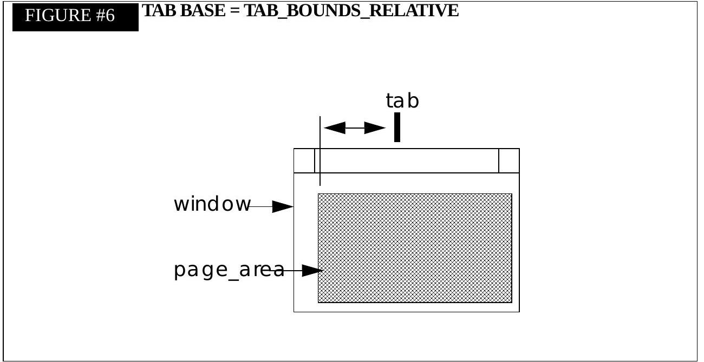
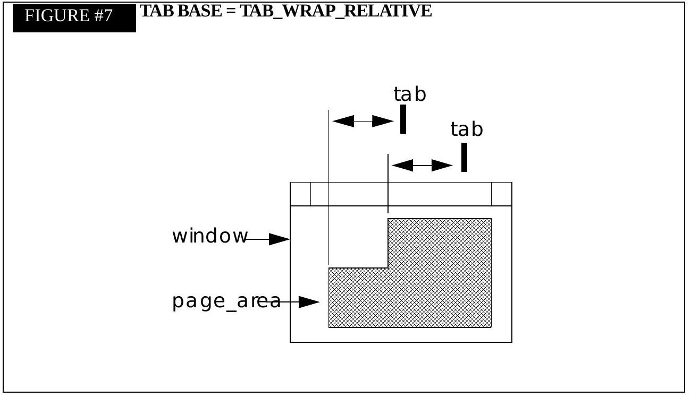
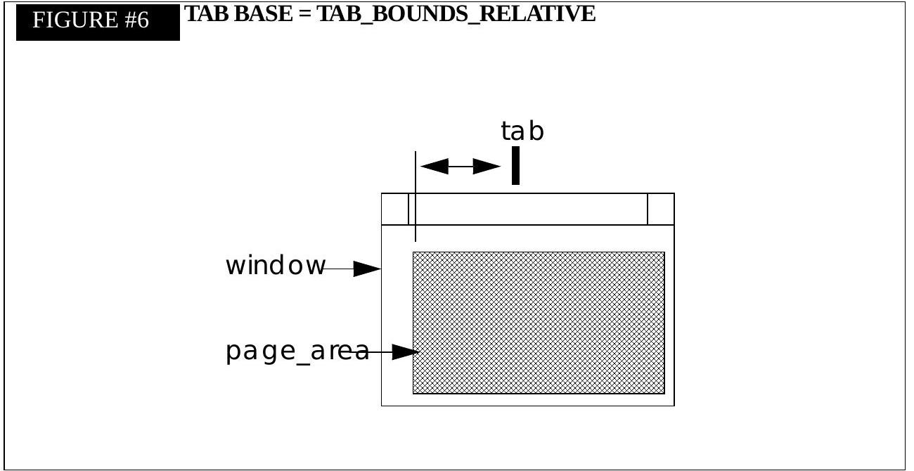
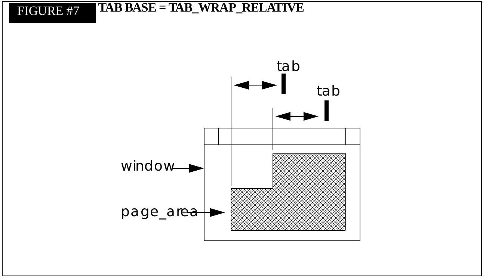The purpose of this document is to provide initial programming information for the OpenPaige developers. Comments are welcome, as are useful example code submissions. Questions and answers from OpenPaige developers may be used in subsequent editions of the manual.
The OpenPaige technology is quite extensive, so we recommend that you do not simply dive into the middle of this manual and start implementing complex features.
Our advice is to implement this software by following these gradient steps:
You should also consult the index to locate the topic(s) of interest quickly.
Generally, we have placed the parts of OpenPaige that most users will want and that are the most straight forward in the front. As you move to the back of the manual, the functionality will become more complex.
It is important to remember that no user will need the entire functionality. If you are contemplating a complex feature, or one in which you will need detailed knowledge of OpenPaige or working in the chapters toward the rear of the manual, please contact OpenPaige Tech Support via electronic mail for an evaluation and suggestions on how you can easily accomplish your goal. We can often suggest the easiest way to do something if we are consulted before you are buried in buggy code. Also knowing what you are doing and why you are doing it "that way" helps us to build better features.
If you are using the OpenPaige API directly, consult the source files in the Control directory (the "demo" simply uses the OpenPaige Custom Control; the Custom Control source files show how to access the API).
You may contact our Technical Support service if the above suggestions fail to help. However, we do not accept any telephone support questions whatsoever. All questions must be submitted by email; we will always attempt to handle your questions as quickly and as thoroughly as possible. You can email your support questions to .
Since OpenPaige is designed to be a multi-platform, multi-application processing editing library, we have had to make certain conventions in how the functions are described.
Certain platforms require pointers which are outside the current segment to be designated as far pointers, such as Windows. Other platforms, such as the Macintosh do not require this. For the Macintosh, PG_FAR has been declared as nothing and these differences can be ignored.
pascal keywordThe pascal keyword has been left out of the function definitions in this document; the actual header file(s) will contain that keyword. All external OpenPaige functions are declared using the Pascal calling conventions.
To maintain compatibility across all platforms, certain new types have been declared as follows:
| OpenPaige Type | Typedef'd From |
|---|---|
pg_short_t |
unsigned short |
pg_char |
unsigned short |
pg_char_ptr |
pointer to pg_char |
pg_bits8 |
unsigned char |
pg_bits8_ptr |
pointer to pg_bits8 |
pg_boolean |
short |
pg_error |
short (for error codes) |
memory_ref |
unsigned long |
PGSTR |
pg_char_ptr |
| OpenPaige Type | Typedef'd From |
|---|---|
pg_short_t |
unsigned short |
pg_char |
unsigned char |
pg_char_ptr |
pointer to pg_char |
pg_bits8 |
(same as pg_char) |
pg_bits8_ptr |
(same as pg_char_ptr) |
pg_boolean |
short |
pg_error |
short (for error codes) |
memory_ref |
unsigned long |
PGSTR |
pg_char_ptr |
Frequent use of the term M_NULL exists throughout this manual. This is an OpenPaige macro that simply expands to (value of) zero. It is used for indicating a "null" for an OpenPaige memory reference.
A single header file, cpudefs.h controls basic definitions for the platform in which the source files are intended.
Windows users can ignore the "debug mode" libraries described below. This method of debugging applies only to Macintosh versions.
OpenPaige is compiled in both "debug" and "non debug" modes. Two sets of libraries are provided for this purpose.
When you use the "debug" libraries, you must also include pgdebug.c in your project. This lets you break into a source-level debugger to learn why OpenPaige is raising an exception. To use the OpenPaige debugger, open pgdebug.c and place a break point at the suggested spot (source comments indicate the spot).
If you break into the debugger, the message parameter is a pascal string.
Source code users: Debug mode is controlled by a single #define in CPUDefs.h, #define PG_DEBUG.
Debug mode slows the performance down substantially. It is recommended to use OpenPaige in debug mode during your development, but to turn it off for your final release, if for no other reason than increased performance.
If you are using OpenPaige for a new application, or integrating OpenPaige for the first time, it would be wise to consider implementing the OpenPaige Custom Control. Documentation for this subset of OpenPaige is contained in a separate, smaller manual.
The Custom Control can potentially save you substantial amounts of development time, particularly to get "up and running" quickly. To make this decision, consider the following:
If you decide to use the OpenPaige Custom Control, you do not need to read this manual any further! Immediately proceed to the OpenPaige Control manual; use this (larger) Programmer's Guide only when/if you need to call the API directly.
This section provides the bare minimum code to get up and running with OpenPaige. This minimum functionality assumes one single default font and style, a single rectangle for display and word wrapping, no scrolling, nothing fancy.
Be sure to consult the release note and individual installation instructions included in each release. OpenPaige installation will change with versions and even interim releases. This makes checking the latest notes on the disk critical.
Regardless of whether you are a source code user or an object-code-only user, all source files in your application that call OpenPaige functions must include, at a minimum:
#include "Paige.h"As for the OpenPaige software itself, the minimum configuration is given below.
The Windows version provides several library options; choose the appropriate libraries based upon the information provided below.
Most libraries include the option between DLL(s) and static libraries.
Multilingual (will handle double-byte codes such as Kanji)
(DLL Version Only)
PGML16.DLL (Main OpenPaige)
PGMLCT16.DLL (Custom control)Non-Multilingual (no requirements for double-byte codes)
DLL Libraries
^^^^^^^^^^^^^
PAIGE.DLL (Main OpenPaige)
PGCNTL.DLL (Custom control)
Static Libraries
^^^^^^^^^^^^^^^^
PG16LIB.LIB (Main OpenPaige)
PGCTL16.LIB (Custom control)DLL Libraries
^^^^^^^^^^^^^
PGUNICOD.DLL (Main OpenPaige)
PGUNICTL.DLL (Custom control)
Static Libraries
^^^^^^^^^^^^^^^^
PGUNILIB.LIB (Main OpenPaige)
PGUNCTLB.LIB (Custom control)DLL Libraries
^^^^^^^^^^^^^
Paige32.DLL (Dynamic Linked Library for main (OpenPaige)
Pgentl32.DLL (Dynamic Linked Library for custom control)
Static Libraries
^^^^^^^^^^^^^^^^
PGLIB32.LIB (Main OpenPaige)
PGCTLLIB.LIB (Custom control)All versions for Windows 95 and NT are multilingual-compatible.
Single Thread
^^^^^^^^^^^^^
PAIGE32B.DLL (Main OpenPaige)
PGCTL32B.DLL (Custom Control)
Multithread
^^^^^^^^^^^
PG32BMT.DLL (Main OpenPaige)
PGC32BMT.DLL (Custom control)When using any of the DLL libraries, add the file with the same name plus the ".LIB" extension. For example, if using PAIGE.DLL for the runtime library, add PAIGE.LIB to your project.
If you are using Think C or Metrowerks CodeWarrior, add all libraries to your project from the "Debug Libraries" OR "Runtime Libraries" folder (not both). Running in debug mode is suggested for general development, while non-debug is suggested for performance testing (for speed) and/or for final release of your product. Debug mode will reduce the program's performance substantially.
If you are using Metrowerks CodeWarrior, you must be sure to remove all previous versions of header files. Compiler complaints may be the result of CodeWarrior finding the incorrect header or object file.
The source code package includes "make" files for building OpenPaige libraries with MSVC++. If you need to create your own project file to build an OpenPaige library, the following information may prove useful:
.C files from the pgsource directory. None of them should be excluded.pgdebug from the pgdebug directory. (NOTE: This file compiles to zero bytes of code unless #define PG_DEBUG is present in CPUDEFS.H [see “Compiler Options" below].).C files from pgplatfo regardless of the target platform: pgio.c, pgmemmgr.c, pgosutl.c, pgscrap.c.pgplatfo: pgwin.c and pgdll.c (the latter if compiling as a DLL) for Windows, and pgmac.c and pgmacput.c for Macintosh..DEF file. With MSVC 1.5x you can ask to generate a default .DEF, in which case you should choose to do so and rebuild.void* type casting (or lack thereof). In most cases, you can work around this problem by compiling your project as straight C with an output for static or dynamically-linked library, then include that library in your main project. For Metrowerks CodeWarrior (Macintosh) you can work around this problem by turning OFF the option, "Invoke C++ Compiler".UNICODE and _UNICODE in the preprocessor option(s). Do not define these constants in the header file(s) or you won't necessary achieve an accurate Unicode library.OLENLS.LIB.All options for different target platforms and library types are controlled in CPUDEFS.H. Generally, only the first several lines in CPUDEFS.H need to be changed to compile for different platforms. The following guidelines should be followed:
#define WIN16_COMPILE (should be ON)
#define WIN32_COMPILE (should be OFF)In addition to above:
#define WIN_MULTILINGUAL (should be added to the file or preprocessor)#define WIN16_COMPILE (should be OFF)
#define WIN32_COMPILE (should be ON)There are other miscellaneous options that may imply a requirement to be enabled (by their names) such as WIN95_COMPILE. Do not turn these on, regardless of platform! Enable only WIN32_COMPILE for all 32-bit versions.
You do not need to define anything other than WIN32_COMPILE to support double-byte multilingual editing for Windows NT and Windows 95; that support is generated automatically.
For Unicode, you must define UNICODE and _UNICODE in your preprocessor options of the compiler. (If no preprocessor option, #define UNICODE somewhere in your sources or headers to allow all system header files to recognize the Unicode option).
To compile as a DLL:
#define CREATE_MS_DLL (should be ON)If compiling as a static library or non-DLL:
#define CREATE_MS_DLL (should be OFF)OpenPaige has a built-in debugger which can be enabled by compiling with the following:
#define PG_DEBUG (OpenPaige debugger compiles if ON)When this is defined, all OpenPaige exceptions or debugging errors jump into the code in pgdebug.c.
Compiling with PG_DEBUG will dramatically reduce the performance!
A special resource has been provided on your OpenPaige disc which the Macintosh-specific code within OpenPaige uses to initialise default character values (such as arrow keys, backspace characters, invisible symbols, etc.). You may copy and paste this resource into your application's resource and you may modify its contents if you want different defaults.
This resource is not required to use OpenPaige successfully. If it is missing, initialisation simply sets a hard-coded set of defaults.
See also Changing Globals.
Some place early in your application you need to initialise the OpenPaige software; the recommended place to do so is after all other initialisations have been performed for the main menu, Mac Toolbox, etc. To initialise, you need to reserve a couple blocks of memory that OpenPaige can use to store certain global variables (OpenPaige does not use any globals and therefore requires you to provide areas it can use to store required global structures).
To initialise OpenPaige you must call two functions in the order given:
#include "Paige.h"
(void) pgMemStartup (pgm_globals_ptr mem_globals, long max_memory);
(void) pgInit (pg_globals_ptr globals, pgm_globals_ptr mem_globals);Calling pgMemStartup initialises OpenPaige's allocation manager. This call must be made first before pgInit. The mem_globals parameter must be a pointer to an area of memory which you provide. The usual (and easiest) method of doing this is to define a global variable that will not relocate or unload during the execution of your program, such as the following:
pgm_globals memrsrv; // <--somewhere that will NOT unloadYou do not need to initialise this structure to anything—pgMemStartup initialises this structure appropriately.
max_memory should contain the maximum amount of memory OpenPaige is allowed to use before purging memory allocations. If you want OpenPaige to have access to all available memory (which is strongly recommended), pass 0 for max_memory.
For example, suppose you only wanted to use 200 kB of memory for all OpenPaige documents, combined. In this case, you would pass 200000 to pgInit. If you don't care, or want it to use all memory available, you would pass 0.
After pgMemStartup, call pgInit, which initialises every other part of OpenPaige.
globals is a pointer to an area of memory which you provide. The usual (and easiest) method of doing this is to define a global variable that will not relocate or unload during the execution of your program, such as the following:
pg_globals paigersrv; // <-- somewhere that will NOT unloadThe structure pg_globals is defined in paige.h (and shown in Changing Globals). You do not need to initialise this structure to anything—OpenPaige will initialise the globals structure as required. It is only necessary that you provide the space for this structure and pass a pointer to it in pgInit.
mem_globals parameter in pgInit must be a pointer to the same structure passed to pgMemStartup.
The best place to initialise OpenPaige in the constructor of the CWinApp derived class. Also the best place to put the OpenPaige globals and memory globals is in the CWinApp derived class.
(.H)
class MyWinApp : public CWinApp
{
...
public:
pgm_globals m_MemoryGlobals;
pg_globals m_Globals;
...
}
(.CPP)
MyWinApp::MyWinApp()
{
pgMemStartup(&m_MemoryGlobals, 0);
pgInit(&m_Globals, &m_MemoryGlobals);
...
}
pgInitcrashes
It is possible to crash in pgInit. This is very rare however. Here are the main possibilities:
MemStartup.For applications that require a shutdown of all allocations it has created, call the following functions, in the order shown, before terminating your application:
(void) pgShutdown (pg_globals_ptr globals);
(void) pgMemShutdown (pgm_globals_ptr mem_globals);globals and mem_globals parameters must be pointers to the same structures given to pgInit and pgMemStartup, respectively. After pgShutdown, you must not call any OpenPaige functions (except for pgInit). After pgMemShutdown, all allocations placed in globals are de-allocated.
All pg_refs and all memory references allocated anywhere by OpenPaige become invalid after pgShutdown, so make sure this is the very last OpenPaige function you call.
Be sure to call both pgShutdown and pgMemShutdown, in that order, before EXIT, or you will have memory leaks and resources that are never released.
pgShutdown and pgMemShutdown actually dispose every memory allocation made by OpenPaige since pgMemStartup; you therefore don't really need to dispose any pg_refs, shape_refs or other OpenPaige allocations.ExitToShell using the app version. Mac developers working with code resource libraries will still need to call pgShutdown and pgMemShutdown.CxxAppxExitInstance() and call ::pgShutdown and ::pgMemShutdown.The best place to shutdown OpenPaige is in the destructor of the CWinApp derived class. Example:
(.CPP)
MyWinApp::~MyWinApp()
{
...
pgShutdown(&m_Globals);
pgMemShutdown(m_MemoryGlobals);
}By "OpenPaige object" is meant a single item that can edit, display and otherwise manipulate a block of text, large or small.
Calling pgNew, below, returns a reference of type pg_ref. This pg_ref can then be passed to all the other functions given in this manual.
(pg_ref) pgNew (pg_globals_ptr globals, generic_var def_device, shape_ref vis_area, shape_ref page_area, shape_ref exclude_area, long attributes);The above function returns a new pg_ref; the pg_ref can then be passed to other functions to insert text and edit text.
globals parameter must be a pointer to the same pg_globals structure you passed to pgInit at startup time.
Attributes are described in Attribute Settings and Changing Attributes, but can be set here as well.
def_device parameter defines what graphics port this OpenPaige object should draw to by default; what is actually passed to def_device can slightly vary between platforms as follows:
If def_device is NULL then current GrafPort is used as the default device; if def_device is non-NULL and not "-1" it is assumed to be a GrafPtr and that port is used for subsequent drawing.
If def_device is 0L then the current window of focus is used as the default window where drawing will occur (e.g., GetFocus is used to determine the window); if def_device is non-NULL and not -1 it is assumed to be type HWND and that window is used for subsequent drawing.
This HWND in the def_device is not a Device Context.
Essentially, the dev_device should be the window (or child window) that is receiving the message to create the OpenPaige object, e.g. WM_CREATE.
If you pass MEM_NULL to def_device, OpenPaige will obtain the window of current focus. You should only use this method if your document window is known to be the window of focus, otherwise passing MEM_NULL can result in a crash.
The best place to put pgNew() is in the OnCreate() member of the CView derived class. It is important to call the CView::OnCreate() before calling pgNew(). Examples follow:
(.H)
class MyView : public CView
{
...
public:
pg_ref m_Paige;
...
}
(.CPP)
int MyView::OnCreate(LPCREATESTRUCT lpCreateStruct)
{
pgm_globals_ptr memory_globals = ((MyWinApp*)AfxGetApp()) -> m_MemoryGlobals;
int return_value = 0;
CRect client_rect;
rectangle client_paige_rect;
if(CView::OnCreate(lpCreateStruct == -1)
return -1;
ASSERT(m_hWnd);
ASSERT(isWindow(m_hWind));
// Non-OpenPaige initialisation here!
GetClientRect(&client_rect);
RectToRectangle(&client_rect, &client_paige_rect);
shape_ref window = pgRectToShape(AfxGetMemoryGlobals(), &rect);
PG_TRY(AfxGetApp() -> m_MemoryGlobals // See Chapter 19 of the OpenPaige manual.
{
m_Paige = pgNew(AfxGetApp() -> m_Globals,(generic_var)(LPVOID)m_hWnd, window, window, MEM_NULL, 0);
};
PG_CATCH
{
return_value = -1;
};
PG_ENDTRY;
pgDisposeShape(window);
return return_value;
}If def_device is -1 then no device is assumed (which implies you will not be drawing anything and/or will specify a drawing port later). If you need to pass -1 for the def_device parameter, you can use the following predefined macro:
#define USE_NO_DEVICE (generic_var) -1 // pgnew is with no deviceIf def_device is neither -1 nor a null pointer it is assumed to be an OpenPaige drawing port to be used for the default (see graf_device, pgSetDefaultDevice).
For "Up & Running", pass a null pointer for def_device (for Macintosh and PowerPC) or the HWND associated with the current message for Windows-PC.
Parameters vis_area, page_area and exclude_area define the literal shapes for which text will display, wrap and jump over, respectively. Each of these define how the text will appear within the OpenPaige object as follows:
vis_area defines the visible area that shows text, or the "hole" in which it displays. This area may be physically smaller than the document containing the text; any physical area of the screen that is outside the boundary of vis_area will clip (mask) the text from view.
page_area defines the container in which text will wrap and flow. It is referred to as the page area since it literally defines the page size of your document. The width of page_area also defines the boundaries for which text must wrap. The page_area can be any size, larger or smaller than vis_area.
exclude_area is an optional shape which defines an area or areas in which text must avoid. In other words, if a line of text were to intersect any part of the exclude_area, it must jump over that area in some way to avoid it.
For pgNew, you can pass MEM_NULL for exclude_area, but you must pass a valid shape_ref for vis_area and page_area.
See "Up & Running Shapes" on how to create a shape_ref.
attributes can contain different bit settings which define specific characteristics for the OpenPaige object. For the purpose of getting "Up & Running" quickly, pass 0 for this parameter (or see “Changing Attributes” on page 3-1).
The initial font and text format used by the pg_ref returned from pgNew will be taken from pg_globals. To change what font, style or paragraph format that a new pg_ref assumes, set the appropriate information in pg_globals after calling pgNew.
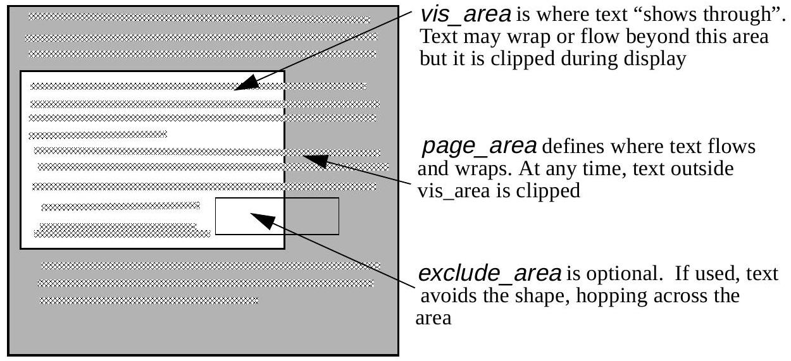
The value MEM_NULL is a defined value in OpenPaige header files that you should use to imply a "null" shape_ref or memory_ref—see "The Allocation Mgr" on page 25-1.
pgNewOpenPaige provides excellent error checking for pgNew. See "Exception Handling" on page 26-1.
To avoid a lengthy discussion at this time regarding OpenPaige shapes, we will assume at this time you wish to display text within a simple rectangle (as opposed to some other non-rectangular shape or multiple "container" rectangles).
The easiest way to create a new shape is to use the following function:
(shape_ref) pgRectToShape (pgm_globals_ptr mem_globals, rectangle_ptr rect);This returns a new shape_ref (which can be passed to one of the area parameters in pgNew). The globals parameter must be a pointer to the same structure given in pgInit and pgNew.
The rect parameter is a pointer to a structure consisting of a top-left and bottom-right coördinate that encloses a rectangle. The coördinate and rectangle definitions are as follows:
typedef struct
{
long v; // vertical position
long h; // horizontal position
}
co_ordinate;
typedef struct
{
co_ordinate top_left; // Top-left of rect
co_ordinate bot_right; // Bottom-right of rect
}
rectangle, *rectangle_ptr;Hence, if you set a rectangle to the desired dimensions and pass a pointer to that rectangle in pgRectToShape, a new memory reference is returned which contains a shape of that rectangle.
The reason pgNew requires a shape_ref instead of rectangles is that an OpenPaige object can have non-rectangular shapes for any of its three areas.
For further information regarding shapes, particularly non-rectangular shapes, see "All About Shapes" on page 12-1.
The pgNew function makes a copy of the shape you pass to its parameters. Once you have received a new pg_ref you can dispose the shape. To do so, call:
void pgDisposeShape (shape_ref the_shape);Two utilities exist that make it easier to create OpenPaige rectangles:
\#include "pgTraps.h"
(void) RectToRectangle (Rect PG_FAR *r, rectangle_ptr pg_rect);
(void) RectantleToRect (rectangle_ptr pg_rect, co_ordinate_ptr offset, Rect PG_FAR *r);RectToRectangle converts Rect r to rectangle pg_rect. The pg_rect parameter must be a pointer to a rectangle variable you have declared in your code.
RectangleToRect converts pg_rect to r. Also, if offset is non-null, the resulting Rect is offset by the amounts of the co_ordinate (for example, if offset.h and offset.v were 10, -5 the resulting Mac Rect would be the values in pg_rect with left and right amounts offset by 10 and top and bottom amounts offset by -5.
Type Rect is identical to type RECT, and both can be used interchangeably.
Since a Mac Rect has a ±32K limit for all four sides, OpenPaige rectangle sides larger than 32K will be intentionally truncated to about 30K.
Although OpenPaige is designed to be platform-independent, is does assume a target graphics device that all drawing is transferred to.
When a pg_ref is created, the default target device is set to whatever is appropriate for the running platform. For Macintosh, the default device is the current GrafPort set when pgNew is called.
Unlike WSE, OpenPaige "remembers" what port it should draw to and all subsequent drawing will occur in that port unless you specifically override it.
For the purpose of getting "Up & Running", just make sure you create your window first and have it set as the current port before calling pgNew. In subsequent sections, we will provide different ways to change the target port.
OpenPaige does not care what a window's origin is set to (top-left co_ordinate values). OpenPaige only cares about the area parameters you provide for pgNew; remember, OpenPaige doesn't really know what a window is and doesn't know anything about origins. OpenPaige simply and only follows the coördinates you have set for vis_area, page_area and exclude_area. If your page_area shape passed to pgNew, for instance, had a top-left of -10000,-9999, the first character of the first line will be drawn at that coördinate location regardless of where the top-left of your window might physically exist. In other words, OpenPaige coördinates are always relative to the associated window's coördinates.
As mentioned earlier, pgNew will accept certain characteristics defined in the "attributes" parameter. The current version supports the following:
#define NO_WRAP_BIT 0x00000001 // Wraps only on <CR> or <LF>
#define NO_LF_BIT 0x00000002 // Do not add font
#define NO_DEFAULT_LEADING 0x00000004 // Do not add font leading
#define NO_EDIT_BIT 0x00000008 // No editing (display only)
#define EXTERNAL_SCROLL_BIT 0x00000010 // App controls scrolling
#define COUNT_LINES_BIT 0x00000020 // Keep track of line/para count
#define NO_HIDDEN_TEXT_BIT 0x00000040 // Do not display hidden text
#define SHOW_INVIS_CHAR_BIT 0x00000080 // Show control characters
#define SMART_QUOTES_BIT 0x00000800 // Do "smart quotes"
#define NO_SMART_CUT_BIT 0x00001000 // Do not do "rt cut/paste"
#define NO_SOFT_HYPHEN_BIT 0x00002000 // Ignore soft hyphens
#define NO_DUAL_CARET_BIT 0x00004000 // Do not show dual carets
#define SCALE_VIS_BIT 0x00008000 // Scale vis_area when scaling
#define BITMAP_ERASE_BIT 0x00010000 // Erase page(s) with bitmap drawing
#define TABS_ARE_WIDTHS_BIT 0x10000000 // Fixed-width tab characters
#define LINE_EDITOR_BIT 0x40000000 // Document is line editor modeNO_WRAP_BIT turns off word wrapping (which means a line of text will continue horizontally until a carriage-return or line-feed character is encountered).
NO_LF_BIT causes OpenPaige to ignore line-feed characters. The usual purpose of this setting is for imported text that contains both CR and LF at the end of every line; setting the NO_LF_BIT attribute will cause LF characters to be invisible and have no effect of any kind.
NO_DEFAULT_LEADING prevents any extra leading reported by the system for font attributes. In Windows, extra leading is the external leading value reported by GetTextMetrics; in Macintosh, it is the leading value reported by GetFontInfo. By default, OpenPaige adds the extra leading to every line unless this attribute is set.
NO_EDIT_BIT disables editing. In effect, if NO_EDIT_BIT is set, the "caret" will not blink and the user can't insert characters.
EXTERNAL_SCROLL_BIT tells OpenPaige that your application will control all scrolling. (This fairly complex subject is discussed elsewhere.)
COUNT_LINES_BIT tells OpenPaige to keep track of line and paragraph numbers, in which case you can use the line and paragraph numbering features in OpenPaige (see "Line and Paragraph Numbering"). Please note that constantly counting lines and paragraphs, particularly if the document is large and contains wordwrapping with style changes, can consume considerable processing time. Hence, COUNT_LINES_BIT has been provided to enable/disable this feature.
NO_HIDDEN_TEXT_BIT suppresses the display of all text that is "hidden" (OpenPaige will accept a hidden text attribute as a style). If this bit is not set, hidden text is displayed with a grey strike-through line; if it is set, the text is completely invisible and ignored for line width computations.
SHOW_INVIS_CHAR_BIT causes all invisible characters (control codes such as CR and LF) to be displayed using special character symbols. These symbols are defined in pg_globals (see “Changing Globals”).
EX_DIMENSION_BIT tells OpenPaige to include the exclusion area as part of the "document height".
NO_WINDOW_VIS_BIT – Do not respect window's clipped area.
SMART_QUOTES_BIT – Do "smart quotes" (curly quotation marks).
NO_SMART_CUT_BIT – Do not do "smart cut/paste"
NO_SOFT_HYPHEN_BIT – Ignore soft hyphens
NO_DUAL_CARET_BIT – Do not show dual carets
SCALE_VIS_BIT tells OpenPaige to scale the vis_area along with the text when scaling has been enabled. By default, the vis_area is left alone when an OpenPaige document is scaled, leaving the text "behind" the visual boundaries reduced or enlarged. In certain cases—particularly when employing multiple pg_refs into the same document as "edit boxes"—you need this attribute set; for single pg_ref documents that fill all or most of the window, you generally do not want this attribute set.
BITMAP_ERASE_BIT tells OpenPaige to erase area(s) on the page using offsetting bitmap drawing, otherwise the same portions of the screen are erased directly. The purpose of this attribute is to draw "background" graphics in the window when/if OpenPaige needs to erase the screen.
TABS_ARE_WIDTHS_BIT causes all
LINE_EDITOR_BIT tells OpenPaige that you intend to maintain the document as a "line editor", defined as one where words will not wrap and all lines remain the same height. If OpenPaige knows this in advance, it can bypass the usual "pagination" functions and you can achieve substantially increased performance for line editors.
If you set LINE_EDITOR_BIT you must not set any attributes to wrap the text, nor should you vary the point size(s) or attempt any irregular page shapes or page breaks. You can still produce multi-styled text as long as the text height(s) are consistently the same.
Any (or all) of the above settings can exist at once.
You can always change these attributes after an OpenPaige object is created (see section 3.1, "Changing Attributes").
pgNew/* This creates a new OpenPaige object */
#include <Paige.h>
#include "pgTraps.h"
extern pg_globals paige_rsrv;
// Routine: Open_Window
// Purpose: Open our window
/* Note: the window has already been made and will be shown and selected immediately after this function */
void Open_Window(WindowPtr win_ptr)
{
if (win_ptr!=nil) /* See if opened OK */
{
pg_ref result;
shape_ref vis, wrap;
rectangle rect;
/* this sets vis_area and wrap_area to the shape of the window itself */
RectToRectangle(win_ptr->portRect, &rect);
vis = pgRectToShape(&paige_rsrv, &rect);
wrap = pgRectToShape(&paige_rsrv, &rect);
result = pgNew(&paige_rsrv, NULL, vis, wrap, NULL, EX_DIMENSION_BIT);
} /* End of IF */
}Once you are completely through with a pg_ref (e.g., user closes the window), dispose it with:
(void) pgDispose (pg_ref pg);This function disposes all data structures within pg; the pg_ref will no longer be valid.
Be certain you have not shut down the OpenPaige library before disposing a pg_ref, or you will crash.
The best place to destroy the OpenPaige object is in the OnDestroy() member of your CView derived class. Example:
(.CPP)
void PGView::OnDestroy()
{
pgDispose(m_Paige);
CView::OnDestroy();
}If you need to obtain the pointer to pg_globals (originally given to pgInit and to pgNew), you can get it from a pg_ref using the following:
(pg_globals_ptr) pgGetGlobals (pg_ref pg);The typical use for pgGetGlobals is to obtain a pointer to pgGlobals in places where the original global structure, given to pg_init, is not easily accessible.
FUNCTION RESULT: This function returns the globals pointer as saved in pg.
To change globals, see section 3.8, "Changing Globals".
To draw the text in a pg_ref to a window, use the following function:
(void) pgDisplay (pg_ref pg, graf_device_ptr target_device, shape_ref vis_target, shape_ref wrap_target, co_ordinate_ptr offset_extra, short draw_mode);The pg_ref's contents are drawn to the target_device. If, however, you pass a null pointer to target_device the text will be drawn to the default device set during pgNew. (For the purposes of getting "Up & Running", we will assume you want to draw to the default device, which will typically be a window that was created prior to pgNew, so pass a null pointer).
vis_target and wrap_target parameters are optional shapes which will temporarily redefine the OpenPaige object's vis_area and wrap_area, respectively. Using these two parameters, you can temporarily control and/or change the way an OpenPaige object will display. Text gets clipped to vis_target, or, if vis_target is a null pointer, to the original vis_area, and text will wrap within wrap_target, or, if wrap_target is MEM_NULL, within the original wrap_area. (For the purposes of getting "Up & Running", pass MEM_NULL for these two parameters.)
If offset_extra is non-null, all drawing is offset by the amounts in that coördinate (all text is offset horizontally by offset_extra -> h and vertically by offset_extra -> v. If offset_extra is a null pointer, no extra offset is added to the text.
The draw_mode parameter defines the way text should be transferred to the target device. The draw_mode selections are shown below.
See "Display Proc" about how to add ornaments to the text display.
You do not need to specify any drawing device for pgDisplay if you intend to display in the window given to pgNew. In this case, just pass NULL to the target_device parameter.
If for some reason you need to redirect the display to some other window or device (such as a bitmap), you can create a graf_device record for that purpose and pass a pointer to that structure for the target_device.
Creating a graf_device for this purpose is the same as the graf_device record used for pgPrintToPage. See "Printing in Windows".
typedef enum
{
draw_none, // Do not draw at all
best_way, // Use most efficient method(s)
direct_copy, // Directly to screen, overwrite
direct_or, // Directly to screen, "OR"
direct_xor, // Directly to screen, "XOR"
bits_copy, // Copy offscreen
bits_or, // Copy offscreen in "OR" mode
bits_xor, // Copy offscreen in "XOR" mode
bits_emulate_copy // Copy "fake" offscreen
bits_emulate_or // "Fake" offscreen in "OR" mode
bits_emulate_xor // "Fake" offscreen in "XOR" mode
};The drawing modes bits_emulate_copy, bits_emulate_or, and bits_emulate_xor are identical to bits_copy, bits_or and bits_xor save that no bitmaps are used and the drawing is directly to the screen. Unlike the non-bitmap drawing modes, however, OpenPaige's standard callback hooks are called to allow modification to its "bitmap", which in this case is the direct screen. Bitmap modification is typically used to render background images, patterns, and other forms of graphics.
Unless you need to create a special or unusual effect, always pass direct_or or bits_emulate_or when responding to WM_PAINT (Windows) or an update
event (Macintosh), and best_way for all other functions requiring a draw_mode.
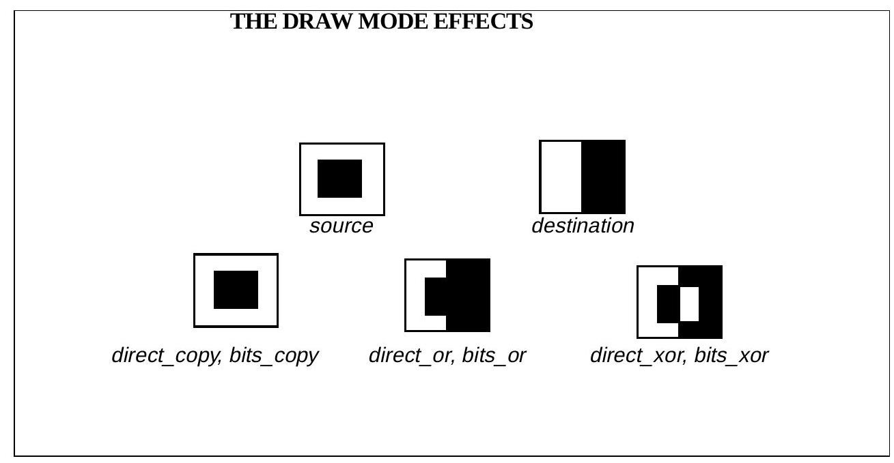
Additional draw modes require the developer to use the custom draw hook and draw his own. See "text_draw_proc" for information on how to do custom drawing.
A value of draw_none will disable all drawing and visual scrolling. In other words, if the OpenPaige document changes in some way, nothing would change on the screen until the application re-displayed the OpenPaige text contents. The "draw nothing" feature is used only for special cases where an application wants to change without drawing anything yet.
WM_PAINT Event (Windows){
PAINTSTRUCT ps;
BeginPaint(hWnd, &ps);
pgDisplay(pg, NULL, MEM_NULL, MEM_NULL, NULL, direct_or);
}
EndPaint(hWnd, &ps);To display the OpenPaige object in MFC, use OnPaint(). Do not try to use OnDraw() or it will not draw correctly.
(.CPP)
void PGView::OnPaint()
{
CWnd::OnPaint();
// If you don't use the OnEraseBkgnd() member of the MFC class,
// you must erase the background of the window first.
pgDisplay(m_Paige, NULL, MEM_NULL, MEM_NULL, NULL, bits_emulate_or);
}OpenPaige actually makes very little distinction between keyboard entry and any other text insertion, and in both cases the following function is used:
(pg_boolean) pgInsert (pg_ref pg, pg_char_ptr data, long length, long position, short insert_mode, short modifiers, short draw_mode);This function will insert length bytes pointed to by data. The insertion will occur at byte offset position if it is positive or zero; if position is CURRENT_POSITION (a #defined constant of -1), the insertion occurs at the current insertion point.
The insert_mode parameter defines the type of data being inserted, which can be any of the following:
typedef enum
{
key_insert_mode, // Typing insertion
key_buffer_mode, // Typing-buffer insertion
data_insert_mode, // Raw data insertion
}For keyboard entry, pass key_insert_mode or key_buffer_mode; for any other data insertion, pass data_insert_mode.
The difference between the two "key" insert modes and data_insert_mode is that a key insertion can contain special controls such as arrow keys and backspace (delete). For data_insert_mode, the bytes will be inserted as is.
If key_insert_mode is used, the new character(s) will draw immediately if draw_mode is nonzero.
If key_buffer_mode is used, character(s) will be buffered (temporarily saved) and drawn later by OpenPaige; the purpose of this mode is to avoid "getting ahead" of keyboard entry on complex document entry. It is also useful for Macintosh double-byte script entry, in which the text is entered all at once from a floating palette window.
The key_buffer_mode is usually meaningless in the Windows environment; instead, you should always use key_insert_mode when processing keyboard characters. Using key_buffer_mode (where chars are stored and inserted later) requires a call to pgIdle which, under the Windows messaging system, would require you to set up a "timer" message that occurs every few milliseconds, which is probably not implemented in most applications.
If keys are buffered, OpenPaige will display the new text during the first pgIdle function call (see “Blinking Carets & Mouse Selections”).
"Arrows" and other control codes are defined (and changeable) in the pg_globals record (see "Changing Globals"); these special controls will be processed correctly for key_insert_mode and key_buffer_mode only.
The modifiers parameter can change the way the pg_ref will respond to special control characters for key_insert_mode (modifiers is ignored for the other insertion modes). In the current version, the following value is supported:
#define EXTEND_MOD_BIT 0x0001 // Extend the selectionIf modifiers is EXTEND_MOD_BIT, the selection range is extended if an arrow key is "inserted." Other selection modifier bits are explained in "Modifiers".
The draw_mode for pgInsert performs identically to pgDisplay and can be any of the verbs defined for drawing. If you just want to insert but not display, pass draw_none for draw_mode. If key_buffer_mode is used for insertion, the draw_mode is saved and used later when the text is displayed.
For keyboard insertions, the recommended draw_mode is best_way.
Mac developers should not confuse these modifier bits with the modifiers given in the event record. There is no similarity. The modifiers shown here are the ones OpenPaige supports.
The insertion will assume either the text format of the current insertion point OR the format of the last style/font/format change, whichever is more recent. This is true even if you specify an insert position other than the current point. If you want to force the insertion to be a particular font or style, simply call the appropriate function to change the text format prior to your insertion.
The function returns TRUE if the text and/or highlighting in pg changed in any way. Note that no change occurs only if key_buffer_mode is passed as the insert mode, in which case the characters are stored and not drawn until the next call to pgIdle. Another situation that will not change anything visually is passing draw_none as the draw_mode. In both cases, pgInsert would return FALSE. The purpose of this function result is for the application to know whether or not it should update scrollbar values or scroll to the insertion point, etc. (i.e., it is a waste of processing time to check or change scroll positions if nothing changed on the screen).
If you are using the Unicode-enabled OpenPaige library, the "data" to be inserted is expected to be one or more 16-bit characters. The data size in this case is assumed to be a character count (not a byte count). This is due to the fact that if UNICODE is defined in your preprocessor or header files (which it should be for a true Unicode-enabled application), a pg_char_ptr changes from a byte pointer to a 16-bit character pointer.
For example, to insert the Unicode value 0x0041 (letter "A") you would pass the value of 1 in the length parameter even though the character size is technically 2 bytes long.
The specified insertion position is a zero-relative byte offset. Note that this is a byte—not a "character" offset (characters in OpenPaige can be more than one byte), rather a byte offset from the beginning of all text in pg, starting at zero.
EXCEPTION: The pure Unicode version measures everything as 16 bit characters. Hence, the insertion point in this case is a character position.
If one or more characters are currently selected (selection range ≥ one character), those characters are deleted before the insertion occurs. Note that if the specified insertion position were CURRENT_POSITION, the insertion will occur to the immediate left of the previously selected text (which will have been deleted).
After the insertion, the new insertion position in pg is advanced to length bytes from the original specified position. Example: If 100 bytes were inserted at text position 500 when pgInsert returns the current insertion position will be 600.
If pgInsert occurs at the current insertion point, whatever the last style and/or font that was applied to that insertion point will be applied to the next insertion.
For example, suppose all text in pg is currently "Helvetica" font, and pg has a single insertion point (not a selected range of characters). Before inserting new text, a call is made to pgSetFontInfo with "Times Roman" font; the very next subsequent pgInsert would apply Times Roman—not Helvetica—to the new text.
However, if the insertion occurs somewhere other than the current insertion, the font/style that is applied will be whatever font/style applies to that position in text.
Hence, to implement the insertion of specific, multi-stylized text, the logic to perform should be as follows:
pgSetStyleInfo(...) - and/or - pgSetFontInfo(...);
pgInsert(..., CURRENT_POSITION,...);
pgSetStyleInfo(...) - and/or - pgSetFontInfo(...);
pgInsert(..., CURRENT_POSITION,...); etc.NOTE: For repetitive insertions, the insertion point will automatically advance the number of bytes you insert, so normally you should not need to set a new position if you are doing repetitive, sequential insertions.
WARNING: If you need to apply a specific font or style to a text insertion (such as in the logic above), do not set the insertion point after you set the style/font or that style/font attribute may be lost. If you must set position, do so BEFORE calling pgSetFont/nfo or pgSetStyleInfo.
WRONG WAY:
pgSetStyleInfo(...);
pgSetSelection(pg, 0, 0); //<-- previous style setting is lost!
pgInsert(...);RIGHT WAY:
pgSetSelection(pg, 0, 0);
pgSetStyleInfo(...); // <-- Style gets applied to next insertion
pgInsert(...);Nothing seems to happen when I insert text.
If you are doing inserts with key_insert_mode, OpenPaige won't do anything if the pg_ref is deactivated. That might be the problem. If so, you need to use data_insert_mode, not key_insert_mode, and it will then work; pgInsert does nothing.
To get Up and Running with basic keyboard editing you must add the following code to your MFC view class:
(.H)
// Declare the following private variables.
short m_KeyModifiers;
(.CPP)
// Respond to the windows message WM_KEYDOWN...
void PGView::OnKeyDown(UINT nChar, UINT nRepCnt, UINT nFlags)
{
pg_globals globals = ((MyWinApp*)AfxGetApp()) -> m_Globals;
pg_short_t verb;
switch(nChar)
{
case VK_SHIFT:
m_KeyModifiers != EXTEND_MOD_BIT;
break;
case VK_CONTROL:
m_KeyModifiers != CONTROL_MOD_BIT;
break;
case VK_LEFT:
SendMessage(WM_CHAR, globals -> left_arrow_char);
break;
case VK_UP:
SendMessage(WM_CHAR, globals -> up_arrow_char);
break;
case VK_RIGHT:
SendMessage(WM_CHAR, globals -> right_arrow_char);
break;
case VK_DOWN:
SendMessage(WM_CHAR, globals -> down_arrow_char);
break;
case VK_HOME:
verb = begin_line_caret;
if(m_KeyModifiers & CONTROL_MOD_BIT)
verb = home_caret;
if(m_KeyModifiers & EXTEND_MOD_BIT)
verb != EXTEND_CARET_FLAG;
pgSetCaretPosition(mPaige, verb, TRUE);
pgScrollToView(m_Paige, CURRENT_POSITION, 0, 0, TRUE, bits_emulate_or;
break;
case VK_END:
verb = end_line_caret;
if(m_KeyModifiers & CONTROL_MOD_BIT)
verb = doc_bottom_caret;
if(m_KeyModifiers & EXTEND_MOD_BIT)
verb != EXTEND_CARET_FLAG;
pgSetCaretPosition(m_Paige, verb, TRUE);
pgScrollToView(m_Paige, CURRENT_POSITION, 0, 0, TRUE, bits_emulate_or;
break;
case VK_PRIOR:
SendMessage(WM_VSCROLL, SB_PAGEUP);
break;
case VK_DELETE:
if(m_KeyModifiers & EXTEND_MOD_BIT)
{
long start, end;
pg_ref scrap;
pgGetSelection(m_Paige, &start, &end);
if(start == end)
return;
scrap = pgCut(m_Paige, &start, &end);
assert(scrap);
OpenClipboard();
pgPutScrap(scrap, 0, pg_void_scrap);
CloseClipboard();
pgDispose(scrap);
scrap = MEM_NULL;
SetChanged();
}
else
{
SendMessage(WM_CHAR, globals->fwd_delete_char);
}
case VK_NEXT:
SendMessage(WM_VSCROLL, SB_PAGEDOWN);
break;
pgScrollToView(m_Paige, CURRENT_POSITION, 0, 0, TRUE, bits_emulate_or);
break;
}
}
break;
case VK_INSERT:
{
if(m_Key_Modifiers & CONTROL_MOD_BIT
{
long start, end;
pg_ref scrap;
pgGetSelection(m_Paige, &start, &end);
if(start == end)
return;
scrap = pgCopy(m_Paige, NULL);
assert(scrap);
OpenClipboard();
pgPutScrap(scrap, 0, pg_void_scrap);
CloseClipboard();
pgDispose(scrap);
}
else if(m_KeyModifiers & EXTEND_MOD_BIT)
{
pg_ref scrap = MEM_NULL;
OpenClipboard();
scrap = pgGetScrap(globals, 0, HookEmbedProc);
CloseClipboard();
if scrap
{
pgPaste(m_Paige, scrap, CURRENT_POSITION, false, best_way);
pgDispose(scrap)
}
}
}
pgScrollToView(m_Paige, CURRENT_POSITION, 0, 0, TRUE, bits_emulate_or);
break;
}
}
// Respond to the Windows message WM_KEYUP...
void MyView::OnKeyUp(UINT nChar, UINT nRepCnt, UINT nFlags)
{
switch(nChar)
{
case VK_SHIFT:
m_KeyModifiers &= (~EXTEND_MOD_BIT);
break;
case VK_CONTROL:
m_KeyModifiers &= (~CONTROL_MOD_BIT);
break;
}
}
// Respond to the Windows message WM_CHAR...
void MyView::OnChar(UINT nChar, UINT nRepCnt, UINT nFlags)
{
pg_char the_char = (pg_char)nChar;
pgInsert(mPaige, &the_char, 1, CURRENT_POSITION, key_insert_mode, m_KeyModifiers, best_way);
pgScrollToView(m_Paige, CURRENT_POSITION, 0, 0, TRUE, bits_emulate_or);
}As mentioned in pgInsert, if key_buffer mode is used, the characters get stored in an internal buffer and get inserted during the next pgIdle.
There might be an occassion, however, that requires immediate insertion of anything pending in this buffer. To do so, call the following:
(pg_boolean) pgInsertPendingKeys (pg_ref pg);Calling this function will immediately "empty" any pending characters, inserting and displaying them as appropriate. If there aren't any pending characters, pgInsertPendingKeys does nothing. The function returns TRUE if one or more characters were inserted.
The display mode used when OpenPaige displays the pending buffer will be the original display mode passed to pgInsert.
To cause the "caret" to blink in a pg_ref, call the following as often as possible:
(pg_boolean) pgIdle (pg_ref pg);pgIdle should be called repeatedly while you are waiting for an event.
The pg parameter must be a valid pg_ref (can not be a null pointer).
FUNCTION RESULT: The function returns TRUE if character(s) were inserted and displayed that were stored previously from pgInsert calls with key_buffer_mode. This will only happen if you had called pgInsert, passing key_buffer_mode as the data transfer parameter. A result of TRUE or FALSE from pgIdle can help your application know whether or not it should update scrollbar values (since new text has been inserted). For Windows key_buffer_mode is not usually necessary, see “Key Insertion”.
You do not need to call pgIdle() since the blinking caret is maintained by the OS. Needlessly calling pgIdle, however, is harmless.
Clicking and dragging is accomplished by using the following function:
(long) pgDragSelect (pg_ref pg, co_ordinate_ptr location, short verb, short modifiers, long track_refcon, short auto_scroll);To change the insertion point in a pg_ref (i.e., in response to a mouse click), call pgDragSelect with the location parameter set to the location of the "click." The coördinate values must be local to the window's coördinate system (relative to the top-left window origin).
For Macintosh, location should be the same as the "where" member of the EventRecord, converted to local coördinates.
For Windows, location is usually the coördinates given to you in lParam when responding to WM_LBUTTONDOWN, WM_LBUTTONDBLCLK, or WM_MOUSEMOVE.
The verb parameter defines what action should occur, which must be one of the following:
enum
{
mouse_down, // First-time click
mouse_moved, // Mouse moved
mouse_up, // Mouse button released
}NOTE: pgDragSelect() does not retain control at any time—it always returns control immediately regardless of what verb is passed.
For the first click, pass mouse_down in verb.
In a Macintosh-specific application, while the user is holding down the mouse button, wait for the mouse location to change and, if it does, call pgDragSelect with the new location but with verb as mouse_moved.
In a Windows-specific application, call pgDragSelect(mouse_moved) in response to a WM_MOUSEMOVE if the mouse button is still down.
When the mouse button is released, pass the final location and mouse_up for verb.
It is important to call pgDragSelect with mouse_up after the user releases the mouse button even if the mouse never moved from its original location. This is because OpenPaige performs certain housekeeping chores when mouse_up is given.
The modifiers parameter controls the way text is selected. For "normal" click/drag, pass zero for this parameter; for added effects (such as responding to double-clicks, shift-clicks, etc.), see “Modifiers".
If auto_scroll is "TRUE", OpenPaige will automatically scroll the document if pgDragSelect (with verb as mouse_moved) has gone beyond the vis_area. See "All About Scrolling". For getting "Up & Running", you can pass TRUE for this parameter.
track_refcon is used when and if OpenPaige makes a call to the track-control-callback function. If a style is a "control" (the control bit set for the style class bits field), OpenPaige calls the tracking control function hook and passes the track_refcon to the app. In other words, this value is application-defined and OpenPaige does nothing with it. For getting "Up & Running", you can pass 0 for this parameter.
For "normal" mouse tracking, ignore the function result of pgDragSelect. The only time the function result is significant is when you have customized a style to be a "control" (information is available on "control" styles under "Customizing OpenPaige”). If you have not customized OpenPaige in any way, pgDragSelect will always return zero.
The following bit settings are supported for the modifiers parameter in this release:
#define EXTEND_MOD_BIT 0x0001 // Extend the selection
#define WORD_MOD_BIT 0x0002 // Select whole words only
#define PAR_MOD_BIT 0x0004 // Select whole paragraphs only
#define LINE_MOD_BIT 0x0008 // Highlight whole lines
#define VERTICAL_MOD_BIT 0x0010 // Allow vertical selection
#define DIS_MOD_BIT 0x0020 // Enable discontinuous selection
#define STYLE_MOD_BIT 0x0040 // Select whole style range
#define WORD_CTL_MOD_BIT 0x0080 // Select "words" delimited by ctrl chars
#define NO_HALF_CHARS_BIT 0x0100 // Do not go left/right on half chars
#define CONTROL_MOD_BIT 0x0200 // Word advance for arrowsVarious combinations of these bits can generally be set to create the desired effect such as word selections, paragraphs selections, etc., save that vertical selection does not work with the other modifiers. If misused regardless, it will produce unpredictable results.
The following is a description of how text is highlighted in response to each of these bits:
EXTEND_MOD_BIT will extend the selection for verb of mouse_down (otherwise the previous selection is removed). For Macintosh, this is the same as "shift-click" (but you need to determine that from your application and set this bit).
WORD_MOD_BIT will select whole words, otherwise only single characters are selected.
PAR_MOD_BIT will select whole paragraphs.
This is different than LINE_MOD_BIT (below) since a paragraph could contain several lines if word wrapping exists.
LINE_MOD_BIT will select whole lines. This differs from PAR_MOD_BIT since a paragraph might consist of many lines.
VERTICAL_MOD_BIT allows vertical selection. This bit really causes a rectangular region that selects all characters intersecting that region and will not follow any particular character. VERTICAL_MOD_BIT is mainly useful for tables and tabular columns.
DIS_MOD_BIT allows discontinuous selections. If this bit is set, the previous selection remains and a new selection range is started (OpenPaige can have multiple selection ranges).
STYLE_MOD_BIT causes whole style ranges to become selected. This is similar to word/paragraph/line highlighting except style changes are considered the delimiters (which also means the whole document could be selected in one click if only one style exists).
WORD_CTL_MOD_BIT causes text between control characters to be selected. This is similar to word/paragraph/line highlighting except control codes are considered the delimiters.
NOTE: In OpenPaige "control codes" or "control characters" are not necessarily limited to standard ASCII symbols. Control characters in the OpenPaige context are defined in
pg_globals(see "Changing Globals”).
NO_HALF_CHARS_BIT controls whether or not dragging can change the selection point half way into a character. Normally, if this bit is not set, once the mouse moves half way into a character, that character is considered to be "selected" (or unselected if moving in the opposite direction). Setting this bit, however, instructs pgDragSelect not to select the character until it has completely crossed over its area.
CONTROL_MOD_BIT is used mainly with arrow keys. This causes the selection to advance to the next word (right arrow) or to the previous word (left arrow).
For additional information about highlighting and selection range(s), see "All About Selection”.
To get Up and Running with simple mouse drag select in MFC, use the following code as a starting point:
(.H)
/* Declare the following private variables. Make sure to set m_Dragging to FALSE in the construct to avoid the unintialized variable bug!! *
short m_MouseModifiers;
BOOL m_Dragging;
(.CPP)
// Respond to the Windows message WM_LBUTTONDOWN...
void MyView::OnLButtonDown(UINT nFlags, CPoint point)
{
CView::OnLButtonDown(nFlags, point);
co_ordinate mouse { point.y, point.x };
SetCapture();
m_Dragging $=$ TRUE;
if(nFlags & MK_SHIFT)
m_MouseModifiers != EXTEND_MOD_BIT;
if(nFlags & MK_CONTROL)
m_MouseModifiers != PAR_MOD_BIT;
pgDragSelect(m_Paige, &mouse, mouse_down, m_MouseModifiers, 0, TRUE);
}
// Respond to the Windows WM_MOUSEMOVE message...
void MyView::OnMouseMove(UINT nFlags, CPoint point)
{
CView::OnMouseMove(nFlags, point);
co_ordinate pg_mouse = {point.y, point.x};
if(m_Dragging)
{
pgDragSelect(m_Paige, &mouse, mouse_up, m_MouseModifiers, 0, FALSE);
m_MouseModifiers = 0;
ReleaseCapture();
m_Dragging = FALSE;
}
}case WM_LBUTTONDBLCLK:
pg_modifiers = pg_modifiers = WORD_MOD_BIT;
// fall through to WM_LBUTTONDOWN
case WM_LBUTTONDOWN:
if(pgRef)
{
co_ordinate pg_mouse;
mouse_contact = TRUE;
SetCapture(hWnd);
pg_mouse.h = lParam & OxFFFF;
pg_mouse.v = ((lParam & OxFFFF0000) >> 16);
if (wParam & MK_SHIFT)
pg_modifiers != EXTEND_MOD_BIT;
if (wParam & MK_CONTROL)
pg_modifiers != DIS_MOD_BIT;
pgDragSelect(pgRef, &pg_mouse, mouse_down, pg_modifiers, 0, TRUE);
}
return 0 ;
case WM_LBUTTONUP:
if(pgRef)
{
co_ordinate pg_mouse;
pg_mouse.h = lParam & OxFFFF;
pg_mouse.v = ((lParam & OxFFFF0000) >> 16);
mouse_contact = FALSE;
pgDragSelect(pgRef, &pg_mouse, mouse_up, pg_modifiers, 0, FALSE);
pg_modifiers = 0;
ReleaseCapture();
}
return 0;
case WM_MOUSEMOVE:
if(mouse_contact)
pgDragSelect(pgRef, &pg_mouse, mouse_moved, pg_modifiers, 0, TRUE);
else
{
pg_view = pgPtInView(pgRef, &pg_mouse, NULL);
if (pg_view & WITHIN_TEXT)
SetCursor(LoadCursor(NULL, IDC_IBEAM));
else
SetCursor(LoadCursor(MULL, IDC_ARROW));
}
}
return 0;To prevent selecting/scrolling you would simply pass FALSE for pgDragSelect so it doesn't try to auto-scroll. As far as not letting the user select text outside the visual area, I would simply check to see if the coördinate that will get passed to pgDragSelect is outside of the view area and if it is, just force it to some other point that is within the view area.
In fact, you wouldn't even need to turn off auto-scroll if you forced the coördinate to always be within the visual area. Remember, you have complete control over pgDragSelect (control always comes back to you unlike, say, TrackControl on Macintosh) so there is no reason you can't adjust the "mouse" point for each pass.
I have big troubles handling mouse clicks in the openPaige object within my class library. If I get a click (with
GetMouse(&hitPt)) and do the following (testing a response to a simple click)...
Your test code sample should work. Therefore, I have to conclude there is something wrong with the mouse point you obtain with GetMouse().
I would guess that you are doing a GetMouse() without regards to the current GrafPort. Since GetMouse() returns a LOCAL point (based on current port's coördinates), if you don't have the correct GrafPort set you will get some other coördinate system. Worst case, you are getting "global" coördinates which will be completely different than what you expect.
Or, another possibility might have to do with the window's "origin". I know that some class libraries muck with this to create scrolling effects.
What you need to do is to check what the actual values of point.h and point.v really are. I know that pgDragSelect works; in fact, you should see the caret immediately appear at the point you give for mouse_down verb.
BTW, the usual (best) way for dragging the mouse in a pg_ref is to get the click right out of the EventRecord.where field (first doing a GlobalToLocal on it). That is by far the most accurate -- but I do not know if that EventRecord is easily available in your class library.
To deactivate a pg_ref (to cause highlighting or the "caret" to disappear), call the following function:
(void) pgSetHiliteStates (pg_ref pg, short front_back_state, short perm_state, pg_boolean show_hilite);In a "window" environment, where different windows can overlap, it is usually desirable to disable any OpenPaige objects that are not contained in the front most window. To do so, pgSetHiliteState can be called to turn off the highlighting or the "caret."
An OpenPaige object, however, contains two highlight states, one for "front/back" activate and deactivate and one to disable a pg_ref in both states. For "normal" applications, you will only be changing the front/back highlight state (activate or deactivate a pg_ref according to its window position). The purpose of the alternate highlight state is to provide a way to disable a pg_ref completely regardless of its window position.
The front_back_state should be one of the following values:
typedef enum
{
no_change_verb, // State stays the same
activate_verb, // Set to activate mode
deactivate_verb, // Set to deactivate mode
}The perm_state parameter provides an alternate highlight state setting; this parameter can also be any of the above. For getting "Up & Running," however, pass no_change_verb for this parameter.
If show_hilite is "TRUE", the highlighting (or caret) will redraw according to pg's new state. A "FALSE" value will activate or deactivate pg internally (by setting special flags within the pg_ref) but the highlighting or caret will remain unchanged. For getting "Up & Running", always pass TRUE for should_draw.
See also "Additional Selection Support" and "Activate/Deactivate with shape of selection still showing".
WM_SETFOCUS and WM_KILLFOCUS messages{
case WM_KILLFOCUS:
pgSetHiliteStates(pgRef, deactivate_verb, no_change_verb, TRUE);
case WM SETFOCUS:
pgSetHiliteStates(pgRef, activate_verb, no_change_verb, TRUE);
}If you want to know what state a pg_ref is in, call the following:
(void) pgGetHiliteStates (pg_ref pg, short PG_FAR *front_back_state, short PG_FAR *perm_state);The front/back highlight state will be returned in front_back_state and the alternate state in perm_state. Both parameters will be set to either activate_verb or deactivate_verb.
pg_ref that is already deactivated or vice versa), this function does nothing.pg_ref returned from pgNew is set to an active state.pg_ref is in a deactivate state, the caret will not blink even if you call pgIdle and highlighting will not draw.Why two activate states?
One is for regular activate/deactivate for a window; the other is to FORCE deactivation regardless of the window's front/behind state. Haven't you ever been in a situation where you want to deactivate selections but the window is still in front? Using two possible states, it becomes easier to do that. The two states are logically "AND'd" logic for activation: both must be true or the document is deactivated.
IMPORTANT: You must activate and deactivate the OpenPaige object in the MFC OnSetFocus() and OnKillFocus() before any of the functions in this chapter will work.
(.CPP)
// Respond to Windows message WM_SETFOCUS...
void MyView::OnSetFocus(CWnd* pOldWnd)
{
CView::OnSetFocus(pOldWnd);
pgSetHiliteStates(m_Paige, activate_verb, no_change_verb, TRUE);
}
// Respond to Windows message WM_KILLFOCUS...
void MyView::OnKillFocus(CWnd* pNewWnd)
{
pgSetHiliteStates(m_Paige, deactivate_verb, no_change_verb, TRUE);
CView::OnKillFocus(pNewWnd);
}The purpose of this section is to explain some of the more common additions and/or changes to the "bare minimum" implementation discussed in the previous section, "Up & Running."
There will be situations where you want to change the attributes of an OpenPaige object after it is created (these are the bits initially passed to pgNew for the "attributes" parameter). There are also situations where you want to examine the current attributes (to check mark a menu item, for instance). To do so, use the following:
(long) pgGetAttributes (pg_ref pg);
(pg_boolean) pgSetAttributes (pg_ref pg, long attributes);To obtain the current attribute bits, call pgGetAttributes.
FUNCTION RESULT: The function result will be the current setting(s) of pg.
To change the attributes, call pgSetAttributes with attributes set to the new bit value(s).
OpenPaige "attributes" are defined as bit settings which can be a combination of any bit values shown below:
#define NO_WRAP_BIT 0x00000001 // Wraps only on CR or LF
#define NO_LF_BIT 0x00000002 // <LF> char ignored
#define NO_DEFAULT_LEADING 0x00000004 // Do not add font leading
#define NO_EDIT_BIT 0x00000008 // No editing (display only)
#define EXTERNAL_SCROLL_BIT 0x00000010 // App controls scrolling
#define COUNT_LINES_BIT 0x00000020 // Track line/para count
#define NO_HIDDEN_TEXT_BIT 0x00000040 // Do not display hidden text
#define SHOW_INVIS_CHAR_BIT 0x00000080 // Show invisible character(s)
#define EX_DIMENSION_BIT 0x00000100 // Exclude width/height
#define NO_WINDOW_VIS_BIT 0x00000200 // Do not respect clipped area
#define SMART_QUOTES_BIT 0x00000800 // Do "smart" quotes
#define NO_SMART_CUT_BIT 0x00001000 // Do not do "smart" cut/paste
#define NO_SOFT_HYPHEN_BIT 0x00002000 // Ignore soft hyphens
#define NO_DUAL_CARET_BIT 0x00004000 // Do not show dual carets
#define SCALE_VIS_BIT 0x00008000 // Scale vis_area when scaling
#define BITMAP_ERASE_BIT 0x00010000 // Erase page(s) with bitmap drwg
#define TABS_ARE_WIDTHS_BIT 0x10000000 // Tab chars are merely wides
#define LINE_EDITOR_BIT 0x40000000 // Doc is line editor modeThese are described under "Attribute Settings".
FUNCTION RESULT: After calling pgSetAttributes, the function result will be "TRUE" if pg should be redrawn. The only time "TRUE" is returned is when one or more attributes have been set that will affect the way text is drawn or the way word wrap is computed.
WARNING: Before setting attributes, first get the current settings from the function pgGetAttributes and change the bits you require and pass that whole long value to pgSetAttributes. Otherwise, the view only bits will get changed erroneously.
Additional attributes can be set for more advanced features using the following set and get functions:
(pg_boolean) pgSetAttributes2 (pg_ref pg, long attributes); (long) pgGetAttributes2 (pg_ref pg);To obtain the current, extended attribute bits, call pgGetAttributes2.
FUNCTION RESULT: The function result will be the current setting(s) of the extended attributes of pg.
To change the extended attributes, call pgSetAttributes2 with attributes set to the new bit value(s).
OpenPaige "extended attributes" are defined as bit settings which can be a combination of any of the following.
#define KEEP_READ_STYLES 0x00000200 // Keep existing style_infos for pgReadDoc()
#define KEEP_READ_PARS 0x00000400 // Keep existing par_infos for pgReadDoc()
#define KEEP_READ_FONTS 0x00000800 // Keep existing font_infos for pgReadDoc()
#define CHECK_PAGE_OVERFLOW 0x00002000 // Constantly check page overflow
#define NO_HAUTOSCROLL 0x00080000 // Do not autoscroll horizontally
#define NO_VAUTOSCROLL 0x00100000 // Do not autoscroll verticallyKEEP_READ_STYLES tells OpenPaige to not remove existing style_info records from the pg_ref when a file is read. Normally, all existing style records are replaced with the styles read from an OpenPaige file. This attribute is used to retain the existing styles.
KEEP_READ_PARS tells OpenPaige to not remove existing par_info records from the pg_ref when a file is read. Normally, all existing paragraph records are replaced with the paragraph records read from an OpenPaige file. This attribute is used to retain the existing paragraph records.
KEEP_READ_FONTS tells OpenPaige to not remove existing font_info records from the pg_ref when a file is read. Normally, all existing font records are replaced with the fonts read from an OpenPaige file. This attribute is used to retain the existing fonts.
CHECK_PAGE_OVERFLOW tells OpenPaige to constantly test the position of the last character in the document and, if it overflows the bottom of the page_area, sets an internal field to the number of characters that have overflowed. The purpose of this attribute is to allow an application to implement features that require "page overflow checking", but since this requirement requires constant pagination and extra processing, set this attribute only when absolutely necessary.
NO_HAUTOSCROLL, NO_VAUTOSCROLL tells OpenPaige not to automatically scroll horizontally or vertically, respectively, when pgDragSelect() is called.
Setting CHECK_PAGE_OVERFLOW with pgSetAttribute2() causes OpenPaige to continuously check the situation where character(s) flow below the boundaries of the page area. If this attribute is set, the overflow_size member within the pg_ref get set to the number of characters that overflow the page.
Or, if overflow_size is set to -1, a single carriage return is causing the overflow (i.e., the text overflows but the overflow is a "blank" line).
NOTE: The auto-checking for page overflow is meaningless if your pg_ref is set for repeating pages, or if your pg_ref is set to a variable page size. The only time overflow checking will work (or make any sense) is for fixed-size, nonrepeating page shapes.
NOTE: You should not implement this code if your pg_ref is set for repeating pages, or if your pg_ref is set for a variable document height.
/* Call the function below after doing anything that can change the size of the document. This included insertions, deletions, style and font changes (which can cause new word wrapping) and page size changes. This function returns the number of characters that are overflowing the page area of pg. */
/* Note: CHECK_PAGE_OVERFLOW must be set with pgSetAttributes2(pg). */
long CheckPageOverflow (pg_ref pg)
{
paige_rec_ptr pg_rec;
long_overflow_amount;
pg_rec = UseMemory(pg);
overflow_amount = pg_rec->overflow_size;
UnuseMemory(pg);
return overflow_amount;
}Regarding LF/CR characters, OpenPaige handles both of them as a "new line" except a CR. It also starts a new paragraph, but for LF it just does a line feed.
Note that lines that terminate both in LF and CR will cause "two" lines on the screen -- at least in OpenPaige default mode.
You can turn that off, however, if you want LF/CR to be treated as only one líne feed.' To do so, just set NO_LF_BIT in the OpenPaige attribute flags during pgNew. When this attribute is set, OpenPaige ignores all LFs embedded in the text (they become invisible).
Note that I haven't mentioned what the values are for LF and CR, because those are whatever values sit in OpenPaige globals. Also as he mentioned, MPW will compile \r etc. differently than Symantec so watch out for that. See "Changing Globals" and "CR/LF Conversion".
Any time a new pg_ref is created, OpenPaige sets the initial style_info, font_info and par_info (style, font and paragraph format) to whatever exists in the corresponding field from pg_globals.
Hence, to set default style, font or paragraph format, simply change the respective information in pg_globals (see example below).
To change the default style information, change field(s) in pg_globals.def_style; to change the default font, change field(s) in pg_globals.def_font; to change the default paragraph format, change field(s) in pg_globals.def_par.
You can also set the default low-level callback "hook" functions for style or paragraph records, and even the general OpenPaige functions by placing a pointer to the new function in the respective pg_globals field. See "Customizing OpenPaige".
For example, if you wanted to override the draw-text callback function always for all styles, you would change the default draw-text function in the default style found in pg_globals before your first call to pgNew (but after pgInit:
pg_globals.def_style.procs.draw = myTextDrawProc;... where myTextDrawProc is a low-level callback to draw text (see "Setting Style Functions”). If you did this, every new style_info record created by OpenPaige will contain your callback function.
The default hooks for general callbacks not related to styles or paragraph formats are in pg_globals.def_hooks.
See a complete description of style_info, font_info and par_info records under "Style Basics”.
pgInit.These changes will apply to all pgNews that are called later.
void ApplInit() // Initialisation of the App
{
pgMemStartup(&mem_globals, 0);
pgInit(&paige_rsrv, &mem_globals);
/* change to make the default for all pg_refs created herein after
9 point instead of 12 point is a fraction with hi word being a
point is a fraction with hi word being the whole point value /*
paige_rsrv.def_style.point = 0x00090000;
}You can also change the default spacing for tabs (the distance to the next tab if no specific tab stops have been defined in the paragraph format). To do so, change globals.def_par.def_tab_space.
/* The following code changes the default tab spacing (for all subsequent pg_refs) to $32. */
pgMemStartup(&mem_globals, 0);
pgInit(&paige_rsrc, &mem_globals);
paige_rsrv.def_par.def_tab_space $=32$;As mentioned earlier, a newly created OpenPaige object will always draw to a default device; in a Macintosh environment, for instance, the default device will be the current port that is set before calling pgNew. In a Windows environment, the default device will be an HDC derived from GetDC(hWnd), where hWnd is the window given to pgNew.
It is possible that you will want to change that default device once an OpenPaige object has been created. To do so, call the following function:
(void) pgSetDefaultDevice (pg_ref pg, graf_device_ptr device);The device parameter is a pointer to a structure which is maintained internally (and understood) by OpenPaige. (Generally, you won't be altering its structure directly but the record layout is provided at the end of this section for your reference).
The contents and significance of each field in a graf_device depends on the platform in which OpenPaige is running. However, a function is provided for you to initialise a graf_device regardless of your platform:
(void) pglnitDevice (pg_globals_ptr globals, generic_var the_port, long machine_ref, graf_device_ptr device);The above function sets up an OpenPaige graphics port which you can then pass to pgSetDefaultDevice (you can also use pgInitDevice to set up an alternate port that can be passed to pgDisplay).
The globals parameter is a pointer to the same structure you passed to pgInit.
The actual (but machine-dependent) graphics port is passed in the_port; what should be put in this parameter depends on the platform you are working with, as follows:
the_port should be a GrafPtr or CGrafPtr; machine_ref should be zero.the_port should be an HWND and machine_ref should be MEM_NULL. Or, if you only have a device context (but no window), the_port should be MEM_NULL and machine_ref the device context. See sample below.The device parameter must be a pointer to an uninitialised graf_device record. The function will initialise every field in the graf_device; you can then pass a pointer to that structure to pgSetDefaultDevice.
If you specified a window during pgNew() and want the pg_ref to continue displaying in that window, the "default device" is already set, so you do not need to use these functions. The only reason you would/should ever set a default device is if you want to literally change the window or device context the pg_ref is associated with.
OpenPaige makes a copy of your graf_device record when you call pgSetDefaultDevice, so the structure does not need to remain static. But the graphics port itself (HWND or HDC for Windows, or GrafPtr for Mac) must remain “open” and valid until it will no longer be used by OpenPaige.
If you need to temporarily change the GrafPtr (Macintosh) or device context (Windows), see "Quick & easy set-window".
CAUTION: Do not set the same graf_device as the "default device" to more than one pg_ref. If you need to set the same window or device context to more than one pg_ref, create a new graf_device for each one.
graf_device for Windowsgraf_device from a Window handle (HWND)graf_device device;
pgInitDevice(&paige_rsrv, (generic_var)hWnd, MEM_NULL, &device);
pgSetDefaultDevice(pg, &device);
//... other code, draw, paint, whatever.
pgCloseDevice(&paige_rsrv, &device);graf_device from a device context only (HDC):graf_device device;
pgInitDevice(&paige_rsrv, MEM_NULL, (generic_var)hDC, &device);
pgSetDefaultDevice(pg, &device);
//... other code, draw, paint, whatever./* This function accepts a pg_ref (already created) and a Window pointer. The Window is set to pg's default drawing port, so after a call to this function, all drawing will occur in a new window. */
void set_new_paige_port (pg_ref pg, WindowPtr new_port)
{
graf_device paige_port;
pgInitDevice(&paige_rsrv, new_port, 0, &paige_point);
pgSetDefaultDevice(pg, &paige_port);
}
/* Done. OpenPaige makes a copy of paige_port so it does not need to be static */If you want to obtain the current default device for some reason, you can call the following:
(void) pgGetDefaultDevice (pg_ref pg, graf_device_ptr device);The device is copied to the structure pointed to by device.
If you have initialised a graf_device, followed immediately by pgSetDefaultDevice(), you do not need to deïnitialise or dispose the graf_device.
If, however, you have initialised a graf_device that you are keeping around for other purposes, you must eventually dispose its memory structures. To so call the following:
(void) pgCloseDevice (pg_globals_ptr globals, graf_device_ptr device);This function disposes all memory structure created in device when you called pgInitDevice. The globals parameter should be a pointer to the same structure given to pgInit.
pgCloseDevice does not close or dispose the GrafPort (Macintosh) or the HWND/HDC (Windows) — you need to do that yourself.
You should never dispose a device you have set as the default device because pgDispose will call pgCloseDevice. The only time you would use pgCloseDevice is either when you have set up a graf_device to pass as a temporary pointer to pgDisplay (or a similar function that accepts a temporary port) in which OpenPaige does not keep around, OR when you have changed the default device (see note below).
Additionally: OpenPaige does not dispose the previous default device if you change it with pgSetDefaultDevice. Thus, if you change the default you should get the current device (using pgGetDefaultDevice), set the new device then pass the older device to pgCloseDevice.
set-windowIn certain situations you might want to temporarily change the window or device context a pg_ref will render its text drawing. While this can be done by initialising a graf_device and giving that structure to pgSetDefaultDevice(), a simpler and faster approach might be to use the following functions:
generic_var pgSetDrawingDevice (pg_ref pg, const generic_var draw_device);
void pgReleaseDrawingDevice (pg_ref pg, const generic_var previous_device);The purpose of pgSetDrawingDevice is to temporarily change the drawing device for a pg_ref. The draw_device parameter must be a WindowPtr (Macintosh) or a device context (Windows).
The function returns the current device (the one used before pgSetDrawingDevice).
NOTE: "device" in this case refers to a machine-specific device, not a graf_device structure.
You should call pgReleaseDrawingDevice to restore the pg_ref to its previous state. The previous_device parameter should be the value returned from pgSetDrawingDevice.
/* This function forces a pg_ref to display inside a specific HDC instead of the default. */
void DrawToSomeHDC (pg_ref pg, HDC hDC)
{
generic_var old_dc;
old_dc = pgSetDrawingDevice(pg, (generic_var)hDC);
pgDisplay(pg, NULL, MEM_NULL, MEM_NULL, NULL, best_way);
pgReleaseDrawingDevice(pg, old_dc);
}On a Windows platform, in certain cases you will want to preset a device context that needs to scale all drawing. However, using the standard function to set a device into an OpenPaige object (pgSetDrawingDevice) will not work in this case because OpenPaige will want to clear your mapping mode(s) and scaling factor(s).
The solution is to inform OpenPaige that you wish to set your own device context, but to include a scaling factor:
generic_var pgSetScaledDrawingDevice (pg_ref pg, const generic_var draw_device, pg_scale_ptr scale);This is identical to pgSetDrawingDDevice() except that it contains the additional parameter scale which specifies the scaling factor. For more information on OpenPaige scaling, see the appropriate section(s).
void pgSetDevicePalette (pg_ref pg, const generic_var palette); generic_var pgGetDevicePalette (pg_ref pg);These Windows-specific functions are used to select a custom palette into the device context of a pg_ref. To set a palette, call pgSetDevicePalette() and pass the HPALETTE in palette. If you want to clear a previous palette, pass (generic_var)O.
Setting a palette causes OpenPaige to select that palette every time it draws to its device context.
To obtain the existing palette (if any), call pgGetDevicePalette()
CAUTION: Do not delete the palette unless you first clear it from the pg_ref by calling pgSetDevicePalette(pg, (generic_var)0).
CAUTION: If you change the default device (pgSetDefaultDevice), you need to set the custom palette again.
NOTE: OpenPaige does not delete the HPALETTE, even during pgDispose(). It is your responsibility to delete the palette.
You can change the vis_area, the page_area and/or the exclude_area of an OpenPaige object at any time (see "Creating an OpenPaige Object" for a description of each of these parameters):
(void) pgSetAreas (pg_ref pg, shape_ref vis_area, shape_ref page_area, shape_ref exclude_area);The vis_area, page_area, and exclude_area are functionally identical to the same parameters passed in pgNew. Of course, you could have passed any of these shapes in pgNew, but the purpose of pgSetAreas is to provide a way to change the visual area and/or wrap area and/or exclusion areas some time after an OpenPaige object has been created.
Any of the three "_area" parameters can be MEM_NULL, in which case that shape remains unchanged.
Subsequent drawing of pg's text will reflect the changes, if any, produced by the changed shape(s).
A typical reason for changing shapes would be, for example, to implement a "set columns" feature. The initial OpenPaige object might have been a simple rectangle ("normal" document), but let us suppose that the user later wishes to change the document to three columns. To do so, you could set up a page_area shape for three columns and pass that new shape to page_area and null pointers for the other two areas. The OpenPaige object, on a subsequent pgDisplay, would rewrap the text and flow within these "columns."
If your area(s) are simple rectangles, it may prove more efficient to use pgSetAreaBounds() in this chapter.
If you simply want to "grow" the vis_area (such as responding to a user changing the window’s size), see “'Growing' The Visual Area” for information on pgGrowVisArea.
OpenPaige makes a copy of the new shape(s) you pass to pgSetAreas. You can therefore dispose these shapes any time afterwards.
For information on constructing various shapes, see "All About Shapes".
If you are implementing containers, see “Containers Support”.
If you want to change the vis_area (area in which text displays) in response to a user enlarging the window's width and height, call the following:
(void) pgGrowVisArea (pg_ref pg, co_ordinate_ptr top_left, co_ordinate_ptr bot_right);The size of vis_area shape in pg is changed by adding top_left and bot_right values to vis_area's top-left and bottom-right corners, respectively.
By "adding" is meant the following: top_left.v is added to vis_area's top and top_left.h is added to vis_area's left; bot_right.v is added to vis_area's bottom and bot_right.h is added to vis_area's right.
NOTE: This function adds to (or "subtracts" from, if coördinate parameters are negative) the visual area rather than setting or replacing the visual area to the given coördinates.
Either top_left or bot_right can be null pointers, in which case they are ignored.
NOTE: This function only works correctly if vis_area is rectangular; if you have set a non-rectangular shape, you need to reconstruct your vis_area shape and change it with pgSetAreas.
case WM_SIZE:
if (pgRef)
{
rectangle vis_bounds;
co_ordinate amount_to_grow;
long old_width, new_width, old_height, new_height;
pgAreaBounds(pgRef, NULL, &vis_bounds);
new_width = (long) LOWORD(lParam);
new_height = (long) HIWORD(lParam);
old_width = vis_bounds.bot_right.h - vis_bounds.top_left.h;
old_height = vis_bounds.bot_right.v - vis_bounds.top_left.v;
amount_to_grow.h = new_width - old_width;
amount_to-grow.v = new_height - old_height;
pgGrowVisArea(pgRef, NULL, (co_ordinate_ptr) &amount_to_grow);
}
break;To obtain any of the three shapes in an OpenPaige object, call the following:
(void) pgGetAreas (pg_ref pg, shape_ref vis_area, shape_ref page_area, shape_ref exclude_area);The vis_area, page_area, exclude_area must be pre-created shape_refs (see below). Any of them, however, can be MEM_NULL (in which case that parameter is ignored).
This function will copy the contents of pg's visual area, wrap area, and exclude area into vis_area, page_area and exclude_area, respectively, if that parameter is non-null.
Helpful hint: The easiest way to create a shape_ref is to call pgRectToShape passing a null pointer to the rect parameter, as follows:
shape_ref new_shape;
new_shape = pgRectToShape(&paige_rsrv, NULL);The paige_rsrv parameter in the above example is a pointer to the same pg_globals passed to pgInit. By providing a null pointer as the second parameter, a new shape_ref is returned with an empty shape (all sides zero).
If you are using simple rectangles for the visual area or wrap (page) area in an OpenPaige object, and/or if you simply want to know the bounding rectangular area of either shape, use the following instead of pgGetAreas:
(void) pgAreaBounds (pg_ref pg, rectangle_ptr page_bounds, rectangle_ptr vis_bounds);When pgAreaBounds is called, page_bounds gets set to a rectangle that encloses the entire page_area and vis_bounds gets set to a rectangle that encloses the entire vis_area of pg.
If you don't want one or the other, either page_bounds or vis_bounds can be a null pointer.
This function is useful when you simply want the enclosing bounds of either shape because you do not need to create a shape_ref.
You can also set the page area and/or vis area by calling pgSetAreaBounds, which accepts a pointer to a rectangle in page_bounds and vis_bounds (of which either can be a null pointer). Note that this is faster and simpler than pgSetAreas, except that it only works provided that the shape(s) are single rectangles.
You can also access the shape_refs in an OpenPaige object directly using any of the following:
(shape_ref) pgGetPageArea (pg_ref pg);
(shape_ref) pgGetVisArea (pg_ref pg);
(shape_ref) pgGetExcludeArea (pg_ref pg);These three functions will return the shape_ref for page_area, vis_area and exclude_area, respectively. Neither will ever return MEM_NULL (even if you provided MEM_NULL for exclude_area in pgNew, for instance, OpenPaige will still maintain a shape_ref for the exclusion, albeit an empty shape).
The purpose of these functions is for special applications that need to look inside of OpenPaige shape as quickly and as easily as possible.
CAUTION: These functions return the actual memory_ref's for each shape. You must therefore never dispose of them, nor should you alter their contents (or else OpenPaige won't know you have changed anything and word wrapping and display will fail). If you want to alter the contents of OpenPaige shapes, see "Containers Support" and "Exclusion Areas".
You can find out how many rectangles comprise any shape by calling the following:
(pg_short_t) pgNumRectsInShape (shape_ref the_shape);The function will return the number of rectangles in the_shape.
NOTE: The result will always be at least 1, even for an empty shape. Any "empty" shape is still one rectangle whose boundaries are $0,0,0,0$. If you need to detect whether or not a shape is empty, call:
(pg_boolean)pgEmptyShape(the_shape); /* Returns TRUE if empty */As mentioned several times, your application provides a pointer to pgInit (and other places) to be used by OpenPaige to store certain global variables. This structure is initially set to certain default values, but you can make certain changes that apply to your particular application.
For example, OpenPaige globals contain the values for special control codes such as CR, LF, and arrow keys, but there are instances when you need to change some of these "characters" to a different value.
Another (more common) reason to change OpenPaige globals is to force a default text or paragraph format for all subsequent pgNew() calls.
Since your application maintains the globals record, there are no functions provided to change its contents; rather, you alter the structure's contents directly some time after pgInit.
NOTE: The entire OpenPaige globals structure can be viewed in paige.h. Only the members of this structure that you are allowed to alter are shown unless noted otherwise.
/* Paige "globals" (address space provided by app): */
struct pg_globals
{
pgm_globals_ptr mem_globals; // Globals for pgMemManager
long max_offscreen; // Maximum memory for offscreen
long max_block_size; // Maximum size of text block
long minimum_line_width; // Minimum size line width
long def_tab_space; // Default tab spacing for pgNew
pg_short_t line_wrap_char; // <CR> character
pg_short_t soft_line_char; // Soft <CR> character
pg_short_t tab_char; // Tab character
pg_short_t soft_hyphen_char; // Soft hyphen character
pg_short_t bs_char; // Backspace character
pg_short_t ff_char; // Form feed chr (for page breaks)
pg_short_t container_brk_char; // Container break character
pg_short_t left_arrow_char; // Left arrow
pg_short_t right_arrow_char; // Right arrow
pg_short_t up_arrow_char; // Up arrow
pg_short_t down_arrow_char; // Down arrow
pg_short_t fwd_delete_char; // Forward delete character
pg_char hyphen_char[4]; // Hard hyphen character
pg_char decimal_char[4]; // "." char (for decimal tabs)
/* Visible surrogate for:
-------------------------/*
pg_char cr_invis_symbol[4]; // carriage return
pg_char lf_invis_symbol[4]; // line feed
pg_char tab_invis_symbol[4]; // horizontal tab
pg_char end_invis_symbol[4]; // end-of-document
pg_char pbrk_invis_symbol[4]; // break-of-page
pg_char cont_invis_symbol[4]; // container break
pg_char space_invis_symbol[4]; // space
//------------------------
pg_char flat_single_quote[4]; // Single "typewriter" quote
pg_char flat_double_quote[4]; // Double "typewriter" quote
pg_char left_single_quote[4]; // Single left smart quote
pg_char right_single_quote[4]; // Single right smart quote
pg_char left_double_quote[4]; // Double left smart quote
pg_char right_double_quote[4]; // Double right smart quote
pg_char elipse_symbol[4]; // Char to draw for ellipse
long invis_font; // Machine-specific invisible char font
pg_char unknown_char[4]; // Used for unsupported characters
long embed_callback_proc; // Used internally by embed_refs
font_info def_font; // Default font for all pgNew's
style_info def_style; // Default style for all pgNew's
par_info def_par; // Default para for all pgNew's
color_value def_bk_color; // Default background colour
color_value trans_color; // Transparent colour (default is white)
pg_hooks def_hooks; // Default general hooks
// miscellaneous fields not to be altered by app.
};The following is a description for each field that you can change directly:
max_offscreen — defines the maximum amount of memory, in bytes, that can be used for offscreen bit map drawing. The purpose of this field is to avoid excessive, unreasonable offscreen bit maps for huge text on high-density monitors.
max_block_size — defines the largest size for contiguous text (OpenPaige breaks down text into blocks of max_block_size as the OpenPaige object grows).
minimum_line_width — pdefines the smallest width allowed, in pixels, for a line of text. The purpose of this field is for OpenPaige to decide when a portion of a wrap area is too small to even consider placing text.
def_tab_space — not used in version 1.3 and beyond. (To change default tab spacing, change globals.def_par.def_tab_space).
line_wrap_char through down_arrow_char — defines all the special characters recognized by OpenPaige. Any of these can be changed to something else if you don't want the default values. See Warning below. See also "Double Byte Defaults".
text_brk_char — defines an alternate character to delineate text blocks (OpenPaige partitions large blocks of text into smaller blocks; by default, a block will break on a <CR> or <LF>, but if neither of those are found in the text, the text_brk_char will be searched for). For additional information, see "Anatomy of Text Blocks" in the Appendix.
null_char — defines a special character that, if inserted, merely causes word-wrap to recalculate and the null_char itself is not inserted.
cr_invis_symbol through space_invis_symbol — define all the character values to draw when OpenPaige is in "show invisibles" mode. Each character is represented by a null-terminated Pascal string (first byte is the length, followed by the byte(s) for the character, followed by a zero). Note that these characters can be zero, one or two bytes in length. See also “Double Byte Defaults”.
flat_single_quote through right_double_quote - define single and double quotation characters for "smart quotes" implementation. The "flat" quote characters should be the standard ASCII characters for single and double quotes, while the "left" and "right_" quote characters are to be substituted for "smart quotes" if that feature has been enabled.
elipse_symbol — contains the character to draw an ellipsis “…" symbol. However, this character definition has been provided only for future enhancement: the current version of OpenPaige does not use this character for any built-in feature.
invis_font — defines the font to be used for drawing invisibles. This is machine dependent. For Macintosh, this is the QuickDraw font ID that gets set for invisible characters. For Windows, this is a font HANDLE (which you can alter by replacing it with you own font HANDLE)
unknown_char — Contains the symbol to be used when importing unsupported characters. For example, importing a file with OpenPaige's import extension may include characters that to not cross over to any available character set, in which case unknown_char will be substituted.
WARNINGS
invis_font member with your own font object, do not delete the object that was there before, if any. Moreover, OpenPaige will not delete your invis_font object either, so you are responsible for deleting your own object before your application quits.pg_globals (ASCII chars < 20).def_font, def_style, def_par — define the default font, text and paragraph formatting, respectively. Whenever you call pgNew(), these three structures are literally copied into the new pg_ref. Hence, to change the default(s) for text formatting, you simply change the members of these three structures prior to calling pgNew().
def_bk_color, trans_color — define the default background colour to be used for drawing all text and the colour that is considered "transparent", respectively. The background colour is not necessarily the same as the window's background colour (OpenPaige will make the necessary adjustment if window colour does not equal the pg_ref's background colour). By "transparent" color is meant which colour is considered the normal screen background colour (default is white).
The purpose of defining the transparent colour is to inform OpenPaige when and if the background of its drawing needs to be "erased" with a different colour other than the regular background of the window. If the background colour for an OpenPaige object is set to the same value as trans_color in pg_globals, OpenPaige won't do any special color filling of background since it assumes normal erasing of the window will take care of it (for instance, responding to WM_PAINT). If OpenPaige's background color is not the same as trans_color, then the pg_ref's background shape will be pre-filled with a different color other than the window's default.
def_hooks — define the default function pointers to be used for a pg_ref's general hooks. Essentially, pgNew copies these pointers. (DSI and other developers can change these defaults for special extensions).
After you have called pgInit, the following defaults are set for all the fields mentioned above:
| Global Field | About the field | Windows | Macintosh |
|---|---|---|---|
max_offscreen |
bit map size (bytes) | 48,000 | 48,000 |
max_block_size |
max paragraph size in number of <br> characters |
4096 | 4096 |
minimum_line_width |
in pixels | 16 | 16 |
line_wrap_char |
carriage return character | 0x0D | 0x0D |
soft_line_char |
soft carriage return char | 0x0A | 0x0A |
tab_char |
tab char | 0x09 | 0x09 |
hyphen_char |
hard hyphen char | 0x2D | 0x2D |
soft_hyphen_char |
soft hyphen char | 0x1F | 0x1F |
decimal_char |
decimal point char | 0x2E | 0x2E |
bs_char |
back space (delete) char | 0x08 | 0x08 |
lf_char |
line feed char | 0x0C | 0x0C |
container_brk_char |
container break char | 0x0E | 0x0E |
left_arrow_char |
left arrow key | 0x1C | 0x1C |
right_arrow_char |
right arrow key | 0x1D | 0x1D |
up_arrow_char |
up arrow key | 0x1E | 0x1E |
down_arrow_char |
down arrow key | 0x1F | 0x1F |
text_brk_char |
alternative carriage return char <br> (form feed) |
0x1B | 0x1B |
fwd_delete_char |
forward delete key | 0x7F | 0x7F |
elipse_symbol |
displayed when OpenPaige encounters an unknown symbol | '.' | 0x85 |
flat_single_quote |
straight apostrophe – ' | 0x27 | 0x27 |
flat_double_quote |
straight double quote – " | 0x22 | 0x22 |
left_single_quote |
curly left quote – ' | 0x91 | 0xD4 |
right_single_quote |
curly right quote – ' | 0x92 | 0xD5 |
left_double_quote |
curly left quotes – “ | 0x93 | 0xD2 |
right_double_quote |
curly right quotes – " | 0x94 | 0xD3 |
cr_invis_symbol |
carriage return when invisibles are displayed |
¶ (0xB6) | ¶ (0xA6) |
lf_invis_symbol |
line feed when invisibles are displayed | ¼ (0xB5) | ¼ (0xB9) |
tab_invis_symbol |
tab when invisibles are displayed | 0x95 | 0x13 |
end_invis_symbol |
end of document when invisibles are displayed |
× (0xB5) | × (0xB0) |
cont_invis_symbol |
container break when invisibles are displayed |
| (0xA5) |
| (0xAD) |
space_invis_symbol |
space symbol when invisibles are displayed |
. (0x2E) | . (0x2E) |
invis_font |
font in which invisibles are dis- played |
default font* | 0 (Chicago) |
def_font |
font (name) used for pgNew() |
“System” | Application font |
def_style |
text format used for pgNew() |
Plain, 12 point | Plain, 12 point |
def_par |
paragraph format used for pgNew () |
Indents all zero, tab spacing 24 pixels | Indents all zero, tab spacing 24 pixels |
| defbkcolor | background color used to fill page area for all pg_refs |
white | white |
| trans_color | color assumed also to be window’s background | white | white |
If the default font is zero, then OpenPaige creates a font object using the default found in pg_globals record that was created with pgNew. If you want to change this you can change the default font in the pg_globals.
NOTE (Macintosh): The pgdf Resource: During initialisation, the machine-specific code for Macintosh searches for a special resource to determine the character defaults (above). If it does not find this resource, the values given above are used. Hence, you can change the defaults by changing the contents of this resource:
| TABLE #2 | MACINIOSH RESOURCE TYPE & ID |
|---|---|
| Resource Type | Resource ID |
| "pgdf' | 128 |
The OpenPaige package we provide should contain this resource as well as a ResEdit template to change its contents.
Each character default in pgGlobals can be "double byte" such as Kanji, if necessary. Although this manual references these defaults as "characters," in truth these global values are ALL double-byte, that is they are unsigned integers. An ASCII CR, for instance, is considered to be 0x000D and not 0x0D, etc. To set a double byte default, such as a Kanji decimal for instance, simply place the whole 16-bit value into the appropriate global field.
I have read all the stuff so far about carriage return line feeds. What exactly do I have to do to make sure my documents are portable between the PC which uses
<CR><LF>, and the Mac which uses only a<CR>?
OpenPaige normally formats text using only CR for paragraph endings (NOT CR/LF), hence for documents created from scratch on any of the platforms, where all text has been entered by the user via the keyboard, documents between platforms are generally portable with respect to CR/LF or just CR.
The only time this can become even remotely an issue is when raw text is inserted which contains both CR and LF, which if left "as is" would cause OpenPaige to draw two line feeds for each paragraph ending (one for CR and one for LF).
To avoid this situation, the NO_LF_BIT should be set as one of the "flag" bits in pgNew (or, if the pg_ref has already been created, NO LF BIT can be set by calling pgGetAttributes, ORing NO_LF_BIT to the result and setting that value with pgSetAttributes. By setting this bit, OpenPaige will essentially ignore all LF characters and they will become virtually invisible.
See also "Carriage return/line feeds causing problems".
To create a new OpenPaige object based on an existing pg_ref's vis_area, page_area, exclude_area and attributes, use the following:
(pg_ref) pgDuplicate (pg_ref pg);FUNCTION RESULT: This function returns a new pg_ref, completely independent of, but using the same shapes and attributes as, pg. No text is copied and the default text formatting is used.
You can store any arbitrary long value or pointer into a pg_ref any time you want, and with as many different values as you want by using the following:
(void) pgSetExtraStruct (pg_ref pg, void PG_FAR *extra_struct, long ref_id);
(void PG_FAR *) pgGetExtraStruct (pg_ref pg, long ref_id);By "storing" an arbitrary value within a pg_ref is meant that OpenPaige will save longs or pointers — which only have significance to your application — which can be retrieved later at any time.
To store such items, call pgSetExtraStruct, passing your long (or pointer) in extra_struct and a unique identification number in ref_id. The purpose of this UID is to reference that item later in pgGetExtraStruct.
However, if the value in ref_id is already being used by an "extra struct" item within pg, the old value is overwritten with extra_struct. (Hence, that is how you can "change" a value that had previously been stored).
To retrieve an item stored with pgSetExtraStruct, call pgGetExtraStruct passing the wanted ID in ref_id (which must be the same number given to unique_id for that item originally given to pgSetExtraStruct).
See "OpenPaige "Handler” Functions”.
Why is there no
pgRemoveExtraStruct()?
Probably because of the way it was implemented and what it is/was intended for doesn't make sense to do a "remove."
An "extra struct", as far as OpenPaige is concerned, is a single element of an array of longs. Each of these longs are treated as refcon values that an application can use for whatever.
Literally, the list of extra structs are maintained internally as long[n] where n is the number of extra structs added.
The array number itself, e.g. 0, 1, 2, etc., is the "ID number" of the extra struct. That is what makes each one unique, really. Hence you can see why we could not really "delete" one of these elements since that would cause all subsequent extra struct elements to be a different "ID" number.
For example, if a pg_ref holds elements 0, 1, 2, 3, and 4 (all with same corresponding ID numbers), deleting 2 would make 3 become 2 and 4 become 3.
We realise a more elaborate system could have been implemented that contained indirect pointers, or some other scheme that is closer to what (I think) you are suggesting, so extra structs could be deleted.
But, the original purpose of this feature was simply to add extra refCon possibilities. It might make more sense if we called the function something like pgReserveAnotherLongRefCon.
If you aren't sure whether or not an ID number is unique for a pg_ref, or if you simply want to get an ID number that you know is unique, call the following:
(long) pgExtraUniquelD (pg_ref pg);The number this function returns will always be positive and is guaranteed to have not yet been used for pgSetExtraStruct with this pg_ref.
CAUTION: OpenPaige has no idea what you are storing with pgSetExtraStruct, and therefore will not dispose any memory allocations that you might have attached to "extra struct" storage. Be sure to dispose any such allocations before disposing the pg_ref or you will end up with a memory leak.
NOTE: Once you have stored something with pgExtraStruct, that item (and unique reference) stays in the pg_ref and never gets "removed" unless you
explicitly do another pgSetExtraStruct using the same ID (in which case the previous item associated with that ID will get overwritten).
/* This function adds a WindowPtr to the OpenPaige object using
the extra struct feature and returns the ID of that struct */
short add_window_to_pg (pg_ref pg, WindowPtr w_ptr)
{
short unique_id;
unique_id = pgExtraUniqueID(pg);
pgSetExtraStruct(pg, w_ptr, unique_id);
return unique_id;
}
/* Later, the extra struct can be accessed using the ID returned above. */
WindowPtr window_with_pg;
window_with_pg = pgGetExtraStruct(pg, unique_id);If you want to know if a point (co_ordinate) sits on top of editable text (to change the mouse symbol to something else, for instance), call the following:
(short) pgPtInView (pg_ref pg, co_ordinate_ptr point, co_ordinate_ptr offset_extra);Given an arbitrary window coördinate (relative to that window's coördinate system) in point, pgPtInView returns information about what part of pg, if any, includes that point.
The offset_extra parameter is an optional pointer to a coördinate that holds values to temporarily offset everything in pg before checking intersections of the point. In other words, if offset_extra is non-null, this visual area in pg will first be offset by offset_extra.h and offset_extra.v amounts before checking the containment of point in vis_area; the wrap area will also be offset by this amount before checking if the wrap area contains the point, and so on.
If offset_extra is a null pointer, everything is checked as-is.
FUNCTION RESULT: The function result will be a word containing different bits set (or not) indicating what intersects the point as follows:
#define WITHIN_VIS_AREA 0x0001 // Point within vis_area
#define WITHIN_WRAP_AREA 0x0002 // Point within page_area
#define WITHIN_EXCLUDE_AREA 0x0004 // Point within exclude_area
#define WITHIN_TEXT 0x0008 // Point within actual text
#define WITHIN_REPEAT_AREA 0x0010 // Point is in repeating gap of page
#define WITHIN_LEFT_AREA 0x0020 // Point is left of document
#define WITHIN_RIGHT_AREA 0x0040 // Point is right of document
#define WITHIN_TOP_AREA 0x0080 // Point is above top of document
#define WITHIN_BOTTOM_AREA 0x0100 // Point is below bottom of documentWITHIN_VIS_AREA means the point is within the bounding area of vis_area.
WITHIN_WRAP_AREA means the point is somewhere within the page_area shape.
WITHIN_EXCLUDE_AREA means the point is somewhere within the exclude_area.
WITHIN_TEXT means the point is somewhere within "real" text. This differs from WITHIN_WRAP_AREA since it is possible to have a large page_area shape with very little text (in which case, WITHIN_TEXT will only be set if the point is over the portion that displays text).
Each bit gets set notwithstanding the other settings. For example, WITHIN_EXCLUDE_AREA and WITHIN_WRAP_AREA can both be set, even though text cannot flow into the exclude_area.
Another setting that can be returned is WITHIN_TEXT set but WITHIN_VIS_AREA not set, which really means the point is over text that falls outside of vis_area. The function result is simply the setting for each case individually, so it is your responsibility to examine the combination of bits to determine what action you should take, if any.
NOTE: The best time to turn the cursor to an "i-beam" is when pgPtInView returns WITHIN_VIS_AREA and WITHIN_TEXT at the same time and pg is in an active state.
To obtain the total size of text in an OpenPaige object (in bytes), call the following:
(long) pgTextSize (pg_ref pg);FUNCTION RESULT: This function returns the total size of text (byte size) in pg.
To find out how "tall" the text is, call the following:
(long) pgTotalTextHeight (pg_ref pg, pg_boolean paginate)FUNCTION RESULT: This function returns the distance between the top of the first line of text to the bottom of the lowest line, in pixels.
NOTE: The lowest line is not necessarily the last line in the document: had pg had a non-rectangular shape, such as parallel columns, the last (ending) line could have been vertically above some of the lines in other areas of the shape. Hence, pgTotalTextHeight really returns the bounding height between the highest and lowest points.
If paginate is "TRUE," all the text from top to bottom is recalculated (word wrap recomputed), if necessary. If paginate is "FALSE," the total text height returned is computed with the latest information available within pg. In essence, this would be OpenPaige's "best guess."
For example, suppose a large document changed from 12 point text to 18 point text and you wanted to know how tall the document had become. To get the exact height, to the nearest pixel, you should pass TRUE for paginate, otherwise OpenPaige might not have computed all the text to return an exact answer. However, computing large amounts of text can consume a great deal of time, which is why the choice to "paginate" or not has been provided.
OpenPaige supports a "virtual memory" system in which memory allocations made by OpenPaige can be spooled to a disk file in order to free memory for new allocations.
However, your application must explicitly initialise OpenPaige virtual memory before it is operational; this is because disk file reading and writing is machine-dependent, hence your application needs to provide a path for memory allocations to be saved.
To do so, call the following function somewhere early when your application starts up and after pgInit:
#include "pgMemMgr.h"
void InitVirtualMemory (pgm_globals_ptr globals, purge_proc purge_function, long ref_con);The globals parameter is a pointer to a field in pg_globals (same structure you gave to pgInit). For example, if your pg_globals structure is called paige_rsrv, this parameter would be passed as follows:
&paige_rsrv.mem_globalspurge_function — a pointer to a function that will be called by OpenPaige to write (save) and purge memory allocations and/or to read (restore) purged allocations. However, OpenPaige will use its own function for purge_proc if you pass a null pointer for purge_proc. Otherwise, if you need to write your own, see "Providing Your Own Purge Function" for the definition and explanation of this function.
ref_con — contains the necessary information for the purge function to read and write to the disk and what you pass to ref_con depends on the platform you are operating and/or whether or not you are using the standard purge function (purge_function null).
// This function inits VM by setting up a temp file in System folder
pg_globals paige_rsrv; // Same globals as given to pgInit, pgNew
void init_paige_vm(void)
{
SysEnvRec theWorld;
sysEnvirons(2, &theWorld); // Get system info for "folder"
// Get whatever temp file name to use (in this example I get a STR#)
GetIndString(temp_file_name, MISC_STRINGS, TEMP_FILE_STR);
Create(temp_file_name, theWorld.sysVRefNum, TEMP_FILE_TYPE);
FSOpen(temp_file_name, theWorld.SysVRefNum, &vm_file);
InitVirtualMemory(&paige_rsrv.mem_globals, NULL, vm_file);
// Leave temp file open until quit (see below)
}
// Before quit, "shut down" VM by closing temp file
void uninit_paige_vm(void)
{
FSClose(paige_rsrv.purge_ref_con); // VM file stored here
}Assuming you will be passing a null pointer to purge_proc, letting OpenPaige use the built-in purge function, the steps to initialise virtual memory fully are as follows:
pgMemStartup to initialise the OpenPaige Memory Allocation manager, and pass the maximum memory you want OpenPaige using to max_memory before allocations begin purging. If you want OpenPaige to use whatever is available, pass 0 for max_memory (see pgMemStartup in the index for additional information).InitVirtualMemory, passing the file reference from §2 in the ref_con parameter. (For Macintosh platform, this should be the file refnum of the opened file; for Windows platform, this should be the int returned from OpenFile or GetTempFile, etc.).pgMemShutdown.NOTE: It is your responsibility to close and/or delete your temp file after your application session with OpenPaige has terminated.
If you are writing your own purge function, however, ref_con can be anything you require to initialise virtual memory I/O, such as a file reference or a pointer to some structure of your own definition.
After calling the above function, memory allocations will be "spooled" to your temp file as necessary to create a virtual memory environment.
The value originally passed to pgMemStartup — max_memory — dictates the maximum memory available for the OpenPaige Allocation Manager before allocations must be purged. This is a logical partition, not necessarily physical (i.e., you might have 2 GiB available but only want OpenPaige to use 50 MiB, in which case you would pass 52428800 to max_memory in pgMemStartup).
In most cases you can use the purging utilities provided in the Allocation Manager, see "Purging Utilities". However, you can bypass the built-in memory purge function, if necessary. For complete details, see "Writing Your Own Purge Function".
This section explains how to implement Cut, Copy, Paste and Undo, including additional methods to copy "text only."
(pg_ref) pgCut (pg_ref pg, select_pair_ptr selection, short draw_mode);
(pg_ref) pgCopy (pg_ref pg, select_pair_ptr selection);
(void) pgDelete (pg_ref pg, select_pair_ptr delete_range, short draw_mode);To perform a "Cut" operation — for which text is copied then deleted — call pgCut. The selection parameter is an optional pointer to a pair of text offsets from which to delete text. This is a pointer to the following structure:
typedef struct
{
long begin; // Beginning offset of some text portion
long end; // Ending offset of some text portion
}
select_pair, *select_pair_ptr;The begin field of a select_pair defines the beginning text offset and the end field defines the ending offset. Both offsets are byte offsets, not character offsets. Text offsets in OpenPaige are zero-based (first offset is zero). The last character "end" is included in the selection.
FIGURE 3 SELECTION BEGIN AND END EXPLAINED
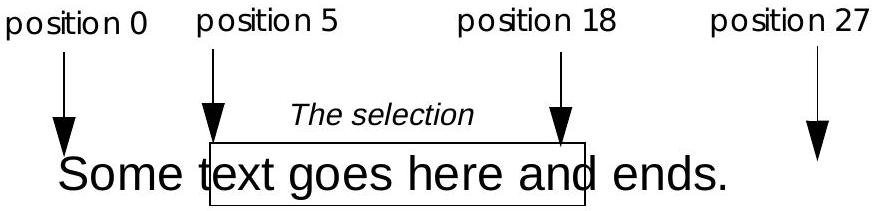
NOTE: All offsets are byte counts. In the case of characters, they are each one byte.
If the selection parameter in pgCut is a null pointer, the current selection in pg is used instead (which is usually want you want).
FUNCTION RESULT: The function result of pgRef is a newly created OpenPaige object containing the copied text and associated text formatting. You can then pass this pg_ref to pgPaste, below.
draw_mode can be the values as described in "Draw Modes":
draw_none, // Do not draw at all
best_way, // Use most efficient method(s)
direct_copy, // Directly to screen, overwrite
direct_or, // Directly to screen, "OR"
direct_xor, // Directly to screen, "XOR"
bits_copy, // Copy offscreen
bits_or, // Copy offscreen in "OR" mode
bits_xor // Copy offscreen in "XOR" modepg_ref returned from pickup is a "real" OpenPaige object, which means you need to eventually dispose of it properly using pgDispose.pg_ref are used to "clone" the resulting pg_ref from a copy or cut regardless of the selection range. For example, if the source pg_ref that gets copied contained a page_area shape with dimensions 10, 10, 580, 800, the resulting pg_ref will have the same pg_area shape. The same is true for vis_area and exclude_area.CAUTION: If there is nothing to copy (no selection range exists), both pgCut and pgCopy will return MEM_NULL.
CAUTION: It is wise never to display the resulting pg_ref unless you first set a default graphics device to target the display. For example, doing a pgCopy then drawing to a "clipboard" window later could result in a crash. This can happen if the original window containing the copied pg_ref has been closed (rendering an invalid window attached to the copied reference). Hence, before drawing to such a "clipboard", use pgSetDefaultDevice. See "Setting a device".
The pgCopy function is identical to pgCut except that no text is deleted, only a pg_ref is returned which is the copy of the specified text and formatting and no draw_mode is provided (because the source pg_ref remains unchanged).
OpenPaige provides excellent error checking for out-of-memory situations with pgCopy. See "Exception Handling".
The pgDelete function is the same as pgCut in every respect except that a "copy" is neither made nor returned. Use this function when you simply want to delete a selection range but not make a copy (such as a "Clear" command from a menu).
(void) pgPaste (pg_ref pg, pg_ref paste_ref, long position, pg_boolean text_only, short draw_mode);The pgPaste function takes paste_ref (typically obtained from pgCut or pgCopy) and inserts all of its text into pg, beginning at text offset position (which is a byte offset). The paste_ref's contents remain unchanged.
The position parameter, however, can be CURRENT_POSITION (value of -1) in which case the paste occurs at the current insertion point in pg. After the paste the insertion point advances the number of characters that were inserted from paste_ref.
If text_only is "TRUE," only the text from paste_ref is inserted — no text formatting is transferred.
draw_mode can be the values as described in "Draw Modes".
draw_none, // Do not draw at all
best_way, // Use most efficient method(s)
direct_copy, // Directly to screen, overwrite
direct_or, // Directly to screen, "OR"
direct_xor, // Directly to screen, "XOR"
bits_copy, // Copy offscreen
bits_or, // Copy offscreen, "OR" mode
bits_xor // Copy offscreen, "XOR" modepg (the target pg_ref), it is deleted before the paste occurs.pg_ref — shapes remain unchanged.pgPaste custom stylesI need to know when a custom style gets inserted into a particular
pg_ref. That is, if a style is duplicated in an undo or clipboard context, I need to know when the style is inserted into the style table for the "real"pg_ref.
There are several ways to do this. Which method you choose depends on when you need to know, i.e. if you need to know the instant it occurs versus knowing somewhere in your app following a pgPaste or pgUndo.
By "instant it occurs" I mean when processing a style with one of the hooks, for instance. If that's what you need, one good way is to use the duplicate function. By mere virtue of getting called at all you know that OpenPaige is adding that style for one reason or another.
If you need to find out if that style exists at any arbitrary time, one way is to use pgFindStyleInfo. This function searches all style change(s) in the text to find the first occurrence of a particular style. One useful feature in pgFindStyleInfo is that you can set up a "mask" to only compare certain specific fields in your style. I assume your custom style will contain some kind of unique value for you to identify it, in which case this function is probably exactly what you want.
Then there is the "hack" method which looks dangerous, but isn't really. This method is to look at the whole style info list directly, which should remain compatible with all future OpenPaige versions and it is even portable between Windows and other platforms! This is done as follows:
paige_rec_ptr pg_rec; // actual struct inside pg_ref
style_info_ptr styles; // will be pointer to styles
long num_styles; // will be number of styles avail
pg_rec = UseMemory(pg); // do this to get paige struct
num_styles = GetMemorySize(pg_rec->t_formats); // number of style_info
styles = UseMemory(pg_rec->t_formats); // points to first style
/* At this point: styles = pointer to first style_info and num_styles contains number of styles. Hence, you can get next style as styles[1], ++styles, etc. To find your particular style, just walk through and look for it. */
// Once you're through, you MUST do:
UnuseMemory(pg_rec->t_formats);
UnuseMemory(pg); text_ref pgCopyText (pg_ref pg, select_pair_ptr selection, short data_type);FUNCTION RESULT: This function returns a memory allocation containing a copy of the text in pg, beginning at the specified offset as follows: if selection is nonnull, it is used to determine the selection range (see "Copying and Deleting" for information about select_pair structure). If selection is a null pointer, the current selection range is used.
NOTE: The memory_ref returned from pgCopyText will have a "record size" set to one byte. In other words, a GetMemorySize() will return the number of bytes copied (which might be different to the number of characters, since OpenPaige can theoretically contain multibyte chars).
The data_type parameter specifies which type of text to copy which can be one of the following:
typedef enum
{
all_data, // Return all data
all_text_chars, // All text that is writing script
all_roman, // All Latin ASCII chars
all_visible_data, // Return all visible data
all_visible_text_chars, // All visible text that is writing script
all_visible_roman // All visible Latin ASCII chars
};If data_type is all_data, every byte in the specified range is copied; if all_text_chars, all single byte text is copied (which excludes only custom characters that aren't really "text"); for all_roman [sic!], only ASCII characters of Latin script are copied (as opposed to some other script such as Chinese or Arabic).
The function result is typed as a text_ref which is a memory allocation created by the OpenPaige Allocation Manager.
NOTE: "Single byte text" in the above sense does not refer to single or double byte scripts such as Roman vs. Kanji. The all_text_chars data type will in fact include double-byte script. The only type excluded in this case is embedded graphics, controls, or some other customized text stream that really isn't text.
See also "Examine Text".
I got my text in a
text_refwithpgcopyText, but there is no 0 at the end!
- Can I simply add a zero at the end to create a zero delimited string?
- How do I know where the end is?
Point one: yes, but you must be careful since the memory_ref is only guaranteed to have allocated the number of bytes in the selection sent to pgCopyText. So if you want to append a zero, you should use AppendMemory, then put in the value.
memory_ref the_text;
the_text = pgCopyText(pg, &the_selection, all_data);
/* put a zero on the end so the parser doesn't walk off the end of the text */
AppendMemory(the_text, sizeof(pg_char), true);
UnuseMemory(the_text);Point two: you can find the size of the text with GetMemorySize(), which will return the number of "records", which, in this case, will be the number of characters. Alternatively, you know the number of characters going into pgCopyText by knowing the selection range(s).
OpenPaige provides an variety of functions to fully support multi-kinds of "undo" for most situations. OpenPaige provides a convenient method of building custom undos which can be incorporated into your own application as well.
The concept of OpenPaige "undo" support is as follows: Before you do anything to an OpenPaige object that you want to be undoable, call pgPrepareUndo if you are about to do a pgCut, pgDelete, pgPaste, or any style, font or paragraph formatting change. The function result can then be given to pgUndo which will cause a reversal of what was performed.
For setting up an undo for pgCut or pgDelete, pass undo_delete for the verb parameter and a null pointer for paste_ref, for setting up an undo for pgPaste, pass undo_paste for the verb and the pg_ref you intend to paste from in paste_ref. For formatting changes (setting different fonts and styles or paragraph formats), pass undo_format for verb and null pointer for paste_ref.
To implement these features you must make the following function call prior to performing something that is undoable:
(undo_ref) pgPrepareUndo (pg_ref pg, short verb, void PG_FAR *insert_ref);FUNCTION RESULT: This function returns a special memory allocation which you can give to pgUndo (below) to perform an Undo.
The verb parameter defines what you are about to perform, which can be one of the following:
typedef enum
{
undo_none, // Null undo ("can't undo")
undo_typing, // Undo key entry except bksp and forward delete
undo_backspace, // Undo backspace key
undo_delete, // Undo clear/cut/delete
undo_fwd_delete, // Undo forward delete
undo_paste, // Undo paste/insert
undo_format, // Undo text style, para format, or font
undo_insert, // Undo some other form of insertion
undo_page_change, // Undo page area change
undo_vis_change, // Undo vis area change
undo_exclude_change, // Undo exclusion area change
undo_doc_info, // Undo setDocInfo change
undo_embed_insert, // Undo embed_ref insertion
undo_app_insert // Undo insert with position parameter
};"About to perform" means that you are about to do something you wish to be undoable later on. This includes performing a deletion, insertion, or text formatting change of any kind.
insert_ref ParameterFor undo_paste, insert_ref must be the pg_ref you intend to paste (the source "scrap"); for undo_insert, insert_ref must be a pointer to the number of bytes to be inserted.
The undo_app_insert verb is identical to undo_insert except you must specify the insert location (undo_insert assumes the current text position). To do so, insert_ref must be a pointer to an array of two long words, the first element should be the text position to be inserted and the second element the insertion size, in bytes.
For undo_typing, undo_backspace and undo_fwd_delete, insert_ref should be the previous undo_ref you received for any pgPrepareUndo — or NULL if none.
NOTE: insert_ref, in this case, is an undo_ref — not a pointer to one — so you must coerce the undo_ref as (void PG_FAR *).
For all other undo preparations, insert_ref should be NULL.
If you are about to insert, say, 100 bytes, you would call pgPrepareUndo as follows:
long length;
length = 100;
pgPrepareUndo(pg, undo_insert, (void PG_FAR *) &length);
/* The following function inserts a key into pg and returns the undo_ref that can be used to perform "Undo typing". The last_undo is the previous undo_ref, or MEM_NULL if none. */
undo_ref insert_width_undo (pg_ref pg, pg_char the_key, undo_ref last_undo)
{
undo_reffunction_result;
if (the_key >= ' ') // if control char
{
if(the_key == FWD_DELETE_CHAR)
function_result = pgPrepareUndo(pg, undo_fwd_delete, (void PG_FAR *) last_undo);
else
function_result = pgPrepareUndo(pg, undo_typing, (void *) undo);
}
else if (the_key == BACKSPACE_CHAR)
function_result = pgPrepareUndo(pg, undo_backspace, (void *) undo);
pgInsert(pg, (pg_char_ptr) &the_key, sizeof(pg_char), CURRENT_POSITION, key_insert_mode, 0, best_way);
return function_result;
}For undo_paste, insert_ref must be the pg_ref you are about to paste (same as before).
For all other undo verbs, insert_ref is not used (so can be NULL).
verbsundo_page_change can be used before changing the page shape, undo_vis_change before changing the visual area, and undo_exclude_change before changing the exclusion area.
The undo_doc_info verb can be given before changing anything in pg_ref's doc_info. For example, you could do “Undo Page Setup” with this undo verb.
The undo_embed_insert verb can be used before inserting an embed_ref (see chapter on Embedded Objects). Note, unlike undo_insert and undo_app_insert, the insert_ref parameter should be NULL for undo_embed_insert.
When you use undo_page_change, OpenPaige will set up an undo (and restore upon redo) both "container" rectangles and the associated refcons. You can therefore perform a full Undo Container Change.
To perform the actual Undo operation, pass an undo_ref to the following:
(undo_ref) pgUndo (pg_ref pg, undo_ref ref, pg_boolean requires_redo, short draw_mode);The ref parameter must be an undo_ref obtained from pgPrepareUndo.
If requires_redo is "TRUE," pgUndo returns a new undo_ref which can be used for a "Redo".
For example, if the undo_ref passed to this function performed an "Undo Cut," and requires_redo is given as TRUE, the function will return a new undo_ref which, if given to pgUndo again, would perform a "Redo Cut." Undo/Redo results can be toggled back and forth this way virtually forever.
draw_mode can be the values described in "Draw Modes":
draw_none, // Do not draw at all
best_way, // Use most efficient method(s)
direct_copy, // Directly to screen, overwrite
direct_or, // Directly to screen, "OR"
direct_xor, // Directly to screen, "XOR"
bits_copy, // Copy offscreen
bits_or, // Copy offscreen, "OR" mode
bits_xor // Copy offscreen, "XOR" modeGenerally, if you want the OpenPaige object to redraw, pass best_way for draw_mode.
pgUndo returns a new undo_ref, which is a completely different allocation to the undo_ref you passed to it. It is your responsibility to dispose all undo_refs.pg at the time — pgUndo will restore whatever selection range(s) existed at the time the undo_ref was created. For example, if the user performs an action for which you created an undo_ref, such as a Paste, and then he selects some other text or clicks at a different location, pgUndo still works correctly, given that the original insertion point for the Paste is recorded in the undo_ref.undo_refsOnce you are through using an undo_ref, dispose it by calling the following function:
(void) pgDisposeUndo (undo_ref ref);The ref parameter must be a valid undo_ref (received from pgPrepareUndo or pgUndo); or, ref can be MEM_NULL (in which case pgDisposeUndo() does nothing).
MEM_NULL is allowed intentionally, so that you can blindly pass your application's last "undo-able" operation that can be set initially to MEM_NULL.undo_ref — see following.If you are implementing single-level undo support (user can only undo the last operation), you would normally need to dispose the "old" undo_ref (the one returned from the previous pgPrepareUndo()) before preparing for the next undo. For undo_typing, undo_fwd_delete, and undo_backspace, you must not dispose the "old" undo_ref — these are the lone exceptions to the "dispose-old-undo" rule.
The reason for this is that you give OpenPaige the "old" undo_ref as the insert_ref parameter; for undo_typing, undo_backspace, and undo_fwd_delete, the undo_ref given in insert_ref is either disposed or returned back to you as the function result.
Never dispose the "previous" undo_ref when preparing for any of these "character" undos (undo_typing, undo_backspace and undo_fwd_delete). In all other cases, it is OK to dispose the previous undo_ref.
short pgUndoType (undo_ref ref);This returns what type of undo_ref will perform.
FUNCTION RESULT: The function returns one of the undo verbs listed above under pgPrepareUndo, or a negative complement of a verb.
If the undo_ref is intended for a redo (returned from pgUndo, the verb will be its negative complement. For example, if pgUndoType() returns undo_paste, a call to pgUndo() would essentially perform a "Redo Paste".
A good use for this function is to set up a menu item for the user to indicate what can be undone.
If you want to record more information about an Undo operation than the undo verbs listed above, use pgSetUndoRefCon, of which an explanation follows.
(void) pgSetUndoRefCon (undo_ref ref, long refCon);
(long) pgGetUndoRefCon (undo_ref ref);These two functions allow you set (or get) a long reference inside an undo_ref.
The ref parameter must be a valid undo_ref; for pgSetUndoRefCon, refCon can be anything. pgGetUndoRefCon returns whatever has been set in ref.
OpenPaige has a low-level hook for which you can use to implement modified undo actions, or you can completely customize an undo regardless of its complexity. See the chapter "Customizing OpenPaige" for more information.
Your application can theoretically provide multiple-level Undo support by simply preparing a "stack" of undo_refs returned from pgPrepareUndo. Given that each undo_ref is independent of the next (i.e. there are no data structures within an undo_ref that depend on other undo_ref s or even pg_refs), an application can keep as many of these around as desired to achieve "Undo of Undo" and "Undo of Undo of Undo," etc.
Supporting a multilevel Undo (being able to undo the last several operations) simply involves "stacking" the undo_refs returned from pgPrepareUndo.
When you set up for "Undo Typing" (be it for a regular insertion, backspace or forward delete), OpenPaige might return the same undo_ref that was given to pgPrepareUndo, and/or it might delete the previous undo_ref passed to the insert_ref parameter. In this case, make sure you check for this situation and handle it.
/* The following code places consecutive undo_refs into an array so multi-level "Undo" can be supported. While we only show stacking a maximum of 16, it can of course be bigger. */
undo_ref stacked_refs[16];
short stack_index = 0; // Begins with "no undos".
/* We call "PrepareUndo" from several places in the program. The verb is the undo_verb to be performed. */
void PrepareUndo(pg_ref pg, short_verb)
{
undo_ref new_undo, previous_undo;
previous_undo = MEM_NULL; // Assume no previous undo.
if (verb == undo_typing || verb == undo_fwd_delete || verb == undo_backspace)
if (stack_index > 0) // There is a previous undo.
if (pgUndoType(stacked_refs[stack_index - 1] == verb))
otherparam = stacked_refs[stack_index - 1];
new_undo = pgPrepareUndo(pg, verb, (void PG_FAR *))
previous_undo;
// Check to see if OpenPaige returned the same undo_ref.
if(!previous_undo || new_undo != previous_undo_
++stack_index;
stacked_refs[stack_index - 1] = new_undo;
}OpenPaige provides a certain degree of automatic support for the external clipboard, regardless of platform.
void pgPutScrap(pg_ref the_scrap, pg_os_type native_format, short scrap_type);This function writes the appropriate data to the external clipboard for other applications to read (including your own application). The data to be written is contained in thescrap; usually, thescrap would have been returned earlier from $p g \operatorname{Copy}($ ) or pgCut().
The scrap_type parameter indicates the preferred format within pg to write to the clipboard. If scrap_type is pg_void_scrap (value of zero), OpenPaige will write whatever format(s) are appropriate, including its own native type.
If scrap_type is non-zero it must be one of pg_native_scrap (the OpenPaige native format), pg_text_scrap (ASCII text), or pg_embed_scrap (the contents of an embed_ref).
For pg_embed_scrap, only embed_mac_pict (for Macintosh) and embed_meta_file (for Windows) are supported, and only the first embed_ref found within the_scrap is written to the clipboard.
The native_format parameter should contain a platform-appropriate identifier for a native OpenPaige format. For the Macintosh platform, pg_os_type is an OSType parameter; for the Windows platform, pg_os_type is a WORD parameter (Win16) or int parameter (Win32). Note that the value you place in native_format depends upon the runtime platform, as follows:
You must first register a new format type by calling RegisterClipboardFormat(), then use that format type for every call to pgPutScrap() and pgGetScrap(). The name of this format type can be arbitrary; however, to remain consistent we recommend the name used by the custom control, "OpenPaige".
OpenClipboard() before calling pgPutScrap(), then call CloseClipboard() after this function has returned. OpenPaige can't open the clipboard for you because it can't assume there is a valid HWND available within its structure.pg_ref is not owned by the clipboard.For Macintosh, a pg_os_type is identical to OSType. The name of this format type can be arbitrary; however, to remain consistent we recommend the name used by the custom control, paig.
For both Macintosh and Windows platform, the clipboard is cleared before any data is written. If it is successful, the data can be read from the clipboard by calling pgGetScrap(), below.
pg_ref pgGetScrap (pg_globals_ptr globals, pg_os_type native_format, embed_callback def_embed_callback);This function checks the external clipboard for a recognizable format and, if found, returns a new pg_ref containing the data; the pg_ref can then be passed to pgPaste. This function will work for both Macintosh and Windows-based applications.
The globals parameter must be a pointer to the OpenPaige globals structure (same structure used for pgNew()).
The native_format parameter should contain the same native format type identifier that was given to pgPutScrap(). For example, if running on a Macintosh, the native_format might be paig. On a Windows machine, native_format would be the value returned from RegisterClipboardFormat().
The def_embed_callback parameter is an optional function pointer to an embed_ref callback function. The purpose of providing this parameter is to initialise any embed_refs read from the clipboard to use your callback function. If def_embed_callback is NULL it will be ignored (and the default callback used by OpenPaige will be placed into any embed_refs read).
IMPORTANT: You must call OpenClipboard() before calling pgGetScrap(), then call CloseClipboard() after you are through processing the data. OpenPaige can't open the clipboard for you because it can't assume there is a valid HWND available within its structure.
If a format is recognized on the clipboard, a new pg_ref is returned containing the clipboard data. If no format(s) are recognized, MEM_NULL is returned.
It is your responsibility to dispose the pg_ref returned from this function.
OpenPaige will check the clipboard for format types it can support in the following priority order:
native_format parameter).CF_TEXT).CF_METAFILEPICT)CF_BITMAP)If none of the above formats are found, pgGetScrap() returns MEM_NULL.
OpenPaige will check the clipboard for format types it can support in the following priority order:
native_format parameter).TEXT).PICT).If none of the above formats are found, pgGetScrap returns MEM_NULL.
pg_boolean pgScrapAvail (pg_os_type native_format);This function returns TRUE if there is a recognizable format in the clipboard. No data is read from the clipboard — only the data availability is returned.
The native_formatshould be the appropriate clipboard format type for the OpenPaige native format (see pgPutScrap() above).
This function is useful for controlling menu items, e.g. disabling "Paste" if nothing is in the clipboard.
IMPORTANT: You should call OpenClipboard() before calling pgScrapAvail(), then call CloseClipboard() after this function has returned.
OpenPaige maintains three separate text formatting runs (series of text formatting changes): styles (bold, italic, super/subscript, etc.), fonts (Helvetica, Times, etc.) and paragraph formats (indentations, tabs, justification, etc.).
Each of these three formats can be changed separately; any portion of text can be a combination of each of these formats. Setting each of those is described in detail in “Advanced Styles". This chapter, Style Basics, describes the easiest, quickest, and simplest way to set the style, font and paragraph format you want.
Unlike a Windows font that defines the whole composite format of text, the term font as used in this chapter generally refers only to a typeface, or typeface name. OpenPaige considers a font to simply be a specific family such as Candara, Consolas, Corbel, etc., while distinguishing other formatting properties such as bold, italic, underline, etc. as the text style.
The simplest way to change the text in a pg_ref to different fonts, style or color is to use the high-level utility functions provided with OpenPaige version 3.0. These utilities provide a "wrapper" around the lower-level OpenPaige functions that change styles, fonts and text colors.
The source code to the wrapper has also been provided for your convenience, so you can alter them as necessary to fit your particular application. Or, you can examine them as reference material as the need occurs to apply more sophisticated stylization to your document.
All the functions listed in this section can be installed by including the source file pgHLevel.c in your project and pgHLevel.h as its header file. These functions can be called from both Macintosh and Windows platforms and should work with all compilers that support standard C conventions.
If your application requires more sophistication than provided in this high-level wrapper, and/or if you cannot use the wrapper for any reason, please see the chapter, “Advanced Styles”.
Most of the functions in this chapter require a selection range, select_pairs and CURRENT_SELECTION.
The selection range defines the range of text that should be changed, or if you pass a null pointer the current selection range (or insertion point) in pg is changed.
typedef struct
{
long begin; // Beginning offset of some text portion
long end // Ending offset of some text portion
}
select_pair
typedef select_pair PG_FAR *select_pair_ptr;The begin field of a select_pair defines the beginning text offset and the end field defines the ending offset. Both offsets are byte offsets, not character offsets. Text offsets in OpenPaige are zero-indexed (i.e., the first offset is zero).
#include "pgHLevel.h"
void pgSetFontByName (pg_ref pg, LPSTR font_name, select_pair_ptr selection_range, pg_boolean redraw);#include "pgHLevel.h"
void pgSetFontByName (pg_ref pg, Str255 font_name, select_pair_ptr selection_range, pg_boolean redraw);This function changes the text in pg to the specified font_name.
If selection_range is a null pointer, the text in pg currently selected is changed (or, if nothing is selected, the font is applied to the next key insertion).
If selection_range is not null, it must point to a select_pair record defining the beginning and ending text offsets to apply the font. (See also "Selection range").
If redraw is TRUE the changed text is redrawn if there was a selected range affected.
Only the font is affected in the composite style of the specified text, i.e. the text will retain its current point size and its other style attributes; only the font family changes.
#include "pgHLevel.h"
pg_boolean pgGetFontByName (pg_ref pg, Str255 font_name);#include "pgHLevel.h"
pg_boolean pgGetFontByName (pg_ref pg, LPSTR font_name);This function returns the font name that is applied to the text currently highlighted in pg (or, if nothing is highlighted, the font that applies to the current insertion point is returned).
The font name is returned in font_name. However, if the text is selected and the text range has more than one font, pgGetFontByName returns FALSE and font_name is not certain.
#include "pgHLevel.h"
void pgSetPointSize (pg_ref pg, short point_size, select_pair_ptr selection_range, pg_boolean redraw);This function changes the text point size to the new size specified.
If selection_range is a null pointer, the text in pg currently highlighted is changed (or, if nothing is highlighted, the point size is applied to the next key insertion).
If selection_range is not null, it must point to a select_pair record defining the beginning and ending text offsets to apply the size. (See also "Selection range").
If redraw is TRUE the changed text is redrawn if there was a selected range affected.
Only the text size is affected in the composite style of the specified text, i.e. the text will retain its current font family and its other style attributes; only the point size changes.
#include "pgHLevel.h"
pg_boolean pgGetPointsize (pg_ref pg, short PG_FAR *point_size);This function returns the point size that is applied to the text currently selected in $p g$ (or, if nothing is selected, the point size that applies to the current insertion point is returned).
The point size is returned in *point_size (which must not be a null pointer). However, if the text is highlighted and the text range has more than one size, pgGetPointsize returns FALSE and *point_size is not certain.
#include "pgHLevel.h"
void pgSetStyleBits (pg_ref pg, long style_bits, long set_which_bits, select_pair_ptr selection_range, pg_boolean_redraw);This function changes the text style(s) to the new style(s) specified. "Styles" refers to text drawing characteristics such as bold, italic, underline, etc.
The style(s) to apply are represented in style_bits, which can be a composite of any of the following values:
#include "pgHLevel.h"
#define X_PLAIN_TEXT 0x00000000
#define X_BOLD_BIT 0x00000001
#define X_ITALIC_BIT 0x00000002
#define X_UNDERLINE_BIT 0x00000004
#define X_OUTLINE_BIT 0x00000008
#define X_SHADOW_BIT 0x00000010
#define X_CONDENSE_BIT 0x00000020
#define X_EXTEND_BIT 0x00000040
#define X_DBL_UNDERLINE_BIT 0x00000080
#define X_WORD_UNDERLINE_BIT 0x00000100
#define X_DOTTED_UNDERLINE_BIT 0x00000200
#define X_HIDDEN_TEXT_BIT 0x00000400
#define X_STRIKEOUT_BIT 0x00000800
#define X_SUPERSCRIPT_BIT 0x00001000
#define X_SUBSCRIPT_BIT 0x00002000
#define X_ROTATION_BIT 0x00004000
#define X_ALL_CAPS_BIT 0x00008000
#define X_ALL_LOWER_BIT 0x00010000
#define X_SMALL_CAPS_BIT 0x00020000
#define X_OVERLINE_BIT 0x00040000
#define X_BOXED_BIT 0x00080000
#define X_RELATIVE_POINT_BIT 0x00100000
#define X_SUPERIMPOSE_BIT 0x00200000
#define X_ALL_STYLES 0xFFFFFFFFThe set_which_bits parameter specifies which of the styles specified in style_bits to actually apply; the value(s) you place in set_which_bits should simply be the bits (as defined above) that you want to change.
The purpose of set_which_bits is to distinguish between a style you choose to force to "off" versus a style you choose to remain unchanged.
For example, suppose you want to change all the selected text to boldface but leave the other styles of the text unchanged. To do so, you would simply pass X_BOLD_BIT in both style_bits and set_which_bits.
However, suppose you want to force the selected text to ONLY bold (forcing all other styles off). In this case, you would pass X_BOLD_BIT in style_bits and 0xFFFFFFFF (or X_ALL_STYLES ) in set_which_bits.
Also note for "plain" text (forcing all styles OFF), you pass X_PLAIN_TEXT for style_bits and X_ALL_STYLES for set_which_bits.
If selection_range is a null pointer, the text in pg currently selected is changed (or, if nothing is selected, the style(s) are applied to the next key insertion).
If selection_range is not null, it must point to a select_pair record defining the beginning and ending text offsets to apply the style(s). (See also "Selection range").
If redraw is TRUE the changed text is redrawn if there was a selected range affected.
Only the specified style attributes will affect the text, i.e. the selected text will retain its font family and point size, and all other style attributes that are not specified in setwhichbits.
The first six style definition bits are identical to QuickDraw's style bits. You might find it convenient to simply pass the QuickDraw style(s) to this function.
#include "pgHLevel.h"
/* The following code sets the text currently selected in pg to bold-italic but leaves all other styles in the text alone. The text gets re-draw with the changes if we had a highlight range.*/
long style_bits = X_BOLD_BIT | X_ITALIC_BIT;
pgSetStyleBits(pg, style_bits, style_bits, NULL, TRUE);
/* The following code sets the text currently selected in pg to bold-italic but does NOT leave the other styles alone (forces text to bold-italic and turns off all other styles). The text gets re-drawn with the changes if we had a highlight range. */
long style_bits = X_BOLD_BIT | X_ITALIC_BIT; pgSetStyleBits(pg, style_bits , X_ALL_STYLES, NULL, TRUE);
// The following code changes all the selected text to "plain"
pgSetStyleBits(pg, X_PLAIN_TEXT, X_ALL_STYLES, NULL, TRUE);#include "pgHLevel.h"
void pgGetStyleBits (pg_ref pg, long PG_FAR *style_bits, long PG_FAR *consistent_bits);This function returns the style(s) that are applied to the text currently highlighted in pg (or, if nothing is highlighted, the style(s) that apply to the current insertion point are returned).
The style(s) are returned in *style_bits (which must not be a null pointer); the value of *style_bits will be a composite of one or more of the style bits as defined in pgSetStyleBits (above).
The *consistent_bits parameter will also get set to the style(s) that remains consistent throughout the selected text; if a style bit in consistent_bits is set to a "1", that corresponding bit value in *style_bits is the same throughout the selected text.
For example, if *style_bits returns with all 0's, yet *consistent_bits is set to all 1's, the selection is purely "plain text" (no styles are set). However, if *style_bits returned all 0's but *consistent_bits was not all 1's, the text is not "plain text," rather the bits that are 0 in *consistent_bits reveal that style is not the same throughout the whole selection.
NOTE: The consistent_styles parameter must not be a null pointer.
#include "pgHLevel.h"
void pgSetTextColor (pg_ref pg, COLORREF color, select_pair_ptr selection_range, pg_boolean redraw);
void pgSetBKColor (pg_ref pg, COLORREF color, select_pair_ptr selection_range, pg_boolean redraw);#include "pgHLevel.h"
void pgSetTextColor (pg_ref pg, RGBColor *color, select_pair_ptr selection_range, pg_boolean redraw);
void pgSetTextBKColor (pg_ref pg, RGBColor *color, select_pair_ptr selection_range, pg_boolean redraw);pgSetTextColor changes the foreground color of text in pg to the specified color; pgSetTextBKColor changes the background color of text in pg to the specified color.
If selection_range is a null pointer, the text in pg currently highlighted is changed (or, if nothing is highlighted, the color is applied to the next key insertion).
If selection_range is not null, it must point to a select_pair record defining the beginning and ending text offsets to apply the color. (See also "Selection range").
If redraw is TRUE the changed text is redrawn if there was a selected range affected.
Only the text color is affected in the specified text, i.e. the text will retain its current font family, point size and its other style attributes.
#include "pgHLevel.h"
pg_boolean pgGetTextColor (pg_ref pg, COLORREF PG_FAR *color);
pg_boolean pgGetTextBKColor (pg_ref pg, COLORREF PG_FAR *color);#include "pgHLevel.h"
pg_boolean pgGetTextColor (pg_ref pg, RGBColor *color);
pg_boolean pgGetTextBKColor (pg_ref pg, RGBColor *color);pgGetTextColor returns the foreground color that is applied to the text currently highlighted in pg (or, if nothing is highlighted, the color that applies to the current insertion point is returned); pgGetTextBKColor returns the text background color.
The color is returned in *color (which must not be a null pointer). However, if the text is highlighted and the text range has more than one size, the function returns FALSE and *color is not certain.
/* The following code shows an example of setting a new point size, a new font and new style(s) taken from a "LOGFONT" structure. All new text characteristics are applied to the text currently highlighted (or they are applied to the NEXT pgInsert if no text is highlighted). Carefully note that we do not "redraw" the text until the last function is called, otherwise we would keep "flashing" the refresh of the text. */
#include "Paige. h"
#include "pgUtils.h"
#include "pgHLevel.h"
LOGFONT log_font; // got this from "ChooseFont" or whatever
long style_bits, set_bits; // used for pgSetStyleBits
// Set font (by name)
pg SetFontByName(pg_log_font.lfFaceName, NULL, FALSE);
// Set point size
pg SetPointSize(pg, pgAbsoluteValue((long)log_font.lfHeight, NULL, FALSE);
// Set style attributes:
style_bits = set_bits = 0;
if (log_font.lfWeight == FW_BOLD)
style_bits |= X_BOLD_BIT;
if (log_font.lfItalic)
style_bits |= X_ITALIC_BIT;
if (log_font.lfUnderline)
style_bits |= X_UNDERLINE_BIT;
if (log_font.lfStrikeOut)
style_bits |= X_STRIKEOUT_BIT;
// Before setting the styles, check if we actually have "plain text":
if (style_bits == X_PLAIN_TEXT)
set_bits = X_ALL_STYLES;
else
set_bits = style_bits;
// Note, this time we pass "TRUE" for redraw because we are done:
pgSetStyleBits(pg, style_bits, set_bits, NULL, TRUE);#include "pgHLevel.h"
/* The following code assumes a "Font" menu (which lists all available fonts), a "Style" menu (containing Plain, Bold, etc.) and a "Point" menu (with 9, 12, 18 and 24 point values). Each example assumes its respective menu has been selected by user and "menu_item" is the item selected. */
/* For font menu: */
Str255 font;
GetItem(FontMenu, menu_item, font);
pgSetFontByName(pg, font, NULL, TRUE);
/* For style menu: */
long style_bits, set_bits;
switch (menu_item)
{
case PLAIN_ITEM:
style_bits = X_PLAIN_TEXT;
set_bits = X_ALL_STYLES;
break;
case BOLD_ITEM:
style_bits = set_bits = X_BOLD_BIT;
break;
case ITALIC_ITEM:
style_bits = set_bits = X_ITALIC_BIT;
break;
case UNDERLINE_ITEM:
style_bits = set_bits = X_UNDERLINE_BIT;
break;
case OUTLINE_ITEM:
style_bits = set_bits = X_OUTLINE_BIT;
break;
case SHADOW_ITEM:
style_bits = set_bits = X_SHADOW_BIT;
break;
}
pgSetStyleBits(pg, style_bits, set_bits, NULL, TRUE);
// Setting point size
short pointsize;
switch (menu_item)
{
case PT9_ITEM:
pointsize = 9;
break;
case PT12_ITEM:
pointsize = 12;
break;
case PT18_ITEM:
pointsize = 18;
break;
case PT24_ITEM:
pointsize = 24;
break;Changing the defaults of the pg_ref is done just after pgInit. Changing the defaults is shown in “A Different Default Font, Style, Paragraph”.
Changing the paragraph format applied to text range(s) requires a separate function call since paragraph formats are maintained separate from text styles and fonts.
To set one or more paragraphs to a different format, call the following:
(void) pgSetParInfo (pg_ref pg, select_pair_ptr selection, par_info_ptr info, par_info_ptr mask, short draw_mode);This function is almost identical to pgSetStyleInfo or pgSetFontInfo except a par_info record is used for info and mask.
The other difference is that pgSetParInfo will always apply to at least one paragraph: even if the selection "range" is a single insertion point, the whole paragraph that contains the insertion point is affected.
The selection and draw_mode parameters are functionally identical to the same parameters in pgSetStyleInfo (see "Changing Styles" and "Draw Modes"), except whole paragraphs are changed (even if you specify text offsets that do not fall on paragraph boundaries). (See also "Selection range" and "All About Selection”).
For detailed information on par_info records—and what fields you should set up—see "par_info".
If you want to set or change tabs, it is more efficient (and less code) to use the functions in the chapter "Tabs & Indents".
(long) pgGetParInfo (pg_ref pg, select_pair_ptr selection, pg_boolean set_any_match, par_info_ptrinfo, par_info_ptr mask);This function returns paragraph information for a specific range of text.
If selection is a null pointer, the information that is returned applies to the current selection range in pg (or the current insertion point); if selection is non-null, pointing to select_pair record, information is returned that applies to that selection range (see "Copying and Deleting" for information about select_pair pointer under pgGetStyleInfo).
Both info and mask must both point to par_info records; neither can be a null pointer. When the function returns, both info and mask will be filled with information you can examine to determine what style(s), paragraph format(s), or font(s) exist throughout the selected text, and/or which do not.
If set_any_mask was FALSE, all the fields in mask that are set to nonzero indicate that the corresponding field value in info is the same throughout the selected text; all the fields in mask that are set to zero indicate that the corresponding field value in info is not the same throughout the selected text.
For example, suppose after calling pgGetParInfo, mask.spacing has a nonzero value. That means that whatever value has been set in info.spacing is the same for every paragraph in the selected text. Hence, if info.spacing is 12, then every character is spaced the same.
On the other hand, suppose after calling pgGetParInfo, mask.spacing is set to zero. That means that some of the characters in the selected text match the spacing in info and some do not. In this case, whatever value happens to be in info.spacing is not certain.
Essentially, any nonzero in mask is saying, "Whatever is in info for this field is applied to every character in the text," and any zero in mask is saying, "Whatever is in info for this field does not matter because it is not the same for every character in the text."
You want to pass FALSE for set_any_mask to find out what paragraph formats apply to the entire selection (or not).
TABLE #3: POSSIBLE RESULTS WHEN SET_ANY_MASK IS SET TO FALSE
| info | mask | results |
|---|---|---|
| 12 | -1 | All paragraphs have spacing of 12 |
| 12 | 0 | Some paragraphs have spacing of 12 |
Setting set_any_match to TRUE is used to determine if only a part of the text matches a given paragraph format. This is described in "Obtaining Current Text Format(s)". The par_info structure is described in "par_info".
One of the elements of a paragraph formats is a list of tab stops. Although you could set tabs (or change tabs) using pgSetParInfo, some additional functions have been provided exclusively for tabs to help save on coding:
void pgSetTab (pg_ref pg, select_pair_ptr selection, tab_stop_ptr tab_ptr, short draw_mode);This function sets a new tab that applies to the specified selection.
The selection parameter is used in the same way as other functions use a select_pair parameter: if it is a null pointer, the current selection in pg is used, otherwise the selection is taken from the parameter (for information about pgSetParInfo regarding select_pair records, see "Selection range").
The draw_mode is also identical to all other functions that accept a draw_mode parameter. draw_mode can be any of the values described in "Draw Modes":
draw_none, // Do not draw at all
best_way, // Use most efficient method(s)
direct_copy, // Directly to screen, overwrite
direct_or, // Directly to screen, "OR"
direct_xor, // Directly to screen, "XOR"
bits_copy, // Copy offscreen
bits_or, // Copy offscreen, "OR" mode
bits_xor // Copy offscreen, "XOR" modeThe tab_ptr parameter is a pointer to the following record (tab must not be a null pointer):
typedef struct
{
long tab_type; // Type of tab
long position; // Tab position
long leader; // Tab leader (or null)
long ref_con; // Can be used for anything
}The tab_type field can be one of the following:
typedef enum
{
no_tab, // none (used to delete)
left_tab, // left tab
center_tab, // centre tab
right_tab, // right tab
decimal_tab // tab on decimal point
}The position field in a tab_stop defines the tab's position, in pixels. However, a tab's pixel position is relative to either the left edge of pg's page_area, or to the left edge of the window (see "Tab Base").
If leader is nonzero, the tab is drawn with that value as a "leader" character. OpenPaige assumes that the character has simply been coerced to a numeric value, which will therefore imply whether the leader character is a single ASCII byte (leader < 256), or a double byte (leader > 256).
For example, if the leader is a single ASCII byte for a "." (hexadecimal 2E), the value placed in leader should be 0x0000002E. If leader is a double-byte character, such as the Kanji with hexadecimal value 802E, then the leader value should be set to 0x0000802E, etc.
my_tab.leader = '-';A leader is the character placed before a tab, like this
01234 5 6789
ABC -[TAB]DEFGThe ref_con field can be used for anything.
You can delete a tab by calling pgSetTab with a tab record of type no_tab where the position field set to the exact position of the existing tab you wish to delete.
If you want to change a tab's position (location relative to the tab base), you must delete the tab and add a new one (see previous, "Deleting a Tab").
If you want to change anything else (such as the tab type or leader), simply call pgSetTab with a tab record whose position is identical to the one you wish to change.
I am displaying information in Paige with each block of info occupying 2 lines of text. I would like to have tab stops set differently for the first and second line.
It depends on what you mean by "line."
If each line ends with a CR (carriage return), OpenPaige considers each one a "paragraph" and thus you can simply change the paragraph formatting to be different for each line.
However, if both of your lines are one continuous string of text that just word-wraps into two lines, it is virtually impossible to apply two different sets of tab stops.
This is because tabs are, by definition, a paragraph format and a paragraph is simply text that ends with a CR, no matter how many lines it might have.
I will assume you have CR-terminated lines ("paragraphs"). To apply different tab stops to the second line, you need to simply use the tab setting function(s) as given in the manual. of course you need to know at least one of the text positions in the line you need to change (for example, you need to know that line number 2 starts at the 60th character, or the $72 \mathrm{nd}$ character, etc.); you also need to insert the text line first before you can apply the tab-stop changes (unlike text styles, paragraph styles require that you have a "paragraph" for which to apply the style change).
This provides a way to look at all the tabs within a section of text:
(void) pgGetTabList (pg_ref pg, select_pair_ptr selection, tab_ref tabs, memory_ref tab_mask, long PG_FAR *screen_offset);The selection parameter operates in the same way it does for pgGetParInfo (see "Obtaining Current Text Format(s)" for information about pgGetStyleInfo and pgGetParInfo).
The tabs and tab_mask parameters for pgGetTabList are memory allocations which you must create before calling this function. When the function returns, tabs will be set to contain an array of tab_stop records that apply to the selection range and tab_mask will be set to contain an array of longs containing non-zeros for every tab that is consistent (the same) throughout the selection.
For example, supposing that the specified selection contained 3 tabs, when pgGetTabList returns, tabs would contain all three tab_stop records and tab_mask would contain 3 long words (each corresponding to the tab in tabs). If the corresponding long word in tab_mask is zero, that tab is inconsistent (not the same) and/or does not exist throughout the entire selection range.
The tab_mask, however, can be a MEM_NULL if you don't require a "consistency report." The tabs parameter, however, must be a valid memory_ref.
The screen_offset parameter should either be a pointer to a long or a null pointer. When the function returns, the variable pointed to by screen_offset will get set to the tab base value (the position, in pixels, against which tabs are measured—see "Tab Base"). If screen_offset is a null pointer, it is ignored.
tab_mask, and how to access their contents, see "The Allocation Mgr".sizeof(tab_stop) record sizes. Hence, the result of GetMemorySize(tabs) will return the number of tab_stop records. Similarly, the tab_mask is forced to a record size of sizeof(long), so GetMemorySize(tab_mask) will return the same number.pgGetTabList will set your tabs and tab_mask allocation to a size of zero.(void) pgSetTabList (pg_ref pg, select_pair_ptr selection, tab_ref tabs, memory_ref tab_mask, short draw_mode);The above function provides a way to apply multiple tabs all at once to a specified selection.
The selection parameter operates the same as all functions that accept a select_pair.
draw_mode can be the values as described in "Draw Modes":
draw_none, // Do not draw at all
best_way, // Use most efficient method(s)
direct_copy, // Directly to screen, overwrite
direct_or, // Directly to screen, "OR"
direct_xor, // Directly to screen, "XOR"
bits_copy, // Copy offscreen
bits_or, // Copy offscreen, "OR" mode
bits_xor // Copy offscreen, "XOR" modeThe tabs and tab_mask parameters must be memory allocations that you create. The tabs allocation must contain one or more tab stop records; the tab_mask allocation must have an identical number of long words, each long corresponding to the tab
element in tabs. For every entry in tab_mask that is nonzero, that corresponding tab is applied to the selection range; for every tab_mask entry that is zero, that tab is ignored.
For example, if you set up the tabs allocation to contain 3 tab_stop records, and the tabs_mask had three longs of 1, 0, 1, then the first and third tab would be applied to the selection range; the second tab would not be applied.
However, tab_mask can be MEM_NULL if you simply want to set all tabs unconditionally.
tabs and tab_mask, and how to access their contents, see "The Allocation Mgr".tab_stops applied to one paragraph is 32.tab_stop does get replaced if a new tab contains the same exact position.Tab positions (the pixel positions specified in the position field of a tab_stop record) are considered relative to some other position and not absolute. OpenPaige supports three "tab base" values defining the relative position for which to place tabs. If the base value is positive or zero, OpenPaige uses that value as the tab base. If the base value is negative, the tab base implies one of the following:
#define TAB_BOUNDS_RELATIVE -1 // relative to page_area bounds
#define TAB_WRAP_RELATIVE -2 // relative to current line wrap edgeThe difference between TAB_BOUNDS_RELATIVE and TAB_WRAP_RELATIVE depends on what kind of wrap shape (page_area) that exists in the OpenPaige object. TAB_BOUNDS_RELATIVE means tabs are always relative to the entire bounding area (enclosing rectangle) of the page_area, regardless of the shape, while TAB_WRAP_RELATIVE measures tabs against the leftmost edge of the specific portion of the text line for which the tab is intended.
(void) pgSetTabBase (pg_ref pg, long tab_base);
(long) pgGetTabBase (pg_ref pg);To set (or change) the tab base, call pgSetTabBase and provide the base value in tab_base, which can be a positive number or zero (in which case, tabs are relative to that pixel position), or a negative number (either TAB_BASE_RELATIVE or TAB_BOUNDS_RELATIVE).
To get the current tab base, call pgGetTabBase and the base currently used by pg will be the function result.
NOTE: The default tab base in a new pg_ref is zero (tabs are relative to pixel position 0).
The four illustrations to follow show examples of how tab positions are measured against the tab base value (the tab base value is stored in pg_ref and can be changed with the functions shown above).
Figure 4 ("TAB BASE = 0") shows a tab measurement with a tab base of zero, while Figure 5 ("TAB BASE = 16") shows a tab base of 16, in which case all tabs are relative to 16 pixels from the left of the window. In both cases, the window's left origin is assumed to be at coördinates (0, 0).
Figures 6 ("TAB BASE = TAB_BOUNDS_RELATIVE") and 7 ("TAB BASE = TAB_WRAP_RELATIVE") both measure tabs against the left side of page_area, except that, where a line of text exists, TAB_WRAP_RELATIVE is measured against the edge of page_area. If page_area is a single rectangle, both of the latter two tab base modes are identical.
The following are some illustrations of different tab base values:
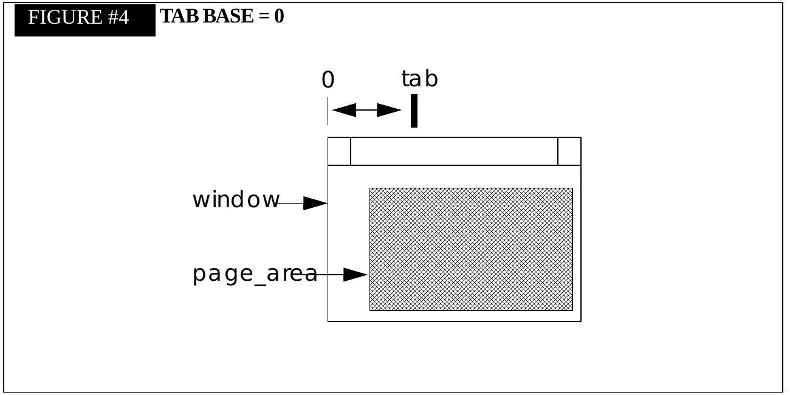
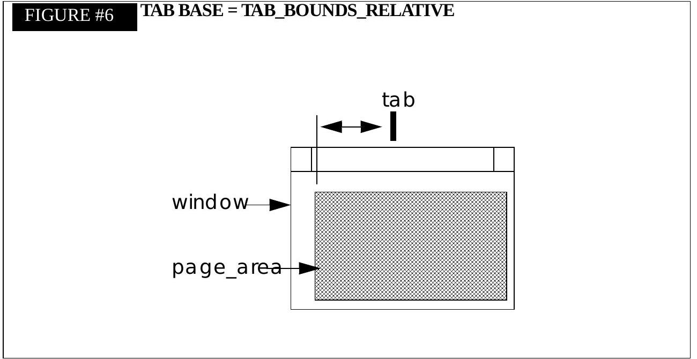
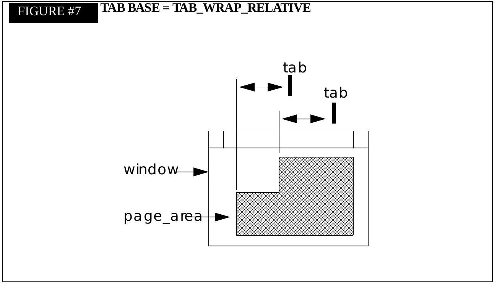
One of the elements of a paragraph format is a set of paragraph indentations (left, right, and first-line indents). Although you could set these using pgSetParInfo, some additional functions have been provided exclusively for indents to help save on coding:
void pgSetIndents (pg_ref pg, select_pair_ptr selection, pg_indents_ptr indents, pg_indents_ptr mask, short draw_mode);The function above changes the indentations for the text range specified.
The selection parameter operates in the same way it does for pgGetParInfo (see "Selection range" for information about selection ranges and "Changing Styles" about pgSetStyleInfo and pgSetParInfo).
draw_mode can be the values as described in "Draw Modes" on page 2-30:
typedef enum
{
draw_none, // Do not draw at all
best_way, // Use most efficient method(s)
direct_copy, // Directly to screen, overwrite
direct_or, // Directly to screen, "OR"
direct_xor, // Directly to screen, "XOR"
bits_copy, // Copy offscreen
bits_or, // Copy offscreen in "OR" mode
bits_xor, // Copy offscreen in "XOR" mode
bits_emulate_copy // Copy "fake" offscreen
bits_emulate_or // "Fake" offscreen in "OR" mode
bits_emulate_xor // "Fake" offscreen in "XOR" mode
};The indents and mask parameter must point to the following structure (neither pointer can be null):
typedef struct
{
long left_indent; // Left margin (indent)
long right_indent; // Right margin (indent)
long first_indent; // First-line indent
}
pg_indents, PG_FAR *pg_indents_ptr;The mask parameter should contain nonzero fields for every indent you wish to change in indents.
NOTE: "nonzero" means that you should fill the field with -1 (so all bits are set to ones).
Indentations are pixel positions relative to a text line's maximum left and maximum right, as follows: the left_indent is the distance from the leftmost edge of a line (which will be the page_area's left edge for that line); the right indent is the distance from the rightmost edge (which will be the page_area's right edge). Note that this is a positive number, not a negative inset. The first_line_indent is relative to the left_indent. Note that only the first_line_indent should ever be negative (in which case the first line of the paragraph hangs to the left of the left indent).
When indents are changed, they apply to whole paragraphs.
To obtain the current indent settings of a selection range, call the following:
(void) pgGetIndents (pg_ref pg, select_pair_ptr selection, pg_indents_ptr indents, pg_indents_ptr_mask, long PG_FAR *left_screen_offset, long PG_FAR *right_screen_offset);The selection parameter operates in the same way it does for pgGetParInfo (see “Obtaining Current Text Format(s)" for information about pgGetStyleInfo and pgGetParInfo).
The indents and mask parameters should point to a pg_indents record (described above); neither parameter can be a null pointer.
FUNCTION RESULT: When this function returns, indents will be set to the indentation values found in the selection range, and mask will have every field that is consistent (the same) throughout the range to nonzero.
If left_screen_offset and right_screen_offset are non-null, pgGetIndents will set the variables to which they point to the relative left position and right position, respectively, against which the indents are measured. The usual reason you will need to have this information is to draw a "ruler" showing indents, in which case you will need to know the relative edges to draw each indentation. This is particularly important if your page_area is non-rectangular (because the relative edges can change from line to line).
NOTE: The left_screen_offset and right_screen_offset values will include the scrolled position of the OpenPaige object, if any (see chapter 11, "All About Scrolling").
An OpenPaige object's text can be selected either by the user or directly by your application.
Selection by the user is accomplished with pgDragSelect; this has already been covered in detail (see "Blinking Carets & Mouse Selections" with regards to pgDragSelect).
Additional support functions are provided, however, to set selections directly and/or to obtain both simple selections (insertion points or a selection pair of offsets) as well as complex selections (discontinuous selections).
A "simple" selection is either a single insertion point or a pair of text offsets which implies a single range. This includes vertical selections that contain only two points (topleft and bottom-right text positions). To set a simple selection, call the following:
(void) pgSetSelection (pg_ref pg, long begin_sel, long end_sel, short modifiers, pg_boolean show_hilite);The selection range in pg will be set to begin_sel to end_sel, which are byte offsets; the lowest offset is zero and the highest offset is pgTextSize(pg). If begin_sel is the same as end_sel, a single insertion is implied.
The modifiers parameter is identical to the modifiers passed to pgDragSelect (see “Blinking Carets & Mouse Selections" for a list of bits you can pass for modifiers). This parameter controls how the text is selected, i.e., extended selection, vertical selection, word selection, etc.
If should_draw is TRUE, a new highlight region is computed and drawn. If should_draw is FALSE, nothing on the screen changes (but pg will internally change its selection).
NOTE: If you want to select all text, pass an arbitrary-but-huge number for end_sel. OpenPaige will adjust large numbers to be equal to the current text size.
To obtain the current selection (assuming it is a simple selection), call the following:
(void) pgGetSelection (pg_ref pg, long PG_FAR *begin_sel, long PG_FAR *end_sel);The current selection range is returned in *begin_sel and *end_sel. Either parameter can be a null pointer if you don't want the result.
If the selection range is discontinuous, you will receive the first selection pair.
NOTE: pgSetSelection will not affect the style of text. It merely highlights the text and gets the internal range within OpenPaige so that other functions can operate thereon.
A discontinuous selection can be accomplished with pgDragSelect and setting the appropriate bit in the modifiers parameter (in which case, every new verb of mouse_down will start a new selection pair). You can also accomplish this from your app with multiple pgSetSelection calls and the appropriate bit set in modifiers.
To set a discontinuous selection from your app all at once, however, you can use the following:
(void) pgSetSelectionList (pg_ref pg, memory_ref select_list, long extra_offset, pg_boolean show_hilight);The select_list parameter must be a memory allocation containing one or more xselect_pair records (see "Selection range" for information about select_pair).
The offset_extra parameter is an amount to add to each selection pair within select_list; if you want to apply the select_list as-is, pass zero for extra_offset.
If should_draw is TRUE, the new selection is drawn.
See "The Allocation Mgr" regarding memory allocations.
To obtain the current discontinuous selection, call the following:
(memory_ref) pgGetSelectionList (pg_ref pg, pg_boolean for_paragraph);FUNCTION RESULT: This function returns a newly created memory allocation containing one or more select_pair records which represent the entire selection in pg.
If for_paragraph is TRUE, the selection pairs will be paragraph-aligned; otherwise, they will be character-aligned (if you want to know what paragraphs fall in the selection range(s), the distinction must be made).
CAUTION: If there is no selection range, e.g. only a caret, and for_paragraph is FALSE, this function will return MEM_NULL (zero).
You will know how many select_pair records are contained in the function result by calling GetMemorySize() on the function result—see "The Allocation Mgr".
NOTE: It is your responsibility to dispose the memory allocation returned from this function.
(void) pgExtendSelection (pg_ref pg, long amount_ext, short modifiers, pg_boolean show_hilite);FUNCTION RESULT: The above function extends the current selection by amount_ext; the new extension follows the attributes in modifiers if appropriate (for example, the selection could be extended by whole words or paragraphs).
Negative values in amount_ext extend to the left (extend the beginning selection backwards); positive numbers extend to the right (extend the ending selection forwards).
The modifiers can generally be a combination of:
#define EXTEND_MOD_BIT 0x0001 // Extend the selection
#define WORD_MOD_BIT 0x0002 // Select whole words only
#define PAR_MOD_BIT 0x0004 // Select whole paragraphs only
#define LINE_MOD_BIT 0x0008 // Select whole lines only
#define DIS_MOD_BIT 0x0020 // Enable discontiguous selection
#define STYLE_MOD_BIT 0x0040 // Select whole style range
#define WORD_CTL_MOD_BIT 0x0080 // Select "words" delimited by control chars
#define NO_HALF_CHARS_BIT 0x0100 // Click does not go left/right on half-charsThese are explained in the section "Modifiers". Vertical selection cannot be extended using the modifiers. Using that modifier in combination with the others will cause unpredictable results.
If show_hilite is TRUE, the new highlight is drawn; if FALSE, the appearance does not change.
NOTE: If the current selection is discontinuous, only the last (ending) selection pair is affected by this function.
NOTE: This code does not handle shift-clicks and option-clicks in the same way as the demo. The point of this code is that you can change the key combinations for your own uses. Consult the demo for other ways of handling this.
#include "Paige.h"
#define LEFT_ARROW 0x1C
#define RIGHT_ARROW 0x1D
#define UP_ARROW 0x1E
#define DOWN_ARROW 0x1F
#define BACKSPACE_CHAR 0x08
#define RETURN_CHAR 0x0D
#define ENTER_CHAR 0x03
#define TAB_CHAR 0x09
#define LF_CHAR 0x0A
#define HOME_KEY 0x01
#define END_KEY 0x04
static int scroll_to_cursor(pg_ref my_pg);
static int key_doc_proc(EventRecord *event);
static int is_an_arrow(char key);
extern pg_globals paige_rsrv;
extern undo_ref last_undol
// This is the keydown proc
static int key_doc_proc(pg_ref my_pg, EventRecord *event)
{
char the_key;
short modifiers;
pg_ref my_pg;
the_key = event -> message & charCodeMask;
}Next we parse the event record. We have the record before going into pgInsert and can change the keys around or do other things before we send the key into the pg_ref. In this case, we intercept the HOME_KEY and the END_KEY and scroll the pg_ref to the top and bottom:
if (the_key == HOME_KEY)
{
pgScroll(my_pg, scroll_home, scroll_home, best_way);
UpdateScrollBarValues(my_pg);
}
else
if (the_key == END_KEY)
{
pgScroll(my_pg, scroll_none, scroll_end, best_way);
UpdateScrollBarValues(my_pg);
}
else
{
ObscureCursor();
}Then we check to see if they are characters that OpenPaige would normally handle and if so, we insert them into the pg_ref. When pgInsert contains the key_insert_mode or key_buffer_mode in the insert_mode parameter, it responds as we would expect when arrow keys are entered, i.e., by moving the insertion point, by handling backspace, by deleting previous characters, etc.
We don't need to use pgExtendSelection.
OpenPaige automatically handles extending the selection by holding down the shift key while using arrow keys if the EXTEND_MOD_BIT is set during pgInsert. key_buffer_mode will keep calling the events as long as OpenPaige is receiving keystrokes, making keyboard text insertion very fast. OpenPaige won't cycle through the event loop until the keystrokes are paused.
// Here are the modifiers changing the selection
modifiers = 0;
if (event -> modifiers & shiftKey)
modifiers |= EXTEND_MOD_BIT;
if (event -> modifiers & optionKey)
modifiers |= WORD_MOD_BIT;
if (the_key == ENTER_CHAR)
{
event -> message = LF_CHAR;
the_key = LF_CHAR;
}
if (the_key >= ' ' || the_key < 0 || the_key == TAB_CHAR || the_key == RETURN_CHAR || the_key == LF_CHAR || the_key == BACKSPACE_CHAR || is_an_arrow(the_key))
{
short verb_for_undo;
DisposeUndo(my_pg, last_undo);
if (the_char == paige_rsrv.bs_char)
verb_for_undo = undo_backspace;
else
verb_for_undo = undo_typing;
last_undo = pgPrepareUndo(my_pg, verb_for_undo, (void PG_FAR*) last_undo);
pgInsert(my_pg, (pg_char_ptr &the_key, sizeof(pg_char), CURRENT_POSITION, key_insert_mode, 0, best_way);
if (the_key == BACKSPACE_CHAR)
pgAdjustScrollMax(my_pg, best_way);
scroll_to_cursor(my_pg);
}
return FALSE; // to be returned(pg_short_t) pgNumSelections (pg_ref pg);This returns the number of selection pairs in pg. A result of zero implies a single insertion point; a result of one implies a simple selection, and likewise for higher numbers.
(pg_boolean) pgCaretPosition (pg_ref pg, long offset, rectangle_ptr caret_rect);FUNCTION RESULT: This returns a rectangle in caret_rect representing the "caret" corresponding to offset. If offset equals CURRENT_POSITION (value of 1), the current insertion point is used. If the current selection in pg is in fact a single insertion, the function returns TRUE; if it is not, caret_rect gets set to the top-left edge of the selection and the function returns FALSE.
NOTE: If you specify some other position besides CURRENT_POSITION, the function will always return TRUE because you have explicitly implied a single insertion point.
(void) pgSetCursorState (pg_ref pg, short cursor_state); (short) pgGetCursorState (pg_ref pg);These two functions let you set the cursor (caret) to a specified state or obtain what state the caret is in.
typedef enum
{
dont_draw_cursor, // Do nothing
toggle_cursor, // Toggle cursor based on timer
show_cursor, // Show cursor
hide_cursor, // Hide cursor
deactivate_cursor, // Cursor is no longer active
update_cursor, // Redraw cursor per current state
restore_cursor, // Turn cursor back on (chiefly Windows usage)
}NOTE: Except for very unusual applications, you should generally only use this function with force_cursor_off and force_cursor_on.
To obtain the current cursor state, call pgGetCursorState, which will return either TRUE (cursor is currently ON) or FALSE (cursor is currently OFF).
See also "Activate / Deactivate".
NOTE: The function result of pgGetCursorState has differing usages in OpenPaige for Windows and for Macintosh. For Windows, the result implies whether or not the System caret is actively blinking within the pg_ref. For Macintosh, TRUE/FALSE result implies whether or not the caret is visible at that instant while it is toggling during pgIdle().
void pgSetCaretPosition (pg_ref pg, pg_short_t position_verb, pg_boolean show_caret);This function should be used to change the location of the caret (insert position); for example, pgSetCaretPosition is useful for handling arrow keys.
The position_verb indicates the action to be taken. The low byte of this parameter should be one of the following values:
enum
{
home_caret,
doc_bottom_caret,
begin_line_caret,
end_line_caret,
next_word_caret,
previous_word_caret
}The high byte of position_verb can modify the meaning of the values shown above; the high byte should either be equal to zero or to EXTEND_CARET_FLAG.
The following is a description for each value in position_verb:
home_caret — If EXTEND_CARET_FLAG is set, the text is selected from the beginning of the document to the current position; if EXTEND_CARET_FLAG is clear, the caret moves to the beginning of the document.
doc_bottom_caret — If EXTEND_CARET_FLAG is set, the text is selected from the current position to the end of the document; if EXTEND_CARET_FLAG is clear the caret advances to the end of the document.
begin_line_caret — If EXTEND_CARET_FLAG is set, the text is selected from the current position to the beginning of the current line; if EXTEND_CARET_FLAG is clear the caret moves to the beginning of the line.
end_line_caret — If EXTEND_CARET_FLAG is set, the text is selected from the current position to the end of the current line; if EXTEND_CARET_FLAG is clear the caret moves to the end of the line.
next_word_caret — If EXTEND_CARET_FLAG is set, the text is selected from the current position to the beginning of the next word; if EXTEND_CARET_FLAG is clear the caret moves to the beginning of the next word.
previous_word_caret — If EXTEND_CARET_FLAG is set, the text is selected from the current position to the beginning of the previous word; if EXTEND_CARET_FLAG is clear the caret moves to the beginning of the previous word.
If show_caret is TRUE then the caret is redrawn in its new location; otherwise, the caret does not visibly change.
It is possible to create a selection by specifying a shape. This next function returns a list of select_pairs when given a shape.
(void) pgShapeToSelections (pg_ref pg, shape_ref the_shape, memory_ref selections);FUNCTION RESULT: This function will place a list of selection pairs in selections that contain all the text that intersects the_shape. What gets put into selections is an array of select_pair records, similar to what is returned from pgGetSelectionList.
The memory_ref passed to selections must be a valid memory allocation (which you must create).
It is also possible to determine the selection shape.
(void) pgSelectToShape (pg_ref pg, memory_ref select_shape, pg_boolean show_hilite);This function sets the selection range(s) in pg to all characters that intersect the specified shape.
For example, if the select_shape was one large rectangle expanding across the entire document, then every character would be selected; if the shape were smaller than the document, then only the characters that fit within that shape—whether wholly or partially—would be selected.
If show_hilite is TRUE, the new selection region is drawn.
For information about shapes and individual characters and insertion point, see "Text and Selection Positions". For information about highlighting see "Activate / Deactivate".
This function can be used to draw the selection area around text when it is deactivated.
void Do_Activate(Boolean Do_An_Activate)
{
pg_ref my_pg;
if (!(my_pg = Get_pgref_from_window(WPtr_Untitled1))) return;
if(Do_An_Activate // Handle the activate
{
// Update the scrollbar values
// -----------------------------
// Turn on the selection hilites
pgSetHiliteStates(my_pg, activate_verb, no_change_verb, TRUE);
}
else // Handle the deactivate
{
// Turn off the scroll bars here
// -----------------------------
// Turn off the selection hilites
pgSetHiliteStates(my_pg, deactivate_verb, no_change_verb, TRUE);
outline_hilite(my_pg);
/* do this if you want to draw an outline around the selected text if the window is deactivated, as in MPW or the OpenPaige demo */
} // End IF
}
/* If you want the feature of drawing the line around the selected text when the window is deactivated, you can use this snippet from the OpenPaige demo */
#include "pgTraps.h" // This draws xor-hilight outline
static void outline_hilite(pg_ref the_pg)
{
shape_ref outline_shape;
outline_shape = pgRectToShape(&paige_rsrv, NULL);
if (pgGetHiliteRgn(the_pg, NULL, NULL, outline_shape))
{
pg_scale_factor scale_factor;
RgnHandle rgn;
rectangle vis_r;
Rect clip;
PushPort(WPtr_Untitled1);
PushClip();
pgAreaBounds(the_pg, NULL, &vis_r);
RectangleToRect(&vis_r, NULL, &clip);
ClipRect(&clip);
rgn = NewRgn();
pgGetScaling(the_pg, &scale_factor);
ShapeToRgn(outline_shape, 0, 0, &scale_factor, rgn);
PenNormal();
PenMode(patXor);
SET_HILITE_MODE(50);
FrameRgn(rgn);
DisposeRgn(rgn);
PopClip();
PopPort()
}
pgDisposeShape(outline_shape);
}Scrolling an OpenPaige object is handled differently than previous DataPak technology, with a wider feature set.
An OpenPaige object can be scrolled in one of four ways: by unit, by page, by absolute position, or by a pixel value.
For scrolling by a unit, page or absolute value, when an OpenPaige object is scrolled vertically, an attempt is always made to align the results to a line boundary (so a partial line does not display across the top or bottom).
In reality, neither the text nor the page rectangle within an OpenPaige object ever "moves". Whatever coördinates you have set for an OpenPaige object's page_area (shape in which text will flow) remains constant and do not change; the same is true for the vis_area and exclude_area.
The way an OpenPaige object changes its "scrolled" position, however, is by offsetting the display and/or the relative position of a "mouse click" when you call pgDragSelect or any other function that translates a coördinate point to a text location. The scrolled position is a single vertical and horizontal value maintained within the pg_ref; these values are added to the top-left coördinates for text display at drawing time, and they are added to the mouse coördinate when click/dragging.
This could be important information if your application needs to implement some other method for scrolling, because all you would need to do is leave OpenPaige alone (do not call its scrolling functions) and offset the display yourself (pgDisplay will accept a horizontal and vertical value to temporarily offset the display). Realise that nothing every really moves; lines are always in the same vertical and horizontal position unless your app explicitly changes them.
NOTE: Class library users — when implementing an OpenPaige-based document, you are generally better off letting OpenPaige handle it own scrolling. If at all possible, do not implement scrollView classes that attempt to scroll by changing the window origin.
pgScrollvoid pgScroll (pg_ref pg, short h_verb, short v_verb, short draw_mode);Scrolls the OpenPaige object by a single unit, or by a page unit. A unit and page unit is described at "Scroll Values". In short, pgScroll scrolls a specified h_verb and v_verb distance.
The values to pass in h_verb and v_verb can each be one of the following:
typedef enum
{
scroll_none, // Do not scroll
scroll_unit, // Scroll one unit
scroll_page, // Scroll one page unit
scroll_home, // Scroll to top of document
scroll_end // Scroll to end of document
}
scroll_verbBecause OpenPaige will scroll the text some number of pixels, a certain amount of "white space" will result on the top or bottom for vertical scrolling, or on the left or right for horizontal scrolling. Hence, the draw_mode indicates the drawing mode OpenPaige should use when it refreshes the "white space" areas; normally, the value given for draw_mode should be best_way.
On the other hand, while a value of draw_none will disable all drawing and visual scrolling completely, the text contents will still be "moved" by the specified amounts. In other words, were the OpenPaige document to be scrolled one page down (using pgScroll) but with draw_none given for draw_mode, nothing would change on the screen until the application redisplayed the OpenPaige text contents. In this case, the refreshed screen would appear to be scrolled one page down. The "draw nothing" feature for scrolling is therefore used only for special cases, in which an application wants to "move" the visual contents up or down without yet drawing anything.
draw_mode can be the values as described in "Draw Modes" on page 2-30:
draw_none, // Do not draw at all
best_way, // Use most efficient method(s)
direct_copy, // Directly to screen, overwrite
direct_or, // Directly to screen, "OR"
direct_xor, // Directly to screen, "XOR"
bits_copy, // Copy offscreen
bits_or, // Copy offscreen in "OR" mode
bits_xor // Copy offscreen in "XOR" modeif (the_key == HOME_KEY)
{
pgScroll(doc -> pg, scroll_home, scroll_home, best_way);
UpdateScrollbarValues(doc);
}
else
if (the_key == END_KEY)
{
pgScroll(doc -> pg, scroll_none, scroll_end, best_way);
UpdateScrollbarValues(doc);
}WM_HSCROLL and WM_VSCROLL events (Windows)case WM_HSCROLL:
{
switch(wParam)
{
case SB_PAGEDOWN:
pgScroll(pg, -scroll_page, scroll_none, best_way);
break;
case SB_LINEDOWN:
pgScroll(pg, -scroll_unit, scroll_none, best_way);
break;
case SB_PAGEUP:
pgScroll(pg, scroll_page, scroll_none, best_way);
break;
case SB_LINEUP:
pgScroll(pg, scroll_unit, scroll_none, best_way);
break;
case SB_THUMBPOSITION:
{
short cur_h, cur_v, max_h, max_v;
pg getScrollValues(pg, &cur_h, &cur_v, &max_h, &max_v);
pgSetScrollValues(pg, LOWORD(lParam), cur_v, TRUE, best_way);
break;
}
}
UpdateScrollbars(pg, hWnd);
}
case WM_VSCROLL:
if (pg)
{
switch (wParam)
{
case SB_PAGEDOWN:
pgScroll(pg, scroll_none, scroll_page, best_way);
break;
case SB_LINEDOWN:
pgScroll(pg, scroll_none, scroll_unit, best_way);
break;
case SB_PAGEUP:
pgScroll(pg, scroll_none, scroll_page, best_way);
break;
case SB_LINEUP:
pgScroll(pg, scroll_none, scroll_unit, best_way);
break;
case SB_TOP:
pgScroll(pg, scroll_none, scroll_home, best_way);
break;
case SB_BOTTOM:
pgScroll(pg, scroll_none, scroll_end, best_way);
break;
case SB_THUMBPOSITION:
case SB_THUMBTRACK:
{
short cur_h, cur_v, max_h, max_v;
pgGetScrollValues(pg. &cur_h, &cur_v, &max_h, &max_v);
pgSetScrollValues(pg, &cur_h, LOWORD(lParam), TRUE, best_way);
break;
}
}
updateScrollbars(pg, hWnd);
}
return 0;pgScrollToView(pg_boolean) pgScrollToView (pg_ref pg, long text_offset, short h_extra, short v_extra, short align_line, short draw_mode);Scrolls an OpenPaige object so a specific location in its text is visible. Canonically, this function is used to automatically scroll to the "current line," although it could also be used for a number of other purposes (such as find/replace) to show specific text location.
The location in pg's text is given in text_offset; pg will scroll the required distance so the character at text_offset is at least h_extra pixels from the left or right edge of the view area and v_extra pixels from the top or bottom edge. Whether the distance is measured from the top or bottom, or left or right depends in the value of h_pixels and v_pixels; if h_extra is positive, the character must scroll at least pg pixels from the left, otherwise the right edge is used. For v_extra, a positive number uses the top edge and a negative number uses the bottom edge.
The text_offset parameter can be CURRENT_POSITION (value of -1), in which case the current insertion point is used to compute the required scrolling, if any.
FUNCTION RESULT: The function returns "TRUE" if scrolling occurred.
The draw_mode indicates how the text should be updated. The value given is identical to the display_modes described for pgDisplay; it should be noted that a value of zero will cause the text not to update at all, which technically could be used to simply "offset" the OpenPaige object contents without doing a physical scroll at all.
// ScrollToCursor forces a scroll to the current insertion point (if any)
void ScrollToCursor(pg_ref, pg, HWND hWnd)
{
short state1, state2;
pg GetHiliteStates(pg, &state1, &state2;
if (state1 == deactivate_verb || state2 == deactivate_verb)
return;
if (!pgNumSelections(pg))
{
pgPaginateNow(pg. CURRENT_POSITION, FALSE);
if (pgScrollToView(pg, CURRENT_POSITION, 32, 32, TRUE, best_way))
UpdateScrollbars(pg, hWnd);
}
else
UpdateScrollbars(pg, hWnd);
}// ScrollToCursor is called to "autoscroll" to the insertion point
short ScrollToCursor(doc_rec *doc)
{
short old_h_value;
if(!pgNumSelections(doc -> pg))
{
old_h_value = GetCtlValue(doc -> h_ctl);
if (pgScrollToView(doc -> pg, CURRENT_POSITION, 32, TRUE, best_way))
{
UpdateScrollbarValues(doc);
update_ruler(doc, old_h_value);
return TRUE;
}
UpdateScrollbarValues(doc);
return FALSE;
}I've noticed that I cannot scroll vertically past the end of the text in the window. So if the OpenPaige document is empty, it is not possible to scroll vertically at all. I need to be able to scroll vertically until the bottom part of the 640x480 workspace is visible, even if the user has not yet typed any text. How do I do that?
You need to force your pg_ref to be fixed height, not "variable". When you do pgNew, the default document mode is "variable", meaning that the bottom of the last text line is considered the document's bottom.
A "fixed" height document is one whose page shape itself (not the text) determines the document's bottom. From your description of the app, I think this is what you want.
To do so, you need to set BOTTOM_FIXED_BIT and MAX SCROLL_ON_SHAPE in the pg_doc_info's attributes field. You do this right after pgNew, like this:
pg_doc_info doc_info;
pgGetDocInfo(pg, &doc_info);
doc_info.attributes |= (BOTTOM_FIXED_BIT | MAX_SCROLL_ON_SHAPE);
pgSetDocInfo(pg, &doc_info, FALSE, draw_none);This will tell OpenPaige to scroll to the bottom of your page area regardless of how much (or how little) text there is.
Of course doing this you must now make sure your page shape is exactly whatt you want, e.g. 640x480 (which you said it is).
This "bonus" on this is that you will never have to worry about scrolling; i.e. you won't need to constantly adjust the scrollbar max values once they are set up because openPaige will only look at the page area's bottom. EXCEPTION: when you resize window you'll need to adjust (see answer below).
If I resize my window to be "small", scroll to the far right and far bottom edges of the workspace, then resize the window to be "large", I am left with the bottom right corner of the workspace in the upper left corner of the screen. What I need to be able to do is to have openPaige adjust the scrolled position so that the bottom right corner of the workspace is in the bottom right corner of the screen. How do I do that?
There is actually an OpenPaige function for this exact situation:
PG_PASCAL (pg_boolean) pgAdjustScrollMax (pg_ref pg, short draw_mode);What this does is the following:
Hence, you don't wind up with the situation you described. The function result is TRUE if it had to adjust (had to scroll).
However, I haven't tried this yet on a "fixed height" doc (per my suggestion above), but I can't think of why it shouldn't work.
Where this function should fit in the scheme of things is:
pg_ref (pgGrowVisArea or whatever you do), then:—pgAdjustScrollMax.If there's nothing to "fix" in the scrolling, OpenPaige won't do anything.
In the demo & in my application as well since I extracted scrolling code from the demo, vertical scrolling behaves strangely. As the text approaches the bottom of the window the current position indicator moves up rather than down. When the current input position reaches the bottom of the visible portion of the window and the window automatically scrolls up to create extra visible space below the input position, the current position indicator on the scrollbar moves down. I would expect it to move up to reflect the fact that the current position is no longer at the bottom of the window.
I'm not sure how else this could ever work, at least in relation to how the demo sets up the document.
First, the reason the indicator moves "up" as you approach the bottom is that OpenPaige is adding a whole new, blank page. So let's say you start with one page and approach the bottom and the indicator shows $90 \%$ of the document has scrolled down. Suddenly OpenPaige appends a new page, so now the doc has 2 pages. In this case the scrolled position is no longer 90%, but rather 50%, so naturally the indicator has to move UP.
Following the 90-to-50% indicator change, if the document then auto-scrolls down by virtue of typing, then of course the indicator moves DOWN. This sequence is exactly as you described, which is "correct" in every respect due to the way the document has been created by the demo.
If this is too disconcerting you can work around it in a couple of ways. The first way is not to implement "repeater shapes" the way the demo is doing it, but instead just make one long document. You do this by not setting the V_REPEAT_BIT in pg_doc_info. The end result will be less noticeable with the scrōll indicator (might move a tiny bit but won't jump so far) because OpenPaige will just add a small amount of blank space instead of a whole page.
If you still want "repeater" shapes to get the page-by-page effect as in the demo, then the only workaround is to display something to the user that shows why the indicator has moved so much. For example, you could display "Page 1 of 1" and "Page 1 of 2" etc. So, when OpenPaige inserts a new blank page, it might be obvious to user why the indicator jumps if "Page 1 of 1" changes to "Page 1 of 2".
I have implement pictures anchored to the document (where text wraps around them). However, if I have a picture below the last line of text, I can't ever scroll the document down to that location. How do I fix this?
I looked over your situation with OpenPaige exclusion areas (pictures). OpenPaige actually does support what you need.
In Paige.h you will notice the following definition near the top of the file:
#define EX_DIMENSION_BIT Ox00000100 /* Exclude area is included as width/height */When you call pgNew, giving EX_DIMENSION_BIT as one of the attribute flags tells OpenPaige to include the exclusion area as part of the "document height"—which I believe is exactly what you want.
The reason for this attribute—and the reason OpenPaige does not automatically include an embedded objects anchored to the page—is because it cannot make that assumption, but in many cases (such as your own), setting EX_DIMENSION_BIT tells OpenPaige to go ahead and assume that.
I am building a line editor, which expands to the right, very much like a C source code editor. But my right margin is the right side of the text. How do I get it to scroll correctly?
I think the reason you're having a problem is that OpenPaige can only go by what is set in the document bounds (the "page area") to determine what the width of the document is.
Hence, the answer lies somewhere in forcing the pg_ref's page area to expand as text expands to the right. At thât time OpenPaige will adjust its maximum scroll values, its clipping area, etc.—assuming you set the page area using the high-level functions in Paige.h.
The real trick is to figure out how wide the text area is. I'll create some examples of how you determine the current width of a no-wrap document. See "Getting the Max Text Bounds".
(void) pgSetScrollParams (pg_ref pg, short unit_h, short unit_v, short append_h, short append_v);Sets the scroll parameters for pg as follows: unit_h and unit_v define the distance each scrolling unit shall be. This means if you ask OpenPaige to scroll pg by one unit, horizontal scrolling will advance unit_h pixels and vertical scroll will advance unit_v pixels.
However, unit_v can be set to zero, in which case "variable" units apply. What occurs in this case (i.e., with unit_v equal to zero) is a scrolling distance of whatever is applicable for a single line.
For example, if the line immediately below the bottom of the visual area is 18 pixels, a scrolling down of one unit will move 18 pixels; if the next line is 12 pixels, the next down scrolling would be 12 pixels, and so on.
append_h and append_v define extra "white" space to allow for horizontal maximum and vertical maximum, respectively.
For example, suppose you create an OpenPaige document whose total "height" is 400 pixels. Normally, the scrolling functions in OpenPaige would not let you scroll beyond that point. The append_v value, however, is the amount of extra distance you will allow for scrolling vertically: if the append_v were 100, then a 400-pixel document would be allowed to scroll 500 pixels.
If you create a new pgRef and do not call pgSetScrollParams, the defaults are as follows: unit_h = 32, unit_v = 0, append_h = 0, append_v = 32.
// Create a pair of scrollbars
CreateScrollbars(WindowPtr w_ptr, doc_rec new_doc_;
{
Rect r_v, r_h, paginate_rect;
InitWithZeros(&new_doc, sizeof(doc_rec)));
new_doc.w_ptr = w_ptr;
new_doc.mother = mother_window;
new_doc.pg = create_new_paige(w_ptr);
pgSetTabBase(new_doc.pg, TAB_WRAP_RELATIVE);
pgSetScrollParams(new_doc.pg, 0, 0, 0, VERTICAL_EXTRA);
get_paginate_rect(w_ptr, &paginate_rect);
r_v = w_ptr -> portRect;
r_v.left = r_v.right - 16;
r_v.bottom -= 13;
r_h = w_ptr -> portRect;
r_h.left = paginate_rect.right;
r_h.top = r_h.bottom - 16;
r_h.right -= 13;
OffsetRect(&r_v, 1, -1);
OffsetRect(&r_h, -1, 1);
new_doc.v_ctl = NewControl(w_ptr, &r_v, "", TRUE, O, 0, 0, scrollBarProc, 0);
new_doc.h_ctl = NewControl(w_ptr, &r_h, "", TRUE, 0, 0, 0, scrollBarProc, 0);
}(void) pgGetScrollParams (pg_ref pg, short PG_FAR *unit_h, short PG_FAR *unit_v, short PG_FAR *append_h, short PG_FAR *append_v);Returns the scroll parameters for pg. These are described above for pgSetScrollParams..
(short) pgGetScrollValues (pg_ref pg, short PG_FAR *h, short PG_FAR *v, short PG_FAR *max_h, short PG_FAR *max_v);This is the function you call to get the exact settings for scroll indicators.
On the Macintosh, for example, you would call pgGetScrollValues and set the vertical scrollbar's value to the value given in *v and its maximum to the value in *max_v. The same settings apply to the horizontal scrollbar for *h and *max_h.
Note that the values are shorts. OpenPaige assumes your controls can only handle ±32 K; hence, it computes the correct values even for huge documents that are way larger than a scroll indicator could handle.
FUNCTION RESULT: The function returns "TRUE" if the values have changed since the last time you called pgGetScrollValues. The purpose of this Boolean result is to not slow down your app by excessively setting scrollbars when they have not changed.
NOTE: The values returned from pgGetScrollValues are guaranteed to be within the ± range of an integer value. That means if the document is too large to report a scroll position within the confines of 32K, OpenPaige will adjust the ratio between the scroll value and the suggested maximum to accommodate this limitation to most controls.
CAUTION: pgGetScrollValues can return "wrong" values if a major text change has occurred (such as a large insertion, or deletion, or massive style and font changes) but no text has been redrawn.
The reason scroll values will be inaccurate in these cases is because OpenPaige has not yet recalculated the new positions of text lines - pwhich normally occurs dynamically as it displays text - bso it has no idea that the document's text dimensions have changed.
To avoid this situation, the following rules should be observed:
pgGetScrollValues after the screen has been updated following a major text change, and never before. Normally, this is not a problem because most of the text-altering functions accept a draw_mode parameter which, if ≠ 0, tells OpenPaige to update the text display. There are special cases, however, when an application has reasons to implement large text changes yet passes draw_none for each of these; if that be the case, the screen should be updated at least once prior to pgGetScrollbarValues, OR the document should be repaginated using pgPaginateNow.The following pseudo instructions provide an example for any OpenPaige platform when determining the values that should be set for both horizontal and vertical scrollbars:
if (I just made a major text change and did not draw)
pgPaginateNow(pg, CURRENT_POSITION, FALSE);
if (pgGetScrollValues(pg, &h, &v, &max_h, &max_v)) returns "TRUE" then
I should change my scrollbar values as:
Set horizontal scrollbar maximum to max_h
Set horizontal scrollbar value to h
Set vertical scrollbar maximum to max_v
Set vertical scrollbar value to v
else
Do nothing.void UpdateScrollbars (pg_ref pg, HWND hWnd)
{
short max_h, max_v;
short h_value, v_value;
if (pgGetScrollValues(pg (short far *) &h_value, short far, (short far *) &max_h, short far *) &max_v));
{
if max_v < 1)
max_v = 1; // For Windows I don't want scrollbar disappearing
SetScrollRange (hWnd, SB_VERT, 0, max_v, FALSE);
SetScrollRange (hWnd, SB_HORZ, 0, max_h, FALSE);
SetScrollPos (hWnd, SB_VERT, v_value, TRUE);
SetScrollPos (hWnd, SB_HORZ, h_value, TRUE);void UpdateScrollbarValues (doc_rec *doc)
{
short h, v, max_h, max_v;
if (pgGetScrollValues(doc -> pg, &h, &v, &max_h, &max_v))
{
SetCtlMax(doc -> v_ctl, max_v);
SetCtlValue(doc -> v_ctl, v);
SetCtlMax(doc -> h_ctl, max_h);
SetCtlValue(doc -> h_ctl, h);
}
}In my application I need to scroll to certain characters or styles in the document. I noticed, however, that the visual location of these special characters are often "wrong", so when I attempt to scroll to these places I do not wind up at the correct place.
Regarding the scrolling issues, you've touched upon a classic problem that I have been handling with support for years and years. "To Paginate or Not To Paginate, that is the question", pace Shakespeare.
When dealing with potentially large word-wrapping text, the editor must avoid repaginating the whole document at all costs; otherwise, performance is major dog-slow.
Most of our users that have graduated from TextEdit (Macintosh) or EDIT controls (Windows) are limited in their document size and never understand this problem, because TextEdit maintains an array of line positions at all times. That's because it doesn't handle a lot of text so it can get away with it. Our text engines, on the other hand, support massive documents, changing point sizes, irregular wrapping and who knows what else. Hence, to learn the exact document height at any given time, OpenPaige must calculate every single word-wrapping line to come up with a good answer.
To avoid turning into a major dog, OpenPaige (and its predecessors) elect to repaginate only at the point they display. There are several good reasons for this, the most important one being a typical OpenPaige-based app applies all kinds of inserts, embedding, style changing and the like before displaying; if OpenPaige decided to repaginate each time you set a selection or inserted a piece of text or made any changes whatsoever, it would become unbearably slow.
The reason I'm explaining all of this is so you understand WHY your document behaves the way it does with regards to scrolling. Your problem is simply: you have not yet drawn the part of the document that you will scroll to, hence it is unpaginated, hence the "wrong" answer from pgGetScrollvalues. That is also why auto-scroll-to-cursor works a wee bit better, because the auto-scroll forces a redisplay, which forces a paginate, which forces new information about the doc's height which can then return the "right" answer.
Putting it simpler, pgGetScrollValues doesn't have sufficient information about the whole doc if a part of the doc is "dirty" and undisplayed. That's why forced paginate fixes the problem. That's also why the "wrong" answer from pgGetScrollValues is intermittent—your doc won't always be "dirty" every time you call the function, and also sometimes OpenPaige's best-guess in this case is correct anyway.
So yes, pgPaginateNow (see "Paginate Now") is the best approach; I would call it every time before getting the scrollbar info. The problem with your current logic—paginating after pgGetScrollValues—is that the document hasn't been computed yet for pgGetScrollValues, so it might return FALSE, thinking that the document is unchanged. Remember, pgPaginateNow isn't that bad since it won't do anything unless the document really needs it.
But, you should pass CURRENT_POSITION for the paginate_to parameter— that will help performance a bit.
(void) pgSetScrollValues (pg_ref pg, short h, short v, short align_line, short draw_mode);This function is the reverse of pgGetScrollValues. It provides a way to do absolute position scrolling, if necessary.
For example, you would use pgSetScrollValues after the "thumb" is moved to a new location. As in pgGetScrollValues, the values are shorts, but OpenPaige computes the necessary distance to scroll. (Because of possible rounding errors, however, after you have called pgSetScrollValues you should immediately change the scroll indicator settings with the values from a freah call to pgGetScrollValues.
/* ClickScrollBars gets called in response to a mouseDown event. If mouse is not within a control, this function returns FALSE and does nothing. Otherwise, scrolling is handled and TRUE is returned. */
int ClickScrollBars (doc_rec *doc, EventRecord *event)
{
Point start_pt;
short part_code;
ControlHandle the_control;
start_pt = event -> where;
GlobalToLocal(&start_pt);
if (part_code = FindControl(start_pt, doc-> w_ptr, &the_control))
{
scrolling_doc = doc;
if (part_code == inThumb)
{
long max_h, max_v;
long scrolled_h, scrolled_v;
long scroll_h, scroll_v;
short v_factor, old_h_position;
if (TrackControl(the_control, start_pt, NULL))
{
old_h_position = GetCtlValue(doc -> h_ctl);
pgSetScrollValues(doc -> pg, GetCtlValue(doc -> h_ctl), GetCtlValue(doc -> v_ctl), TRUE, best_way);
UpdateScrollbarValues(doc);
update_ruler(doc, old_h_position);
}
else
TrackControl(the_control, start_pt, (ProcPtr) scroll_action_proc);
}
return (part_code != 0);
}Adjustments may be needed after large deletions; if so, call the following function.
(pg_boolean) pgAdjustScrollMax (pg_ref pg, short, draw_mode);This tells OpenPaige that pg might need some adjustment after a large deletion or text size change.
For example, suppose you had a document in 24-point text, scrolled to the bottom. User changes the text to 12 point, resulting in a scrolled position way too far down! If you call pgAdjustScrollMax, this situation is corrected (by scrolling up the required distance).
If draw_mode ≠ 0, actual physical scrolling takes place (otherwise the scroll position is adjusted internally and no drawing occurs). draw_mode can be the values as described in "Draw Modes":
draw_none, // Do not draw at all
best_way, // Use most efficient method(s)
direct_copy, // Directly to screen, overwrite
direct_or, // Directly to screen, "OR"
direct_xor, // Directly to screen, "XOR"
bits_copy, // Copy offscreen
bits_or, // Copy offscreen in "OR" mode
bits_xor // Copy offscreen in "XOR" modeFUNCTION RESULT: The function returns TRUE if the scroll position changed.
void pgScrollPixels (pg_ref pg, long h, long v, short draw_mode);FUNCTION RESULT: This function scrolls pg by h and v pixels; scrolling occurs from the current position (i.e., scrolling advances plus or minus from its current position by h or v amount(s).
If draw_mode ≠ 0, actual physical scrolling takes place (otherwise the scroll position is adjusted internally and no drawing occurs).
OpenPaige will not scroll out of range — the parameters are checked and OpenPaige will only scroll to the very top or to the maximum bottom as specified by the document's height and the current scroll parameters.
NOTE: You should only use this function if you are not using the other scrolling methods listed above.
(void) pgScrollPosition (pg_ref pg, co_ordinate_ptr scroll_pos);FUNCTION RESULT: The above function returns the current (absolute pixel) scroll position. The vertical scroll position is placed in scroll_pos -> v and the horizontal position in scroll_pos -> h.
The positions, however, are always zero or positive: when OpenPaige offsets the text to its "scrolled" position, it subtracts these values.
In some applications, it is desirable always to scroll on "even" pixel boundaries, or some multiple other than one.
For example, in a document that displays grey patterns or outlines, it can be necessary to always scroll in a multiple of two pixels, otherwise the patterns can be said to be out of "alignment."
To set such a parameter, call the following:
(void) pgSetScrollAlign (pg_ref pg, short align_h, short align_v);The pixel alignment is defined in align_h and align_v for horizontal and vertical scrolling, respectively.
For either parameter, the effect is as follows:
For example, if align_v is two, vertical scrolling would always be in multiples of two pixels; if three, alignment would always be a multiple of three pixels, etc.
pg is not changed by this function. You must therefore make sure the scrolled position is correctly aligned or else all subsequent scrolling can be constantly "off" of the desired alignment. It is generally wise to set the alignment once, after pgNew, while the scrolled positions are zero.pgNew is one.upgraded); scroll alignment is saved with the document.(void) pgGetScrollAlign (pg_ref pg, short PG_FAR *align_h, short PG_FAR *align_v);This function returns the current scroll alignment. The horizontal alignment is returned in *align_h and vertical alignment in *align_v.
Both align_h and align_v can be NULL pointers, in which case they are ignored.
Because certain environments and frameworks support document scrolling in many different ways, a discussion here that explains what actually occurs inside an OpenPaige object that is said to be "scrolled" might prove helpful.
When OpenPaige text is "scrolled," a pair of long integers inside the pg_ref is increased or decreased which defines the extra distance, in pixels, that OpenPaige should draw its text relative to the top-left of the window.
This is a critical point to consider for implementing other methods of scrolling: the contents of an OpenPaige document never actually "move" by virtue of pgScroll, pgSetScrollParams or pgSetScrollValues. Instead, only two long words within the pg_ref (one for vertical position and one for horizontal position) are changed. When the time comes to display text, OpenPaige temporarily subtracts these values from the top-left coördinates of each line to determine the target display coördinates; but the coördinates of the text lines themselves (internally to the pg_ref) remain unchanged and are always relative to the top-left of the window's origin regardless of scrolled position.
Similarly, when pgDragSelect is called (to detect which character(s) contain a mouse coördinate), OpenPaige does the same thing in reverse: it temporarily adds the scroll positions to mouse point to decide which character has been clicked, again no text really changes its position.
Considering this method, the following facts might prove useful when pgScroll needs to be bypassed altogether and/or if your programming framework requires a system of scrolling:
pg_ref that is "scrolled" is simply a pg_ref whose vertical and horizontal "scroll position" fields are nonzero; at no time does text really "scroll." OpenPaige temporarily subtracts these scroll positions from the display coördinates of each line when it comes time to draw the text.pgScrollPosition.UseMemory(pg_ref), changing Paige_rec_ptr -> scroll_position, then UnuseMemory(pg_ref).pg_ref's "scroll position" is to realise that OpenPaige only cares about the scroll position when it draws text or processes a pgDragSelect().pgScroll is called, all that really happens is the screen pixels within the vis_area are scrolled, the scroll positions are changed to new values, then the text is redrawn so the "white space" fills up.draw_none is given to pgScroll, all that occurs is the scroll positions are changed (no pixels are scrolled and no text is redrawn).pgGetScrollValues merely returns the value from the scroll position members (with the values modified as necessary to achieve ≤16-bit integer result and adjusted to match what the application has defined as a "scroll unit").Scrolling a pg_ref "normally", using pgScroll() and similar functions, the top-left coördinates of the document are changed internally. However, rather than changing the window origin itself, OpenPaige handles this by remembering these scroll values, and offsetting the position of text at the time it draws its text.
Using this default scrolling method, OpenPaige assumes that the window origin never changes and that the visual region is relatively constant.
This method, however, can be troublesome within frameworks that require a document to scroll in some other way, especially by changing the window origin. Additionally, certain aspects of these frameworks are difficult to disable and are therefore rendered unfriendly to the OpenPaige environment.
Most applications that require a different method of scrolling feel they are required to bypass OpenPaige's scrolling system completely. While this may be workable, the app suddenly looses all scrolling features in OpenPaige. For instance, aligning to the top and bottom of lines can be lost; OpenPaige's built-in suggestions of where to set scrollbars is lost, etc.
Furthermore, developers that need to bypass OpenPaige's scrolling suffer a loss in performance. For example, such an application might need to have an exact "document height", and it might thus continuously need to change the OpenPaige shapes region and vis_area.
The purpose of the features and functions in this section is to provide additional support to scroll many different ways.
A flag bit has been defined that can help applications that want to do their own scrolling:
#define EXTERNAL_SCROLL_BIT 0x00000010If you include this bit in the flags parameter for pgNew(), OpenPaige will assume that the application's framework will be handling the document's top-left positioning in relation to scrolling.
What this means is if you create the pg_ref with EXTERNAL_SCROLL_BIT, you can continue to use all the regular OpenPaige scrolling functions without actually changing the relative position of text (i.e., you can control the position of text and the view area yourself while still letting OpenPaige compute the document's maximum scrolling, its current scroll position and the amount you should scroll to align to lines).
For example, using the default built-in scrolling methods (without EXTERNAL_SCROLL_BIT set), calling pgScroll() will move the display up or down by some specified amount; calling pgGetScrollValues() will return how far the text moved. However, if EXTERNAL_SCROLL_BIT is set, calling pgScroll() will change the scroll position values stored in the pg_ref yet the text display itself remains unaffected. But calling pgGetScrollValues() will correctly reflect the scroll position values (the same as it would using the default scrolling method).
Hence, with EXTERNAL_SCROLL_BIT set you can still use all of the OpenPaige scrolling functions—yet you can adjust the text display using some other method.
NOTE: The term "window origin" in this section refers to the machine-specific origin of the window where the pg_ref is "attached;" it does not refer to the "origin” member of the graf_device structure.
The only problem with changing the window's origin that contains a pg_ref is after you have changed the origin, OpenPaige's internal vis_area is no longer valid.
Using the default OpenPaige scrolling system, an application would have to force new vis_area shapes into the pg_ref every time the origin changed. However, this is inefficient. The following new function has been provided to optimise this situation:
void pgWindowOriginChanged (pg_ref pg, co_ordinate_ptr original_origin, co_ordinate_ptr new_origin);If the window in which pg lives has changed its top-left origin for the purpose of moving its view area in relation to text, you should immediately call this function.
By "view area in relation to text" is meant that the window origin has changed to achieve a scrolling effect.
You would not call this function if you simply wanted the whole pg_ref to move, both vis_area and page_area. The intended purpose of pgWindowOriginChanged is to inform OpenPaige that your app has changed the (OS-specific) window origin to create a scrolled effect, hence the vis_area needs to be updated.
The original_origin should contain the normal origin of the window, i.e. what the top-left origin of the window was initially when you called pgNew(). The new_origin should contain what the origin is now.
Note that the original_origin must be the original window origin at the time the pg_ref was created, not necessarily the window origin that existed before changing it to new_origin. Typically, the original origin is (0, 0).
However, original_orgin can be a null pointer, in which case the position (0, 0) is assumed. Additionally, new_origin can also be a null pointer, in which case the current scrolled position (stored inside the pg_ref) will be assumed as the new origin.
OpenPaige will take the most efficient route to update its shape(s) to accommodate the new origin. Text is not drawn, nor are the scrolled position values (internal to the pg_ref) changed. All that changes is the vis_area coördinates so any subsequent display will reflect the position of the text in relationship to the visual region.
pgSetScrollParams();
pgGetScrollParams();
pgGetScrollValues();
pgScroll();The above functions are documented elsewhere in this manual, but they are listed again to encourage their use even when customising OpenPaige scrolling. If you create the pg_ref with EXTERNAL_SCROLL_BIT, you can begin using all the functions above without actually changing the relative position of text (i.e., you can control the position of text and the "view" area yourself while still letting OpenPaige compute the document's maximum scrolling, its current scroll position and the amount you should scroll to align to lines).
void pgScrollUnitsToPixels (pg_ref pg, short h_verb, short v_verb, pg_boolean add_to_position, pg_boolean window_origin_changes, long PG_FAR *h_pixels, long PG_FAR *v_pixels);This function returns the amount of pixels that OpenPaige would scroll if you called pgScroll() with the same h_verb and v_verb values. In other words, if you are doing your own scrolling but want to know where OpenPaige would scroll if you asked it to, this is the function to use.
However, this function also provides the option to change the internal scroll values in the pg_ref, and/or to inform OpenPaige that you will be changing the window origin.
Note that if you created the pg_ref with EXTERNAL_SCROLL_BIT, you can change the scroll position values inside the pg_ref but the text itself does not "move." This will allow your application's framework to position the text by changing the window origin, etc., but you can still have OpenPaige maintain the relative position(s) that the document is scrolled.
Upon entry, h_verb and v_verb should be one of the several scroll verbs normally given to pgScroll().
If add_to_position is TRUE, OpenPaige adjusts its internal scroll position (which does not affect visual text positions if EXTERNAL_SCROLL_BIT has been set in the pg_ref). If FALSE, the scroll positions are left alone.
If window_origin_changes is TRUE, OpenPaige assumes that the new scroll position, by virtue of the h_verb and v_verb values, will change the window origin by that same amount. In other words, passing TRUE for this parameter is effectively the same as calling pgWindowOriginChanged() with coördinates that reflect the new origin after the scroll positions have been updated.
When this function returns, *h_pixels and *v_pixels will be set to the number of pixels that OpenPaige would have scrolled had you passed the same h_verb and v_verb to pgScroll().
pg_region pgScrollViewRect (pg_ref pg, long h_pixels, long v_pixels, shape_ref update_area);This function will physically scroll the pixels within pg's vis_area by h_pixels and v_pixels; negative values cause the image to move up and left respectively.
When the function returns, if update_area is not MEM_NULL it is set to the shape of the area that needs to be updated.
void pgSetCaretPosition (pg_ref pg, pg_short_t position_verb, pg_boolean show_caret);This function should be used to change the location of the caret (insert position); for example, pgSetCaretPosition is useful for handling arrow keys.
The position_verb indicates the action to be taken. The low byte of this parameter should be one of the following values:
enum
{
home_caret,
doc_bottom_caret,
begin_line_caret,
end_line_caret,
next_word_caret,
previous_word_caret
};The high byte of position_verb can modify the meaning of the values shown above; the high byte should be either zero or set to EXTEND_CARET_FLAG.
The following is a description for each value in position_verb:
home_caret — If EXTEND_CARET_FLAG is set, the text is selected from the beginning of the document to the current position; if EXTEND_CARET_FLAG is clear the caret moves to the beginning of the document.
doc_bottom_caret — If EXTEND_CARET_FLAG is set, the text is selected from the current position to the end of the document; if EXTEND_CARET_FLAG is clear the caret advances to the end of the document.
begin_line_caret — If EXTEND_CARET_FLAG is set, the text is selected from the current position to the beginning of the current line; if EXTEND_CARET_FLAG is clear the caret moves to the beginning of the line.
end_line_caret — If EXTEND_CARET_FLAG is set, the text is selected from the current position to the end of the current line; if EXTEND_CARET_FLAG is clear the caret moves to the end of the line.
next_word_caret — If EXTEND_CARET_FLAG is set, the text is selected from the current position to the beginning of the next word; if EXTEND_CARET_FLAG is clear the caret moves to the beginning of the next word.
previous_word_caret — If EXTEND_CARET_FLAG is set, the text is selected from the current position to the beginning of the previous word; if EXTEND_CARET_FLAG is clear the caret moves to the beginning of the previous word.
If show_caret is TRUE then the caret is redrawn in its new location, otherwise the caret does not visibly change.
NOTE: This function is simply a portable way to physically scroll the pixels within a pg_ref — no change occurs to the scroll position internal to the pg_ref, nor does the window origin or the vis_shape change in any way.
void pgDrawScrolledArea (pg_ref pg, long pixels_h, long pixels_v, co_ordinate_ptr original_origin, co_ordinate_ptr new_origin, short draw_mode);This function will draw the pg_ref inside the area that would exist (or already exists) after a pixel scroll of pixels_h and pixels_v.
For example, if you (or your framework) has already scrolled the document by, say, -60 pixels, a call to pgDrawScrolledArea(pg, 0, -60, …) will cause the document to update within the region that exists by virtue of such a scroll.
NOTE: This function fills the would-be update area of a scroll but does not actually scroll anything.
However, optional parameters exist to inform OpenPaige about window origin changes; if you have changed the window origin since the last display, and have not told OpenPaige about it yet, you can pass the original and new origin in original_origin and new_origin parameters, respectively. These parameters do the same exact thing as on pgWindowOriginChanged() — except if they are null pointers in this case, they are ignored.
void pgLastScrollAmount (pg_ref pg, long *h_pixels, long *v_pixels);This function returns the amount of the previous scrolling action, in pixels.
The "scrolling action" would have been any OpenPaige function that has changed the pg_ref's internal scroll position. That includes pgScroll and pgScrollUnitsToPixels() if applicable, inter alia.
By "previous scrolling" is meant the last function call that changed the scroll position. For example, there could have been 1,000 non-scrolling functions since the last scrolling change, but pgLastScrollAmount() would only return the values since the last scrolling.
An application could repaint the area uncovered by a scroll with the draw_scroll hook:
PG_PASCAL(void) pgDrawScrollProc (paige_rec_ptr pg, shape_ref update_rgn, co_ordinate_ptr scroll_pos, pg_boolean post_call); This function gets called by OpenPaige after the contents of a pg_ref have been scrolled; the update_rgn shape contains the area of the window that has been uncovered (rendered blank) by the scrolling.
However, an unintentional anomaly exists with this method: the update_rgn contains a shape that represents the entire bounding area of the scrolled area. This presents a problem if the scrolled area is non-rectangular.
For example, an application might have a "Find..." dialogue box in front of the document. If a word is found, causing the document to scroll, the uncovered document area is non-rectangular (the region is affected by the intersection of the Find window).
The basic problem is that OpenPaige cannot convert a non-rectangular, platform-specific region into a shape_ref.
The paige_rec structure (provided as the pg parameter in the above hook) contains the member .port, which contains a member called scroll_rgn. The scroll_rgn will be a platform-specific region handle containing the actual scrolled region.
For example, if draw_scroll is called, pg -> port.scroll_rgn would be a RgnHandle for Macintosh and an HRGN for Windows. In both cases, if you were to fill that region with something, it would conform to the exact scrolled area, rectangular or not.
As a rule, to avoid problems with non-rectangular scrolled area(s), use pg -> port.scroll_rgn instead of the update_rgn parameter.
The quickest way to get "Up & Running” with shapes is to see "Up & Running Shapes”. This shows how to get a document up within rectangles to display and/or edit.
This chapter provides more details should you wish to provide your users with more complex shapes.
As mentioned in several places in this document, an OpenPaige object maintains three basic shape areas.
The exact description and behavior for each of these shapes is as follows:
vis_area — The "viewable" area of an OpenPaige object. Stated simply, anything that OpenPaige displays that is even one pixel outside the vis_area gets clipped (masked out). Usually, the vis_area in an OpenPaige object is some portion (or all) of a window's content area and remains unmoving and stationary. (See Figure 8 infra).
page_area — The area in which text will flow. For the simplest documents, the page_area can be considered a rectangle, or "page" which defines the top-left position of text display as well as the maximum width. For example, if you wanted to create a document representing an 8" wide page, you simply specify a page_area that is 8 inches wide. Hence, text will wrap within those boundaries.
The page_area may or may not be the same size as the vis_area, and may or may not align with the vis_area's top-left position. In fact, a large document on a small monitor would almost always be larger than the vis_area (see Figure 8).
exclude_area - An optional area of an OpenPaige object which text flow must avoid. An good example of implementing an exclude_area would be placing a picture on a document which text must wrap over (or wrap around from left to right). The easiest way to do this would be to build an exclude_area that contains the picture's bounding frame, resulting in the forced avoidance of text for that area.
All three shapes can be changed dynamically at any time. Changing the page_area would force text to rewrap to match the new shape; changing the exclude_area would also force text to rewrap in order to avoid the new areas.
If you are specifically implementing "containers", see "Containers Support" which might provide an easier path.
If you are implementing any kind of exclusion shapes, see "Exclusion Areas".
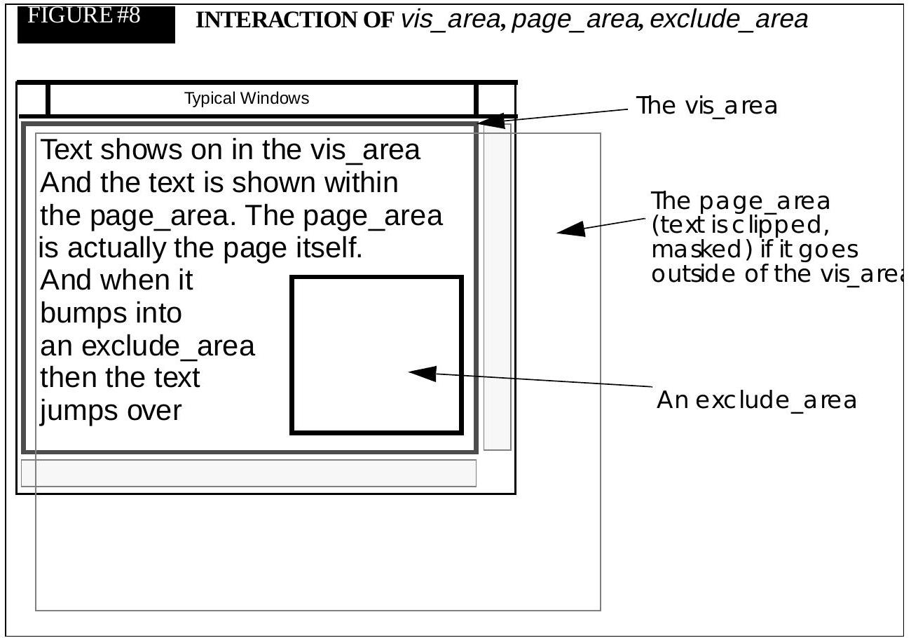
As stated, the simplest documents are rectangles; however, the page_area can be non-rectangular. A good example of this would be columns in which text must flow from one column to the other. In this case, the page_area would look similar to what is shown in Figure 9 infra.
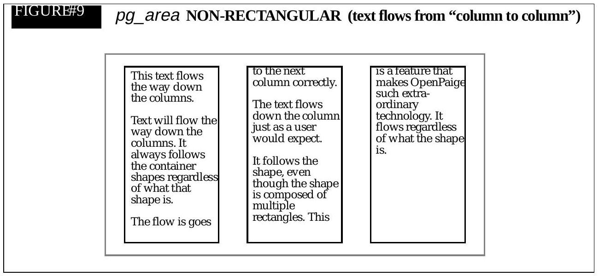
For purposes of cross-platform technology, OpenPaige defines its own set of structures to represent screen positions (coordinates) and shapes. Except for machine-specific source files, no reference is made to, say, Macintosh “QuickDraw” structures.
The main components ("building blocks") of shapes are the following record structures:
Rectangletypedef struct
{
co_ordinate top_left; // Top-left of rect
co_ordinate bot_right; // Bottom-right of rect
}
rectangle, *rectangle_ptr;Co_ordinatetypedef struct
{
long v; // vertical position
long h; // horizontal position
}
co_ordinate;Shapes are simply a series of rectangles. A very complex shape could theoretically be represented by thousands of rectangles, the worst-case being one rectangle surrounding each pixel.
All shape structures consist of a bounding rectangle (first rectangle in the array) followed by one or more rectangles; the bounding rectangle (first one) is constantly updated to reflect the bounding area of the whole shape as the shape changes.
Hence, the shape structure is defined simply as:
typedef rectangle shape; // Also a "shape", really
typedef rectangle_ptr shape_ptr;A shape is maintained by OpenPaige, however, as a memory_ref to a block of memory that contains the shape information. In the header it is defined as:
typedef memory_ref shape_ref; // Memory ref containing a "shape"The following rules apply to shapes with respect to the list of rectangles they contain:
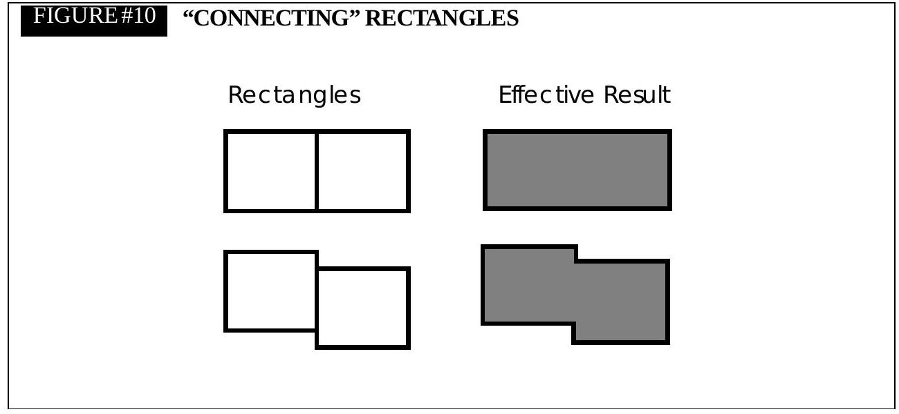 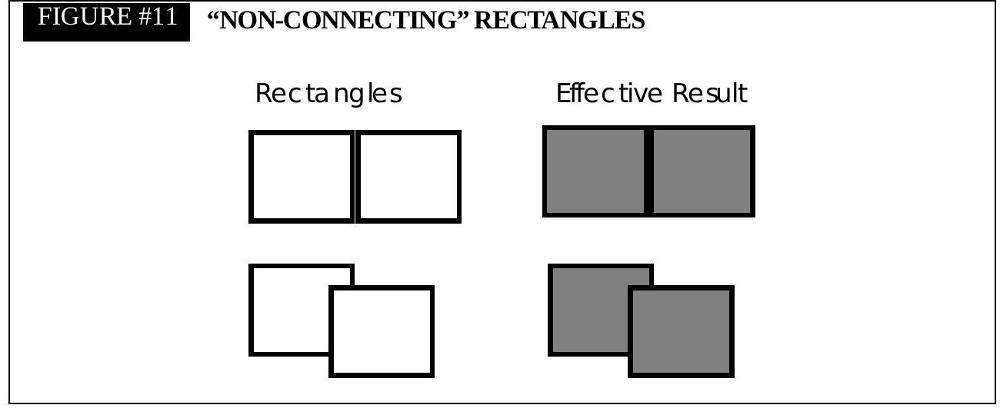
Placing data into the shape_ref is the subject of discussion in this section. However, you will not normally manipulate the shape_ref data directly.
The easiest way to create a new shape is to use the following function:
(shape_ref) pgRectToShape (pgm_globals_ptr globals, rectangle_ptr rect);This returns a new shape_ref (which can be passed to one of the "area" parameters in pgNew). The globals parameter must be a pointer to the same structure given to pgMemStartup() and pgInit().
The rect parameter is a pointer to a rectangle; this parameter, however, can be a null pointer in which case an empty shape is returned (shape with all sides = 0).
If you have already created a shape_ref, you can "clear" its contents and/or set the shape to a single rectangle by calling the following:
(void) pgSetShapeRect (shape_ref the_shape, rectangle_ptr rect);The shape the_shape is changed to represent the single rectangle rect. If rect is a null pointer, the_shape is set to an empty shape.
The best way to build a shape requiring more than one rectangle is to call the following:
(void) pgAddRectToShape (shape_ref the_shape, rectangle_ptr rect);The rectangle pointed to by rect is added to the rectangle list in the_shape, combining it with other rectangles if necessary. When a rectangle is added, pgAddRectToShape first explores all existing rectangles in the_shape to see if any of them can "merge" with rect (see "Rules for Shapes"). If none can be combined, rect is appended to the end of the list.
If the_shape is empty, the_shape gets set to the dimensions of rect (as if you had called pgSetShapeRect supra).
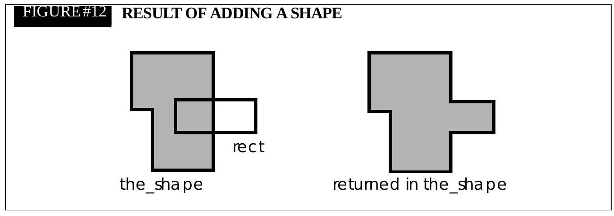
To dispose a shape, call:
(void) pgDisposeShape (shape_ref the_shape);Rect to RectangleTwo utilities exist that make it easier to create OpenPaige rectangles:
#include "pgTraps.h"
(void) RectToRectangle (Rect PG_FAR *r, rectangle_ptr pg_rect);
(void) RectangleToRect (rectangle_ptr pg_rect, co_ordinate_ptr offset, Rect PG_FAR *r);RectToRectangle converts Rect r to rectangle pg_rect. The pg_rect parameter must be a pointer to a rectangle variable you have declared in your code.
RectangleToRect converts pg_rect to r; also, if offset is non-null the resulting Rect is offset by the amounts of the coordinate (for example, if offset.h and offset.v were (10, 5) the resulting Rect would be the values in pg_rect with left and right amounts offset by 10 and top and bottom amounts offset by -5.
NOTE (Macintosh): Since a Mac Rect has a ±32 K limit for all four sides, OpenPaige rectangle sides larger than 32 K will be intentionally truncated to about 30 K.
NOTE: You must #include "pgTraps.h" in any code that calls either function above.
(void) pgOffsetShape (shape_ref the_shape, long h, long v);Offsets (moves) *the_shape by h (horizontal) and v (vertical) distances. These may be negative. Positive numbers move to the right horizontally and down vertically as appropriate.
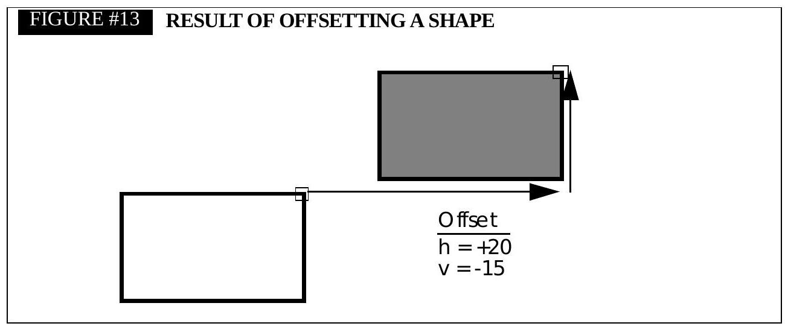
(void) pglnsetShape (shape_ref the_shape, long h, long v);Insets (shrinks or expands) *the_shape by h and v amounts. Positive numbers inset the shape inwards and negative numbers expand it.
(pg_short_t) pgPtInShape (shape_ref the_shape, co_ordinate_ptr point, co_ordinate_ptr offset_extra, co_ordinate_ptr inset_extra, pg_scale_ptr scaling);pgPtInShape returns "TRUE" if point is within any part of the_shape (actually, the rectangle number is returned beginning with #1). The point is temporarily offset with offset_extra if offset_extra is non-null before checking if it is within the_shape (and the offset values are checked in this case, not the original point).
If scaling is non-NULL, the_shape is temporarily scaled by that scale factor. For no scaling, pass NULL.
Also, each rectangle is temporarily inset by the values in inset_extra if it is non-NULL. Using this parameter can provide extra "slop" for point-in-shape detection. Negative values in inset_extra enlarge each rectangle for checking and positive numbers reduce each rectangle for checking.
NOTE: For convenience, the_shape can be also be MEM_NULL, which of course returns FALSE.
(pg_short_t) pgSectRectInShape (shape_ref the_shape, rectangle_ptr rect, rectangle_ptr sect_rect)Checks to see if a rectangle is within the_shape. First, offset_extra, if non-null, moves rect by the amount in offset_extra.h and offset_extra.v, then checks if it intersects any part of the_shape. The result is TRUE if any part of rect is within the shape, FALSE if it is not. If the_shape is empty, the result is always FALSE.
Actually, a "TRUE" result will really be the rectangle number found to intersect, beginning with 1 as the first rectangle.
NOTE: A result of TRUE does not necessarily mean that rect doesn't intersect with any other rectangle in the_shape; rather, one rectangle was found to intersect and the function returns.
If sect_rect is not MEM_NULL, it gets set to the intersection of rect and the first rectangle in the_shape found to intersect it.
(void) pgShapeBounds (shape_ref the_shape, rectangle_ptr bounds);Returns the rectangle bounds of the outermost edges of the_shape. The bounds is placed in the rectangle pointed to by bounds (which cannot be null).
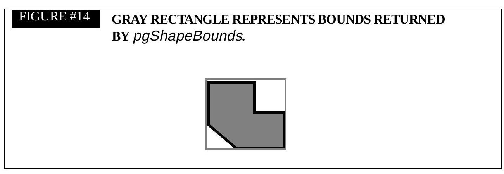
(pg_boolean) pgEmptyShape (shape_ref the_shape);FUNCTION RESULT: This function returns TRUE if the_shape is empty (all sides are the same or all zeros).
(pg_boolean) pgEqualShapes (shape_ref shape1, shape_ref shape2);FUNCTION RESULT: Returns TRUE if shape1 matches shape2 exactly, even if both are empty.
(pg_boolean) pgSectShape (shape_ref shape1, shape_ref shape2, shape_ref result_shape);Sets result_shape to the intersection of shape1 and shape2. All shape_ref parameters must be valid shape_refs, except result_shape can be MEM_NULL (which you might want to pass just to check if two shapes intersect). Additionally, result_shape cannot be the shape shape_ref as shape1 or shape2 or this function will fail.
If either shape1 or shape2 is an empty shape, the result will be an empty shape. Also, if nothing between shape 1 and shape 2 intersects, the result will be an empty shape.
FUNCTION RESULT: The function result will be TRUE if any part of shape1 and shape2 intersect (and result_shape gets set to the intersection if not MEM_NULL), otherwise FALSE is returned and result_shape gets set to an empty shape (if not MEM_NULL).
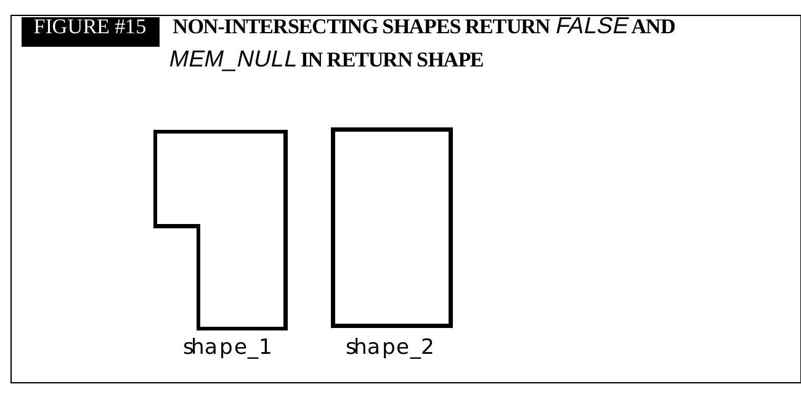
FUNCTION RESULT: Neither shape1 nor shape2 are altered by this function.
(void) pgDiffShape (shape_ref shape1, shape_ref shape2, shape_ref result_shape);FUNCTION RESULT: This function places the difference in result_shape between shape1 and shape2.
Unlike pgSectShape, result_shape cannot be MEM_NULL; however, it can be the same shape_ref as shape1 or shape2.
The "difference" is computed by subtracting all portions of shape1 from shape2, and the geometric difference(s) produce result_shape. If shape1 is an empty shape, result_shape will be a mere copy of shape2; if shape2 is empty, result_shape will be empty.
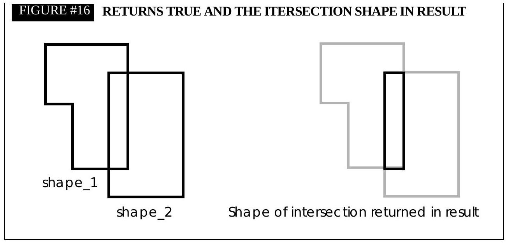 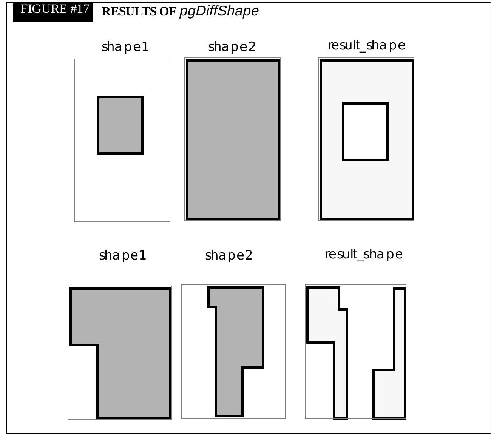
(void) pgEraseShape (pg_ref pg, shape_ref the_shape, pg_scale_ptr scale_factor, co_ordinate_ptr offset_extra, rectangle_ptr vis_bounds);FUNCTION RESULT: This function will erase the_shape (by filling it with the background colour of the device in pg).
The scale_factor parameter defines scaling, if any; for no scaling, pass zero for this parameter. If you want scaling, see "Scaling an OpenPaige Object".
If offset_extra is non-null, the_shape is temporarily offset by offset_extra -> h and offset_extra -> v amounts before the erasure occurs.
If vis_bounds is non-null, then only the parts of the_shape that intersect with vis_bounds get erased; otherwise, the whole shape is erased (see illustration infra).
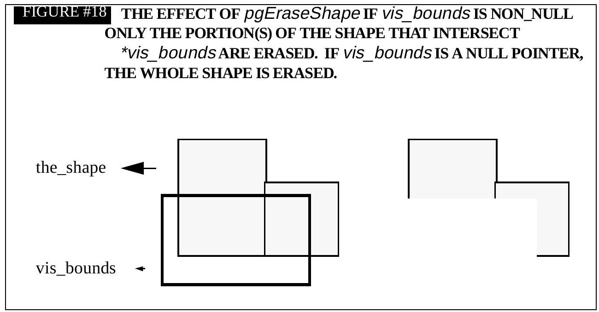
pg_ref(void) pgOffsetAreas (pg_ref pg, long h, long v, pg_boolean offset_page, pg_boolean offset_vis, pg_boolean offset_exclude);This function "moves" the page area and/or visual area and/or the exclusion area of pg. If offset_page is TRUE, the page area is moved; if offset_vis is TRUE the visual area is moved; if offset_exclude is TRUE the exclusion area is moved.
Each area is moved horizontally and vertically by h and v pixels, respectively. What occurs is h gets added to the left and right sides of all rectangles enclosed in the shape while v gets added to top and bottom. Hence the shape is moved left or right, up or down with negative and positive values, respectively.
NOTE: The contents of pg are not redrawn.
void ShapeToRgn (shape_ref src_shape, long offset_h, long offset_v, pg_scale_factor PG_FAR *scale_factor, short inset_amount, rectangle_ptr sect_rect, RgnHandle rgn);This function sets region rgn to src_shape. In addition, the region is offset by offset_h and offset_v amounts. If scale_factor is non-NULL, the resulting region is scaled by that scaling factor (see "Scaling").
Each rectangle added to the region is inset by inset_amount (inset_amount is added to the top and left and subtracted from right and bottom).
If sect_rect is non-null, every rectangle in the shape is first intersected with sect_rect and the intersection (only) is output to the region.
NOTE: You must #include "pgTraps.h" to use this function.
NOTE (Windows): - RgnHandle is typedefed in pgTraps.h and is the same as HRGN.
CAUTION: Converting huge complex shapes to a region can be slow.
The following function is available only for Macintosh that takes a picture and produces a shape that encloses the picture's outside edges:
#include "pgTraps.h"
(void) PictOutlineToShape (PicHandle pict, shape_ref target_shape, short accuracy)Given a picture in pict and a shape_ref in target_shape, this function sets target_shape to surround the outside bit image of the picture.
The accuracy parameter can be a value from 0 to 7 and indicates how "accurate" the shape should be: 0 is the most accurate (but consumes the most memory) and 7 is the least accurate (but consumes the least memory). The accuracy value actually indicates how many pixels to skip, or "group" together in forming the image. If accuracy = 0, the image is produced to the nearest pixel — which theoretically can mean that a rectangle is produced for every pixel surrounding the image (which is why so much memory can be consumed).
The picture does not need to be a bitmap image, and it can be in colour (the image is produced around the outside edges of all nonwhite areas for colour).
NOTE: Large, complex images can not only consume huge amounts of memory but can take several seconds to produce the image, so use this function sparingly!
NOTE: You must #include "pgTraps.h" to use this function.
OpenPaige will support any background colour (which your machine can support) even if the target window's background colour is different.
The page area (area text draws and wraps) will get filled with the specified colour before text is drawn; hence this features lets you overlay text on top of non-white backgrounds (or, if desirable, will also let you overlay white text on top of dark or black backgrounds).
Note that this differs from the bk_color value in style_info. When setting the style_info background, OpenPaige will simply turn on that background colour only for that text. Setting the general background colour (using the functions below) sets the background of the entire page area.
NOTE: See "Setting/Getting Text Color" or "Changing Styles" for information about setting text colour and text background colour.
OpenPaige will also recognize which colour is considered "transparent." Normally, this would be the same color as the window's normal background colour, typically "white."
"Transparent" is simply the background colour for which OpenPaige will not set or force. Defining which color is transparent in this fashion lets you control the background colour(s) for either the entire window and/or a different colour for the window versus the pg_ref's page area.
The colour that is specified as "transparent" effectively tells OpenPaige: "Leave the background alone if the page area's background is the transparent colour."
For most situations, you can leave the transparent colour as its default — white.
Here is an example, however, where you might need to change the transparent color. Suppose that your whole window is always blue but you want OpenPaige to draw on a white background. In this case, you would set the transparent colour to something other than "white" so OpenPaige is forced to set a white background. Otherwise, OpenPaige will not change the background at all when it draws text since it assumes the window is already in that colour.
(void) pgSetPageColor (pg_ref pg, color_value_ptr color);
(void) pgGetPageColor (pg_ref pg, color_value_ptr color);To change the page area background colour, call pgSetPageColor. The new background colour will be copied from the color parameter.
To obtain the current page colour, use pgGetPageColor and the background colour of pg is copied to *color.
After changing the background, subsequent drawing will fill the page area with that colour before text is drawn.
NOTE: pgSetPageColor does not redraw anything.
The "transparent colour" is a global value, as a field in pg_ref. Hence, all pg_refs will check for the transparent colour by looking at this field.
If you need to swap different transparent colours in and out for different situations, simply change pg_globals -> trans_color to the desired value.
NOTE: Usually the only time you need to change the transparent colour to something other than its default (white) is the following scenario: Non-white background colour for the whole window, but white background for a pg_ref's page area. In every other situation it is safe to leave the transparent colour in pg_globals alone.
(void) pgErasePageArea (pg_ref pg, shape_ref vis_area);This function fills pg's page area with the current page background color of pg.
The fill is clipped to the page area intersected with the shape given in the vis_area parameter. However, if vis_area is a null pointer, then the vis_area in pg is used to intersect instead.
NOTE: You do not normally need to call this function: OpenPaige fills the appropriate areas(s) automatically when it draws text. This function exists for special situations where you want to "erase" the page area.
The purpose of this section is to provide some additional information about OpenPaige "background" colours and their relationship to the window's background colour.
First, let's clarify the difference between three different aspects of background:
pg_ref in which text flows, or wraps. This is not necessarily the same colour as the window's background colour. For instance, if the page area were smaller than the window that contained it, the page background would fill only the page area, while the remaining window area would remain unchanged.When creating new OpenPaige objects, the page area background colour is purely determined by the def_bk_color member of OpenPaige globals. Afterwards, this colour can be changed by calling pgSetPageColor().
The window background colour is purely controlled by your application and no OpenPaige functions alter that colour.
Text background is controlled by changing the bk_color member of style_info, and that color applies only to the character(s) of that particular style.
The purpose of pg_globals.trans_color is to define the default WINDOW background. Since OpenPaige is a portable library, the trans_color member is provided as a platform-independent method for OpenPaige to know what the "normal" background colour is.
OpenPaige uses trans_color only as a reference. Essentially, trans_color defines the colour that would appear if OpenPaige left the window alone, or the colour that would be used by the operating system if the window were "erased".
The value of trans_color becomes the most significant when you have set the page and/or text color to something different to the window color, because OpenPaige compares the page and text colors to trans_color to determine whether or not to ERASE the background.
Its reasoning is, "... If the background color I am to draw is not the "normal" background color [trans_color], then I need to force-fill the background.”
Conversely, "... If the background color I am to draw is the same as trans_color, then I don't have to set anything special”.
Herein is most of the difficulty that OpenPaige users encounter with background colors: they set the window to a non-white background, yet they usually leave pg_globals.trans_color alone. This is OK as long as trans_color and the page area colour are different.
But if you want the page background and window background to be the same, make sure pg_globals.trans_color is the same as the page background color. The general rules are:
pg_globals.trans_color to the same value as the window's background color. Do this regardless of what the page area background color will be.pg_globals.trans_color is when/if you have changed the window's background color to something other than what is already in pg_globals.trans_color.trans_color.pg_globals.trans_color, pgSetPageColor() and the window background colour to the same colour value.Although OpenPaige does not provide full pagination features as such, several powerful support functions and features exist to help implement page breaks, columns, margins, etc.
For custom text placement not covered in this chapter and for custom pagination features such as widows and orphans, keep with next paragraph, etc. see "Advanced Text Placement".
In every pg_ref, the following structure is maintained:
typedef struct
{
long attributes; // Various attributes (see below)
short page_origin; // What corner = origin
pg_short_t num_pages; // Number of "real" pages
short exclusion_inset; // Amount to inset exclusion area when clipping
short scroll_inset; // Amount to inset vis area when scrolling
short caret_width_extra; // Width of the caret
long repeat_slop; // Minimum remaining before repeat
short minimum_widow; // Minimum window (lines) NOTE SPELLING!
short minimum_orphan; // Minimum orphan (lines)
co_ordinate repeat_offset; // Amount of "gap for repeater shapes
rectangle print_target; // App can use as printed page size
rectangle margins; // Applied page margins
rectangle offsets; // Additional offsets of doc, 4 sides
long max_chars_per_line; // Optional max characters per line, or zero
long future[PG_FUTURE]; // Reserved for future
long ref_con; // App can store whatever
}
pg_doc_info, PG_FAR *doc_ptr;NOTE: Some of the fields in pg_doc_info are currently unsupported, some of them are defined in Paige.h but not included above (but exist for future enhancements and extensions).
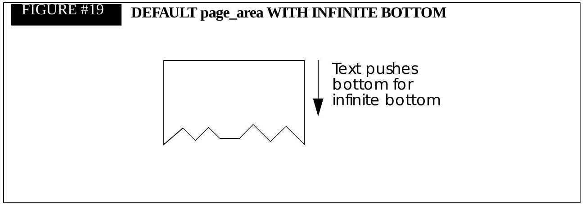
The fields that are currently supported are as follows:
attributes — defines special characteristics for the page_area shape. The attributes field applies only to the page_area shape (not vis_area or exclude_area), and it is a set of bits which can be any of the following:
#define V_REPEAT_BIT 0x00000001 // Shape repeats vertically
#define H_REPEAT_BIT 0x00000002 // Shape repeats horizontally
#define BOTTOM_FIXED_BIT 0x00000004 // Shape's bottom does not grow
#define NO_CONTAINER_JMP_BIT 0x00000010 // Can't jump containers
#define MAX_SCROLL_ON_SHAPE 0x00000020 // Maximum scroll is on shape
#define NO_CLIP_PAGE_AREA 0x00000040 // Page area does NOT clip text
#define WINDOW_CURSOR_BIT 0x00000400 // Keep cursor in window view
#define COLOR_VIS_BIT 0x10000000 // Page colour covers whole vis_area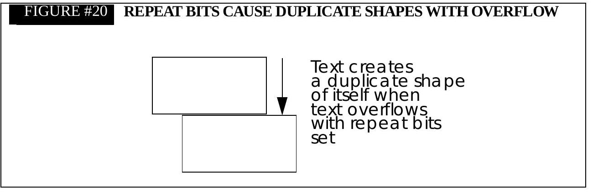
V_REPEAT_BIT or H_REPEAT_BIT — causes the page_area to "repeat" itself when text overflows the bottom (see "Repeating Shapes").
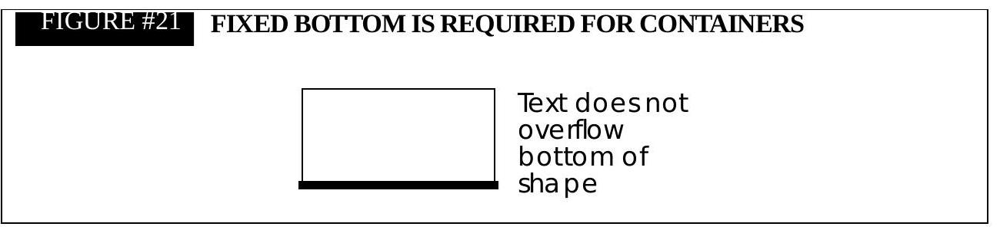
BOTTOM_FIXED_BIT — forces the page_area's bottom to remain the same (otherwise, the bottom is considered infinite or "variable" as text grows or shrinks).
NOTE: You want this bit to be set if you are implementing "containers." See "Containers Support”.
NO_CONTAINER_JMP_BIT — causes text to stay within one rectangle of the shape unless a container break character is encountered. (The usual purpose of setting this mode is for "form" documents and other matrix formats in which text can't leave a "cell" unless explicitly tabbed to do so).
MAX_SCROLL_ON_SHAPE — causes OpenPaige to compute the maximum vertical scrolling values by the bottom-most rectangle in the page area (as opposed to the bottom-most text position).
NOTE: This bit should be set for implementing "containers." See "Containers Support".
NO CLIP_PAGE_AREA — causes text drawing to be clipped to the page area. Normally, text is only clipped to the vis area. If this bit is set, it is clipped to the intersection of vis area and page area.
NOTE: You generally want this bit set for "containers" and/or non-rectangular wrap shapes.
Each attribute is said to be "on" if the bit is set. The default, after pgNew, is all zeros (all clear).
NOTE: If either "repeat" bit is set, BOTTOM_FIXED_BIT attribute is implied (and assumed) even if BOTTOM_FIXED_BIT is clear. This is because a shape cannot "repeat" unless the bottom is unchangeable.
WINDOW_CURSOR_BIT — causes the caret to stay within the vis_area regardless of where the document scrolls.
COLOR_VIS_BIT — informs OpenPaige that the page background colour is one and the same as the window's background colour. Setting this bit causes all "erased" areas to be painted with the page colour. Usually you want to set this bit to avoid "flashing" during scrolling if your window's background is non-white and it is the same as the page background color.
repeat_slop — defines the minimum amount of vertical space, in pixels, remaining at the end of a document before the page shape repeats (new page “appended”). Used for repeating shapes only.
exclusion_inset — defines the amount to inset each exclusion rectangle for clipping. For example, if exclusion_inset were -1, each exclusion rectangle would be expanded 1 pixel larger before being subtracted from the clipped text display.
caret_width_extra — defines the width of the caret, in pixels. The default is 1.
scroll_inset — defines the amount to inset the vis_area when scrolling. For example, if scroll_inset were 1, a call to pgScroll()would visually scroll the vis_area minus 1 pixel on all four sides.
minimum_widow — defines the minimum number of lines that can exist at the end of a page, otherwise the paragraph breaks to the next page.
minimum_orphan — defines the minimum number of lines that can exist at the beginning of a new page, otherwise the whole paragraph breaks to the new page.
repeat_offset — defines the distance or "gap" to place between repeated shapes (see “Repeating Shapes”).
num_pages — contains the current "number of pages," which is really the number of times the shape will repeat itself if the whole document was displayed.
NOTE: This is not necessarily the number of physical pages that should be printed!
Repeating shapes can have "blank" pages due to the slop value on a nearly-filled page causing a new repeat. For correct printing, see pgPrintToPage.
ref_con — Can contain anything you want.
TODO: Currently, page_origin, print_target and margins fields are not supported but are provided for future enhancements and extensions.
The example demos had spacing above the document that I couldn't get rid of. I'm interested in some of the "multimedia" features of openPaige, but I want a "streaming" document (no margins/headers/footers spaces). How do I get rid of the spacing so that all of the document is one long stream of data?
By "spacing" I assume you mean the white space between page breaks. We simply chose to implement the demo this way, with the "repeating shape" feature in OpenPaige. Using this implementation, the pages show exactly as they will appear when printed, i.e. with all the paper margins in each side including top/bottom.
Some developers like to implement documents that way, yet some prefer the method that you mention (as one continuous "page"). To do one continuous page, one simply does not implement the "repeating shape,"; non-repeating shapes is actually the default mode. You can examine non-repeating shapes in our "Simple Demo" for Macintosh
For information on page breaks in a continuous document see "Artificial page breaks"
page_area, vis_area and clipping regions clarifiedI am having difficulty setting the appropriate attributes to make my document behave in a certain way...[etc.].
It is important to understand the relationship between the vis_area, page_area, and the various attribute bits in a pg_ref thăt might affect the behavior of both shapes (by attribute bits is meant the value(s) originally given to the flags parameter for pgNew and/or new attribute settings given in pgSetAttributes) and/or the attributes set in pg_doc_info.
The most essential difference between a pg_ref's page area versus vis_area is the page_area is the "container" in which text will wrap, while its vis area simply becomes the document's clipping region.
Generally, the vis_area remains constant and unchanging, whereas the page_area, particularly its bottom, can change dynamically as text is inserted or deleted, depending on the attribute flags that are set in the pg_ref. The following is the expected behaviour of the page_area when different attribute flags are set in the pg_ref:
page_area attributes| ATTRIBUTE BITS | page_area BEHAVIOUR |
CLIPPING |
|---|---|---|
| no bits set (default) | Bottom grows/shrinks dynamically as text is inserted or deleted (see notes below). | All drawing is clipped to intersection of vis_area and the window's current clip region. |
BOTTOM_FIXED_BIT |
Bottom remains constant, never changes regardless of the text content | All drawing is clipped to intersection of vis_area, page_area and the window's current clip region. |
NO_WINDOW_VIS_BIT |
No effect | Same as above except window's clip region is not included in the clip region |
EX_DIMENSION_BIT (pgNew() flag) |
No effect visually, but the total height of the doc's contents include the exclusion area shape (otherwise the exclusion area is not considered part of the document's dimensions). | No effect visually |
COLOR_VIS_BIT |
No additional effect (but vis_area is erased with the background colour) |
No effect visually |
V_REPEAT_BIT |
Shape automatically repeats when text fills to its bottom, achieving multiple page effect. | Each repeating shape intersects with clip region |
NO_CLIP_REGION |
No effect | No clipping is set at all (the application must set the clipping area) |
On default behaviour (when no attributes have been set):
page_area's bottom is said to grow dynamically to enclose the total height of text. In this case, the bottom of the page_area originally given to pgNew is essentially ignored; the page area's top, however, is not ignored, as that defines the precise top position of the first line of text.page_area appears to "grow," any time you might examine the page area shape, its bottom would not be changed from the original dimensions (to get document's bottom, use pgTotalTextHeight instead).NO_WINDOW_VIS_BIT works only in the Macintosh version and has no effect in the Windows version.(void) pgGetDocInfo (pg_ref pg, pg_doc_ptr doc_info);
(void) pgSetDocInfo (pg_ref pg, pg_doc_ptr doc_info, pg_boolean inval_text, short draw_mode);To obtain the current document info settings for pg, call pgGetDocInfo, and a copy of the document info record will be placed in *doc_info.
To change the document info, call pgSetDocInfo and pass a pointer to the new information. OpenPaige will copy its contents in pg.
If inval_text is TRUE, OpenPaige marks all the text in pg as "not paginated," forcing new word-wrap calculations the next time it paginates the document (which will normally be the next time the contents of pg are drawn).
draw_mode can be the values as described in "Draw Modes":
typedef enum
{
draw_none, // Do not draw at all
best_way, // Use most efficient method(s)
direct_copy, // Directly to screen, overwrite
direct_or, // Directly to screen, "OR"
direct_xor, // Directly to screen, "XOR"
bits_copy, // Copy offscreen
bits_or, // Copy offscreen in "OR" mode
bits_xor, // Copy offscreen in "XOR" mode
bits_emulate_copy // Copy "fake" offscreen
bits_emulate_or // "Fake" offscreen in "OR" mode
bits_emulate_xor // "Fake" offscreen in "XOR" mode
};If V_REPEAT_BIT or H_REPEAT_BIT is set in the attributes field of pg_doc_info, the page_area shape will "repeat" itself each time text overflows the bottom. For V_REPEAT_BIT, the shape repeats itself vertically; for H_REPEAT_BIT, the shape repeats itself horizontally (see Figure 15).
However, the shape itself does not physically grow. Instead, OpenPaige displays the shape repeatedly down the screen, one page at a time. Hence, if you changed page_area to some other shape while one of the repeat bits were on, then all repeating shapes will change to the new shape.
The simplest application of the repeat bits is to provide a page rectangle (in original page_area), then as the document grows multiple "pages" are added.
Note that the term page is used here to describe a logical section of a document: the original shape does not really need to be a page rectangle, rather it could be a set of columns or any non-rectangular shape. In any event, the entire shape repeats itself each time text fills it up.
For such a feature, if you require a "gap" (page break area), you can do so by setting repeat_offset in pg_doc_info to a non-zero value. This is the amount, in pixels, to add between repeated shapes. Note that repeat_offset is a co_ordinate. This means you can specify both a vertical and horizontal displacement for repeated shapes (a horizontal displacement + vertical displacement would cause a "staircase" effect).
If the shape is to repeat vertically, each occurrence of the shape falls below the last one; for horizontal repeating, each occurrence falls to the right of the last one. The "gap" (repeat_offset), however, is added to the appropriate corresponding sides:
repeat_offset.v always displaces the repeating shape vertically and repeat_offset.h always displaces horizontally, regardless of whether V_REPEAT_BIT or H_REPEAT_BIT is set.
The purpose of the repeat_slop field is to append a repeated shape before text actually fills the entire shape.
For example, many applications prefer a new "page" to become available when text is almost filled to the bottom of the last page. The value you place in repeat_slop is used for this purpose, and is used by OpenPaige as follows: once the bottom of text + repeat_slop ≥ the shape's bottom, the shape is repeated.
H_REPEAT_BIT, a shape only repeats when text BOTTOM + repeat_slop hits or surpasses the shape's bottom.H_REPEAT_BIT or V_REPEAT_BIT should ever be set at a time (the shape will not repeat both ways).For more details on how OpenPaige paginates, see "Advanced Text Placement".
I am doing my word processor similar to MS Word. I put in a page break and draw my line dividing the pages. But when I go to print, openPaige draws a single page, the text does not break to the next page.
The only real problem is if a pg_ref has no repeating shapes (or containers), a page break char has no place to "jump." Well, then during printing—just before pgPrintToPage—all one needs to do is set repeating shapes, then print. When printing is done, restore non-repeating shapes. That will cause openPaige to work "correctly."
But when you want to go to page view mode, you should then switch to repeating shapes, just as the above note does for printing. That will help solve your problem.
Note that in a long document, anything exceeding 10 pages, finding a page will require pagination which the user wili probably notice. This is why word includes a "Paginate Now" menu item in the menu! You will probably want to paginate once and then I believe pgFindPage should work more quickly. If you don't allow OpenPaige to paginate, it can't know which character is the top of the page! OpenPaige (and all other word processors that display WYSIWYG pages) will have to repaginate to find the positions of the first character on the page. OpenPaige currently performs many tricks and second guessing on when and how to calculate those positions.
Please note that OpenPaige cannot make the same assumptions as Word on when to perform those calculations. We must sometimes rely on the developer to know when to perform the pagination.
In Figure 13, the initial page_area shape contains text which is within the bounds of the shape. Once text overflows the bottom, the shape is repeated and placed at repeat_offset.v pixels down and repeat_offset.h pixels across.
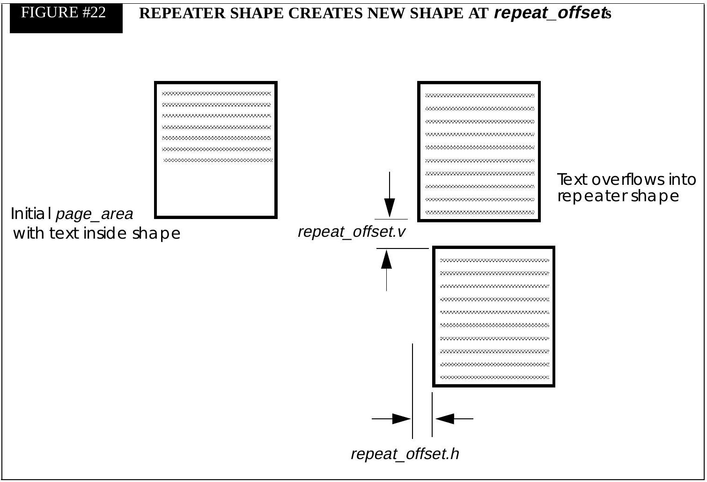
The next illustration shows what happens when repeat_stop is nonzero. In this example, repeat_stop's value is added to the bottom of the text and, if the result overflows the shape's bottom, the shape is repeated. This provides an 'extra page' to get added before the text completely fills the page shape.
repeat_stop value.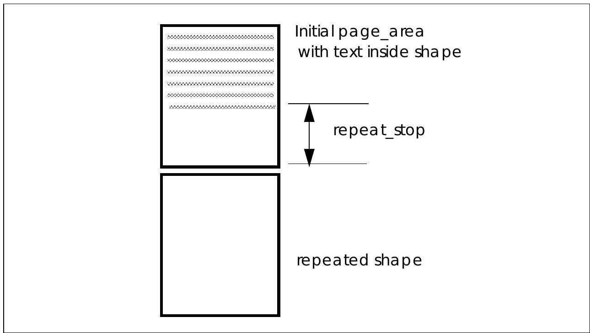
A repeating shape can actually be any shape and does not need to be a "page" rectangle. Figure 17 shows an example of "columns" repeating for each "page."
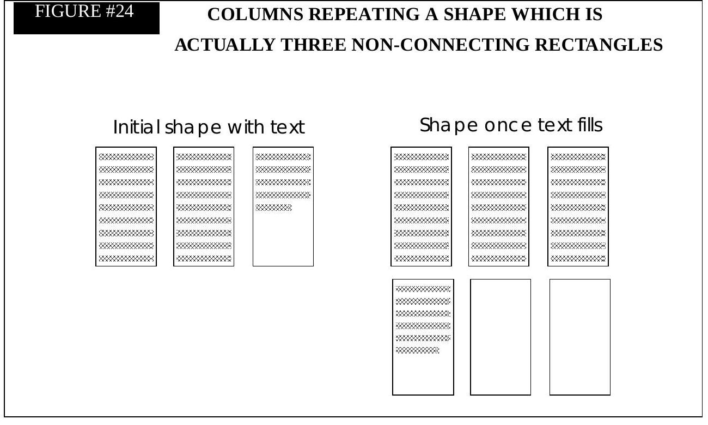
Repeated shapes will "delete" themselves if text shrinks above the repeated shape.
For example, if text filled up "page 1" causing a "page 2" to be created, deleting all the text will effectively delete "page 2."
OpenPaige supports "widow and orphan" control, to a certain extent. When lines are computed to flow within repeating shapes (multiple "pages"), whenever pg_doc_info.minimum_widow is non-zero, OpenPaige will force a whole paragraph to the next page if its number of lines on the bottom of the page are equal to or less than minimum_widow.
Similarly, if pg_doc_info.minimum_orphan is non-zero, the whole paragraph is forced to the next page if its number of lines already breaking to the next page are less than or equal to minimum_orphan.
While OpenPaige does not directly support "headers and footers," a number of functions are provided to implement them more easily.
This "hook" allows an application to temporarily modify the top, left, right and bottom margins of a "page" before pagination occurs. This is useful for header/footer/footnote support since temporary "exclusion" areas can be tailored for any specific page—and without actually modifying the exclusion shape itself.
PG_PASCAL (void) page_modify_proc) (paige_rec_ptr pg, long page_num, rectangle_ptr margins);The above is the prototype for page_modify. This is a general OpenPaige hook (not a style hook). When this gets called, page_num will indicate a zero-indexed page number and margins will point to a "rectangle" that represents four margins.
OpenPaige calls this hook for every page that it "paginates." Note that the margins rectangle is not actually rectangle, rather it represents four margin values to add to the top or left, and/or subtract from bottom or right. Normally, these values will be zero (no extra margins); but if you wanted to remove, say, 16 pixels of space from the bottom of the page, you would set margins -> bot_right.v to 16.
Each time this function is called, all four "margins" are cleared to zero (the default). Hence if your function does nothing, the page remains the original size.
This hook is also very useful for alternating "gutters," i.e. extra space on the right side for odd pages and the same extra space on the left side for even pages, etc.
CAUTION: The top and bottom of the page can be modified randomly, i.e. each page can be different. Modifying left and/or right sides, however, must result in the same width for all pages. For example, you should not modify the left or right sides of page 1 but leave page 2's left or right side alone; it is OK to alternate sides as they are modified as long as the distance between left and right edges remain the same.
For additional information, see also the chapter "Customizing OpenPaige".
void pgTextboxDisplay (pg_ref pg, paige_rec_ptr target_pg, rectangle_ptr target_box, rectangle_ptr wrap_rect, short draw_mode);The above function is useful for drawing a pg_ref to any arbitrary location; the text will move (and optionally wrap) to a specified target location regardless of where its "normal" coordinates exist.
PURPOSE: Since most applications that implement headers and footers use pg_refs for a "header" or "footer", this new function exists for header/footer utilities.
If target_pg is not null, the drawing occurs to the graphics device attached to that OpenPaige record; otherwise the drawing occurs to the device attached to pg. Note there are two usual ways to obtain a paige_rec_ptr: the first is from a low-level hook, in which case the paige_rec_ptr is usually one of its parameters. The second way is to do UseMemory(pg_ref) and then UnuseMemory(pg_ref) when you are done using the paige_rec_ptr.
The target_box parameter is a pointer to a rectangle which defines bounding "box" in which to draw the text. This rectangle defines the top-left position of the drawing as well as the clipping region. Text will not rewrap into this shape; rather, it repositions its text to align with the box's top-left coordinate, and target_box also becomes the clipping region.
The wrap_rect parameter is a pointer to an optional, temporary "page rect" for the text to wrap. If this is a null pointer, the page_area is used within pg (the source pg_ref ).
The draw_mode is identical to all other functions that accept a drawing mode.
OpenPaige supports several other page finding and setting commands. These are closely aligned with printing. These are shown in "Computing Pages", and “Skipping pages". Custom page display techniques are described in "Display Proc",
OpenPaige has some built-in support for this purpose by providing several functions to insert, delete and change a list of rectangles that constitute page_area, as well as the ability to attach an application-defined reference to each "container" of the shape.
The term "container" is used to describe a rectangular portion of the page_area. For an application to support page-layout text containers, the typical method is to build the page_area (the shape in a pg_ref in which text will flow) with the desired series of rectangles.
By default, a pg_ref will not necessarily handle containers the way you might expect without first setting the appropriate values in pg_doc_info.
Before using any of the functions below, you should set at least the BOTTOM_FIXED_BIT and MAX_SCROLL_ON_SHAPE bits using pgSetDocInfo.
These bits are not set by default, so you should set them soon after pgNew and before inserting or displaying a pg_ref with "containers". For more information about pgSetDocInfo see “Getting/Setting Document Info”.
void setup_for_containers (pg_ref pg)
{
pg_doc_info info;
pgGetDocInfo(pg, &info);
info.attributes = BOTTOM_FIXED_BIT | MAX_SCROLL_ON_SHAPE;
pgSetDocInfo(pg, &info, FALSE);
}The purpose of BOTTOM_FIXED_BIT is to keep the last rectangle from "growing" along with text.
MAX_SCROLL_ON_SHAPE is optional, but will usually be what you want. Normally, OpenPaige will assume the maximum vertical scrolling position is the same as the bottom-most text position. In a "containers" application, however, that is often undesirable since a document can contain many "empty" containers. By setting MAX_SCROLL_ON_SHAPE, OpenPaige will find the bottom-most page area rectangle for computing maximum vertical scrolling.
(pg_short_t) pgNumContainers (pg_ref pg); Returns the number of "containers" currently in pg. This function actually returns the number of rectangles in the page area. Initially, after pgNew, the answer will be however many rectangles were contained in the initial page_area shape, which will be at least one rectangle.
(void) pgInsertContainer (pg_ref pg, rectangle_ptr container, pg_short_t position, long ref_con, short draw_mode);This makes a copy of the rectangle pointed to by container and inserts it into pg 's page_area. Consequently, text will flow within the new shape now including the container rectangle, hence a new "container" is inserted.
Assuming that the current page area shape is a series of rectangles, from 1 to n, the new rectangle is inserted after the rectangle number in the position parameter. However, if position is zero, the new container is inserted at the beginning (becomes first rectangle in the shape). If position is pgNumContainers(pg), it is inserted as the very last rectangle.
You can also "attach" any long-word value (such as a pointer or some other reference) to the new "container" by passing that value in ref_con. Consequently, you can access this value at any time using pgGetContainerRefCon (see "Container refCon”).
draw_mode can be any combination of the values described in "Draw Modes":
typedef enum
{
draw_none, // Do not draw at all
best_way, // Use most efficient method(s)
direct_copy, // Directly to screen, overwrite
direct_or, // Directly to screen, "OR"
direct_xor, // Directly to screen, "XOR"
bits_copy, // Copy offscreen
bits_or, // Copy offscreen in "OR" mode
bits_xor, // Copy offscreen in "XOR" mode
bits_emulate_copy // Copy "fake" offscreen
bits_emulate_or // "Fake" offscreen in "OR" mode
bits_emulate_xor // "Fake" offscreen in "XOR" mode
};NOTE: The position parameter is not checked for validity! Make sure it is within the boundaries between 0 and pgNumContainers(pg) or a crash can result. (Also note that the other container functions given here require that the range be between 1 and pgNumContainers; only in pgInsertContainer can position be zero).
void pgGetContainer (pg_ref pg, pg_short_t position, pg_boolean include_scroll, pg_boolean include_scale, rectangle_ptr container);Returns the "container" rectangle defined by the position parameter. This can be any of the rectangles contained in pg's page area, from 1 to pgNumContainers(pg). The rectangle is copied to the structure pointed to by the container parameter.
If include_scroll is TRUE, the container returned will be in its "scrolled" position (as it would appear on the screen). If include_scale is TRUE, the container returned will be scaled to the appropriate dimensions (based on the scaling factor in pg).
range-checking on position is not performed. Make sure it is a valid rectangle number.
(long) pgGetContainerRefCon (pg_ref pg, pg_short_t position);
(void) pgSetContainerRefCon (pg_ref pg, pg_short_t position, long ref_con);The application-defined reference that is "attached" to container position is returned from pgGetContainerRefCon; you can also set this value using pgSetContainerRefCon.
Range-checking on position is not performed. Make sure it is a valid rectangle number.
NOTE: OpenPaige does not know what you have set in ref_con, hence if you have set some kind of memory structure it is your responsibility to dispose of it before pg Dispose.
(void) pgRemoveContainer (pg_ref pg, pg_short_t position, short draw_mode);Deletes the rectangle of the page_area given in position. This value must be between 1 (first rectangle) and pgNumContainers(pg). Range-checking on position is not performed.
CAUTION: Never delete the last (and only) "container." OpenPaige does not check for this situation, and by deleting the only container you will essentially have no area for the text to flow!
CAUTION: If you have set a ref_con value attached to the container to be deleted, it is gone forever after calling this function. It is your responsibility to do whatever is appropriate prior to deleting the container, such as disposing any memory structures involved with the refCon value, etc.
(void) pgReplaceContainer (pg_ref pg, rectangle_ptr container, pg_short_t position, short draw_mode);Replaces container defined in position with the rectangle given in container. Note that only the rectangle in the page area is replaced; the refCon value will remain intact—unless you change it with pgSetContainerRefCon.
This is the function to use to change a container's dimensions, be it dragging, resizing, etc.
(void) pgSwapContainers (pg_ref pg, pg_short_t container1, pg_short_t container2, short draw_mode);The two containers defined by container1 and container2 "trade places." This function is therefore useful for "bring to front" and "send to back" features.
The associated refCon values for container1 and container2 are also reversed; i.e., both rectangles and attached refCons are swapped.
CAUTION: Range-checking is not performed. Ensure that container1 and container2 are valid rectangle numbers, between 1 and pgNumContainers(pg).
draw_mode can be any of the values described in "Draw Modes" .
typedef enum
{
draw_none, // Do not draw at all
best_way, // Use most efficient method(s)
direct_copy, // Directly to screen, overwrite
direct_or, // Directly to screen, "OR"
direct_xor, // Directly to screen, "XOR"
bits_copy, // Copy offscreen
bits_or, // Copy offscreen in "OR" mode
bits_xor, // Copy offscreen in "XOR" mode
bits_emulate_copy // Copy "fake" offscreen
bits_emulate_or // "Fake" offscreen in "OR" mode
bits_emulate_xor // "Fake" offscreen in "XOR" mode
};(pg_short_t) pgPtInContainer (pg_ref pg, co_ordinate_ptr point, co_ordinate_ptr inset_extra);Returns the container rectangle containing point, if any.
If inset_extra is non-NULL, every rectangle in the page area is first inset by inset_extra -> h and inset_extra -> v values before it is checked for containing point. Negative inset values expand the rectangle outwards, and positive numbers shrink the rectangle.
The usual purpose of inset_extra is to detect a certain amount of "slop" when looking for a mouse-click within a container. For example, if you want a container-click detection within four pixels of each container's edges, pass inset_extra as a pointer to a co_ordinate of (-4, -4).
FUNCTION RESULT: If no container contains point, zero is returned. Otherwise, the container number is returned (which will always be between 1 and pgNumContainers(pg)).
NOTE: Both scrolled position and scaling are taken into consideration by this function. In other words, container rectangles will be checked as they appear on the screen.
(pg_short_t) pgCharToContainer (pg_ref pg, long offset);Returns the container number, from 1 to pgNumContainers(pg), containing the specified text offset. The offset parameter is relative to the start of all text and is a byte offset; it must be between 0 and pgTextSize(pg).
However, offset can also be CURRENT_POSITION (#defined as -1) which will return the container number for the current insertion point (or the starting selection point if there is a highlight range).
(long) pgContainerToChar(pg_ref pg, pg_short_t position);Returns the text offset of the first character that exists in container number position. This function is useful to locate the first character within a container.
However, it is possible that the container has no text at all (text is not large enough to fill all containers), in which case the function result will be -1.
The position parameter must be between 1 and pgNumContainers(pg).
CAUTION: Range-checking is not performed!
How expensive is containers support in general, compared to repeating shapes?
Repeating shapes are light-years faster, because they don't really "repeat," at least not physically. All a repeating shape does is repeat its display. If you have, say, a single-rect shape, if it is repeating that shape remains a single rect even if the doc repeats a million times.
Containers, on the other hand, consist of a physical array of rectangles. So that's one big difference—if a single rect repeats 100 times, the "containers" method will have 100 rectangles; a repeating shape of course has just one.
"Repeating" is fastest because OpenPaige only has to consider one rectangle—and relative positions thereof. On the other hand, when computing word-wrapping within containers, OpenPaige must continuously walk through all rects to see which ones intersect the text line, etc. So the processing is much more extensive in this case.
The general rule is: If your shape, regardless of its complexity, must literally "repeat" in its exact form, then use repeating shapes. If your shape does not necessarily repeat as-is—or if the reoccurrence of the shape can be slightly different than the previous occurrence, then you are forced to use containers.
An OpenPaige "exclusion" area is typically used for page layout features in which text will wrap around one or more rectangles, including complex shapes (which are also a series of small rectangles).
As in OpenPaige's "container" support in the previous chapter, several functions are provided to insert, delete and change the series of rectangles in the exclude shape of an OpenPaige object.
(pg_short_t) pgNumExclusions (pg_ref pg);Returns the number of exclusion rectangles currently in pg. This function actually returns the number of rectangles in the exclude area. Initially, after pgNew, the answer will be however many rectangles were in your exclude_area shape, if any.
Unlike pgNumContainers, it is possible (and often likely) to have zero exclusion rectangles, so this function can legitimately report zero.
(void) pgInsertExclusion (pg_ref pg, rectangle_ptr exclusion, pg_short_t position, long ref_con, short draw_mode);This makes a copy of the rectangle pointed to by exclusion and inserts it into pg's exclude_area. Consequently, text will flow around (will avoid) the new shape now including the exclusion rectangle.
If position is zero, the new exclusion is inserted at the beginning (becomes first rectangle in the shape). If position is pgNumExclusions(pg), it is inserted as the very last rectangle.
It is possible that the current exclusion area in pg is empty or does not exist; for example, you might have passed a null pointer for exclude_area in pgNew. This function will recognise that situation and will work correctly, building an initial exclude_area if necessary. However, in this situation, the only valid position for insertion is zero.
You can also "attach" any long-word value (such as a pointer or some other reference) to the new exclusion rectangle by passing that value in ref_con. Consequently, you can access this value at any time using pgGetExclusionRefCon (see "Exclusion refCon" on page 15-267).
CAUTION: The position parameter is not checked for validity! Make sure it is within the boundaries between 0 and pgNumExclusions(pg) or a crash can result.
(void) pgInsertExclusionShape (pg_ref pg, pg_short_t position, shape_ref exclude_shape, short draw_mode);Inserts an entire shape into the exclusion area of pg. The list of rectangles within exclude_shape is inserted after rectangle number position; if position is zero, the shape is inserted at the beginning. If position is pgNumExclusions(pg), the shape is inserted at the end.
If no exclusion area exists in pg prior to this function, the result is essentially the same as pgSetAreas to change or set a new exclusion area.
The contents of exclude_shape are copied, therefore you can dispose exclude_shape any time after calling this function.
NOTE: Associated ref_con values for all new rectangles will be initialized to zero.
draw_mode can be any of the values described in "Draw Modes" .
typedef enum
{
draw_none, // Do not draw at all
best_way, // Use most efficient method(s)
direct_copy, // Directly to screen, overwrite
direct_or, // Directly to screen, "OR"
direct_xor, // Directly to screen, "XOR"
bits_copy, // Copy offscreen
bits_or, // Copy offscreen in "OR" mode
bits_xor, // Copy offscreen in "XOR" mode
bits_emulate_copy // Copy "fake" offscreen
bits_emulate_or // "Fake" offscreen in "OR" mode
bits_emulate_xor // "Fake" offscreen in "XOR" mode
};(void) pgGetExclusion (pg_ref pg, pg_short_t position, pg_boolean include_scroll, pg_boolean include_scale, rectangle_ptr exclusion);Returns the exclusion rectangle defined by the position parameter. This can be any of the rectangles contained in pg's exclusion area, from 1 to pgNumExclusions(pg). The rectangle is copied to the structure pointed to by the exclusion parameter.
If include_scroll is TRUE, the rectangle returned will be in its "scrolled" position (as it would appear on the screen). If include_scale is TRUE, the rectangle returned will be scaled to the appropriate dimensions (based on the scaling factor in pg ).
pgNumExclusions = 0.(long) pgGetExclusionRefCon (pg_ref pg, pg_short_t position);
(void) pgSetExclusionRefCon (pg_ref pg, pg_short_t position, long ref_con);The application-defined reference that is "attached" to exclusion rectangle position is returned from pgGetExclusionRefCon; you can also set this value using pgSetExclusionRefCon.
ref_con; hence if you have set some kind of memory structure it is your responsibility to dispose of it before pgDispose.(void) pgRemoveExclusion (pg_ref pg, pg_short_t position, short draw_mode);Deletes the rectangle of the exclusion area given in position. This value must be between 1 (first rectangle) and pgNumExclusions(pg). Range-checking on position is not performed.
NOTE: Unlike containers, it is acceptable to delete the last and only exclusion rectangle.
CAUTION: If you have set a ref_con value attached to the exclusion rectangle to be deleted, it is gone forever after calling this function. It is your responsibility to do whatever is appropriate prior to deleting the exclusion, such as disposing any memory structures involved with the refCon value, etc.
(void) pgReplaceExclusion (pg_ref pg, rectangle_ptr exclusion, pg_short_t position, short draw_mode);Replaces exclusion rectangle defined in position with the rectangle given in exclusion.
NOTE: Only the rectangle in the exclusion area is replaced; unless you change it with pgSetExclusionRefCon, the refCon value will remain intact.
This is the function used to change an exclusion rectangle's dimensions, be it dragging, resizing, etc.
(void) pgSwapExclusions (pg_ref pg, pg_short_t exclusion1, pg_short_t exclusion2, short draw_mode);The two exclusion rectangles defined by exclusion1 and exclusion2 "trade places". This function is therefor useful for "bring to front" and "send to back" features.
The associated refCon values for exclusion1 and exclusion2 are also reversed, i.e. both rectangles and attached refCons are swapped.
CAUTION: Range-checking is not performed. Make sure exclusion1 and exclusion2 are valid rectangle numbers, between 1 and pgNumExclusions(pg).
draw_mode can be any of the values described in "Draw Modes" .
typedef enum
{
draw_none, // Do not draw at all
best_way, // Use most efficient method(s)
direct_copy, // Directly to screen, overwrite
direct_or, // Directly to screen, "OR"
direct_xor, // Directly to screen, "XOR"
bits_copy, // Copy offscreen
bits_or, // Copy offscreen in "OR" mode
bits_xor, // Copy offscreen in "XOR" mode
bits_emulate_copy // Copy "fake" offscreen
bits_emulate_or // "Fake" offscreen in "OR" mode
bits_emulate_xor // "Fake" offscreen in "XOR" mode
};(pg_short_t) pgPtInExclusion (pg_ref pg, co_ordinate_ptr point, co_ordinate_ptr inset_extra);Returns the exclusion rectangle containing point, if any. It is safe to call this function even if there are no exclusion rectangles (in which case pgPtInExclusion will always return zero).
If inset_extra is non-NULL, every rectangle in the exclusion area is first inset by inset_extra -> h and inset_extra -> v values before it is checked for containing point.
Negative inset values expand the rectangle outwards, and positive numbers shrink the rectangle.
The usual purpose of inset_extra is to detect a certain amount of "slop" when looking for a mouse-click within an exclusion area. For example, if you want a click detection within four pixels of each exclusion's edges, pass inset_extra as a pointer to a co_ordinate of -4, -4.
FUNCTION RESULT: If no exclusion contains point, or if no exclusion area exists, zero is returned. Otherwise, the exclusion rectangle number is returned (which will always be between 1 and pgNumExclusions(pg)).
NOTE: Both scrolled position and scaling are taken into consideration by this function. In other words, rectangles will be checked as they appear on the screen.
If your exclusion rectangle(s) contain some type of graphic image you need to draw, the recommended method for doing this is to use the page_proc hook. OpenPaige calls this "hook" function after drawing each page of text; this is explained in the chapter "Customizing OpenPaige".
Any exclusion rectangle can be "attached" to the top of a paragraph. First, create the exclusion rectangle, then call the following function:
void pgAttachParExclusion (pg_ref pg, long position, pg_short_t index, short draw_mode)The exclusion rectangle is represented by index; this is a value from 1 to pgNumExclusions(pg).
The paragraph is represented by the position parameter; this is a text position into the document, and the paragraph to which the exclusion rectangle attaches is the paragraph which contains the position.
NOTE: The text position does not need to be the exact position of a paragraph beginning, rather it can be anywhere within the paragraph (before the carriage return).
The exclusion rectangle, however, "attaches" to the top line of the paragraph regardless of the text position given.
After this function is called, the exclusion rectangle will constantly and dynamically align to the top line of the paragraph even as the text is changed or deleted. If the paragraph is deleted, the exclusion rectangle will still exist but will remain stationary and attached to no paragraph.
Otherwise, the exclusion rectangle is no different than any other exclusion rectangle—text will wrap around the rectangle appropriately, even if that text is part of the paragraph to which the exclusion is attached.
draw_mode can be any of the values described in "Draw Modes" . The document will redraw in its entirety if any draw_mode but draw_none is selected; otherwise, the document will not redraw at all.
typedef enum
{
draw_none, // Do not draw at all
best_way, // Use most efficient method(s)
direct_copy, // Directly to screen, overwrite
direct_or, // Directly to screen, "OR"
direct_xor, // Directly to screen, "XOR"
bits_copy, // Copy offscreen
bits_or, // Copy offscreen in "OR" mode
bits_xor, // Copy offscreen in "XOR" mode
bits_emulate_copy // Copy "fake" offscreen
bits_emulate_or // "Fake" offscreen in "OR" mode
bits_emulate_xor // "Fake" offscreen in "XOR" mode
};To determine if an exclusion rectangle is currently attached to a paragraph, call the following function:
long pgGetAttachedPar(pg_ref pg, pg_short_t exclusion);The exclusion rectangle in question is represented by exclusion; this can be any value from 1 through pgNumExclusions(pg).
This function returns the text position of the paragraph to which the exclusion is attached, if any.
If the exclusion is attached to no paragraph, the function returns -1.
An OpenPaige object can be scaled, which is to say enlarged or reduced by a specified amount.
Scaling, however, must be equal for both vertical and horizontal dimensions.
The scaling factor is maintained by OpenPaige using the following record:
typedef struct
{
co_ordinate origin; // Relative origin
pg_fixed scale; // Scaling (hiword/loword fraction)
}
pg_scale_factor, PG_FAR *pg_scale_ptr;The origin field supra contains the origin point to compute scaling. Generally, this should be the top-left point of your overall page_area (text flow area). The purpose of the origin value is for OpenPaige to know what scaling is relative to, or stated more simply, what is the top-left point of the entire area that is being scaled.
The scale field is a long whose high-order and low-order words define a numerator and denominator. Stated as a formula, the scale value is computed as:
high word of (scale) / low word of (scale)Hence, if scale is 0x00020001, scaling is 2-to-1 (2 / 1); if scale is 0x00010002, then scaling is 1-to-2 (1 / 2), etc.
If the scale value is zero, that is interpreted as no scaling (same as 1 / 1).
(void) pgSetScaling (pg_ref pg, pg_scale_ptr scale_factor, short draw_mode);This sets the scaling for pg. The scale_factor parameter must be a pointer to a pg_scale_factor supra; it cannot be a null pointer. From that moment on, pg will display and edit in the specified scaled amount.
To obtain the current scaling factor, call:
(void) pgGetScaling (pg_ref pg, pg_scale_ptr scale_factor);The scaling factor of pg is returned in the pg_scale_factor pointed to by scale_factor (which cannot be null).
scale_factor, so it does not need to remain static.draw_mode can be any of the values described in "Draw Modes" . If draw_mode is not draw_none, the text is redrawn in the new scale. typedef enum
{
draw_none, // Do not draw at all
best_way, // Use most efficient method(s)
direct_copy, // Directly to screen, overwrite
direct_or, // Directly to screen, "OR"
direct_xor, // Directly to screen, "XOR"
bits_copy, // Copy offscreen
bits_or, // Copy offscreen in "OR" mode
bits_xor, // Copy offscreen in "XOR" mode
bits_emulate_copy // Copy "fake" offscreen
bits_emulate_or // "Fake" offscreen in "OR" mode
bits_emulate_xor // "Fake" offscreen in "XOR" mode
};A scaled pg_ref normally does not scale its vis_area. If the attribute flag scale_vis_bit has been set in the pg_ref, the vis_area is scaled, otherwise the vis_area remains unscaled.
Fig. 25 needs redrawn!
SCALE_VIS_BIT is usually set when one or more pg_refs are components of a larger document, not the whole document itself. For example, an object-oriented drawing program using OpenPaige to show text objects would probably want to set SCALE_VIS_BIT to achieve the rendering as shown in the bottom part of the above example.
A general word-processor window, however, would probably not want SCALE_VIS_BIT; instead, it may be more desirable to leave the vis_area alone, as shown in the top part of the above example.
(void) pgScaleLong(long scale_factor, long origin, long PG_FAR *value);
(void) pgScalePt(pg_scale_ptr scale_factor, co_ordinate_ptr amount_offset, co_ordinate_ptr pt);
(void) pgScaleRect(pg_scale_ptr scale_factor, co_ordinate_ptr amount_offset, rectangle_ptr rect);The three functions above will scale a long, a co_ordinate and a rectangle, respectively.
For pgScaleLong, the scale_factor is only the "scale" part of a complete pg_scale_factor and the origin is the appropriate origin position. The value to scale must be pointed to by value and the value will be scaled when the function returns.
For pgScalePt, the pt parameter gets scaled by the scaling factor in scale_factor; for pgScaleRect, the rect parameter is scaled by scale_factor. For both pgScalePt and pgScaleRect, amount_offset should be a pointer to the amount the document is "scrolled", or a null pointer if this does not matter.
Usually, amount_offset should be a negative compliment of pgScrollPosition(&offset), as:
co_ordinate offset;
pg_scale_factor scaling;
pgGetScaling(pg, &scaling);
pgScrollPosition(pg, &offset);
pgNegatePt(&offset);
pgScaleRect(&scaling, &amount, &rect);
(void) pgScaleRectToRect(pg_scale_ptr, scale_factor, rectangle_ptr src_rect, rectangle_ptr target_rect, co_ordinate_ptr offset_extra);This function is similar to pgScaleRect except the scaled result of src_rect is placed in target_rect. In addition, src_rect is temporarily offset before being scaled by offset_extra amounts (unless offset_extra is a null pointer).
I was looking through the manual and can't seem to find any function that scales a whole shape. Am I missing something?
You are right, OpenPaige does not have a "scale shape" function, probably because it does not need one internally. That is because nothing inside an OpenPaige document is ever really "scaled," it's all an illusion (only the drawing itself is scaled; all shapes and text positions remain the same at all times).
OpenPaige locates a mouse point in a scaled document by "reverse scaling" the mouse point. By that I mean it scales the co_ordinate in question the opposite amount that the document is (apparently) scaled.
It's fairly easy to reverse-scale something. All you do is negate the current scale factor, for example:
scale_factor.scale = -scale_factor.scale;
pgScalePt(&scale_factor, &point);This brings up an interesting point. Although I can see that your function to find a point in a scaled shape will work, perhaps a much faster method is to reverse-scale the point instead of scaling the whole shape, then just find the point without the non-scaled shape.
IMPORTANT: Do not confuse "pages" in the context of printing with "paging" for repeating shapes. These are two different concepts entirely. Printed pages are simply sections of text; "pages" of repeating shapes are simply repeating display of the same shape, and in fact, might not contain text at all. A printed page and repeating shape page are not necessarily the same dimensions. See "Repeating Shapes" .
"Printing" for OpenPaige is simply an alternate method of displaying its text offset and pinned neatly to a specified "page" rectangle. In itself it knows nothing about printing or printer devices.
The following function is intended to handle most printing requirements:
(long) pgPrintToPage (pg_ref pg, graf_device_ptr target, long starting_position, rectangle_ptr page_rect, short draw_mode); The target parameter is an optional pointer to a graphics device other than pg's default device (see “Graphic Devices”).
The starting_position parameter is the text offset, in bytes of the first text that should be printed (thia is a zero-indexed number).
The function will draw as much text that can completely fit inside page_rect, starting with starting_position in pg, and drawing the first line relative to page_rect's top-left. No text will be drawn that does not completely fit vertically inside page_rect, hence no "half lines" will exist at page_rect's bottom. Horizontal fitting is not checked—see note below.
The effective result of this function is that a "page" of text is drawn to some specified device.
The draw_mode parameter should generally be set to best_way, direct_or or bits_emulate_or.
Highlighting and the "caret" is suppressed when the text is drawn by this function and the current vis_area is ignored (it is temporarily replaced with the dimensions of page_rect).
FUNCTION RESULT: The function returns the next text position following the last line printed. If no more text is available (all text fit from starting_offset to end of document), zero is returned.
To print consecutive pages, you would print the first page with starting_offset = 0, then call pgPrintToPage again with starting_offset = function result, and continue doing so until the function result is zero.
During the time pgPrintToPage is being executed, pg 's attribute flags will have PRINT_MODE_BIT set.
page_rect even if page_rect is a different width than pg's page_area. Whether or not the lines will spill off to the right is also not checked. It is therefore your responsibility to make sure page_rect is wide enough and, if necessary, force pg to rewrap by changing the page_area first.pg to the desired scaling then print the pages.OpenPaige printing for Windows is similar to Macintosh in the sense that drawing is temporarily redirected to some device other than the application document window.
When calling pgPrintToPage, you need to set up a graf_device (a multipurpose output device for platform-independent drawing) and pass a pointer to that record in the target parameter.
To create the graf_device, use:
(void) pglnitDevice(pg_globals_ptr globals, generic_var the_port, long machine_ref, graf_device_ptr device);The globals parameter must be a pointer to OpenPaige globals (same structure given to pgInit() and pgNew()). Pass MEM_NULL to the_port. For Windows, this would normally be type HWND but in this case there isn't any window associated with the device.
Pass the Device Context handle in machine_ref. This should be the HDC that you will be "printing" to.
After calling pgInitDevice() you then pass the graf_device structure to pgPrintToPage() as the target parameter.
Once you are completely through using the graf_device, you must call the following:
(void) pgCloseDevice (pg_globals_ptr globals, graf_device_ptr device);The globals parameter must point to the same OpenPaige globals as before; the device parameters must be a pointer to the graf_device previously initialized with pgInitDevice.
pgCloseDevice only disposes memory structures created by OpenPaige. The Device Context is not affected.graf_device in this fashion, the Device Context given to pgInitDevice must remain valid until you are completely through drawing to the device (and consequently call pgCloseDevice).If you create a graf_device for printing per the instructions above, you do not need to do anything special with regard to the resolution of the target print device. The pgInitDevice() function will resolve all resolution issues and pgPrintToPage() should render the image correctly.
Here is an example of printing a pg_ref to a standard Macintosh print driver. Note that you must first create a graf_device for OpenPaige to accept the print driver as the current "port". This example shows how to do that as well:
void print_pg_doc(pg_ref pg, THPrint print_rec)
{
Rect page_rect;
rectangle pg_page;
graf_device pg_port;
long print_offset;
int cancel;
short page_num;
TPPrPort print_port;
TPrStatus p_status;
page_rect = (**print_rec) prInfo.rPage;
RectToRectangle(&page_rect, &pg, page);
// print page rectangle
print_port = PrOpenDoc(print_rec, NULL, NULL);
pgInitDevice(&paige_rsrv, print_port, 0, &pg_port);
// Makes graf_device
cancel = FALSE;
print_offset = 0;
page_num = 1;
while (page_num && (!cancel))
{
prOpenPage(print_port, NULL); // Prints a "page"
print_offset = pgPrintToPage(pg, &pg_port, print_offset, &pg_page, best_way);
PrClosePage(print_port);
if (print_offset) // If more to print, next offset non-zero
++page_num;
else
page_num = 0; // This way we break the loop
cancel = (PrError() == iPrAbort);
}
PrCloseDoc(print_port);
if (!cancel)
PrPicFile(print_rec, NULL, NULL, NULL, &p_status);
pgCloseDevice(&paige_rsrv, &pg_port); // Disposes graf_deviceI noticed that the coordinate system is in pixels. How do we handle coordinates in for high resolution printing? Are we limited to a 1/8" granularity?
In Windows, OpenPaige handles printing resolution by checking the capabilities of the device context you provide. Assuming you have set up a graf device (per examples shown in the Programmer's Guide), the device resolution is determined and stored within the grafdevice structure. Then when you call pgPrintToPage(), OpenPaige will scale the image to match the printer's resolution.
Usually, you don't need to do anything special for printing the maximum resolution since OpenPaige handles the difference(s) automatically between the screen and printer.
[Using Windows version], I am trying to print an OpenPaige document scaled to something other than 100%. I do this by setting OpenPaige scaling but it has no effect, the document always prints 100%.
The reason scaling doesn't get reflected when you print is that OpenPaige overrides the scaling you have set to the screen intentionally.
This is because it has to scale everything to match the printer's resolution, hence it temporarily changes the scaling factor.
The work-around is to trick OpenPaige into thinking the printer's resolution is something else. The scaling will reflect the printer's resolution + whatever you want. This is possible to do as long as you change the resolution in the graf_device after you initialize it (see below).
For example, suppose you are printing to a 300 DPI device. Let's say you want to reduce the printed image by 50%. All you do is set the resolution to the grafdevice to 300/2=150 DPI. In this case, OpenPaige will scale only half the size it should for 300 DPI, which would render your output 50% reduced.
The printer resolution is in the graf device.resolution field, and this value is a long word whose high/low words are the horizontal and vertical resolutions (dots per inch).
void print (HDC out_dc)
{
graf_device print_port;
rectangle page_rect;
long offset, print_x, print_y;
pgInitDevice(&pg_globals, MEM_NULL, out_dc, &print_port);
// Get print resolution
print_y = GetDeviceCaps(out_dc, LOGPIXELSY);
print_x = GetDeviceCaps(out_dc, LOGPIXELSX);
// I want 50% reduction, so put the resolution at 1/2 the norm:
print_y /= 2;
print_x /= 2;
print_dev -> resolution = print_x;
print_dev -> resolution <<- 16;
print_dev -> resolution |= print_y;(short) pgNumPages (pg_ref pg, rectangle_ptr page_rect);FUNCTION RESULT: This function returns the number of "pages" that would print with page_rect.
In other words, if page_rect were passed to pgPrintToPage and the whole document were printed, pgNumPages will return how many passes would be made (which implies how many pages would print).
pg that will exist when pgPrintToPage is called, i.e., scaling factor, page_area size, etc.(long) pgFindPage (pg_ref pg, short page_num, rectangle_ptr page_rect;FUNCTION RESULT: This function will return a text offset that you could pass to pgPrintToPage to print page number page_num, assuming a page rectangle page_rect.
In other words, the following question is answered by this function: if you called pgPrintToPage page_num times using page_rect, what text offset would be returned?
In essence, you could use this function to "skip" pages by computing the offset in advance without printing.
When printing in the Windows environment, the printer font(s) do not always match the screen font(s) in terms of character placement and width. Per Microsoft's technical notes, if the application prefers that print quality take precedence over screen quality, yet WYSIWYG character placement is equally important, the recommended method is to render the screen image to match the (eventual) printed page. OpenPaige provides the following function to accomplish this:
pg_boolean pgSetPrintDevice (pg_ref pg, generic_var device);Calling this function causes all subsequent wordwrapping and character placement in pg to match the printed result. The device parameter should be the printer HDC you will be using to print the document. Please note that in this case, device is an HDC and not a graf_device.
The appropriate time to call pgSetPrintDevice() is immediately after pgNew(), and any time after the user has changed the print device or printing attributes.
FUNCTION RESULT: If the new print device is not the same as the previous device within the pg, TRUE is returned.
NOTE: It is your responsibility to delete the printer DC. OpenPaige will not delete the DC even if you set it to something else or destroy the pg_ref.
CAUTION: If you use this feature, the printer DC must remain valid until the pg_ref is destroyed, or until another device is set. Or, you can clear the existing DC from the pg_ref by passing MEM_NULL for the "device".
generic_var pgGetPrintDevice (pg_ref pg);This function returns the existing printer DC stored in pg, previously set by pgSetPrintDevice(). If no DC exists, MEM_NULL is returned.
(void) pgDrawPageProc (paige_rec_ptr pg, shape_ptr page_shape, pg_short_tr_qty, pg_short_t page_num, co_ordinate_ptr vis_offset, short draw_mode_used, short call_order);The purpose of pgDrawPageProc is to give the app a chance to draw "page stuff" such as grey outlines around page margins, and/or in the demo's case, it draws outlines around containers. Other ornaments can be drawn such as floating pictures—the demo uses this function to draw picts that are anchored to document (as opposed to picts embedded into text).
pgDrawPageProc is actually the default procedure for the draw_page_proc, see "draw_page_proc".
This function only gets called from pgDisplay and/or from internal display following a ScrollRect. It is not called when typing/display of keyboard inserts. The function is called after all text is drawn and just before returning to the app.
If called from pgDisplay, the clip region is set to the vis_area of pg. If called from pgScroll the clip is set to the scrolled "white" space.
This function can appear more complex than it is when you have irregular page_area shapes and/or repeating shapes. But all that is happening is that pgDrawPageProc gets called once for each "page" regardless of how many rects are inside your page_area shape.
Assume the simplest case: a pg_ref with a single rectangle for page_area and nonrepeating (i.e. one long rectangular document). In this case, pgDrawPageProc is called ONCE after drawing text in pgDisplay (see param description below).
Assume the next most simple case, which is a single rect page area but V_REPEAT_BIT set. In this case, pgDrawPageProc gets called for n number of times, where n is the number of "repeats" that appear in the vis_area.
But here's what might be confusing: pgDrawPageProc always gets called once only if non-repeating shape, and n times if repeating, regardless of how many "containers" you have (how many rects comprise the page_area shape). If you have multiple rects such as columns or containers, it is up to your pgDrawPageProc to do whatever it needs to, say, draw an outline around each rect. The fact that pgDrawPageProc might get called more than once depends purely on V_REPEAT_BIT being set or not.
If you imagine page_area as being one thing, i.e. a "page," then pgDrawPageProc makes the most sense.
Stated simply, if you had one huge monitor that showed 3 "pages" (3 occurrences of shape repeat), pgDrawPageProc gets called 3 times. It doesn't matter how complex the shape or how many columns/containers, etc.
The meaning of each parameter in pgDrawPageProc() is as follows:
page_shape - is a pointer to the first rectangle in the page_area shape. This will literally be a used pointer to the page_area's first rect (a shape is a series of rectangles). The rect(s) are unaltered (they are unchanged as you set them in the pg_ref, i.e. the are neither "scrolled" nor scaled).
r_qty — contains number of rects that page_shape points to.
NOTE: This is not how many "repeating occurrences" exist for repeating shape mode, rather how many physical
rectspage_shapepoints to. This will always be at least 1. For simple docs, it will be 1 (rect); for a three-column doc it will probably be 3, and so on. For example, if your page shape had threerects representing columns, the "column rects" could be accessed aspage_shape[0],page_shape[1], andpage_shape[2]. Simply stated,page_shapeforr_qtyrects represents the unscaled/unscrolled/originalpage_areaofpg.
page_num — contains the logical "page" number for which the function is intended, the first page being "1". This is a logical number, not a physical rect element (r_qty might only be "1" but page_num could be 900). Note that this parameter makes more sense if you have repeating shapes, otherwise it is always "1". As mentioned above, if the doc has repeating shapes, OpenPaige makes repetitive calls to pgDrawPageProc for as many shape-repeats as will fit in the vis_area. Also note that page_num can be literally interpreted as "page number" as it represents the nth repeat of the shape. That also means that if the doc is scrolled to, say, page 100, the first call to pgDrawProc will probably be 100—not "1". Lastly, note that page_shape points to the same rects for every repetitive call to pgDrawPageProc.
vis_offset — the amount you would need to "offset" each rect in page_shape to achieve the correct visual screen position for page number page num. As stated above, page_shape points to unscrolled rect(s). Suppose you wanted to use pgDrawPageProc to draw page margins. Because the doc might be scrolled and/or because the "page" might be the nth repeating of the shape, you can't just do FrameRects—you need to offset each rect by vis_offset amount. This amount also includes the repeat element, i.e. it is supplied to you with extra amounts based on page_num. Hence, all rects in page_shape offset by vis_offset are physical screen locations for page_num.
draw_mode_used — the draw_mode that was used by OpenPaige just before it called pgDrawPageProc. The intended purpose of this is to let an app know if it did a bitmap draw of text. There are future cases where an extension will need to know that for optimisation.
EXAMPLE: Background picts that get drawn directly into the offscreen bitmap along with text—have already been drawn before pgDrawPageProc gets called. Hence, it would be useful for the app to know this so that it would not draw picts unless draw_mode_used was non-bitmap.
call_order — tells you how many times pgDrawPageProc has been called so far in this display loop. For example, if you call pgDisplay for a doc that has repeating shape, pgDrawPageProc might get called 2 or 3 times (one for each "page"). The call_order parameter gives you info regarding this. If zero, it is the first call of several; if positive and non-zero, it is the nth call but there will be at least one more; if negative, it is being called for the last time. One thing I use this for is drawing floating picts—I don't want to draw pictures until pgDrawPageProc is being called for the LAST time.
The OpenPaige import extension provides high-level functionality for importing ASCII files, other OpenPaige files and Rich Text Format (RTF) files. Although it is designed as a C++ framework, files can be imported from straight C if necessary.
NOTE: The installation procedure mentions the directory, "pgtxr".
If you are installing the importer for the Macintosh platform and/or for Win16 or Win32 and are not using MFC, simply add the following files from the "pgtxr" directory to your project:
pgimport.cpppgdeftbl.cpgnative.cpppgrtfdef.cpgrtfimp.cpp#include "pgtxrcpp.h"#include "pgtxr.h"CUSTOM CONTROL USERS: There are (intentionally) no control messages that support the OpenPaige Import extension. Use the method shown below; also, see "Importing to the OpenPaige Custom Control".
Loading a file with this extension can be accomplished in a few easy steps:
pg_ref or OpenPaige control as the target document to receive the import. This may be a, empty document or a document which already has text (in which case the file contents will be inserted at the current insertion point).HGLOBAL you can convert it to a memory_ref by calling HandleToMemory().Create a new object (with new keyword) of the appropriate type for the file. (If you aren't sure about what type of file you just opened, see "Determining File Type" in this document. Currently we support raw text files, RTF and OpenPaige files. The following is an example of creating an appropriate import object:
#include "pgTxrCPP.h"
PaigelmportObject filter;
// To import a plain ASCII text file:
filter = new PaigelmportFilter();
// To import an RTF file:
filter = (PaigelmportObject) new PaigeRTFImportFilter();
// To import an OpenPaige file:
filter =(PaigelmportObject) new PaigeNativeImportFilter();Call the initialization member function pgInitImportFile(). This function is defined as follows:
pg_error pglnitlmportFile (pg_globals_ptr globals, pg_file_unit fileref, memory_ref memory_unit, file_io_proc read_proc, long first_position, long last_position);This function prepares for importing a file, setting up whatever is necessary for the file's native format. A file can be imported from a physical file, or from memory. This is differentiated by the value(s) you pass in the function parameters, as follows:
globals - A pointer to your OpenPaige globals. Custom control users can get a pointer to the OpenPaige globals as follows:
pg_ref from the control by sending a PG_GETPGREF message, andpgGetGlobals().fileref - If importing from a file on disc, this parameter must be a reference to the opened file (the refNum for Macintosh or a file handle for Windows). If importing from memory, fileref should be zero. MFC users on Windows should note that the fileref parameter must be a "real" HFILE (or NULL if importing from memory), not some other MFC-generated class member that you may assume is a file handle.memory_unit — If importing from a file on disc, this parameter must be MEM_NULL. If importing from memory, this must be a memory_ref (see "The Allocation Mgr"). Importing from memory requires that memory_unit contains the same information in the same format as it would if it were a disk file.read_proc — This is an optional I/O function to be used instead of the default low-level reading function. Refer to the OpenPaige Programmer's Guide for information about custom I/O functions. For reading a standard file from disk or memory, pass NULL for this parameter.first_position, last_position — These two values indicate the beginning and ending file positions to import, respectively. The first_position can be zero or some other byte offset into the file to begin reading. If last_position is unknown (or if you want to read the file whole), pass UNKNOWN_POSITION for last_position. Otherwise, the file will be imported from byte offset first_position to, but not including the byte at last_position. To read the file and insert its contents into an OpenPaige document, call the member function, pgImportFile():
pg_error pgImportFile (pg_ref pg, long pg_position, long import_flags, pg_boolean keep_selection, short draw_mode)pg — The target document. Custom control users: obtain the pg_ref by sending a PG_GETPGREF message.pg_position — The text position (in the OpenPaige document) to receive the insertion. If this value is CURRENT_POSITION, the file will be imported to the current insertion.import_flags — A set of bits defining which item(s) to import, which can be any or all of the data types shown below. (Note, setting these bits causes that data item to import only if supported by the importer).
#define IMPORT_EVERYTHING_FLAG 0x00FFFFFF // Import everything
#define IMPORT_TEXT_FLAG 0x00000001 // Import raw text
#define IMPORT_TEXT_FORMATS_FLAG 0x00000002 // Import text formats
#define IMPORT_PAR_FORMATS_FLAG 0x00000004 // Import paragraph formats
#define IMPORT_PAGE_INFO_FLAG 0x00000008 // Import page information
#define IMPORT_CONTAINERS_FLAG 0x00000010 // Import container boxes
#define IMPORT_HEADERS_FLAG 0x00000020 // Import headers
#define IMPORT_FOOTERS_FLAG 0x00000040 // Import footers
#define IMPORT_FOOTNOTES_FLAG 0x00000080 // Import footnotes
#define IMPORT_EMBEDDED_OBJECTS_FLAG 0x00000100 // Import embedded graphics
#define IMPORT_PAGE_GRAPHICS_FLAG 0x00000200 // Import page pictures
#define IMPORT_STYLESHEETS_FLAG 0x00000400 // Import style sheets
In addition to the above, setting the following bit causes page dimensions (paper size, margins) to get applied:
#define APPLY_PAGE_DIMENSIONS 0x02000000 // Apply page size(s)
#define IMPORT_CACHE_FLAG 0x04000000 // Page-read the file
If APPLY_PAGE_DIMENSIONS is set, the pg_ref's page shape is changed per the import information (if such information is supported). For example, when importing an RTF file, setting APPLY_PAGE_DIMENSIONS will apply the page size(s) found in the RTF information. If this bit is not set, the page area remains unchanged. If IMPORT_CACHE_FLAG is set, the file is opened in "paging" mode, i.e. its text is not read all at once; rather, its text sections are read as needed. This is particularly useful for opening very large files.
NOTE: IMPORT_CACHE_FLAG is only supported for OpenPaige and ASCII text files. (See 2.0b release notes, "Huge File Paging”)
keep_selection — If TRUE, the selection point in the text does not advance, otherwise the selection point in the document advances by the number of bytes that were imported.
draw_mode — If non-zero, the document is redrawn showing the new data contents; otherwise, nothing is redrawn.
FUNCTION RESULT: If this function is successful, zero is returned, otherwise an error code is returned.
Delete the object, or if you want to import another file, repeat steps 4 through 5.
#include "pgTxrCPP.h"
/* This function imports a file into a pg_ref, first creating an object for the appropriate file type. If all is well, the document is re-drawn and NO_ERROR is returned. */
pg_error ImportFile (pg_ref pg, pg_filetype filetype, long feature_flags, long file_begin, pg_file_unit f_ref)
{
PaigeImportObject filter;
pg_globals_ptr globals;
long flags;
pg_error result = NO_ERROR;
if (!(flags = feature_flags))
flags = IMPORT_EVERYTHING_FLAG;
globals = pgGetGlobals(pg);
switch (filetype)
{
case pg_text_type:
filter = new PaigeImportFilter();
break;
case pg_rtf_type:
filter = (PaigeImportObject) new
PaigeRTFImportFilter();
break;
case pg_paige_type:
filter = (PaigeImportObject) new
PaigeNativeImportFilter();
break;
default:
return (pg_ERROR) BAD_TYPE_ERR;
}
if((result = filter -> pgInitImportFileThere might be cases where the file type is unknown and/or you want to verify that a file is truly the type that you expect. There is a function you can call to determine the type:
pg_filetype pgDetermineFileType (pg_file_unit fileref, file_io_proc io_proc, long starting_position)NOTE: Calling this function examines the appropriate contents of a file looking for a signature recognized by one of the support file import classes. The actual file contents are examined to determine the type.
fileref — An opened file reference (the "refNum" for Macintosh or file handle for Windows).
io_proc — The low-level function to perform I/O. This is described in the OpenPaige Programmer's Guide. Except for implementing very special features, usually you should pass NULL for this parameter.
starting_position — Indicates the file position you will (eventually) begin importing.
This function will always return one of the following types:
#include "pgTxr.h"
enum
{
pg_unknown_type, // Unknown file type
pg_text_type, // Standard ASCII text
pg_rtf_type, // Rich text format
pg_paige_type, // Standard OpenPaige file type
}NOTE: An unrecognised file will usually return as pg_text_type because a text file is considered to be practically anything. For this reason, pgDetermineFileType() will first check for pg_rtf_type and pg_paige_type before deciding it is simply a text file.
You can determine what data type(s) are supported by the importer if you examine object -> feature_bits immediately after creating the import object. This member will be initialised to some combination in list shown on the following page:
IMPORT_TEXT_FEATURE Can import raw text
IMPORT_TEXT_FORMATS_FEATURE Can import styled text
IMPORT_PAR_FORMATS_FEATURE Can import paragraph formats
IMPORT_PAGE_INFO_FEATURE Can import page dimensions
IMPORT_CONTAINERS_FEATURE Can import containers
IMPORT_HEADERS_FEATURE Can import headers
IMPORT_FOOTERS_FEATURE Can import footers
IMPORT_FOOTNOTES_FEATURE Can import footnotes
IMPORT_EMBEDDED_OBJECTS_FEATURE Can import supported embed_refs
IMPORT_PAGE_GRAPHICS_FEATURE Can import page-layour graphics
IMPORT_CACHE_FLAG Can disc-page the filePaigeImportObject filter;
filter = (PaigeImportObject) new PaigeRTFImportFilter();
if (!(filter -> feature_bits & IMPORT_EMBEDDED_OBJECTS_FEATURE))
AlertUser("Any pictures in document will be lost. Open anyway?")The OpenPaige importer extension provides a default mapping table for font names when you import a file generated from another platform. For any font name that is imported, if a match is found in the table then the suggested substitute name is used; if no match is found, the default font name (defined in OpenPaige globals) is used instead. The assumption is that the font name won't exist in the target platform.
You can override the defaults in one of two ways:
Substitute your own pointer to a font mapping table (see below). You can substitute your own table after the PaigeImportFilter object is created. For example:
PaigeImportObject filter;
filter = (PaigelmportObject) new PaigeRTFImportFilter();
filter -> font_cross_table = (pg_char_ptr)MyOwnFontTable;Override the font mapping member function. The function that maps font substitution can be overridden if you subclass the desired import structure. The font mapping function is declared as:
virtual void pgMapFont (font_info_ptr font, long importing_os, long current_os);Upon entry, "font" is the font_info pointer in question. The importing_os and current_os define the platform of the importing file and the current (runtime) platform, respectively. These platform definitions will be one of the following:
#define MACINTOSH_OS 1
#define WINDOWS_OS 2
#define UNIX_OS 3To substitute a font, simply change font -> name before returning from the function.
CAUTION: The font name, by default, is a pascal string (first byte is its length). If you replace it with a cstring you must set font->environs to NAMEISCSTR.
If you want no font mapping at all, set the object's member "fontcrosstable" to NULL after creating it.
The font mapping table is a table of null-terminated text strings. Each entry (delimited by a null character) is ordered in ascending alphabetical order, the last entry is terminated with \ff (see default tables below). Each entry contains a font name (with possible asterisk * wildcard) followed by a substitute name in square brackets [].
"WingDings[Zapf Dingbats]\0"If the imported font name is "WingDings" then substitute "Zapf Dingbats".
"Times*[Times]\0"If imported font's first five characters are "Times" then substitute "Times". (Hence, both “Times New Roman” and “Times Roman” would be subtitled with “Times”).
static pg_char cross_font_table[] =
{
"Arial*[Helvetica]\0"
"Book*[Bookman]\0"
"Century Gothic[Avant Garde]\0"
"Century Sch*[New Century Schoolbook]\0"
"Courie*[Courier]\0"
"Fixedsys[Chicago]\0"
"Helvetic*[Helvetica]\0"
"Monotype Cors*[Zapf Chancery]\0"
"MS S*[Geneva]\0"
"Roman[New York]\0"
"Script[Zapf Chancery]\0"
"Small Fonts[Monaco]\0"
"Terminal[Monaco]\0"
"Times*[Times]\0"
"Wingdings[Zapf Dingbats]\0"
"\ff"
};static pg_char cross_font_table[] =
{
"Avant Garde[Arial]\0"
"Bookman[Times New Roman]\0"
"Chicago[FixedSys]\0"
"Courier[Courier New]\0"
"Geneva[MS Sans Serif]\0"
"Helvetica[Arial]\0"
"Monaco[Courier New]\0"
"Helvetic*[Arial]\0"
"New York[MS Serif]\0"
"Palatino[Arial]\0"
"Symbol[WingDings]\0"
"Times[Times New Roman]\0"
"Zapf Chancery[Script]\0"
"Zapf Dingbats[WingDings]\0"
"\ff"
};The importing mechanism will also map ASCII characters > 0x7F. If you wish to override the defaults you should subclass the import class and override the following function:
virtual void pgMapChars (pg_char_ptr c hars, long num_chars, long file_os, long current_os);This function gets called after each block of text is imported. Upon entry, chars points to the block of text and num_chars defines the number of bytes. The file_os and current_os define the platform of the importing file and the current (runtime) platform. The possible values for these will be one of the following:
#define MACINTOSH_OS 1
#define WINDOWS_OS 2
#define UNIX_OS 3You can also override the character mapping by substituting your own character mapping table. The character mapping table is a series of unsigned characters, each entry representing consecutive characters from 0x80 to 0xFF.
For example, if the first three bytes being imported were 0x80, 0x81, and 0x82, the following character mapping table would cause 0xAA, 0xBB, and 0xCC to be inserted into the OpenPaige document:
unsigned char mapping_table[]=
{
0xAA, 0xBB, 0xCC, ...
}An entry in the mapping table of null (zero value character) denotes that the character is not available in the current platform. If so, the unknown_char member in paige_globals is used.
To substitute your own mapping table, first create the import object then change object -> character_table.
PaigeImportObject filter;
filter = (PaigeImportObject) new PaigeRTFImportFilter();
filter -> character_table = (pg_char_ptr)MyOwnCharTable;CUSTOM CONTROL USERS: There are (intentionally) no control messages that support the OpenPaige Import extension. Use the method shown below; also, see "Importing to the OpenPaige Custom Control". If you need to import a file from a non-C++ environment—or if you want to import a file from a single line of code—you can do so by calling the following function:
pg_error pgImportFileFromC (pg_ref pg, pg_filetype filetype, long feature_flags, long file_begin, pg_file_unit f_ref)This function imports a file of type filetype into pg. The filetype parameter must be one of the following:
pg_text_type, // Standard ASCII text
pg_rtf_type, // Rich text format
pg_paige_type // Standard OpenPaige file typeThe feature_flags parameter indicates which data type(s) you want to import, which can be any of the following bit settings:
#define IMPORT_EVERYTHING_FLAG 0x00FFFFFF // Import everything
#define IMPORT_TEXT_FLAG 0x00000001 // Import raw text
#define IMPORT_TEXT_FORMATS_FLAG 0x00000002 // Import text formats
#define IMPORT_PAR_FORMATS_FLAG 0x00000004 // Import paragraph formats
#define IMPORT_PAGE_INFO_FLAG 0x00000008 // Import page information
#define IMPORT_CONTAINERS_FLAG 0x00000010 // Import container boxes
#define IMPORT_HEADERS_FLAG 0x00000020 // Import headers
#define IMPORT_FOOTERS_FLAG 0x00000040 // Import footers
#define IMPORT_FOOTNOTES_FLAG 0x00000080 // Import footnotes
#define IMPORT_EMBEDDED_OBJECTS_FLAG 0x00000100 // Import embedded graphics
#define IMPORT_PAGE_GRAPHICS_FLAG 0x00000200 // Import page pictures
#define IMPORT_STYLESHEETS_FLAG 0x00000400 // Import style sheetsIn addition to the above, setting the following bit causes page dimensions (paper size, margins) to get applied:
#define APPLY_PAGE_DIMENSIONS 0x02000000 // Apply page size(s)
#define IMPORT_CACHE_FLAG 0x04000000 // Page-read the fileThe file_begin parameter indicates the first file position to begin reading.
The f_ref parameter must be a reference to an opened file (refNum for Mac, file handle for Windows).
If this function is successful, the contents of the file are inserted into the current position of pg and the document is redrawn and NO_ERROR (0) is returned. Otherwise the appropriate error code will be returned.
There is no message-based support in the custom control to import a file using the methods shown in this document; the lack of message-based importing is an intentional omission to allow optional compiling of the import classes independent of the control. To import a file into the custom control, you may simply obtain the pg_ref using the PG_GETPGREF message.
However, importing a file into a control can cause an out-of-sync situation with scrollbar positions, pagination, etc., so you should always send the following message immediately after importing a file:
SendMessage(hwnd, PG_REALIZEIMPORT, wParam, 0);The PG_REALIZEIMPORT message informs the control that you have imported a file and that it should make any adjustments necessary to reflect those changes.
If wParam is TRUE the control repaints itself.
PaigeImportFilter: Overrideablesclass PaigeImportFilter
{
public:
pg_char_ptr font_cross_table; // Table of cross-fonts
pg_char_ptr character_table; // Table of cross-chars
// Overrideable member functions (higher level):
virtual pg_error pgVerifySignature(void);
virtual pg_error pgPrepareSignature(void);
virtual pg_boolean pgReadNextBlock(void);
virtual pg_error pgImportDone();
virtual void PG_FAR * pgProcessEmbedData (memory_ref ref, long embed_type);
virtual void pgMapFont (font_info_ptr font, long importing_os, long current_os);
virtual void pgMapChars (pg_char_ptr chars, long num_chars, long file_os, long current_os);
};NOTE: All of the class definitions are not shown. Only the members of potential interest and usefulness are given. For a complete description of this class, see pgtxrcpp.h.
font_cross_table — A pointer to the font mapping table. See "Cross-Mapping Font Tables" in this document.
character_table — A pointer to the character mapping table (for characters > 0x7F). See "Character Mapping" in this document.
pg_error pgVerifySignature() — Called to verify if the file about to be imported contains valid contents for the supported type. For example, pgVerifySignature() for the RTF class checks for the existence of the keyword \rtf at the start of the file to verify if it is truly an RTF file or some other format. If the file is valid, NO_ERROR should be returned, otherwise return BAD_TYPE_ERR.
pgPrepareImport() — Called to make any preparations for importing the file. No actual file transfer is performed, but this function should be used to initialize private members to perform the first "read". There are no parameters to this function. The values taken from the application's call to pgInitImportFile() will have been placed into the appropriate member values before pgPrepareImport() is called.
pg_boolean pgReadNextBlock() — Called to import (read) the next block of text. A "block of text" means a block of one or more characters that are rendered in the same consistent format.
For example, if the incoming text contained "Bold_Plain_Italic", the import class must consider Bold_, Plain_ and Italic_ as three separate blocks. The first time pgReadNextBlock() gets called, the text Bold_ would be returned; the next time Plain_ is returned, and so forth.
Most of the text and format information must be placed in the "translator" member of the class; this member is a record defined as follows:
struct pg_translator
{
memory_ref data; // Data transferred (read) or to-transfer (write)
memory_ref stylesheet_table; // Contains list of possible style sheets
long bytes_transferred; // Number of bytes in buffer
long total_text_read; // Total transferred to-moment
style_info format; // Style(s) and charcter format of text
par_info par_format; // Paragraph format(s) of the text
font_info font; // Font applied to this text
pg_doc_info doc_info; // General document information
unsigned long flags; // Attributes of last transfer
pg_boolean format_changed; // Set to TRUE - format has changed
pg_boolean par_format_changed; // Set to TRUE - para has changed
pg_boolean font_changed; // Set to TRUE - font has changed
pg_boolean doc_info_changed; // Set to TRUE if document info has changedImported text bytes are inserted into the translator.data memory_ref (using the appropriate OpenPaige Allocation Manager calls). The byte size returned is assumed to be GetMemorySize(translator.data). Note, to implement special features, it is acceptable to return zero bytes for each call. Your function will be called repeatedly until you return FALSE.
For the best examples of pgReadNextBlock() consult the source code files for each import class.
FUNCTION RESULT: If there are no more bytes to transfer, return FALSE. Note that you can return FALSE even if the current function called transferred one or
more bytes, yet end-of-file comes after that position. A result of FALSE indicates that pgReadNextBlock() should not be called again.
pgImportDone() — Called when importing has completed. This function essentially balances pgPrepareImport(). Anything you allocated previously in pgPepareImport() should be disposed.
void PG_FAR * pgProcessEmbedData (memory_ref ref, long embed_type);Called when the import class has read data that is intended for an embed_ref. (For version 1.02b of the import extension, this function only gets called by the RTF importer.)
Upon entry, ref contains the data read from the file and embed_type is the type of embed_ref that will be inserted. Note that the data in ref is not an embed_ref; rather, it is raw, binary data read from the file. The purpose of pgProcessEmbedData() is to convert that binary data into whatever form necessary to be successfully inserted as an embed_ref.
FUNCTION RESULT: This function must return the appropriate data type for a subsequent creation and insertion of an embed_ref. Note, however, that the class that calls this function assumes that the memory_ref ref is either no longer valid, or the same memory_ref is returned as the function result (with its contents altered, for instance).
In other words, the assumption is made that the ref parameter has been converted into something else appropriate for the embed type, and that new data element is returned as the function result.
For example, if the embed_type were embed_meta_file, the appropriate function result might be to create a new HMETAFILE, set the bitstream data from ref into the new metafile HANDLE, dispose the embed_ref and return the new HMETAFILE.
The default function (when using the RTF import class) processes embed_mac_pict and embed_meta_file; if the type is embed_mac_pict, the memory_ref is converted to a Handle and returned as the function result. If the type is embed_meta_file, the contents of the memory_ref are converted to a new HMETAFILE and the memory_ref is disposed.
See source code for the default function in pgImport.cpp.
pgMapFont(), pgMapChars()These are called to cross-map fonts and characters between platforms. See "Cross-Mapping Font Tables" and "Character Mapping" (this document) for a detailed description.
There are some lower-level member functions in PaigeRTFImportFilter class that you can override to process unsupported key words:
class PaigeRTFImportFilter: public PaigeImportFilter
{
public;
virtual void ProcessInfoCommand (short command, short parameter);
virtual void UnsupportedCommand (pg_char_ptr command, short parameter);
}
ProcessInfoCommand(short command, short parameter);ProcessInfoCommand() gets called by the RTF class when a "document information" key word is recognized but not processed. Upon entry, the command parameter will be equivalent to one of the values shown in the table below.
The value in parameter will be the numerical appendage to the keyword, if any. For example, the key word "dy23" would result in a command value of 5 (for "dy" and a parameter value of 23).
1 author
2 buptim
3 creatim
4 doccomm
5 dy
6 edmins
7 hr
8 id
9 keywords
10 min
11 mo
12 nextfile
13 noofchars
14 nofpages
15 nofwords
16 operator
17 printtim
18 revtim
19 sec
20 subject
21 title
22 verno
23 version
24 yrUnsupportedCommand (pg_char_ptr command, short parameterUnsupportedCommand() gets called by the RTF class when a key word is encountered that is not understood. The purpose of this overridable member function is to get access and process RTF tokens that are not normally supported.
Upon entry, command is a null-terminated string that contains the literal command (minus the \ prefix); the value in parameter will be the numerical appendage to the keyword, if any. For example, the key word bonus99 would result in a command string of bonus\0 and a parameter value of 99).
Since OpenPaige does not support the concept of "tables" directly, importing a table from an RTF file results in a tab-delimited text stream which represents each cell of the table. If your application requires more extensive implementation of tables, there are specific functions in the RTF importing class which you may override to implement them differently.
void BeginTableImport();This function is called when a table is recognized in the RTF input stream, but no data has been processed. The purpose of BeginTableImport() is to prepare whatever structure(s) are necessary to process the table.
NOTE: The RTF class contains a private variable, doing_table, which must be set to TRUE at this time. Otherwise, the remaining table functions will never be called.
Only table_cell, cell_setright and table_row_end are processed; all other key words are ignored. For table_cell, a tab character is imported; for cell_setright, a paragraph tab position is set; for table_row_end, a carriage return is imported.
The class member doing_table is set to TRUE.
pg_boolean ProcessTableCommand (short command, short parameter);This function is called for all table-type RTF key words. Upon entry, command contains the table key word (below) while parameter contains the appended parameter to the keyword, if any.
For example, the RTF key word cellx900 indicates a cell's right position, in this case 900 (measured in TWIPS). The command value given to this function would be cell_setright, and parameter would be 900.
FUNCTION RESULT: A result of "TRUE" implies that the current text and formatting should be inserted into the main document, otherwise the current text and formatting is buffered and the next text and/or key words are read.
The following values are defined in PGRTFDEF.H:
enum {
table_cell = 1, // Data that follows is next cell
cell_setright, // Set cell's right side
cell_border_bottom, // Cell's bottom has border
cell_border_left, // Cell's left has border
cell_border_right, // Cell's right has border
cell_border_top, // Cell's top has border
cell_first_merge, // First table in range of cells to be merged
cell_merge, // Contents of cell are merged with preceding cell
cell_shading, // Cell is shaded */
enter_table,
table_row_end, // End current row of cells
table_border_bottom, // Table's bottom has border
table_border_horizontal, // Table's content has horizontalborder
table_border_left, // Table's left has border
table_border_right, // Table's right has border
table_border_vertical, // Table's content has vertical border
table_border_top, // Table's top has border
table_spacing, /* Half the space between cells in twips */
table_header, /* Data that follows is table header */
table_keep_together,
table_position_left, /* Position table to left */
table_center, // Centre-align table
table_left, // Left-align table
table_right, // Right-aligh table
table_height // Indicates total height of table
};pg_boolean InsertTableText ();This function is called if text (cell contents) is processed while in table mode. This function will never get called unless doing_table is TRUE and one or more characters other than key words are read.
This function will also never overlap text formats, i.e. InsertTableText() gets called every time the character or paragraph style changes.
Upon entry, all information regarding the text and its format can be found in the translator member of the class:
translator.data - A memory_ref contains the text
translator.bytes_transferred - Number of characters in translator.data
translator.format - Current text format (style_info)
translator.par_format - Current paragraph format (par_info)
translator.font - Current font (font_info) FUNCTION RESULT: A result of "TRUE" implies that the current text and formatting should be inserted into the main document; otherwise, the current text is discarded (and never inserted into the main document).
NOTE: A result of FALSE would be necessary if you are processing the text into a target that is not the main document (such as a graphic picture).
The doing_table member is cleared to FALSE, then TRUE is returned.
pg_boolean EndTableImport();This function is called when the end of the table is reached. The purpose of EndTableImport() is to terminate the table.
FUNCTION RESULT: If TRUE is returned, any pending text and formatting will be inserted into the main document, otherwise existing text and formatting will be discarded.
NOTE: This function must clear doing_table to FALSE.
The OpenPaige export extension provides high-level functionality for saving files to non-OpenPaige formats. Version 1.03b supports OpenPaige format, ASCII text format, and Rich Text Format (RTF). Although the export extension is a C++ framework, it can be called from straight C programs if necessary.
NOTE: The installation procedure mentions the directory, pgtxr.
Simply add the following files from the "pgtxr" directory to your project:
pgexport.cpp
pgdeftbl.cpgnative.cpppgrtfdef.c
pgrtfexp.cppIf you will be exporting files using C++:
#include "pgtxrcpp.h"If you will be exporting only from straight C:
#include "pgtxr.h"NOTE: "Exporting", in many cases, is synonymous to "Save". We use the term "export" only to distinguish it from earlier methods of saving OpenPaige files (such as pgSaveDoc); from an implementation viewpoint, however, your application can respond to Save and Save As by "exporting" a file.
Exporting a file with this extension can be accomplished in a few easy steps:
To export to a disk file, create and open the file you wish to export. To export to memory, allocate an empty memory_ref (using MemoryAlloc).
NOTE: You can discover the recommended file type (Macintosh) or file extension (Windows) by examining the file_kind member of the export class — see "File Type and Extension").
Create a new object (with "new" keyword) of the appropriate type for the file. Currently we support raw text files, RTF and OpenPaige files. The following is an example of creating an appropriate export object:
#include "pgTxrCPP.h"
PaigeExportObject filter;
// To export a plain ASCII text file:
filter = new PaigeExportFilter();
// To export an RTF file:
filter = (PaigeExportObject) new PaigeRTFExportFilter();
// To export an OpenPaige file:
filter = (PaigeExportObject) new PaigeNativeExportFilter();Call the initialization member function, pgInitExportFile(). This function prepares for exporting a file, setting up whatever is necessary to write file's native format. A file can be exported to a physical file, or to memory, differentiated by the value(s) you pass in the function parameters. The pgInitExportFile() function is defined as follows:
pg_error pgInitExportFile (pg_globals_ptr globals, pg_file_unit fileref, memory_ref memory_unit, file_io_proc write_proc, long first_position);FUNCTION RESULT: If this function is successful, zero is returned, otherwise an error code is returned.
Call the member function, pgExportFile(). This exports the data from a pg_ref to the file (or memory_ref) specified in pgInitExportFile(). The pgInitExportFile() function is defined as follows:
pg_error pgExportFile (pg_ref pg, select_pair_ptr range, long export_flags, pg_boolean selection_only);FUNCTION RESULT: If this function is successful, zero is returned; otherwise, an error code is returned.
Delete the object, or if you want to export another file, repeat steps 3 through 4.
pgInitExportFile() - Parametersglobals - A pointer to your OpenPaige globals. Custom control users: You can get a pointer to the OpenPaige globals as follows:
pg_ref from the control by
sending a PG_GETPGREF message, and pgGetGlobals().fileref - If exporting to a disk file, this parameter must be a reference to the opened file (the refNum for Macintosh, or a file handle for Windows). If exporting to memory, fileref should be zero. If using the Microsoft Foundation Classes on Windows, the fileref parameter must be a "real" HFILE (or NULL if exporting to memory), not some other MFC-generated class member that you may assume is a file handle.memory_unit — If exporting to a disk file, this parameter must be MEM_NULL. If exporting to memory, this must be a memory_ref of zero byte size (see "The Allocation Mgr”).write proc — This is an optional I/O function to be used instead of the default lowlevel writing function. Refer to the OpenPaige Programmer's Guide for information about custom I/O functions. For writing to standard file from disk or memory, pass NULL for this parameter.first_position — This value indicates the beginning file position to write. The first_position can be zero or some other byte offset into the file to begin writing.pgExportFile() - Parameterspg - The source document. Custom control users: obtain the pg_ref by sending a PG_GETPGREF message.
range - The selection range (in the OpenPaige document) to export. This parameter is ignored, however, if selection_only is FALSE (in which case the whole document is exported). If range is NULL and selection_only is TRUE, only the current selection range is exported. If range is NULL and selection_only is FALSE, the whole document is exported.
export_flags — A set of bits defining which item(s) to export, which can be any or all of the data types shown below.
NOTE: Setting these bits causes that data item to export only if supported by the exporter.
#define EXPORT_TEXT_FLAG 0x00000001L /* Export raw text */
#define EXPORT_TEXT_FORMATS_FLAG 0x00000002L /* Export text formats */
#define EXPORT_PAR_FORMATS_FLAG 0x00000004L /* Export paragraph formats */
#define EXPORT_PAGE_INFO_FLAG 0x00000008L /* Export page info */
#define EXPORT_CONTAINERS_FLAG 0x00000010L /* Export container boxes */
#define EXPORT_HEADERS_FLAG 0x00000020L /* Export headers */
#define EXPORT_FOOTERS_FLAG 0x00000040L /* Export footers */
#define EXPORT_FOOTNOTES_FLAG 0x00000080L /* Export footnotes */
#define EXPORT_EMBEDDED_OBJECTS_FLAG 0x00000100L /* Export recognized embed_refs */
#define EXPORT_PAGE_GRAPHICS_FLAG 0x00000200L /* Export page-anchored pictures */
#define EXPORT_STYLESHEETS_FLAG 0x00000400L /* Export defined stylesheets */
#define EXPORT_HYPERTEXT_FLAG 0x00000800L /* Export hypertext links (or index, toc). */
#define INCLUDE_LF_WITH_CR 0x02000000L /* Add LF with CR if not already */
#define EXPORT_CACHE_FLAG 0x04000000L /* Export cached file */
#define EXPORT_UNICODE_FLAG 0x08000000L /* Write text as UNICODE */
#define EXPORT_EVERYTHING_FLAG 0x00FFFFFFL /* Export everything you can */selection_only — If TRUE, the only current selection (or the selection specified in the range parameter) is exported. If range is NULL and selection_only is TRUE, only the current selection range is exported. If range is NULL and selection_only is FALSE, the whole document is exported.
FUNCTION RESULT: If this function is successful, zero is returned, otherwise an error code is returned.
#include "pgTxrCPP.h"
/* This function exports a file from a pg_ref, first creating an object for the appropriate file type. If all is well, NO_ERROR is returned. */
pg_error ExportFile (pg_ref pg, pg_filetype filetype, long feature_flags, select_pair_ptr output_range, pg_boolean use_selection, pg_file_unit f_ref)
{
PaigeExportObject filter;
pg_globals_ptr globals;
long flags, file_begin;
pg_error result = NO_ERROR;
if (!(flags = feature_flags))
flags = EXPORT_EVERYTHING_FLAG;
globals = pgGetGlobals (pg);
switch (filetype)
{
case pg_text_type:
filter = new PaigeExportFilter();
break;
case pg_rtf_type:
filter = (PaigeExportObject) new PaigeRTFExportFilter();
break;
case pg_paige_type:
filter = (PaigeExportObject) new PaigeNativeExportFilter();
break;
default:
return (pg_error)BAD_TYPE_ERR;
}
if (!output_range)
file_begin = 0;
else
file_begin = output_range -> begin;
if ((result = filter -> pgInitExportFile(globals, f_ref, MEM_NULL, NULL, file_begin)) == NO_ERROR)
result = filter -> pgExportFile(pg, output_range, flags, use_selection);
delete filter
return result;
}You can determine what data type(s) are supported by the exporter if you examine object -> feature_bits immediately after creating the export object. This member will be initialized to some combination of the following:
#define EXPORT_TEXT_FEATURE 0x00000001L /* Can Export raw text */
#define EXPORT_TEXT_FORMATS_FEATURE 0x00000002L /* Can Export text formats */
#define EXPORT_PAR_FORMATS_FEATURE 0x00000004L /* Can Export paragraph formats */
#define EXPORT_PAGE_INFO_FEATURE 0x00000008L /* Can Export page dimensions */
#define EXPORT_CONTAINERS_FEATURE 0x00000010L /* Can Export containers */
#define EXPORT_HEADERS_FEATURE 0x00000020L /* Can Export headers */
#define EXPORT_FOOTERS_FEATURE 0x00000040L /* Can Export footers */
#define EXPORT_FOOTNOTES_FEATURE 0x00000080L /* Can Export footnotes */
#define EXPORT_EMBEDDED_OBJECTS_FEATURE 0x00000100L /* Can Export standard, supported embed_refs */
#define EXPORT_PAGE_GRAPHICS_FEATURE 0x00000200L /* Can Export graphics anchored to page */
#define EXPORT_HYPERTEXT_FEATURE 0x00000400L /* Can Export hypertext (or index, toc, etc. */
#define EXPORT_CACHE_FEATURE 0x00100000L /* Can Export cache method */
#define EXPORT_UNICODE_FEATURE 0x00200000L /* Can export UNICODE */PaigeExportObject filter;
filter = (PaigeExportObject) new PaigeRTFExportFilter();
if (!(filter->feature_bits & EXPORT_EMBEDDED_OBJECTS_FEATURE))
AlertUser("Any pictures in document will be lost. Save anyway?");If exporting is successful, the physical end-of-file is set to the first position beyond the last byte written (if writing to a disk file). If exporting to memory, the memory_ref is set to the exact size that was saved.
For Windows development, it may be convenient to determine what type of file extension to create (e.g., ".txt”, “.rtf”, etc.); for Macintosh it may also be convenient to determine the default type ("TEXT", "RTF_", etc.). This might become increasingly important in the future if many export classes are developed.
Every export class will place the recommended file type or extension into the following member by its constructor function:
pg_by tefile_kind[KIND_STR_SIZE]; // Recommended filetypeIf running in a Windows environment, file_kind will be initialized to the recommended 3-character extension ("TXT", "RTF", etc.). If running in a Macintosh environment, file_kind will get set to the recommended 4-character file type.
If you need to export a file from a non-C++ environment—or if you want to import a file from a single line of code—you can do so by calling the following function:
pg_error pgExportFileFromC (pg_ref pg, pg_filetype filetype, long feature_flags, long file_begin, select_pair_ptr output_range, pg_boolean use_selection, pg_file_unit f_ref);This function exports a file of type filetype into pg. The filetype parameter must be one of the following:
pg_text_type, // Standard ASCII text
pg_rtf_type, // RTF format
pg_paige_type // Standard OpenPaige file typeThe feature_flags parameter indicates which data type(s) you want to export, which can be any of the following bit settings:
#define EXPORT_TEXT_FLAG 0x00000001 // Export raw text
#define EXPORT_TEXT_FORMATS_FLAG 0x00000002 // Export text formats
#define EXPORT_PAR_FORMATS_FLAG 0x00000004 // Export paragraph formats
#define EXPORT_PAGE_INFO_FLAG 0x00000008 // Export page info
#define EXPORT_CONTAINERS_FLAG 0x00000010 // Export container boxes
#define EXPORT_HEADERS_FLAG 0x00000020 // Export headers
#define EXPORT_FOOTERS_FLAG 0x00000040 // Export footers
#define EXPORT_FOOTNOTES_FLAG 0x00000080 // Export footnotes
#define EXPORT_EMBEDDED_OBJECTS_FLAG 0x00000100 // Export recognized embed_refs
#define EXPORT_PAGE_GRAPHICS_FLAG 0x00000200 // Export page-anchored pictures
#define EXPORT_STYLESHEETS_FLAG 0x00000400L // Export defined stylesheets
#define EXPORT_HYPERTEXT_FLAG 0x00000800 // Export hypertext links (or index, toc).
#define INCLUDE_LF_WITH_CR 0x02000000 // Add LF with CR if not already
#define EXPORT_CACHE_FLAG 0x04000000 // Export cached file
#define EXPORT_UNICODE_FLAG 0x08000000 // Write text as UNICODE
#define EXPORT_EVERYTHING_FLAG 0x00FFFFFF // Export everything you canThe file_begin parameter indicates the first file position to begin writing.
The output_range and use_selection parameters indicate the range of text to export: if use_selection is FALSE, output_range is ignored and the entire document is exported. If use_selection is TRUE, the selection specified in output_range is specified (or if NULL the current selection in pg is used).
The f_ref parameter must be a reference to an opened file ( refNum for Mac, file handle for Windows).
If this function is successful, the contents of the pg_ref are written to the file, the end-of-file mark is set and NO_ERROR (0) is returned.
class PaigeExportFilter
{
pg_char file_kind[KIND_STR_SIZE]; // Recommended filetype
virtual pg_char_ptr pgPrepareEmbedData (embed_ref ref, long PG_FAR *byte_count, long PG_FAR *local_storage);
virtual void pgReleaseEmbedData (embed_ref ref, long local_storage);
virtual pg_error pgPrepareExport (void);
virtual pg_boolean pgWriteNextBlock (void);
virtual pg_error pgExportDone ();NOTE: All of the class definitions are not shown. Only the members of potential interest and usefulness are given. For a complete description of this class, see pgtxrcpp.h.
file_kind — Contains the recommended file type (Mac) or file extension (Windows). This is initialized by the class constructor.
pgPrepareExport() — Called to make any preparations for exporting the file. No actual file transfer is performed, but this function should be used to initialize private members to perform the first "write". There are no parameters to this function. The values taken from the application's call to pgInitExportFile() will have been placed into the appropriate member values before pgPrepareExport() is called.
pg_boolean pgWriteNextBlock() — Called to export (write) the next block of text. A "block of text" means a block of one or more characters that are rendered in the same consistent format.
For example, if the outgoing text contained "Bold_Plain_Italic", the export class must consider Bold_, Plain_ and Italic_ as three separate blocks. The first time pgWriteNextBlock() gets called, the text Bold_ would be provided; the next time Plain_ is provided, and so forth.
The text and format information is placed in the translator member of the class; this member is a record as defined in the following example:
struct pg_translator
{
memory_ref data; // Data transferred (read) or to-transfer (write)
memory_ref stylesheet_table; // Contains list of possible stylesheets
long bytes_transferred; // Number of bytes in buffer
long total_text_read; // Total transferred to-moment
long cache_begin; // Beginning file offset (if cache enabled)
style_info format; // Style(s) and character format of text
par_info par_format; // Paragraph format(s) of the text
font_info font; // Font applied to this text
pg_doc_info doc_info; // General document information
pg_hyperlink hyperlink; // Hypertext link
pg_hyperlink hyperlink_target; // Target hypertext link
unsigned long flags; // Attributes of last transfer
pg_boolean format_changed; // Set to TRUE if format is different than last txr
pg_boolean par_format_changed; // Set to TRUE if par format different than last txr
pg_boolean font_changed; // Set to TRUE if font different than last txr
pg_boolean doc_info_changed; // Set to TRUE if document info changed since last txr
pg_boolean hyperlink_changed; // Set to TRUE if a hypertext link gets added
pg_boolean hyperlink_target_changed; // Set to true if hyperlink target changes
long par_format_verb; // Verb that indicates how to apply par_format
long par_format_mark; // Used with par_mark and verb
};Text byte(s) are available in translator.data; the byte size can be determined with GetMemorySize(translator.data).
For each consecutive call to pgWriteNextBlock(), if format_changed, par_format_changed, or font_changed are TRUE then the text format, paragraph format or font is different than the last pgWriteNextBlock() call, respectively.
For the best examples of pgReadWriteBlock() consult the source code files for each import class.
FUNCTION RESULT: If TRUE is returned, pgWriteNextBlock() will get called again if there is any more text to export; if FALSE is returned, exporting is aborted.
pgExportDone() — Called after exporting has completed. This function essentially balances pgPrepareExport(). Anything you allocated previously inpgPepareExport()` should be disposed.
pg_error pgPrepareEmbedData() — Called to prepare embed_ref data to be exported. The purpose of this function is to make any data conversions necessary to provide a serialised, binary stream of data to be exported.
Upon entry, the ref parameter is the embed_ref that is about to be exported. This function needs to return a pointer to byte stream to transfer and the byte count of the byte stream should be stored in *byte_count.
The local_storage parameter is a pointer to a long word; whatever is placed in *local_storage will be returned in pgReleaseEmbedData(), below. The purpose of this parameter is to provide a way for pgPrepareEmbedData() to "remember" certain variables required to un-initialize the embed_ref data (for example, *local_storage might be used to save a HANDLE that gets locked, hence it can be unlocked when pgReleaseEmbedData() is called).
The default pgPrepareEmbedData() function processes a Mac picture by locking the PicHandle and returning a de-referenced pointer to the PicHandle contents; if the runtime platform is Windows, a metafile is processed by returning the metafile bits.
pgReleaseEmbedData() is called to balance a previous call to pgPrepareEmbedData(). The purpose of this function is to deïnitialise anything that was done in pgPrepareEmbedData(), and it gets called after the embed_ref data has been exported.
Upon entry, the ref parameter is the embed_ref, the local_storage parameter will contain whatever value was set in *local_storage during pgPrepareEmbedData().
The RTF export class is derived from PaigeExportFilter and has some RTF-specific functions that can be overridden as well as data members that may prove usefrul:
class PaigeRTFExportFilter : public PaigeExportFilter
{
public:
virtual pg_error OutputHeaders ();
virtual pg_error OutputFooters ();
virtual pg_error OutputEmbed ();
virtual pg_error OutputCustomParams();
pg_char def_stylename[FONT_SIZE + BOM_HEADER]; // Default "normal" stylesheet name
}This member function is called to export document headers; the default function does nothing (since OpenPaige does not directly support headers). To implement this feature (in terms of export), (see “Custom RTF Output").
pg_error OutputFooters ();This member function is called to export document footers; the default function does nothing (since OpenPaige does not directly support footers). To implement this feature (in terms of export), (see "Custom RTF Output").
pg_error OutputEmbed();This member function gets called to export an embed_ref. Upon entry, the embed_ref to be exported is available as:
this -> translator.format.embed_object;The default function handles the "supported" embed_ref types — embed_mac_pict and embed_meta_file. To implement exporting of other types, you need to override this function and handle the data transfer in some way that is appropriate.
OutputCustomParams();This function gets called after all text and paragraph formatting attributes have been exported, but before any text has been exported for each call to pgWriteNextBlock(). The purpose of this function is to output additional formatting information.
For example, OpenPaige 3.0 does not support paragraph borders, but if they were implemented by your application you might want to output border information when appropriate.
The default function does nothing; to write your own RTF data, (see "Custom RTF Output").
Typically, to create new or custom export classes, you would override PaigeExportFilter (or a subclass thereof). When you do so, the following lower-level member functions are available to assist you in exporting data to the target file:
void pgWriteByte (pg_char the_byte);This sends a single byte to the output file.
pgWriteNBytes (pg_char_ptr bytes, long num_bytes);This sends to the output file; the bytes are taken from the bytes pointer.
void pgWriteDecimal (short decimal_value);Sends an ASCII representation of decimal_value to the target file. For example, a binary value of -2 would be sent out as (ASCII) "-2". All leading zeros are suppressed (i.e., a value of 1 is sent as "1", not "000001").
void pgWriteHexByte (pg_char the_byte);Sends a hex representation of the_byte to the target file. For example, a binary value of 0x0A would be sent out as (ASCII) "0A".
void pgWriteString (pg_char_ptr the_str, pg_char prefix, pg_char suffix);Sends the contents of the_str (a null-terminated string) to the output file. If prefix is non-zero, that byte is sent first before the contents of the string are sent; if suffix is non-zero, that byte is sent after the contents of the_str is sent.
If you have derived a new class from PaigeRTFExportFilter, the following member functions are available to assist you with exporting custom RTF data:
void WriteCommand (pg_char_ptr rtf_table, short table_entry, short PG_FAR *parameter, pg_boolean delimeter);WriteCommand will write an RTF token word, followed by an optional parameter value and character delimiter to the output file.
The table parameter should be a null-terminated string containing one or more token word entries, each entry separated by a single space character. The table_entry parameter must indicate which of these elements to write.
The "token" entries in this string have no significance to this function; rather, the nth element (table_entry) of the space-delineated table is merely written to the output file.
The token word must not contain any special command character — only ASCII characters less than 0x7B should be contained in this string, and the token word must terminate with a space character (the space character is not sent to the output). This function will automatically prefix the token word output with the RTF command character ("\").
If parameter is non-NULL, then the value in *parameter is appended to the output as an ASCII numeral. For example, if the token were bonus and *parameter contained a value of 3, the resulting output would be: \bonus3
If delimiter is TRUE, a single space character is output following the token word; otherwise no extra characters are output.
pgWriteCommand((pg_char_ptr) "border \0", 1, NULL, FALSE);"\lborder " short param;
param = 24;
pgWriteCommand((pg_char_ptr) "border \0", 1, ¶m, TRUE);"\border24 "pg_char custom_table[] = {"comment footer footerl footerf footerr footnote "};
pgWriteCommand(custom_table, 6, NULL, TRUE);"\footnote "OutputCR (pg_boolean unconditional);OutputCR outputs a hard carriage return. If unconditional is FALSE, the carriage return is not output unless no carriage returns have been output during the last 128 or more characters; if unconditional is TRUE the carriage return is output regardless of the previously output characters.
short PointConversion (short value, pg_boolean convert_resolution, pg_boolean x10)$;PointConversion converts value to points and/or decipoints (a decipoint is a tenth of a point). If convert_resolution is TRUE, the value given to this function is converted to points (1/72 of an inch or equivalently 1/12 of a pica) based on the current screen resolution setting. If x10 is TRUE, the resulting output is multiplied times 10 before being returned as the function result.
Hence, if value is a screen size value (for example, the pixel width of a graphic), passing TRUE for both convert_resolution and x10 would result in a true decipoint conversion.
A "paragraph border" is a frame drawn around one or more paragraphs and is part of the paragraph format (par_info) definition.
Paragraph borders are defined as four potential sides to a frame. Any one side may be drawn or not. Hence, a paragraph border can be defined to show only part of the frame (such as the bottom side), or two sides, or all four sides, etc.
Borders are set by changing the "table" structure within the par_info structure, as shown below. Applying the par_info to the desired portion of the text will render the affected paragraphs with that border definition:
struct par_info
{
// various members in par_info
pg_table table; // Table and border info
// more members in par_info
};The table member contains information for both tables and paragraph borders:
struct pg_table
{
// various members of pg_table
long border_info; // Borders for paragraph
// more members of pg_table
};NOTE: The pg_table record, generally used for defining table formats, also contains the definition for the paragraph borders, if any. If table.table_columns is zero, border_info is applied to the whole paragraph; if table.table_columns is non-zero, border_info applies to frame of the table.
If par_info.table.border_info is zero, the paragraph has no borders. Otherwise, borders are defined by one or more of the following bit combinations:
#define PG_BORDER_LEFT 0x000000FF /* Left border */
#define PG_BORDER_RIGHT 0x0000FF00 /* Right border */
#define PG_BORDER_TOP 0x00FF0000 /* Top border */
#define PG_BORDER_BOTTOM 0xFF000000 /* Bottom border */Each of the above definitions define 8-bit fields within a long word for each side of a border; which bits you should set in each 8-bit field depends upon the desired border effect.
In other words, the lowest-ordered byte defines the properties of the left border line; the second lowest byte defines the properties of the right border line; the next higher bytes define the properties of the top and bottom lines.
For each of these four 8-bit fields, the following properties can be set:
Lower three bits: define the width of the border line, in pixels. This may be any value between 0 and 0x07, inclusively. If the value is zero, no line is drawn; otherwise, a line is drawn 1 to 7 pixels wide.
Upper five bits: define additional characteristics for the line, as follows:
#define PG_BORDER_GRAY 0x00000008 // Grey border
#define PG_BORDER_DOTTED 0x00000010 // Dotted line
#define PG_BORDER_SHADOW 0x00000020 // Shadow effect
#define PG_BORDER_DOUBLE 0x00000040 // Double lines
#define PG_BORDER_HAIRLINE 0x00000080 // HairlineThe following border definitions are also provided that represent commonly applied borders:
#define PG_BORDER_ALLGRAY 0x08080808 // All sides grey
#define PG_BORDER_ALLDOTTED 0x10101010 // All sides dotted
#define PG_BORDER_ALLDOUBLE 0x40404040 // All sides double
#define PG_BORDER_ALLSIDES 0x01010101 // All sides 1 pixel
#define PG_BORDER_SHADOWBOX 0x21012101 // Shadowbox all sidesSome of these definitions need to be combined. For example, to obtain a four-sided double border you would set par_info.table.border_info to:
PG_BORDER_ALLDOUBLE | PG_BORDER_ALLSIDESTo set a four-sided gray border you would use:
PG_BORDER_ALLGRAY | PG_BORDER_ALLSIDESParagraph shading is an optional colour that will fill the background of a paragraph. Usually this shading applies to table formats, yet paragraph shading can be drawn for non-table paragraphs as well.
Shading set by changing the table structure within the par_info structure, as shown below. Applying the par_info to the desired portion of the text will render the affected paragraphs with that shading (colour) definition:
struct par_info
{
... various members in par_info ...
pg_table table; // Table and border info
... more members in par_info ...
};The table member contains information for both tables and paragraph borders:
struct pg_table
{
// various members of pg_table
long border_shading; // Background shading
// more members of pg_table
};NOTE: The pg_table record, generally used for defining table formats, also contains the definition for paragraph shading, if any. If table.table_columns is zero, border_shading is applied to the whole paragraph; otherwise, border_shading applies to default background shading of the table.
If border_shading is zero, no shading is applied; otherwise, border_shading represents a "red-green-blue" component using bitwise fields 0x00BBGGRR. The BB bits represent the blue component of the color, the GG bits represent the green component, and RR represents the red component.
NOTE: These bits are identical to the bits in a Windows COLORREF.
A "hypertext link" is similar to a character style and can be applied to groups of characters anywhere in the document. However, its attributes are independent to the text and paragraph formats.
OpenPaige maintains two hypertext link runs - a source run and target run.
The hypertext link source run generally contains all the visual links (e.g. displayed in a different colour, underlined, and expected to provide some type of response when the user clicks).
The target run generally contains "markers" for the source run links to locate. In actuality, the source and target runs are independent of each other and each run knows nothing about the other. It is therefore the responsibility of the application to provide logical "linking" between them.
Most of the functions and definitions are in pghtext.h; you should therefore add the following to your code:
#include "pghtext.h"Every hypertext link is stored as a record structure containing the following information:
The beginning and ending position of the link. This text range is maintained by OpenPaige as the document is changed.
Link-specific information represented by a cstring. The OpenPaige API refers to this mostly as the "URL" parameter, but in reality this is simply a string. Both source and target hypertext links each contain their own URL string; it is the application's responsibility to understand and/or parse its contents.
Style(s) that define how the hypertext link should be drawn in various states. These styles are represented by OpenPaige stylesheet ID(s). For each link created there are default stylesheets created; the application can override these defaults, hence displaying the links in any text style that OpenPaige supports.
This document makes reference to a "URL" member of the hypertext link record. The "URL" in this sense is merely a data string and is not to be confused with a genuine network locator address (although it can be used as such by an application).
long pgSetHyperlinkSource (pg_ref pg, select_pair_ptr selection, pg_char_ptr URL, pg_char_ptr keyword_display, ht_callback callback, long type, long id_num, short state1_style, short state2_style, short state3_style, short draw_mode);
Sets a new source hypertext link. A link is "set" by applying the attributes (defined by the other parameters in this function) to one or more characters in the document.
pg — The pg_ref to receive the link.selection — An optional range of text to apply the link. If selection is NULL, then current selection (highlighting) is used.URL — An optional string that will get stored with the link. If NULL, no string is stored; otherwise, the URL parameter is considered a cstring of any length. The URL string can be accessed and/or changed later by your application if necessary.keyword_display An optional string to insert that displays as the key word for the link. If this is NULL, the characters contained in the selection parameter become the "key word"; otherwise, the keyword_display parameter is inserted into the beginning of the specified selection and the character range of the link becomes the beginning of that insertion + the length of
keyword_display.callback — Pointer to a callback function (which you provide) that is called when the hypertext link is clicked. If callback is NULL the default callback function is used.type — An optional type variable. This value can be used by the application to distinguish between different types of links.id_num — An optional unique ID value. This can be used for searching and connecting links. The typical use for id_num is to set this value to a number that exists in the same field for a target link. You can then call pgFindHyperlinkTargetByID().state1_style through state3_style — Optional stylesheet IDs that define the display attributes for three different hypertext links states. If the parameter is zero, the default style is used (see below). The three "states" are actually arbitrary as the application generally should control the "state" of a link; at the lowest level, a "state" is simply the choice of display style to use any given moment.draw_mode — The drawing mode to use. If draw_none, nothing redraws.The function returns the id_num value (which will be whatever was passed in id_num).
All hypertext links must include at least one character in their selection in order to be valid. In other words, you must not apply a hypertext link to an empty selection (where selection begin == selection end). The single exception, however, is when the keyword_display parameter is a valid non-empty cstring. In this case, the "selection" range becomes the current selection's beginning + the length of keyword_display.
State 1 (the initial state when the link is set) — Blue with underline.State 2 — Red with underline.State 3 — Dark gray (no underline).long pgSetHyperlinkTarget (pg_ref pg, select_pair_ptr selection, pg_char_ptr URL, ht_callback callback, long type, long id_num, short display_style, short draw_mode);Sets a new target hypertext link. A link is "set" by applying the attributes (defined by the other parameters in this function) to one or more characters in the document. A target link differs from a source link mainly in the implementation from the application; essentially, both types of links contain the same kind of information.
pg — The pg_ref to receive the link.selection — An optional range of text to apply the link. If selection is NULL, then current selection (highlighting) is used.URL — An optional string that will get stored with the link. If NULL, no string is stored; otherwise, the URL parameters are considered a cstring of any length. The URL string can be accessed and/or changed later by your application if necessary.callback — Pointer to a callback function (which you provide) that is called when the hypertext link is clicked. If callback is NULL the default callback function is used. (NOTE: for target links you will usually want a NULL callback since clicking on a target link probably requires no special action).type — An optional type variable. This value can be used by the application to distinguish between different types of links. For example, an index entry (to generate an index listing) would be different than a link to somewhere else in a document. For convenience there are some predefined types:
/* Hyperlink types */
#define HYPERLINK_NORMAL 0x00000001 // Hyperlink normal
#define HYPERLINK_INDEX 0x00000002 // Hyperlink is an index
#define HYPERLINK_TOC 0x00000004 // Hyperlink is TOC.
#define HYPERLINK_SUBJECT 0x00000008 // Hyperlink is target subject
#define HYPERLINK_SUMMARY 0x00000010 // Summary link (and all those > 0x10)
// BOG: eudora hyperlink support
#define HYPERLINK_EUDORA_ATTACHMENT 0x00000020 // hyperlink is an eudora attachment
#define HYPERLINK_EUDORA_PLUGIN 0x00000040 // hyperlink is an eudora plugin
#define HYPERLINK_EUDORA_AUTOURL 0x00000080 // hyperlink is an auto-generated urlNOTE: The RTF importer will set HYPERLINK_INDEX and HYPERLINK_TOC for index and table-of-contents entries where appropriate.
id_num An optional unique ID value. This can be used for searching and connecting links. The typical use for id_num is to initialize this value to a unique id_num that can be searched for. If you have created a source link to connect to this target, that same id_num can be placed in the target. Using the function pgFindHyperlinkTargetByID() allows you to find a link by the value in id_num. If the id_num parameter is zero, pgSetHyperlinkTarget initializes the target link id_num to a unique value (which does not exist in any other target link).
display_style — Optional stylesheet ID that defines the display attributes of the link. If the parameter is zero the default style is used (see below).
draw_mode — The drawing mode to use. If draw_none, nothing redraws.
The function returns the id_num value (which will be the unique number chosen for the target link if the id_num parameter was zero, or the value in id_num if it was nonzero).
NOTE: unlike setting a source link, setting a target link automatically assigns a unique ID value if id_num is zero. You can find this link in the document using pgFindHyperlinkTargetByID().
All hypertext links must include at least one character in its selection in order to be valid. In other words, you must NOT apply a hypertext link to an empty selection (where selection begin == selection end).
Target links display with a yellow background colour. You can turn this display off by setting the following attribute with pgSetAttributes2():
#define HIDE_HT_TARGETSThis value must be set with pgSetAttributes2() (note the "2").
To turn off the default display so target links display in their own native style(s), you would do the following:
long flags;
flags = pgGetAttributes2(pgRef);
flags |= HIDE_HT_TARGETS;
pgSetAttributes2(pgRef);PG_PASCAL (void) ht_callback (paige_rec_ptr pg, pg_hyperlink_ptr hypertext, short command, short modifiers, long position, pg_char_ptr URL);This is the function that gets called for various events (usually when a link is clicked). You need to provide a pointer to your own function that handles these events.
pg — The paige_rec that owns the link.hypertext — The internal hypertext link record (see structure below).command — The value defining the event (see table below). modifiers — The state of the mouse (where applicable). These will be set to the appropriate bits. For example if modifiers contained EXTEND_MOD_BIT, the application has performed a shift-click. This can be important to determine the nature of a mouse click within a link; typically you may not want to "jump" to a link if the user is performing a shift-click or control-click, etc.position — The text position of the link (relative to the beginning of the document).URL — The URL string contained in the link. This will contain the character string given to the URL parameter when the link was created (or the string that was set using other function calls). Note that the URL parameter will never be NULL; if you created the link with a NULL pointer for URL, the parameter at this time will be an empty cstring.Do not try to use the URL data from the hyperlink parameter; use the URL parameter instead.
The hyperlink parameter points to a copy of the original record; it is therefore safe to alter (and even delete) the original (via the proper function calls) even from within this hook.
When responding to a hypertext link event you should call the default source callback function if you want the link display to change states. This function is called pgStandardSourceCallback(); when you do so, the link that has been clicked will change its display to state 2 and all other links in the document will change to state 1.
PG_PASCAL (void) HyperlinkCallback (paige_rec_ptr pg, pg_hyperlink_ptr hypertext, short command, short modifiers, long position, pg_char_ptr URL)
{
// Call the standard callback first to get default behaviour:
pgStandardSourceCallback(pg, hypertext, command, modifiers, position, URL);
switch(command)
{
case hyperlink_mousedown_verb:
// etc
break;
}
} hyperlink_mousedown_verb — Called when link is first clickedhyperlink_doubleclick_verb – Called if link is double-clickedhyperlink_mouseup_verb — Called when mouse is uphyperlink_delete_verb — Called when link gets deletedstruct pg_hyperlink
{
select_pair applied_range; // Offset(s) of source
pg_char URL[FONT_SIZE + BOM_HEADER]; // String data
memory_ref alt_URL; // URL (if > FONT_SIZE -1)
ht_callback callback; // Callback function
short active_style; // Style to show
short state1_style; // Primary state style
short state2_style; // Secondary state style
short state3_style; // Style to show when invalid
long unique_id; // Unique ID used for searching
long type; // Type of link
long refcon; // App can keep whatever
};The applied_range member contains the current text positions for the beginning and ending of the link. The URL member contains the URL string if it is < FONT_SIZE - 1. Otherwise, the string is inside alt_URL. The unique_id, type, and refcon members are optional values that can be used by the application for locating specific links.
long pgFindHyperlinkSource (pg_ref pg, long starting_position, long PG_FAR *end_position, pg_char_ptr URL, pg_boolean partial_find_ok, pg_boolean case_insensitive, pg_boolean scroll_to);
long pgFindHyperlinkTarget (pg_ref pg, long starting_position, long PG_FAR *end_position, pg_char_ptr URL, pg_boolean partial_find_ok, pg_boolean case_insensitive, pg_boolean scroll_to);These functions can be used to perform a "search" that locates a specific link based on its URL string value. The pgFindHyperlinkTarget function searches for a target link while pgFindHyperlinkSource searches for a source link.
starting_position — The text position to begin the search; this is a zero-indexed value.end_position — Optional pointer to a long word. If this is non-null, the long word gets initialised to the text position following the link if found (the *end_position value remains unchanged if a match is not found).URL — The string to search for (cstring).partial_find_ok — If TRUE, a match is considered valid if URL matches only the first part of the link's URL. For example, if searching for Book, a match will be made on Book1 and Book2, etc. case_insensitive — If TRUE, the comparison is not case-sensitive. scroll_to — If TRUE, the document is scrolled to the found location.If the link is found, the function returns the text position where the link begins (and if *end_offset is non-null it gets set to the link's ending position). If no match is found, the function returns -1.
long pgFindHyperlinkSourceByID (pg_ref pg, long starting_position, long PG_FAR *end_position, long id_num, pg_boolean scroll_to);
long pgFindHyperlinkTargetByID (pg_ref pg, long starting_position, long PG_FAR *end_position, long id_num, pg_boolean scroll_to);These functions can be used to perform a "search" that locates a specific link based on its value in id_num. The link's id_num is usually set when you set the original source or target link. The pgFindHyperlinkTargetByID function searches for a target link while pgFindHyperlinkSourceByID searches for a source link.
starting_position — The zero-indexed text position to begin the search.end_position Optional pointer to a long word. If this is non-null, the long word gets initialized to the text position following the link if found (the *end_position value remains unchanged if a match is not found).id_num The value being searched for. The id_num member in the link is compared to the id_num parameter passed to this function. The link's id_num is usually set when you set the original source or target link.scroll_to If TRUE, the document is scrolled to the found location. If the link is found, the function returns the text position where the link begins (and if *end_offset is non-null it gets set to the link's ending position). If no match is found, the function returns -1.void pgChangeHyperlinkSource (pg_ref pg, long position, select_pair_ptr selection, pg_char_ptr URL, ht_callback callback, short display_style, short draw_mode);
void pgChangeHyperlinkTarget (pg_ref pg, long position, select_pair_ptr selection, pg_char_ptr URL, ht_callback callback, short display_style, short draw_mode);These two functions are used to change the attributes of an existing hypertext link; pgChangeHyperlinkSource() changes a source link and pgChangeHyperlinkTarget() changes a target link.
All parameters are completely identical to pgSetHyperlinkTarget() and pgSetHyperlinkSource() except for the additional position parameter — this specifies where the link is located, i.e. its character position in the text. (There are several ways to find the character position, not the least of which is simply getting the selection range from the pg_ref, assuming it is within a link). See also the various utility functions that return a text position of a link.
For each parameter that is non-zero, that value is changed to the value specified; otherwise, the current corresponding value remains unchanged.
For example, a non-null URL parameter changes the URL string, while a null pointer leaves the existing string unchanged.
long pgPtInHyperlinkSource(pg_ref pg, co_ordinate_ptr point);
long pgPtInHyperlinkTarget(pg_ref pg, co_ordinate_ptr point);These two functions are used to detect which link, if any, contain a point. Use pgPtInHyperlinkSource for detecting a point in a source link and pgPtInHyperlinkTarget for detecting one in a target link.
The point parameter is a point in screen coordinates (not scrolled and not scaled).
If a link contains the point, its beginning text position is returned. If no link contains a point, point -1 is returned.
void pgSetHyperlinkSourceState (pg_ref pg, long position, short state, pg_boolean redraw);
void pgSetHyperlinkTargetState (pg_ref pg, long position, short state, pg_boolean redraw);These functions can be used to change the display state of a link; pgSetHyperlinkTargetState changes the display state of target links and pgSetHyperlinkSourceState changes the display state of source links.
position — The text position of the link. Or, if position is -1 the state is applied to all the links of this type (i.e. all target links or all source links). For example, to force all source links to state 0 you could call pgSetHyperlinkSourceState(pg, -1, 0, TRUE).state — One of three states ( 0,1 or 2 ). The state simply defines which of the three possible styles to display the link.redraw — If TRUE the link(s) redraw their new state.There is no special function you need to call to read or write OpenPaige hypertext links. However, after reading or importing a file with possible links you must reinitialize your callback function pointers, if any:
void pgSetHyperlinkCallback (pg_ref pg, ht_callback source_callback, ht_callback target_callback);This function walks through all existing links, sets the callback function in the source links to source_callback and the callback function in target links to target_callback. Either function can be null, in which case the default callback is used.
void pgDeleteHyperlinkSource (pg_ref pg, long position, pg_boolean redraw);
void pgDeleteHyperlinkTarget (pg_ref pg, long position, pg_boolean redraw);These functions remove a source link or target link, respectively.
position — indicates which link to remove; this must be a text position that exists somewhere within the link.Only the applied link and its displayed styles, etc. are removed; the text itself as it exists in the document is not changed. For example, if the word Book existed in the document and had a target hypertext link applied to it, removing the link simply means there is no longer any associated link to this word yet the word Book remains in the text, drawn in its normal (non-link) style.
pgGetSourceURL()pg_boolean pgGetSourceURL (pg_ref pg, long position, pg_char_ptr URL, short max_size);
pg_boolean pgGetTargetURL (pg_ref pg, long position, pg_char_ptr URL, short max_size);These functions return the contents of the URL string from a specific source or target link, respectively.
position – The text position of the link.max_size — The maximum number of characters that can be received in the buffer, including the null terminator of the cstring.If there is no link found at the specified text position, FALSE is returned (and no characters are copied into URL). Otherwise the string is set at URL (and truncated, if necessary, if the string size > max_size).
pgGetSourceIDlong pgGetSourceID (pg_ref pg, long position);
long pgGetTargetID (pg_ref pg, long position);These functions return the unique "ID" value in a specific source or target link, respectively. position The text position of the link.
position — The zero-indexed text position of the link.The unique ID value, if any, belonging to the specified link is returned.
NOTE: a value of zero is returned if the link's id_num member is zero or if there is not a link associated to the specified position.
pgGetHyperlinkSourceInfopg_boolean pgGetHyperlinkSourceInfo (pg_ref pg, long position, pg_boolean closest_one, pg_hyperlink_ptr hyperlink);
pg_boolean pgGetHyperlinkTargetInfo (pg_ref pg, long position, pg_boolean closest_one, pg_hyperlink_ptr hyperlink);These two functions return the actual hyperlink record for a specific source or target link, respectively.
position — The zero-indexed text position of the link.closest_one — If FALSE, the link must be found at the specified position; otherwise, the link is found nearest to, or to the right of the specified position.hyperlink — Pointer to a pg_hypertext record. If the link is found, the record is copied to this structure.FALSE is returned if no link is found at the specified position (or no link is found between the position and end of document when closest_one is TRUE).
pgInitDefaultSourcevoid pgInitDefaultSource (pg_ref pg, pg_hyperlink_ptr link);
void pgInitDefaultTarget (pg_ref pg, pg_hyperlink_ptr link);These functions initialise a hypertext record to the defaults. Usually you won't need to call this function. It is mainly used for building hypertext links while importing files.
pgNewHyperlinkStyleshort pgNewHyperlinkStyle (pg_ref pg, pg_short_t red, pg_short_t green, pg_short_t blue, long stylebits, pg_boolean background);This function creates a stylesheet that can be subsequently passed to a function that sets a new hypertext link.
red, green, blue — define the R-G-B components of a colour ("black" is the result of red, green and blue all zeros). This colour is applied to the text if the background parameter is FALSE; otherwise, the colour is applied to the text background.stylebits — Defines optional style(s) to apply to the text. This is a set of bits which can be a combination of the following:
#include "pgHLevel.h"
#define X_PLAIN_TEXT 0x00000000
#define X_BOLD_BIT 0x00000001
#define X_ITALIC_BIT 0x00000002
#define X_UNDERLINE_BIT 0x00000004
#define X_OUTLINE_BIT 0x00000008
#define X_SHADOW_BIT 0x00000010
#define X_CONDENSE_BIT 0x00000020
#define X_EXTEND_BIT 0x00000040
#define X_DBL_UNDERLINE_BIT 0x00000080
#define X_WORD_UNDERLINE_BIT 0x00000100
#define X_DOTTED_UNDERLINE_BIT 0x00000200
#define X_HIDDEN_TEXT_BIT 0x00000400
#define X_STRIKEOUT_BIT 0x00000800
#define X_SUPERSCRIPT_BIT 0x00001000
#define X_SUBSCRIPT_BIT 0x00002000
#define X_ROTATION_BIT 0x00004000
#define X_ALL_CAPS_BIT 0x00008000
#define X_ALL_LOWER_BIT 0x00010000
#define X_SMALL_CAPS_BIT 0x00020000
#define X_OVERLINE_BIT 0x00040000
#define X_BOXED_BIT 0x00080000
#define X_RELATIVE_POINT_BIT 0x00100000
#define X_SUPERIMPOSE_BIT 0x00200000
#define X_ALL_STYLES 0xFFFFFFFFbackground — If TRUE, the colour is applied to the text background; otherwise, the colour is applied to the text.
A new stylesheet ID is returned. If the exact stylesheet already exists its ID is returned instead (hence, you will not create duplicate styles). This stylesheet ID can be given to the function(s) that set new hypertext links.
pgScrollToLinkvoid pgScrollToLink (pg_ref pg, long text_position);This function causes the document to scroll to the specified, zero-indexed text position.
The text position does not necessarily contain a link; rather, this is a convenience function that forces the document to scroll to the location specified.
A table is tab-delimited text formatted as rows and columns of "cells." The formatting information itself is paragraph-based, while the text itself is internally maintains each cell as tab or CR-delimited text and each row is delimited by a CR.
At a very low level, table attributes are applied with pgSetParInfo(). Higher level functions, described in this document, provide methods to insert new tables and format existing ones.
Table attributes are part of par_info.table represented by the following record:
struct pg_table
{
long table_columns; // Number of columns (tables)
long table_column_width; // Default column width
long table_cell_height; // MINIMUM cell height
long border_info; // Borders
long border_spacing; // Extra spacing (for borders)
long border_shading; // Border background shading
long cell_borders; // Default borders around cells
long grid_borders; // Non-printable cell borders
long unique_id; // Unique table ID
long cell_h_extra; // Extra inset inside cells
};table_columns — Number of columns in the table. If this is zero, the paragraph is not a table.table_column_width — The default width for each cell. If this is zero, cell widths are determined dynamically according to the width of the paragraph. For example, if the width of the paragraph after subtracting paragraph indents is 6 inches, a 6-column table will render 1" cells. Note that individual column widths can be altered after a table is inserted.table_cell_height — The default height for a row. This is the minimum height for all rows. If zero, the height is determined by the height(s) of the text within the row.border_info — Paragraph border information. If table_columns is zero, border_info defines the surrounding paragraph border lines (see section on Paragraph Borders ).border_spacing — The amount of extra spacing between border line(s) and the text, in pixels. This value is applied to paragraph borders.border_shading — The background colour for the paragraph or table. If this is zero, the normal window colour is used. Otherwise, this is a 24-bit representation of an RGB value (see "RGB Values" infra).cell_borders — The default border line(s) around each cell. This differs from border_info because it applies only to cells within a table.grid_borders — The amount of extra spacing between border line(s) and the text, in pixels. This value is applied to paragraph borders. The default border line(s) to display around cells if no other borders are present. These cell borders are not drawn when the document is printed; they apply only to table cells.unique_id — Used internally. The table_id is used to maintain unique paragraph records; do not alter this value.cell_h_extra — Extra space, in pixels, between cells.Border and cell shading is represented by the following bitwise settings in a long word:
0x00BBGGRRThe BB bits represent the blue component of the colour, the GG bits represent the green component, and RR represents the red component.
NOTE: These bits are identical to the bits in a Windows COLORREF.
NOTE: These functions are defined in pgTable.h.
void pgInsertTable (pg_ref pg, long position, pg_table_ptr table, long row_qty, short draw_mode);Inserts a new table beginning at the text position specified. The position parameter can be CURRENT_POSITION.
table is a pointer to a pg_table record defining all the table attributes.row_qty indicates the desired number of rows. If this is zero at least one row is inserted.draw_mode causes the text to redraw if nonzero.
NOTE: Since tables are a paragraph format, this function may insert carriage return(s) before and after the specified position so as more clearly to delimit the format run.void pgSetColumnWidth (pg_ref pg, long position, short column_num, short width, short draw_mode);Changes the width of a specific column in a table.
position indicates the text position of the table, which can also be CURRENT_POSITION. This value can be the position of any character within the table (i.e. it does not need to be the very beginning of the table or a cell). If the specified position is not part of a table, this function does nothing.column_num The column defined by column_num gets set to the value in width; this is a zero-indexed number.void pgSetColumnBorders (pg_ref pg, long position, short column_num, long border_info, short draw_mode);Changes the cell border line(s) of a specific column in a table.
position indicates the text position of the table, which can also be CURRENT_POSITION. This value can be the position of any character within the table (i.e. it does not need to be the very beginning of the table or a cell). If the specified position is not part of a table, this function does nothing.column_num The column defined by column_num changes its cell borders to border_info; this is a zero-indexed number.void pgSetColumnShading (pg_ref pg, long position, short column_num, long shading, short draw_mode);Changes the cell shading (background color) of a specific column in a table.
position indicates the text position of the table, which can also be CURRENT_POSITION. This value can be the position of any character within the table (i.e. it does not need to be the very beginning of the table or a cell). If the specified position is not part of a table, this function does nothing.column_num The column defined by column_num changes its background colour to shading; this is a zero-indexed number.void pgSetColumnAlignment (pg_ref pg, long position, short column_num, short alignment, short draw_mode);Changes the cell text alignment ("justification") of a specific column in a table.
position indicates the text position of the table, which can also be CURRENT_POSITION. This value can be the position of any character within the table (i.e. it does not need to be the very beginning of the table or a cell). If the specified position is not part of a table, this function does nothing.column_num — The column defined by column_num changes its alignment to the value specified; columns are zero-indexed. Alignment values are the same as paragraph justification values (justify_left, justify_center, justify_right, justify_full).pg_boolean pgIsTable (pg_ref pg, long position);Returns TRUE if the specified position is within any part of a table.
position can be CURRENT_POSITION.pg_boolean pgPtInTable (pg_ref pg, co_ordinate_ptr point, pg_boolean non_focus_only, select_pair_ptr offsets);Returns TRUE if the specified point is anywhere within a table.
non_focus_only — value is ignored; pass FALSE for compatibility.offsets — if non-NULL and the point is within a table, offsets -> begin and offsets -> end get set to the beginning and ending text position for the whole table. (If the point was not within any table, offsets is unchanged).memory_ref pgTableColumnWidths (pg_ref pg, long position);Returns a memory_ref containing the width(s) for each column. The memory size of the reference will be equal to the number of columns in the table.
position indicates the text position of the table, which can also be CURRENT_POSITION. This value can be the position of any character within the table (i.e. it does not need to be the very beginning of the table or a cell). If the specified position is not part of a table, this function returns MEM_NULL.void pgCellOffsets (pg_ref pg, long position, select_pair_ptr offsets);Returns the text positions of the text contents of a specific cell.
position indicates the text position of the table, which can also be CURRENT_POSITION. This value can be the position of any character within the table. If the specified position is not part of a table, this function does nothing; otherwise, offsets -> begin and offsets -> end will return with the beginning and ending of the contents of the cell containing the original position.
NOTE: If the cell contents are empty, offsets -> begin and offsets -> end will be equivalent.void pgTableOffsets (pg_ref pg, long position, select_pair_ptr offsets);Returns the text positions for the beginning and ending of the whole table.
position indicates the text position of the table, which can also be CURRENT_POSITION. This value can be the position of any character within the table. If the specified position is not part of a table, this function does nothing; otherwise, offsets -> begin and offsets -> end will return with the beginning and ending of the whole table.void pgInsertColumn (pg_ref pg, long position, short column_num, tab_stop_ptr info, short draw_mode);Inserts a new, empty column into the table that contains the text position specified.
position can be CURRENT_POSITION; if it is not contained in a table, this function does nothing.column_num — The new column is inserted before column_num (zero-indexed). To append a column to the far right side of the table, column_num should be equal to the current number of columns (see pgNumColumns ).tab_stop.position — Column width, in pixels. (Zero = automatic widths). tab_stop.type — Justification. Set to left_tab, center_tab, etc. Default cell borders.tab_stop.leader — Default cell borders.tab_stop.ref_con — Default background shading (zero for none).void pgInsertRow (pg_ref pg, long position, long row_num, short draw_mode);Inserts a new, empty row into the table that contains the text position specified.
position can be CURRENT_POSITION; if it is not contained in a table, this function does nothing.row_num — The new row is inserted before row_num (zero-indexed). To append a row to the bottom end of the table, row_num should be equal to the current number of rows (see pgNumColumns ).void pgDeleteColumn (pg_ref pg, long position, short column_num, short draw_mode);Removes a column (including its text contents).
position — specifies a text position anywhere within a table and can be CURRENT_POSITION. If the position is not contained in a table, or if there is only one column, this function does nothing.column_num — specifies the column to delete and must be between zero and pgNumColumns() - 1.void pgDeleteRow (pg_ref pg, long position, long row_num, short draw_mode);Removes a row (including its text contents).
position — specifies a text position anywhere within a table and can be CURRENT_POSITION. If the position is not contained in a table, or if there is only one row, this function does nothing.row_num — specifies the row to delete and must be between zero and pgNumRows() - 1.short pgNumColumns (pg_ref pg, long position);Returns the number of columns in the table containing position. If position is not contained in a table, this function returns zero.
long pgNumRows (pg_ref pg, long position);Returns the number of rows in the table containing position. If position is not contained in a table, this function returns zero.
NOTE: the total number of rows is returned for the whole table regardless of the position parameter. For instance, a 10-row column would cause pgNumRows() to return 10 whether the position is in the first row, middle row or last row, etc.
There are no row-specific functions for tables since a table "row" is really a paragraph. Hence, to change attributes to a row you should use pgSetParInfo() and make the desired changes.
For example, setting the justification value for a table row (paragraph) will cause each of the cells in that row to assume the justification. Setting paragraph borders or shading for the row will affect all the cells in that row, etc.
CAUTION: Do not alter the tab settings or tab quantity in a paragraph format applied to tables; the tab array is used to record column attributes. Also, do not alter the number of columns in the table record.
Table information is simply a member of par_info. To get information about a table that is not covered in one of the functions above, use pgGetParInfo().
NOTE: If you will only be saving files as OpenPaige native format or RTF and will be including no customized file formatting, see "OpenPaige Import Extension" and "OpenPaige Export Extension". Importing and exporting may be a simpler approach.
The OpenPaige technology includes a file handling system to help implement the following:
longs — If you roll your own I/O, OpenPaige structures containing long words would get flipped around (backwards). For example, if you just slam an OpenPaige struct to a file as a byte stream it won't work on the other end. Fortunately OpenPaige's built-in I/O handler takes care of this problem. I strongly recommend you utilize the file "key" system provided. If special/custom I/O is required anywhere, take a look at the latest release notes regarding files—there are now ways to "roll your own" while still using OpenPaige's system.Since the information in this chapter can be somewhat complex in its entirety, the following example is provided for you to be "up and running" with file I/O by simply using the defaults.
/* DoSave saves the current pg_ref to a file. If file_stuff is not NULL a new file is to be saved (first-time saves and Save As) */
void DoSave (HWND hWnd, OPENFILENAME far *file_stuff)
{
int file_ref, far *f_ptr;
long position;
memory_ref file_map;
if ((file_ref = _lcreat(file_stuff -> lpstrFile, 0)) != -1
{
file_map = MemoryAlloc(&mem_globals, sizeof(int), 1, 0);
f_ptr = UseMemory(file_map);
*f_ptr = file_ref;
UnUseMemory(file_map);
position = 0;
pgSaveDoc(test_pg, &position, NULL, 0, NULL, file_map, 0);
DisposeMemory(file_map);
_lclose(file_ref);
}
}/* In this file saving example, the ref_num parameter is a file reference created and opened using File OS functions. If there is a problem, an error result is returned. */
static OSErr save_file (pg_ref pg, short ref_num)
{
OSErr error;
file_ref filemap;
long file_position;
short *filemap_ptr;
filemap = MemoryAlloc(&mem_globals, sizeof(short), 1, 0);
filemap_ptr = UseMemory(filemap);
*filemap_ptr = ref_num;
UnuseMemory(filemap);
error;
}
file_position = 0;
error = pgSaveDoc(pg, \&file_position, NULL, 0, NULL, filemap, 0);
DisposeMemory(filemap);
returnThe "save" code is quite small. If you aren't saving anything special, writing a document is fairly straightforward.
/* In this file reading example, the ref_num parameter is a file reference opened using File OS functions. The app assumes it is an OpenPaige file (saved with the example above). If there is a problem, NULL is returned, otherwise a new pg_ref is returned. */
pg_ref read_file (short ref_num)
{
pg_ref pg;
OSErr error;
file_ref filemap;
long file_position;
short *filemap_ptr;
pg = pgNewShell(&paige_rsrv); // Creates empty OpenPaige object
filemap = MemoryAlloc(&paige_rsrv.mem_globals, sizeof(short), 1, 0);
filemap_ptr = UseMemory(filemap);
*filemap_ptr= ref_num;
UnuseMemory(filemap);
file_position = 0;
// NOTE: You can also use OpenPaige's PG_TRY, PG_CATCH here for exception handling
error = pgReadDoc(pg, \&file_position, NULL, 0, NULL, filemap);
if (error != noErr)
{
show_error(error);
pgDispose(pg);
pg = NULL;
}
DisposeMemory(filemap);
return pg;
}/* DoFileOpen opens an OpenPaige file which has already been specified by user. */
void DoFileOpen (HWND hWnd, OPENFILENAME far *file_stuff)
{
int file_ref, far *f_ptr;
long position;
RECT view_area;
memory_ref file_map;
if ((file_ref = _lopen(file_stuff -> lpstrFile, OF_READ)) != -1)
{
file_map = MemoryAlloc(&mem_globals, sizeof(int), 1, 0);
f_ptr = UseMemory(file_map);
*f_ptr = file_ref;
UnuseMemory(file_map);
position = 0;
pgReadDoc(test_pg, &position, NULL, 0, NULL, file_map);
DisposeMemory(file_map);
_lclose(file_ref);
GetClientRect(hWnd, &view_area);
InvalidateRect(hWnd, &view_area, FALSE);
}
}If you want to "save" a pg_ref in the native, default format, call the following:
(pg_error) pgSaveDoc (pg_ref pg, long PG_FAR *file_position, pg_file_key_ptr keys, pg_short_t num_keys, file_io_proc write_proc, file_ref filemap, long doc_element_info);This function writes all the information within pg to a specified file; the first byte is written to *file_position. When the function returns, *file_position will be updated to the next file location (hence, *file_position minus the position before the function is called = total byte size written to the file).
If the ending file position of all OpenPaige data will not necessarily be the physical end-of-file, you must terminate the file properly.
The keys parameter is an optional pointer to a list of file keys known as file handlers. If this is a null pointer, all components of pg are written.
If the keys parameter is non-null, then num_keys must indicate how many items are in the list pointed to by keys, and pgSaveDoc only writes the components in the list of keys.
The write_proc is a pointer to a function that should do the physical I/O. However, this parameter can be a null pointer, in which case the standard file transfer function is used.
If write_proc is non-null, it must point to valid file_io_proc function — see "The file_io_proc" if you want to write your own io function.
The filemap parameter is a memory_ref allocation that contains machine-specific information referencing the physical file that is to be written to.
NOTE: The filemap must be a file reference to an opened file with write permission. The way to accomplish this is shown in the following function example (the f_ref parameter is a file reference obtained from FSOpen, or PBOpen, etc. for Macintosh or_lopen, etc. for Windows).
The doc_element_info parameter is used for identifying multiple $p g _r e f$ "documents" written to the same file. For a single document (or first in a series of pgref writes) docelement_info should be zero.
CAUTION: If you intend to write any data following the OpenPaige data, or if the physical end-of-file will not exactly match the ending file position after pgSaveDoc(), it is essential that you terminate the OpenPaige file by calling pgTerminateFile(). Not doing so will result in unexplained crashes when the file is reöpened.
CAUTION: OpenPaige does not set the physical end-of-file. In other words, if you created a file 1 megabyte in size and OpenPaige wrote only 10 K of data, your physical file size will still be 1 megabyte. If appropriate you must truncate your file once all the data is saved.
file_ref make_paige_filemap (short_f_ref)
{
file_ref ref_for_file; // will be function result
short *f_ptr; // needs to init the "filemap"
// creates an allocation, 2 bytes
ref_for_file = MemoryAlloc(&paige_rsrv.mem_globals, sizeof (short), 1, 0);
f_ptr = UseMemory(ref_for_file); // gets pointer to allocation *f_ptr_ref
// fill in file ref
UnuseMemory(ref_for_file); // unlock the application
return ref_for_file;
}
/* Once you have finished saving the file, you dispose the filemap as follows: */
DisposeMemory(filemap);NOTE: For a complete understanding of memory allocations, as shown in the above examples, see "The Allocation Mgr" on page 25-441.
If pgSaveDoc is successful, zero is returned (implying no I/O errors). If unsuccessful, the appropriate error code will be returned (see "Error Codes").
The best/fastest way to save text only is to walk through each block of text and write the text to a file. (OpenPaige maintains text as separate records, each record containing a piece of the whole document). The following is a brief example of how you can do this:
paige_rec_ptr pg_rec;
pg_char_ptr text;
text_block_ptr block;
long num_blocks, text_size;
pg_rec = UseMemory(pg); // First get pointer to "real" OpenPaige record
num_blocks = GetMemorySize(pg_rec -> t_blocks); // = number of blocks
block = UseMemory(pg_rec -> t_blocks); // = first block
while (num_blocks)
{
text_size = GetMemorySize(block -> text);
text = UseMemory(block -> text);
/* At this point, text_size is number of text bytes and text is pointer to text; hence, you can save *text to a file for text_size bytes. */
UnuseMemory(block -> text);
++block;
--num_blocks;
}
UnuseMemory(pg_rec -> t_blocks);
UnuseMemory(pg);If the ending file position of all OpenPaige data will not be the physical end-of-file, you must terminate the file properly using pgTerminateFile as shown below.
For example, if you were to call pgSaveDoc, then set the physical end-of-file to the ending file position, your file save is complete (you do not need to terminate the file in any other way). If, however, you were to call pgSaveDoc but you then wanted to write additional data of your own beyond that point, you would first have to call the following function:
(pg_error) pgTerminateFile (pg_ref pg, long PG_FAR *file_position, file_io_proc write_proc, file_ref filemap);This function writes a file key that specifies the logical end-of-file for the OpenPaige document. Later, when the file is read with pgReadDoc, OpenPaige will recognise this key as the logical end-of-file and discontinue reading any data beyond that position.
Upon entry, pg, file_position, and write_proc should all be the same parameters that were given to pgSaveDoc.
pgReadDoc. That includes all data written by pgSaveDoc and/or pgWriteKeyData.pgReadDoc encounters the logical end-of-file, the file offset returned by pgReadDoc will be positioned at the first byte after the end-of-file (which would have been the first byte written by your application if you wrote nonOpenPaige data after this position).To read a document previously saved with pgSaveDoc, call the following:
(pg_error) pgReadDoc (pg_ref pg, long PG_FAR *file_position, pg_file_key_ptr keys, pg_short_t num_keys, file_io_proc read_proc, file_ref filemap);In this function, pg must be a valid OpenPaige object reference for which all data that is read can be placed; pg, however, can be completely empty. If it does contain data (text, styles, etc.), those items get replaced with data that is read from the file; items that are not processed from the file (i.e., data components not recognized or components that don't even exist in the file) will leave that component in pg unchanged.
NOTE: It may be helpful to know that a function exists to create a completely "empty" pg_ref for purposes of pgReadDoc — see "A Quick & Easy Empty OpenPaige Object".
When pgReadDoc is called, what occurs is as follows: a data component is read beginning at the specified file offset; the data component always includes a "header" that includes the data key as well as the data size. The file handler (pg_handler) is searched for that contains the data key and, if found, the file handler function is called to process the data. If a pg_handler is not found, a special "exception handler" is called which will be described later in this section, and then the data is skipped.
Each data component is handled in this way, one element at a time, until the end-of-file is reached.
NOTE: The "end-of-file" is not necessarily the physical end-of-file; rather, it is determined by the file position given to pgTerminateFile().
The file_position parameter must point to the first file offset to read, in bytes. The offset is zero-indexed, relative to the beginning of the file, and must be the same position given to pgSaveDoc() when the file was written.
If keys is a null pointer, pgReadDoc will try to process every data element it reads. If keys is non-null, it must be a pointer to a list of num_key keys; if such a list is given, pgReadDoc will only consider processing the keys that are in the list.
The read_proc is a pointer to a function that should do the physical I/O. However, this parameter can be a null pointer, in which case the standard file transfer function is used.
If read_proc is non-null, it must point to valid file_io_proc function — see "The fileioproc" if you want to write your own I/O function.
The filemap parameter is a memory_ref allocation that contains a file reference, native to the runtime platform.
NOTE: The filemap must be a file reference to an opened file with at least read permission. The way to accomplish this is shown in the example above for pgSaveDoc.
If pgReadDoc is successful, zero is returned (implying no I/O errors). If unsuccessful, the appropriate error code will be returned (see "Error Codes" in the Appendix).
You can verify if a file is a true OpenPaige file or not by calling the following:
(pg_error) pgVerifyFile (file_ref filemap, file_io_proc io_proc, long position);Use this function to "test" any file to find out if it is truly an OpenPaige file. Upon entry, filemap and io_proc must be the same parameters you would pass to pgReadDoc().
The position parameter specifies the file position, in bytes.
FUNCTION RESULT: If the function returns zero, the file is a valid OpenPaige file. Otherwise the appropriate error code is returned (usually BAD_TYPE_ERR).
The rest of this chapter explains the details of extending the OpenPaige saving mechanisms to your own applications. If you are saving only the contents of a pg_ref, you do not need to read anything else in this chapter. If you are saving "custom" information, read on.
NOTE: There is nothing preventing you from writing and reading whatever you want before and after OpenPaige transfers the contents of a pg_ref. Calling pgSaveDoc() simply serialises a stream of objects beginning at the file position you have specified, and there is nothing to prevent you from writing other data after that location. If you consider the composite stream of OpenPaige data as one single "record" in a file, the concept of integrating your own data may be simplified.
On more than one occasion, an OpenPaige user has asked how some particular data format can be forced using the OpenPaige file mechanism, or how text can be saved as one continuous block of text, etc.
The answer is possibly non-intuitive, yet fairly simple once it is grasped:
pgWriteKeyData to save the structure, and then use a custom handler to read the structure (see example infra).If you want OpenPaige to write your data and notify you when it is read, the easiest way to go is to write the data with pgWriteKeyData and retrieve it with a read handler. If this method seems appropriate to your situation, the following sample code illustrates how this can be done:
void SaveMyData (some_arbitrary_struct *myData, long myDataSize, pg_file_key myFileKey)
{
/* First, save pg_refusing all the defaults. The "myFileRef" is a memory_ref containing the file reference specific to the machine. For Macintosh, the memory_ref contains the file refNum. For Windows, the memory_ref contains the integer result from OpenFile (or _lopen, etc.). */
long position;
position = 0; // We save file starting at first byte (but don't have to)
pgSaveDoc(pg, \&position, NULL, 0, NULL, myFileRef, 0);
pgWriteKeyData(pg, myFileKey, (void *)myData, myDataSize, myRefCon, NULL, &position, myFileRef);
}myRefCon represents any value you want to save as a reference. You will get this value handed back to you in the read handler (below). MyFileKey can be any number >= CUSTOM_HANDLER_KEY. This value is used to identify the data item when the file is read later. To read the data structure(s) back, you first install a read handler:
pgSetHandler(&paige_globals, myFileKey, myReadHandler, NULL, NULL, NULL, NULL);The value for myFileKey should be the same as the value used in the above example for writing the data.
Your read handler should look like this:
PG_PASCAL (pg_boolean) myReadHandler (paige_rec_ptr pg, pg_file_key the_key, memory_ref key_data, long PG_FAR *element_info, void PG_FAR *aux_data, long PG_FAR *unpacked_size)
{
/* ... */
}OpenPaige calls this function each time it reads data from the file that was saved as the_key (previously written as myFileKey in the example contained in the section preceding). You can ignore almost all of the parameters; the only two you probably care about are key_data (which holds the data that has been read from the file) and element_info (which points to "myRefCon" saved earlier).
Retrieving the data in the read handler: the data, as originally written to the file, will be contained in key_data. To get a pointer to the data, simply do:
ptr = UseMemory(key_data);NOTE: be sure to do UnuseMemory after accessing the data in ptr. To learn how large the data is, do:—
data_size = GetMemorySize(key_data);Sometimes you need to save file data in some specific format, bypassing the OpenPaige file I/O system altogether, yet you want OpenPaige to save most of the pg_ref data items.
To do so, perform the following logic:
pgSaveDoc in the normal way (if you need to save regular pg_ref items).pgTerminateFile (which tells OpenPaige there will be no more OpenPaige-based data).pgReadDoc (if you used pgSaveDpc to save).NOTE: You can perform the "reverse," if necessary, by calling pgSaveDoc after you write your own data. This will still work so long as you provide the correct file position to pgSaveDoc to begin saving that same file position for pgReadDoc to begin reading.
OpenPaige file mechanism provides some optional utilities to "compress" a series of numbers so your data transfer is smaller. You can certainly use your own instead of these.
These functions make data portable between platforms. This is because they resolve the saving and retrieving certain numbers between Macintosh and Windows which save those numbers backwards from each other. These function make those numbers portable.
By "series of numbers" is meant an array of longs or shorts, or consecutive fields in a record structure, etc.
For example, suppose you need to save a large record structure that consists mostly of zeros. Using the "pack" and "unpack" methods described below you can conserve a great deal of space.
#include "pgFiles.h"
(void) pgSetupPacker (pack_walk_ptr walker, memory_ref ref, long first_offset);pgSetupPacker sets up a special record to begin packing or unpacking numbers. For "packing" numbers, you begin with a zero-size pg_ref and the packing functions append data to it; for unpacking, you begin with a memory_ref that already has packed data (or contains packed data read from a file) and retrieve the data with the unpacking functions (see below).
The walker parameter must be a pointer to a pack_walk record (defined in pgFiles.h). If you are packing/unpacking from a read or write handler, the ref parameter should be the key_data memory_ref given to you when a read or write handler is called. Or, if you are using the pack/unpack functions outside of a read or write handler, ref must be a valid memory_ref with a record size of one byte and a memory size of zero for packing, or a valid memory_ref containing previously packed data for unpacking.
The first_offset parameter should be zero.
Once the pack_walk record is set up, you can use the functions given below.
NOTE: If packing numbers, once you are through, call pgFinishPack.
#include "pgFiles.h"
(void) pgPackNum (pack_walk_ptr out_data, short code, long value);Adds a long or short numeric value to the packed data. The out_data parameter must point to an initialized pack_walk record previously set up with pgSetupPacker.
The code parameter should be short_data if packing an integer or long_data for packing a long. The value parameter is the numeric value to pack.
#include "pgFiles.h"
(void) pgPackNumbers (pack_walk_ptr out_data, void PG_FAR *ptr, short qty, short data_code);Identical to pgPackNum except an array of numbers are packed. The ptr parameter must point to the first number in the array, the qty parameter indicates the number of elements in the array, and data_code must be short_data if the elements are integers or long_data if the elements are longs. All elements must be the same type (all must be either shorts or longs, not a mixture).
#include "pgFiles.h"
(memory_ref) pgFinishPack (pack_walk_ptr walker);Completes the packing within walker (by optimising the compression and terminating the internal packed data structure).
If you have packed anything at all, you must call this function.
CAUTION: Do not call pgFinishPack if you have not actually packed any data (i.e., the original memory_ref is still zero size).
The function returns the same memory_ref you originally gave pgSetupPacker.
#include "pgFiles.h"
(long) pgUnpackNum (pack_walk_ptr in_data);Returns a number that was previously packed. The in_data parameter must be a pointer to an initialised pack_walk record (using pgSetupPacker).
NOTE: Numbers must be unpacked in the same order as they were packed. However, pgUnpackNum will simply return zero(s) if you ask for more numbers than were packed.
#include "pgFiles.h"
(void) pgUnpackNumbers (pack_walk_ptr out_data, void PG_FAR *ptr, short qty, short data_code);Identical to pgUnpackNum except an array of numbers are unpacked. The ptr parameter must point to the first number in the array to receive the numbers, the qty parameter indicates the number of elements in the array, and data_code must be short_data if the elements are integers or long_data if the elements are longs. All elements must be the same type (all must be either shorts or longs, not a mixture) and they must be the same type(s) that were originally packed. If more numbers are asked for than were packed, this function fills the extra array elements with zeros.
NOTE: You do not call pgFinishPack for unpacking—that function is only used to terminate data after using the "pack" functions.
#include "pgFiles.h"
(void) pgPackBytes (pack_walk_ptr out_data, pg_char_ptr the_bytes, long length);Appends the_bytes data of size length to the packed data in out_data.
NOTE: The data is not actually "compressed" but is simply included in the data stream and can be retrieved with pgPackBytes or pgUnpackPtrBytes below.
It is OK to mix pgPackBytes with pgPackNum or pgPackNumbers as long as you retrieve the data in the same order that you packed it.
#include "pgFiles.h"
(void) pgUnpackPtrBytes (pack_walk_ptr in_data, pg_char_ptr out_ptr);Unpacks data previously packed with pgPackBytes. The bytes are written to *out_ptr in the same order they were originally packed. It is your responsibility to make sure out_ptr can contain the number of bytes about to be unpacked. (If you aren't sure about the size of the unpacked data, or if the data might be arbitrarily huge, it might be better to use pgUnpackBytes below).
#include "pgFiles.h"
(void) pgUnpackBytes (pack_walk_ptr in_data, memory_ref out_data);Identical to pgUnpackPtrBytes except the unpack data is placed in out_data memory_ref. The memory_ref will be sized to hold the total number of unpacked
bytes. The advantage of using this method versus pgUnpackPtrBytes is that you do not need to know how large the data is.
#include "pgFiles.h"
(long) pgGetUnpackedSize (pack_walk_ptr walker);Returns the size, in bytes, of the next data in walker. This function works for all types of data that have been packed, both numbers and bytes.
#include "pgFiles.h"
(void) pgPackRect (pack_walk_ptr walker, rectangle_ptr r);
(void) pgUnpackRect (pack_walk_ptr walker, rectangle_ptr r);Packs/unpacks a rectangle r.
#include "pgFiles.h"
(void) pgPackCoOrdinate (pack_walk_ptr walker, co_ordinate_ptr point);
(void) pgUnpackCoOrdinate (pack_walk_ptr walker, co_ordinate_ptr point);Packs/unpacks a co_ordinate.
#include "pgFiles.h"
(void) pgPackColor (pack_walk_ptr walker, color_value PG_FAR *color);
(void) pgUnpackColor (pack_walk_ptr walker, color_value PG_FAR *color);Packs/unpacks a color_value colour into the packed data.
#include "pgFiles.h"
(long) pgPackShape (pack_walk_ptr walker, shape_ref the_shape);
(void) pgUnpackShape (pack_walk_ptr walker, shape_ref the_shape);Packs/unpacks a shape the_shape.
#include "pgFiles.h"
(void) pgPackSelectPair (pack_walk_ptr walker, select_pair_ptr pair);
(void) pgUnpackSelectPair (pack_walk_ptr walker, select_pair_ptr pair);Packs/unpacks a select_pair pair.
"File paging" is a method in which large files are not read into memory all at once; rather, only the portion(s) that are needed to display are read dynamically as the user scrolls or "pages" through the document.
Any file that has been saved with pgSaveDoc() (or with the custom control message PG_SAVEDOC) can be opened in "paging" mode by calling a different function instead of pgReadDoc():
pg_error pgCacheReadDoc (pg_ref pg, long PG_FAR *file_position, const pg_file_key_ptr keys, pg_short_t num_keys, file_io_proc read_proc, file_ref filemap);This function is 100% identical to pgReadDoc() except that the document is set to disc-paging mode. This means that the text portion of the document is not loaded into memory all at once; rather, only the portions that are needed are loaded dynamically.
The parameter values should be completely identical to what you would pass to pgReadDoc(). However, the physical disc file must remain open for disc paging to be successful, and closed only after the pg_ref is finally disposed.
Not only should the file remain open, but the filemap parameter must also remain valid. For example, if filemap is a memory_ref (which it will be for the standard "open" function), that memory_ref and its content must remain intact until the pg_ref has been disposed.
If pgCacheReadDoc() returns without error, all portions of the document except for its text will have been loaded into memory; the text portions will be loaded as needed during the course of the user's session with this document.
Similarly, for tight memory situations, OpenPaige will unload text portions as required (if they have not been altered) to make room for other allocations. This unloading process occurs transparently even if you have not enabled virtual memory.
NOTE: Calling pgDispose() does not close the file; your application must close the file after the pg_ref has been destroyed. If you need to obtain the original file reference, see "pgGetCacheFileRef()". If you are using your own file_io_proc, that file_io_proc must be available at all times until the document is disposed.
If you are opening file(s) with the OpenPaige import extension, instead of calling pgReadDoc(), file paging is enabled by setting the IMPORT_CACHE_FLAG bit in the import_flags parameter as explained in section 17.2, "Importing Files (from C++)" .
You can set a raw ASCII text file for file paging by using the OpenPaige import extension for ASCII text files. To enable file paging, set the IMPORT_CACHE_FLAG bit in the import_flags parameter.
Paging text files causes only the text that is required for displaying to be loaded into memory.
NOTE: You must keep the text file open until the document is disposed.
Use the message PG_CACHEREADDOC instead of PG_READDOC to enable disk paging.
NOTE: wParam and lParam are identical with both messages. The file must remain open, however, until the control window is closed.
file_ref pgGetCacheFileRef (pg_ref pg);This function returns the file, if any, that was given to pgCacheReadDoc(). Or, if you enabled file paging with the OpenPaige import extension, the value returned from this function will be the original file reference given to the import class.
The usual reason for calling this function is to obtain the file reference before disposing the pg_ref so the file can be closed.
pg_error pgCacheSaveDoc (pg_ref pg, long PG_FAR *file_position, const pg_file_key_ptr keys, pg_short_t num_keys, file_io_proc write_proc, file_ref filemap, long doc_element_info);This function is identical to pgCacheReadDoc() except it should be called to save a file that is currently enabled for file paging (i.e., the document was previously opened with pgCacheReadDoc() or imported with the IMPORT_CACHE_FLAG bit).
Calling pgCacheSaveDoc() creates an identical file to pgSaveDoc() and accepts the same parameters to its function; the difference, however, is how it handles certain situations that might otherwise fail (for example, saving to the same file that is currently open for file paging).
It is safe to use pgCacheSaveDoc() even if the document is not enabled for file paging.
If this function is successful, the filemap parameter becomes the new file paging reference (the same as if you had reopened the file with pgCacheReadDoc()). It is therefore important that you close the previous file (if it was different) and that you do not close the new file just saved.
NOTE: Opening a file with pgCacheReadDoc() then re-saving to that same file with pgCacheSaveDoc() will only work correctly if the filemap parameter is exactly the same file_ref for both opening and saving.
If you need to write additional data to an OpenPaige file it is safe to do so after pgCacheSaveDoc() returns; or, if you are certain that the file being written is a different file than the original file given to pgCacheReadDoc(), it is safe to write data before and/or after pgCacheSaveDoc().
You may also call extra functions such as pgSaveAllEmbedRefs() and pgTerminateFile() in the same way they are used with pgSaveDoc().
If you are saving file(s) with the OpenPaige export extension, you can cause the same effect as pgCacheSaveDoc() by setting the EXPORT_CACHE_FLAG bit in the export_flags parameter—see Chapter 18, OpenPaige Export Extension.
recalc(void) pgInvalSelect (pg_ref pg, long select_from, long select_to);The text from select_from to select_to in pg is invalidated, i.e., marked to require recalculation, new word wrap, etc.
Both parameters are zero-indexed byte offsets. No actual calculation is performed until pgPaginateNow is called (see "Paginate Now") or the text (or highlighting) is drawn.
pg_boolean pgGetHiliteRgn (pg_ref pg, select_pair_ptr range, memory_ref select_list, shape_ref rgn);This function sets rgn to the "highlight" shape for the specified range of text.
The rgn parameter must be a valid shape_ref (which you create); when the function returns, that shape will contain the appropriate highlight region.
The text offsets that are used to compute the region are determined as follows: if range is not a NULL pointer, that selection pair is used; if range is NULL but select_list is not MEM_NULL, then select_list is used as a list of selection pairs (see below). If both are NULL, the current selection range in pg is used.
The select_list parameter, if not MEM_NULL, must be a valid memory_ref containing a list of select_pair records. Usually, a selection list of this type is used for discontinuous selections (see "Discontinuous Selections" for information about pgGetSelectionList and pgSetSelectionList).
FUNCTION RESULT: TRUE is returned if the resulting highlight region is not empty.
(void) pgPaginateNow (pg_ref pg, long paginate_to, short use_best_guess);The OpenPaige object is forcefully "paginated" (lines computed) from the start of the document up to the text offset paginate_to.
If use_best_guess is TRUE, OpenPaige does not calculate every single line, rather it makes a guess as to the document's height.
If the document is already calculated, this function does nothing.
(pg_boolean) pgFindStyleInfo (pg_ref pg, long PG_FAR *begin_position, long PG_FAR *end_position, style_info_ptr match_style, style_info_ptr mask, style_info_ptr AND_mask);FUNCTION RESULT: This function returns TRUE if a specific style—or portions thereof—can be found in pg.
Upon entry, begin_position must point to a text offset (i.e., a zero-indexed byte offset); when this function returns and a style is found, *begin_position will get set to the offset where the found style begins and *end_position to the offset where that style ends in the text.
Styles are searched for by comparing the fields in match_style to all the style_info records in pg as follows: Only the fields corresponding to the non-zero fields in mask are compared; before the comparison, the corresponding value in AND_mask is ANDed temporarily with the value in the style_info record in question. If all fields match in this way, the function returns TRUE and sets begin_position and end_position accordingly.
If match_style is a null pointer, the function will always return TRUE (it will simply advance to the next style). If mask is null, then all fields are compared (such that the whole style must match to be TRUE). If AND_mask is null, no ANDing is performed (and the whole field is compared).
pg_char_ptr pgExamineText (pg_ref pg, long offset, text_ref *text, long PG_FAR *length);This function provides a way for you to examine text directly in an OpenPaige object.
The offset parameter should be set to the absolute, zero-indexed byte offset you wish to return. The text parameter is a pointer to a text_ref variable which will get set to a memory_ref by OpenPaige before the function returns. The length parameter must point to a long, which also gets set by OpenPaige.
FUNCTION RESULT: A pointer is returned that points to the first character of offset; *text is set to the memory_ref for that text, which you must "unuse" after you are through looking at the text (see below); *length will get set to the text length of the pointer, which will be the number of characters to the end of the text block from which the text was taken (it won't necessarily be the remaining length of all text in pg).
// This shows getting the text at offset 123:
text_ref ref_for_text;
long_t length;
pg_char_ptr the_text;
the_text = pgExamineText(pg, 123, &ref_for_text, &t_length);
// ... do whatever with the text, then:
UnuseMemory(ref_for_text);
// .. otherwise it stays locked! */I'd like to know how to fetch the text from an OpenPaige document. I've read the manual and still don't get it. I've created an OpenPaige document in a dialog so I can allow the user to enter more than 255 characters. Inserting text is no problem. How do I get it back out. A hint would be fine, a snippet of code would be marvelous.
Although some of the solutions below will work, the method above described is more for high-speed direct text access used for find/replace features, or spell checking, etc.
In your case, however, I think walking through the text blocks using pgExamineText might be unnecessarily complex. Just use the following function:
text ref pgCopyText (pg_ref pg, select_pair_ptr selection, short data_type;
/* See section "Copying Text Only" <!-- on page 5-109--> */Given a specific selection of text in selection, this returns a memory_ref that has the text you want. Very simple. The data_type parameter should be one of the following:
enum
{
all_data, // Return all data
all_text_chars, // All text that is writing script
all_roman, // All Roman ASCII chars
all_visible_data, // Return all visible data
all_visible_text_chars, // All visible text that is writing script
all_visible_roman // All visible Roman ASCII chars
};The one you want is probably all_data or all_text_chars.
If selection is NULL, the text returned will be the currently selected (highlighted) text; otherwise, it returns the text within the specified selection (which is probably what you want). This parameter should therefore point to a select_pair record which is defined as:
typedef struct select_pair
{
long begin; // beginning of selection
long end; // end of selection
};To copy all text, begin should be zero and end should be pgTextSize(pg).
The function returns a text_ref which is a memory_ref. To get the text inside, do this:
Ptr text;
text = UseMemory(ref); /* .. where "ref" is function result */Then when you're finished looking at the text, do:
UnuseMemory(ref);Finally, to dispose the text_ref call DisposeMemory(ref).
This should be the way to go.
I am using
pgExamineTextto access the text in the openPaige object I am searching. This creates some problems because of the OpenPaige text blocks.
It depends on what you are searching for. Under normal conditions, OpenPaige always splits a block on a CR (carriage return) character (including the CR as its last character, which means it can't ever break in the middle of a line or word. And by "normal" conditions I mean a document composed of reasonably sized paragraphs where CRs exist at, say, every few hundred characters. If you have some mongo paragraph that goes for pages, the block gets split somewhere else with no other choice. Even then, however, it tries to break it at a word boundary and not in the middle.
Hence you might improve your searching by checking for CR at the end of the block—it would only be when you're searching on something that must cross a CR boundary would it be necessary to cross the block.
In any event, it also depends on how you are actually doing the search/compare. If you're using some black-box code that requires a continuous text pointer, then I see why you have a problem. But if you rolled your own, why can't you just increment to the next buffer with a new pgExamineText?
A second related issue has to do with non-case sensitive searches. To handle this I convert the find string & all the text in the OpenPaige target to upper case (
CtoUpperfunction) and search in the regular way.
Again, I am wondering if you're doing your own compare-character function versus calling someone's "compare" black box. I've written character compare searches many times, and to do case insensitive compares I simply convert the character from each pointer to upper case (in a separate variable) before comparing. Of course you can do all that at once by copying all of it to a buffer. I'm not sure which way is fastest.
… it appears that I need to allocate memory, move the text into it and work with the copy. It looks like
MemoryDuplicatemay be the way to go.
Maybe, but what would be a lot faster is to allocate a worst-case memory_ref, then use MemoryCopy. The reason this would be a lot faster is you wouldn't need to keep creating a memory_ref, rather you would just slam the text straight into your allocation for each block. And, the way OpenPaige Allocation Mgr works is that almost no SetHandleSize would ever occur.
If you want to concatenate two text blocks together in your memory_ref, you should first do MemoryCopy for the first one, then for the second you do:
ptr = AppendMemory(memory_ref, size_of_2nd_block, FALSE);
BlockMove(text_ptr_of_send_block, ptr, size_of_2nd_block);
UnuseMemory(memory_ref);For additional speed, if you elect to do the MemoryCopy method, you might consider bypassing pgExamineText and going directly to the block. You can do this using the same functions OpenPaige uses (the offset parameter is the desired text offset):
paige_rec_ptr pg rec;
text_block_ptr block;
pg_rec = UseMemory(pg); // pg = your pg_ref
block = pgFindTextBlock(pg_rec, offset, NULL, FALSE);
text_ptr = UseMemory(block -> text);… then, when through with block:
UnuseMemory(block -> text);
UnuseMemory(pg_rec -> t_blocks);
UnuseMemory(pg);You can also get total number of blocks as:
num_blocks = GetMemorySize(pg_rec -> t_blocks);NOTE: you need to include pgText.h which contains the lowlevel function prototype for pgFindTextBlock.
Text blocks are an important part of OpenPaige. We have found that only by using text blocks can you get acceptable performance. In fact, these text blocks are around 2 K in size by default. If text was not put into blocks you would get performance like TextEdit when text exceeds small blocks. As you know, it comes to a crawl when the text is larger than about 5 K.
There are some important things you may want to know about text blocks however.
First of all, you should not look at the text using HandleToMemory, etc. OpenPaige provides functions for getting a locked pointer to a chunk of text.
Second, you should not change the text by inserting directly into a block. You can exchange a character while in pgExamineText. But if you try and do any direct insertions, the block will be messed up, and all the subsequent styles will be wrong.
Third, OpenPaige does its very best to break text blocks at a carriage return. If there is a carriage return within the block, Openpaige breaks there. If not, it simply breaks it at a convenient place. Therefore, you cannot be assured what the
last character is. You must use the length given you by pgExamineText. There is no character that you can check to know where the end of the text block is. OpenPaige cannot assume you will want to use any particular character. No matter what character we might pick, someone will be using it in their data.
To access all the text, you simply walk through the blocks using pgExamineText.
(long) pgCharType (pg_ref pg, long offset, long mask_bits);
(pg_short_t) pgCharByte (pg_ref pg, long offset, pg_char_ptr char_bytes);The two functions above will return information about a character.
FUNCTION RESULT: The function result of pgCharType will be a set of bits describing specific attributes of the character in pg at byte location offset.
The mask_bits parameter defines which characteristics you wish to know; this parameter should contain the bit(s) set, according to the values listed infra, that you wish to be "tested".
For example, if all you want to know about a character is whether or not it is "blank", you would call pgCharType and pass BLANK_BIT in mask_bits; if you wanted to know if the character was blank or if the character is a control character, you would pass BLANK_BIT | CTL_BIT, etc. Selecting specific character info bits greatly enhances the performance of this function.
The result (and mask) can contain one or more of the following bits:
#define BLANK_BIT 0x00000001 // Character is blank
#define WORD_BREAK_BIT 0x00000002 // Word breaking char
#define WORD_SEL_BIT 0x00000004 // Word select char
#define SOFT_HYPHEN_BIT 0x00000008 // Soft hyphen char
#define INCLUDE_BREAK_BIT 0x00000010 // Word break but include with word
#define INCLUDE_SEL_BIT 0x00000020 // Select break but include with word
#define CTL_BIT 0x00000040 // Char is a control code
#define INVIS_ACTION_BIT 0x00000080 // Char is not a display char, but arrow, bksp, etc
#define PAR_SEL_BIT 0x00000100 // Char breaks a paragraph
#define LINE_SEL_BIT 0x00000200 // Char breaks a line (soft CR)
#define TAB_BIT 0x00000400 // Char performs a TAB
#define FIRST_HALF_BIT 0x00000800 // First half of a multi-byte char
#define LAST_HALF_BIT 0x00001000 // Last half of a multi-byte char
#define MIDDLE_CHAR_BIT 0x00002000 // Middle of a multi-byte char run
#define CONTAINER_BRK_BIT 0x00004000 // Break-container bit
#define PAGE_BRK_BIT 0x00008000 // Break-repeating-shape bit
#define NON_BREAKAFTER_BIT 0x00010000 // Char must stay with char(s) after it
#define NON_BREAKBEFORE_BIT 0x00020000 // Char must stay with char(s) before it
#define NUMBER_BIT 0x00040000 // Char is numeric
#define DECIMAL_CHAR_BIT 0x00080000 // Char is decimal mark (for decimal tab)
#define UPPER_CASE_BIT 0x00100000 // Char is MAJUSCULE
#define LOWER_CASE_BIT 0x00200000 // Char is minuscule
#define SYMBOL_BIT 0x00400000 // Char is a symbol
#define EUROPEAN_BIT 0x00800000 // Char is ASCII-European
#define NON_ROMAN_BIT 0x01000000 // Char is not Roman script
#define NON_TEXT_BIT 0x02000000 // Char is not really text
#define FLAT_QUOTE_BIT 0x04000000 // Char is a typewriter quote
#define SINGLE_QUOTE_BIT 0x08000000 // Quote char is single ' quote
#define LEFT_QUOTE_BIT 0x10000000 // Char is a left quote
#define RIGHT_QUOTE_BIT 0x20000000 // Char is a right quote
#define PUNCT_NORMAL_BIT 0x40000000 // Char is normal punctuation
#define OTHER_PUNCT_BIT 0x80000000 // Char is other punctuation in multi-byte
/* Convenient char_info macro for any quote char in globals: */
#define QUOTE_BITS (FLAT_QUOTE_BIT | SINGLE_QUOTE_BIT | LEFT_QUOTE_BIT |RIGHT_QUOTE_BIT)
/* CharInfo/pgCharType convenient mask_bits */
#define NON_MULTIBYTE_BITS ( (FIRST_HALF_BIT | LAST_HALF_BIT))
#define WORDBREAK_PROC_BITS (WORD_BREAK_BIT | WORD_SEL_BIT |NON_BREAKAFTER_BIT | NON_BREAKBEFORE_BIT)NOTE: When pgCharType is called, OpenPaige calls the char_info function for the style assigned to the character at the specified offset.
If you need additional information about a character—or to obtain the character itself—use pgCharByte. This function will return the length of the character at byte location offset (remember that a character can be more than one byte). In addition to returning the length, the character itself will be copied to the buffer pointed to by char_bytes; make sure that this buffer contains enough space to hold a potential multi-byte character.
When calling pgCharByte, if the specified offset calls for a byte in the middle of a character, the appropriate adjustment will be made by OpenPaige so the whole character is returned in char_bytes; the function result (length of character) will also reflect that adjustment. Hence, it will always return the whole character size even if offset indicates the last byte of a multi-byte character.
You can also use pgCharByte just to determine the length of a character: by passing a NULL pointer to char_bytes, pgCharByte simply returns the character size.
OpenPaige makes the assumption that all control characters (less than ASCII space) should be "invisible." Rightly or wrongly, this is the default behavior we chose to avoid drawing unwanted, garbage characters. Hence, if you insert a "command" char (ASCII 17) it will be drawn as a blank.
The correct workaround is to override OpenPaige's default character handling in this one special case. This is not as difficult or complex as it may first seem and I will illustrate the exact code you need to implement:
Right after pgInit, you need to place a function pointer in OpenPaige globals default style "hook" for getting character info. This function pointer will point to some small code that you will write (which I will show you). Let's suppose your OpenPaige globals is called paigeGlobals and this (new) function you will write is called CommandCharInfo. Right after pgInit, you do this:
paigeGlobals.def_style.procs.char_info = CommandCharInfo;This sets CommandCharInfo as the "default" function for all future styles, and OpenPaige calls that function to find out about a character of text. The CommandCharInfo function definition must look like the function example below. This function's main duty in life is to tell openPaige that the command character is not blank, otherwise it just falls through and calls the standard charInfo function:
// This function can be used to override "get character info"
#include "defprocs.h" // You MUST INCLUDE this for function to compile
PG_PASCAL (long) CommandCharInfo (paige_rec_ptr pg, style_walk_ptr style_walker, pg_char_ptr data, long global_offset, long local_offset, long mask_bits)
{
if (data[local_offset] == 17) // If "command char"
return (mask_bits & (WORD_BREAK_BIT | WORD_SEL_BIT));
// otherwise, just call the standard OpenPaige charInfo function:
return pgCharInfoProc(pg, style_walker, data, global_offset, local_offset, mask_bits);
}For more information on char info proc see char_info_proc.
Many applications that want to display the Command Character may want to display other special characters, so I thought you might prefer including something like the attached code in your examples as an alternative to the above.
#include <Fonts.h>
PG_PASCAL (long) CommandCharInfo(paige_rec_ptr pg, style_walk_ptr style_walker, pg_char_ptr data, long global_offset, long local_offset, long bits)
{
switch(data[local_offset])
{
case commandMark:
case checkMark:
case diamondMark:
case appleMark:
return (bits & (WORD_BREAK_BIT | WORD_SEL_BIT));
}
return pgCharInfoProc(pg, style_walker, data, global_offset, local_offset, bits);
}(void) pgFindWord (pg_ref pg, long offset, long PG_FAR *first_byte, long PG_FAR *last_byte, pg_boolean left_side, pg_boolean smart_select);
(void) pgFindCtIWord (pg_ref pg, long offset, long PG_FAR *first_byte, long PG_FAR *last_byte, short left_side);
(void) pgFindPar (pg_ref pg, long offset, long PG_FAR *first_byte, long PG_FAR *last_byte);
(void) pgFindLine (pg_ref pg, long offset, long PG_FAR *first_byte, long PG_FAR *last_byte);NOTE: The term "find" in these functions does not imply a context search; rather, it refers to locating the bounding text positions at the beginning and ending of a section of text.
These function can be used to locate words, paragraphs, or lines.
For all functions, the offset parameter should indicate where to begin the search. This is a zero-indexed byte offset.
For pgFindWord, *first_byte and *last_byte will get set to the nearest word boundary beginning from offset.
NOTE: *first_byte can be less than offset, but *last_byte will always be equal to or greater than offset. If left_side is TRUE, the word to the immediate left is located if offset is not currently in the middle of a word.
For example, suppose the specified offset sat right after the word the and before a . (full stop). If left_side is FALSE, the "word" that is found would be . but if left_side is TRUE, the word found would be the.
The smart_select parameter tells pgFindWord whether or not to include trailing blank characters for the word that has been found. If smart_select is TRUE, then trailing blanks ("spaces") that follow the word are included. Example: If the text contained This is a test for find word, if smart_select is TRUE then finding the word test will return the offsets for test__ (where _ represent spaces).
The pgFindCtlWord function works exactly the same as pgFindWord except "words," in this case, are sections of text separated by control codes such as tab and CR. ("Control codes" is used here to explain this function, but in actuality a character is considered only a "control" char by virtue of what is returned from the char_info_proc—see “Customizing OpenPaige”.
The pgFindPar and pgFindLine return the nearest paragraph boundaries or the nearest line boundaries to offset, respectively.
NOTE: The attribute bit COUNT_LINES_BIT must be set in the pg_ref for any of the following functions to work. This attribute can be set either by including it with other bits in the flags parameter for pgNew, or can be set with pgSetAttributes.
CAUTION: Constantly counting lines and paragraphs, particularly within a large document with word wrapping enabled and complex style changes can consume considerable processing time. Hence, the COUNT_LINES_BIT has been provided to enable line counting only for applications that truly need this feature.
(long) pgNumLines (pg_ref pg);Returns the total number of lines in pg. This function will return zero if COUNT_LINES_BIT has not been set in pg (see previous note).
NOTE: A "line" in an OpenPaige object is simply a horizontal line of text which may or may not end with a CR or LF character. If word wrapping has been enabled, a line can terminate either because it word-wrapped or because it ended with CR.
CAUTION: This function may consume a lot of time if the document is relatively large and has not been paginated to the end of the document. This is because OpenPaige cannot possibly know how many word-wrapping lines exist unless it computes every line in the document from beginning to end; even if word-wrapping is disabled, OpenPaige must still count all the line breaks (CR characters) if text has recently been inserted.
NOTE: OpenPaige will always take the fastest approach wherever possible, e.g. if the document has already been fully paginated this function will return a relatively instant response.
(long) pgOffsetToLineNum (pg_ref pg, long offset, pg_boolean line_end_has_precedence);Returns the line number that contains offset text position. The line number is one-indexed (i.e., the first line in pg is 1). The offset parameter can be any position from 0 to pgTextSize(pg), or CURRENT_POSITION for the current insertion point.
This function will always return at least one line even if the document has no text (since an empty document still has one line, albeit blank).
If line_end_has_precedence is TRUE, then the line number to the immediate left of offset is returned in situations where that offset is on the boundary between two lines.
NOTE: The only time this happens is when the specified offset is precisely at the end of a word-wrapping line and there is another line below that.
For example, consider the insertion point within the following two lines:
This is a line of text in OpenPaige and the insertion
|
point is sitting on the end of the line above.NOTE: In the example above, the "|" point text offset could be interpreted to be the end of the first line or the beginning of the next line. Since OpenPaige can't possibly know which one is desired, the line_end_has_precedence parameter has been provided. From the above example, if line_end_has_precedence is TRUE, the first line would be returned; otherwise, the second line would be returned.
(void) pgLineNumToOffset (pg_ref pg, long line_num, long *begin_offset, long *end_offset);Returns the text offset(s) of line_num line. The line_num parameter is one-indexed (i.e., the first line of text is 1 and not 0).
The beginning text position of the line is returned in *begin_offset and the ending position is returned in *end_offset; both values will be zero-indexed (first position of text is zero). Either begin_offset or end_offset can be a null pointer, in which case it is ignored.
(long) pgNumPars (pg_ref pg);Returns the total number of paragraphs in pg. This function will return zero if COUNT_LINES_BIT has not been set in pg (see note at the top of this section).
NOTE: A "paragraph" in an OpenPaige object is simply a block of text that terminates with a CR character (or CR/LF), or the last (or only) block of text in the document. This has nothing to do with word wrapping; in fact, if word wrapping has been disabled, lines and paragraphs are considered to be one and the same (since a line would only break on a CR character).
(long) pgOffsetToParNum (pg_ref pg, long offset);Returns the paragraph number that contains offset text position. The paragraph number is one-indexed (i.e., the first paragraph in pg is 1). The offset parameter can be any position from 0 to pgTextSize(pg), or CURRENT_POSITION for the current insertion point.
This function will always return at least one paragraph even if the document has no text (since an empty document still has one "paragraph" albeit empty).
(void) pgParNumToOffset (pg_ref pg, long par_num, long *begin_offset, long *end_offset);Returns the text offset(s) of par_num paragraph. The par_num parameter is one-indexed (i.e., the first paragraph of text is 1 and not 0).
The beginning text position of the paragraph is returned in *begin_offset and the ending position is returned in *end_offset; both values are zero-indexed (first position of text is zero). Either begin_offset or end_offset can be a null pointer, in which case it is ignored.
NOTE: The ending offset of a "paragraph" will be the position after its CR character (or the end of text if last or only paragraph in the document).
(void) pgLineNumToBounds (pg_ref pg, long line_num, pg_boolean want_scrolled, pg_boolean want_scaled, line_end_has_precedence, rectangle_ptr bounds);Returns the bounding rectangular area that encloses line_num line. The line number is one-indexed (first line in pg is 1 and not 0).
The bounding rectangle is returned in *bounds (which must not be a null pointer).
If want_scrolled is TRUE, the bounding rectangle will be offset to reflect the current scrolled position of pg, if any; if want_scaled is TRUE, the bounding rectangle will be scaled to pg's current scaling factor, if any.
NOTE: The width of the rectangle that is returned will be the width of the text in the line, which is not necessarily the width of the visible area nor is it necessarily the same as the document's page width; the line width can also be zero if the line is completely empty.
(void) pgParNumToBounds (pg_ref pg, long par_num, pg_boolean want_scrolled, pg_boolean want_scaled, rectangle_ptr bounds);Returns the bounding rectangular area that encloses par_num paragraph. The paragraph number is one-indexed (first paragraph in pg is 1 and not 0).
The bounding rectangle is returned in *bounds (which must not be a null pointer).
If want_scrolled is TRUE, the bounding rectangle will be offset to reflect the current scrolled position of pg, if any; if want_scaled is TRUE, the bounding rectangle will be scaled to pg's current scaling factor, if any.
NOTE: The width of the rectangle that is returned will be the width of all composite lines within the paragraph, which is not necessarily the width of the visible area nor is it necessarily the same as the document's page width; the paragraph width can also be zero if the paragraph is completely empty.
What's the best way to calculate the pixel height of the text between given startline and endline? (replacing
TEGetHeight (endLine, startLine, macTE)).
The easiest approach depends on how you are currently determining the text location of these two "lines." In your question you mention copying the lines to another pg_ref. But how did you figure out where the boundaries are of these two lines?
I will assume that you already know the text offset position for the start of each line. In this case, you can simply use pgCharacterRect for each text position and subtract the first rectangle's top from the second rectangle's bottom, which would be the line height difference between them.
Another method which is not as fast (but is certainly faster than your chosen method of copying the text into a temporary pg_ref) is to make a temporary highlight region for the text range, then get the enclosing bounds rect for the highlight. To get a highlight region, use pgGetHiliteRgn (you also have to know the text positions for each line). The way this function works is that you first create a shape (using pgRectToShape(&pgm_globals, NULL)) and passing that shape to pgGetHiliteRgn. Then to get the "bounds" area of the shape, you use pgShapeBounds(shape, &rectangle).
(long) pgFindCharType (pg_ref pg, long char_info, long PG_FAR *offset, pg_char_ptr the_byte);This function locates the first character in pg that matches char_info, beginning at byte offset *offset.
The char_info parameter should be set to one or more of the character info bits as explained for char_info_proc. See "Information about a particular character".
For example, to search for a return character, you would pass PAR_SEL_BIT for char_info (which will locate a character that can break a paragraph).
If the_byte pointer is non-null, the character located, if any, gets placed into the buffer to which it points.
CAUTION: Given that characters in OpenPaige can be more than one byte, you must be sure that the character found will fit into the buffer. If you aren't sure, then pass a null pointer for the_byte until you get the information about the character, then make another call to get the data.
FUNCTION RESULT: The complete character type is returned (all the appropriate char_info_proc bits will be set). The offset parameter will be updated to the byte offset for the character found. If the character in question was not found, this function will return *offset equal to the text size in pg.
(long) pgGetChangeCtr (pg_ref pg);
(long) pgSetChangeCtr (pg_ref pg, long ctr);OpenPaige maintains a "changes made" counter which you can use to detect changes made to the object; for every change made (insertions, deletions, style changes, etc.), the change counter is incremented. Additionally, a pgUndo will decrement the counter.
This counter begins at zero when a new pg_ref is created; to get the counter, call pgGetChangeCtr. To set it, call pgSetChangeCtr with ctr as the new value.
I'm using this counter to tell myself whether I need to resave the document. Why is the count different from what I expect?
This counter is changed by OpenPaige anytime it thinks it needs to be changed. It changes for everything. We use our own change counter in the demo to keep track of when we need to resave the document.
I suggest that you may want to keep your own change counter.
(void) pgTextRect (pg_ref pg, select_pair_ptr range, pg_boolean want_scroll, pg_boolean want_scaled, rectangle_ptr rect);
(void) pgCharacterRect (pg_ref pg, long position, short want_scrolled, short want_scaled, rectangle_ptr rect);These functions can be used to compute outline(s) around one or more characters.
For pgTextRect, a rectangle is returned in rect that exactly encloses the text range in range. If want_scroll is TRUE, the rectangle is "scrolled" to the location where it would appear on the screen, otherwise it remains relative to pg's top-left of page_area. If want_scaled is TRUE, the rectangle is scaled to the scale factor set in pg.
To get the rectangle surrounding a single character, call pgCharacterRect which does exactly the same thing as pgTextRect, except in that you give it a single-byte offset.
(long) pgPtToChar (pg_ref pg, co_ordinate_ptr point, co_ordinate_ptr offset_extra);FUNCTION RESULT: This function returns the (byte) offset of the first character that contains point. If offset_extra is non-null, the point is first offset by that much before the character is located.
OpenPaige computes the smallest rectangle that will fit around all text when you call:
(void) pgMaxTextBounds (pg_ref pg, rectangle_ptr bounds, pg_boolean paginate);Returns the smallest bounding rectangle pointed to in bounds that encloses all the text in pg. The bounds parameter must point to a rectangle and can't be a null pointer.
The dimensions of bounds essentially gets set to the top of the first line for the rectangle's top, the line furthest to the left and right for the rectangle's left and right sides, and the furthest line to the bottom for the rectangle's bottom.
If paginate is TRUE then OpenPaige will repaginate the document if necessary to render the most accurate possible dimensions.
NOTE: When paginate is TRUE the pagination can be slower, but if you pass FALSE you won't always get an accurate measurement.
CAUTION: Paginating a large document can consume a lot of time. However, the only way OpenPaige can possibly return exact dimensions is if every line has been calculated from top to bottom.
pgMaxTextBoundsrectangle bounds; long doc_width;
pgMaxTextBounds(pg, &bounds, TRUE);
doc_width = bounds.bot_right.h - bounds.top_left.h;The doc_width in the above example would be the width of the widest text line (from the left margin to the right side of the last character).
page_area as text is typedI want to set an ever-expanding
page_areathat grows as the user types, but only if I need to. How and when should I do that withpgMaxTextBounds?
As for changing the page area of the pg_ref, yes, you should use pgSetAreas and/or pgSetAreaBounds—but only when it really changes and/or only when you physically want to expand it.
To answer your question as to when you figure out the doc width, I would not do it every key insertion (you are right, that would be very slow, particularly when text gets fairly large). The best way to detect the document's height has grown is to examine a field inside the pg_ref called overflow_size. This field gets set by OpenPaige if and when one or more characters have flowed below the bottom of your page area.
For this feature to work, however, you need to set CHECK_PAGE_OVERFLOW with pgSetAttributes2(). By setting this attribute, OpenPaige will check the "character overflow" situation after every operation that can cause text to change.
So after anything that might cause an overflow (which would notify the need to change the page rectangle), check overflow_size as follows:
long CheckOverflow(pg_ref pg)
{
paige_rec_ptr pg_rec;
long overflow_amt;
pg_rec = UseMemory(pg);
overflow_amt = pg_rec -> overflow_size;
UnuseMemory(pg);
return (overflow_amt);
}In the above example, the function result is the number of character(s) that overflow the bottom of the page rectangle. If overflow_size is -1, the text overflows the bottom only by a single CR character (i.e. blank line).
This function obtains a unique ID value unique within a pg_ref.
(long) pgUniqueID(pg_ref pg);This simply returns a number guaranteed to be unique ("unique" compared to the previous response from pgUniqueID).
This function simply increments an internal counter within pg and returns that number, hence each response from pgUniqueID is "unique" from the last response. The very first time this function gets called after pgNew, the result will be 1.
The intended purpose of this function is to place something in a style_info or par_info record to make it "unique" so it will be distinguished from all other style runs in pg. Other than that, this function is rarely used by an application.
For example, if an application applied a customised style to a group of characters, as far as OpenPaige is concerned that style might look exactly like the style(s) surrounding those characters; since OpenPaige will automatically delete redundant style runs, customised styles generally need to place something in one of the style_info fields to make it "unique."
#include "MemMgr.h"
(void) pgFillBlock (void PG_FAR *block, long block_size, pg_char value);pgFillBlock fills a memory block of block_size byte size with byte value in pg_char parameter.
#include "pgUtils.h"
(short) pgLoWord(long value);
(short) pgHiWord(long value);It is often necessary to split a long into two shorts. This is a cross-platform way of doing just that. The low word returns the least significant short, the high word returns the most significant.
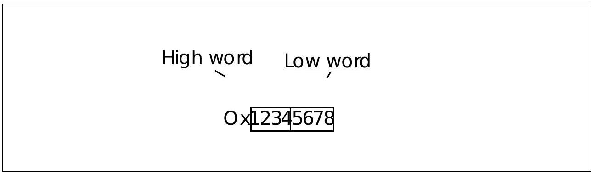
#include "pgUtils.h"
(long) pgAbsoluteValue(long value);
(pg_fixed) pgRoundFixed(pg_fixed fix);
(pg_fixed) pgMultiplyFixed(pg_fixed fix1, pg_fixed fix2);
(pg_fixed) pgDivideFixed(pg_fixed fix1, pg_fixed fix2);
(pg_fixed) pgFixedRatio(short n, short d);pgAbsoluteValue — returns an absolute value.
pgRoundFixed — rounds the fixed number to the nearest whole (but is still a pg_fixed). For example, 0x00018000 will return as 0x00020000.
pgMultiplyFixed - multiplies two fixed decimal numbers (a fixed decimal is a long whose high-order word is the integer and low-order word the fraction. Hence, 0x00018000 = 1.5.
pgDivideFixed — divides fixed number fix1 into fix2 (a fixed decimal is a long whose high-order word is the integer and low-order word the fraction. Hence, 0x00018000 = 1.5).
pgFixedRatio - returns a fixed number which is the ratio of n : d (a fixed decimal is a long whose high-order word is the integer and low-order word the fraction). Hence, 0x00018000 = 1.5.
This section deals exclusively with the Allocation Manager within OpenPaige (the portion of software that creates, manages and disposes memory allocations).
The Allocation Manager used by OpenPaige is full of features that have been requested by developers and used by OpenPaige itself. All these features are available to you as a developer.
Like most of OpenPaige, there are just some basics to know about the Allocation Manager to initially use it effectively.
These are:
/* Allocation: */
memory_ref allocation;
allocation = MemoryAlloc(&mem_globals, sizeof(char), 100, 0);
/* Note: "mem_globals" is the pgm_globals field in the OpenPaige globals, same struct given to pglnit and pgNew. The "allocation" result is not an address, but an "ID" code. To get the address, call: */
char *memory_address;
memory_address = UseMemory(allocation);
/* In the above, not only is the memory addressed returned but the memory is now locked and unpurgable. Thus it is important to "report" when you are through accessing it: */
UnuseMemory(allocation);
/* Tell allocation mgr we are done. */
// Once you are completely through, dispose the allocation:
DisposeMemory(allocation);Since OpenPaige is intended to operate on multiple platforms, it became necessary to remove the majority of its code as far away from a specific operating system as possible.
An integral part of any computer OS is its memory management system. However, no two memory management designs are alike, and for this reason OpenPaige's Allocation Manager works as follows:
MemoryAllocate, MemoryDuplicate and MemoryCopy.To allow for virtual memory and debugging features, OpenPaige must inform the Allocations Manager, as a rule, when it is about to access a block of memory and when it is through accessing that block. The purpose of this is threefold:
Since memory is never allocated directly, the Allocation Manager can provide additional features to a block of memory. Among the features that exist in OpenPaige's Allocation Manager are logical record sizes (a block of memory can be an array of records, as opposed to bytes), nested "lock memory" capability (more than one function can "lock" a block from relocating or purging, in which case the block can not be free for relocation or purging until each "lock" has been "unlocked").
As far as OpenPaige (and your application) is concerned, when memory is allocated. the Allocation Manager does not return a memory address; rather, it returns an ID number called a memory_ref. You can consider a memory_ref as simply a long word whose value, when given later to the Allocation Manager, will identify a block of memory.
Frequent reference is made in this chapter to a memory reference's access counter.
Every block of memory created through the Allocation Manager has an associated access counter. This counter increments every time your program requests the block to become locked (non-relocatable and non-purgeable), and decrements for every request to unlock the block (making it re-locatable and purgeable). The purpose of this is to allow nested "lock/unlock" logic as opposed to a simple locked or unlocked state: using the access counter method, Allocation Manager will make a block relocatable or purgeable only when its access counter is zero. This provides protection against memory blocks moving "out from under" nested situations.
Every allocation made through the Allocation Manager is considered to have two sizes: a logical size and a physical size. (For how this is implemented, see "The extend_size parameter").
The physical size of a block is the actual amount of reserved memory that has been allocated, in bytes; the logical size, however, may or may not be the same amount and in fact is often smaller.
The physical size of an allocation might be, for example, $10 \mathrm{~K}$ but its logical size might be as small as zero. The purpose of the two-size distinction is speed and performance. Depending on the OS, physically resizing a block of memory can consume large amounts of time, particularly in tight situations where thousands of blocks require relocation or purging just to append additional memory to one block. For this reason, the Allocation Manager may elect to allocate a block larger (physical size) than what you have asked for but "tell" you it is a smaller size (logical size); then if you asked for that block to be extended to a large size, the extra space might already exist, in which case the
Allocation Manager merely changes its logical size without any need to expand the block physically.
Generally, it is a block's logical—not physical—size that your program should always work with.
All references in this chapter to purging and purged blocks imply virtual memory, in which a block's contents are saved to a scratch file so that the allocation can be temporarily disposed. Such allocations are not lost, rather they recover on demand by reloading from the scratch file. At no time does the Allocation Manager permanently dispose an allocation unless you explicitly tell it to do so.
The Allocation Manager must have already been started before Y was called. You need to make any function calls to initialize this portion of the software. To start OpenPaige with the Allocation Manager and for details on pgMemStartup, see "Software Startup".
CAUTION: You must not, however, use any functions listed below unless you have called pgMemStartup.
NOTE: You can theoretically use the Allocation Manager, by itself, without ever initializing OpenPaige.
To allocate memory through the Allocation Manager, call one of the following:
(memory_ref) MemoryAlloc (pgm_globals_ptr globals, pg_short_t rec_size, long num_recs, short extend_size);
(memory_ref) MemoryAllocClear (pgm_globals_ptr globals, pg_short_t rec_size, long num_recs, short extend_size);MemoryAlloc allocates a block of memory and returns a memory_ref that identifies that block; MemoryAllocClear is identical except in that it clears the block (sets all bytes to zero).
By allocation is meant a block of memory of some specified byte size that becomes reserved exclusively for your use, guaranteed to remain available until you deällocate that block (using DisposeMemory, below).
Both functions return a memory_ref, which is a reference ID to the allocation. You should neither consider a memory_ref to be an address nor a pointer. Rather, give this reference to the various functions listed below to get a pointer to the memory block, change its allocation size, make it purgeable or nonpurgeable, etc.
The memory_ref returned is always non-zero if it succeeds or MEM_NULL (zero) if it fails. The easiest way to check for failures is by using OpenPaige's try/catch exception handling. See "The TRY/CATCH Mechanism" and the example, "Creating a memory_ref".
The globals parameter must point to the mem_globals you gave to pgMemStartup. Or, if you have initialized OpenPaige with pgInit() you can also access mem_globals through the OpenPaige globals:
paige_globals.mem_globals;The size of the allocation is determined by the formula rec_size * num_recs, where rec_size is a record size, in bytes, and num_recs is the number of such records in the block. Hence, you can create allocations that are considered arrays of records, if necessary.
For example, allocating a block of rec_size = 16 and num_recs = 100, the total byte size of the allocation would be 1600. The intended purpose of allowing a record size, as opposed to always creating blocks consisting of single bytes, is to provide high-level features of accessing record elements.
If you only want a block of bytes, without regard to any "record" size, simply create an allocation with a "record" size of 1.
A rec_size of zero is not allowed; a num_recs value of zero, however, is allowed.
The purpose of the extend_size parameter is to provide the Allocation Manager with some insight, for performance purposes, as to how large the allocation might grow from subsequent SetMemorySize calls.
To understand this fully, a distinction between a memory_ref's "logical size" versus "physical size" must be clarified: when a memory_ref is initially created, its logical size is simply the size that was asked for (which is rec_size * num_recs). However, the actual size allocation can be greater than the logical size, which essentially provides an extra "buffer" that can be utilized to change the logical size later without the necessity to physically resize the allocation through OS calls.
A good example of this would be the allocation of a large string whose initial byte size begins at zero, yet it is expected to grow larger in size as time goes by, perhaps as large as 500 bytes in length. If such a memory allocation started at a physical byte size of zero, then it would become necessary (and very slow) to ask the OS to physically resize the allocation each and every time new byte(s) were appended.
However, if such an allocation were initially created with a 500-byte extend_size (but a logical size of zero), it would never need to physically resize unless or until the string grew larger than 500 bytes.
Hence, MemoryAlloc could create such an allocation whereby the physical size and logical size are different:
MemoryAlloc(&mem_globals, sizeof(byte), 0, 500);The extend_size is therefore an enhancement tool, and should be set to a reasonable amount according to what the resizing forecast holds for that allocation. If the allocation will never be resized, extend_size should be zero.
NOTE: The value of extend_size does not necessarily imply future memory resizing will occur or will not occur, rather it is a performance variable only: the Allocation Manager will still resize a memory allocation even if extend_size is zero (although possibly slower than if extend_size were larger).
See also “Logical vs. Physical Sizes”.
NOTE: The extend_size indicates a number of records (each of size rec_size bytes), not bytes.
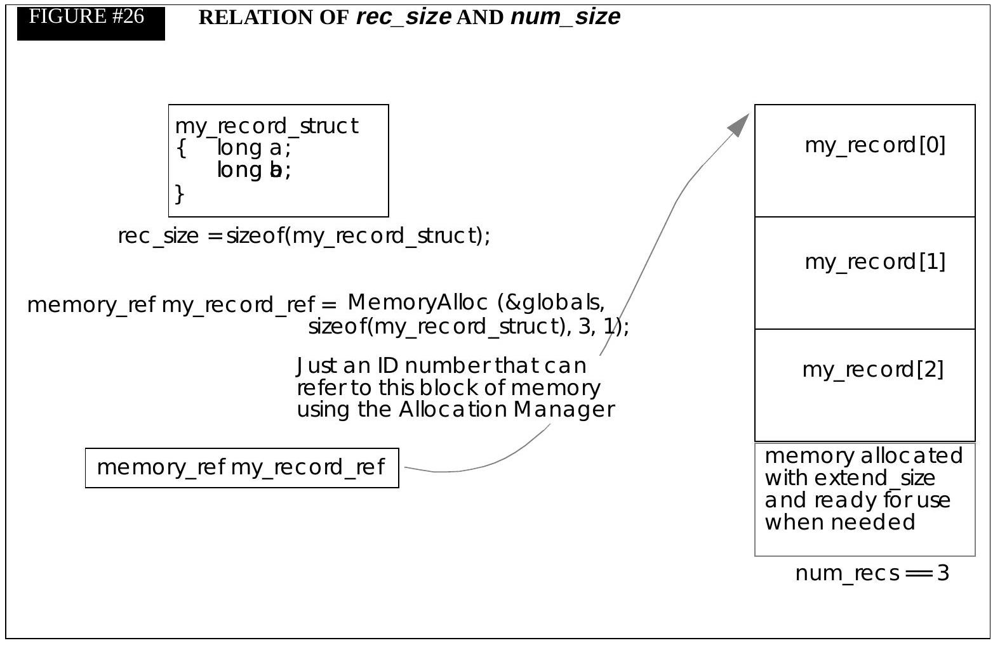
Once you no longer need a memory allocation, pass its memory_ref to the following:
void DisposeMemory (memory_ref ref);DisposeMemory physically disposes the block assigned to ref, and ref is no longer a valid reference thereafter.
(memory_ref) MemoryDuplicate (memory_ref src_ref);
(void) MemoryCopy (memory_ref src_ref, memory_ref target_ref);MemoryDuplicate returns a new memory_ref whose data content and record size is exactly the same as src_ref. In effect, this function returns a "clone" of src_ref, but it is a new, independent memory_ref.
MemoryCopy copies the contents of src_ref into target_ref.
MemoryCopy differs from MemoryDuplicate in that for MemoryCopy both src_ref and target_ref are allocations that already exist. MemoryDuplicate actually creates a new memory_ref for you, so it cannot already exist.
The logical size of target_ref can be any size, even zero, as MemoryDuplicate will change its size as necessary. Record sizes of each memory_ref, however, must match.
The access counters are not set, since the memory is allocated but not in use.
MemoryCopy and MemoryDuplicateWhat is the difference really between
MemoryCopyandMemoryDuplicate? Please do comment on the appropriate situation for using either.
I can clarify the difference in usage between MemoryCopy and MemoryDuplicate. It is very simple:
MemoryDuplicate is for obtaining a "clone" of a memory_ref.MemoryCopy is to fill in a preëxisting memory_ref with the contents of another.In my own code, I am constantly wanting to copy contents of a memory_ref into one that I created earlier. One example of this is some routine that wants to keep copying a bunch of different memory_refs—to copy an array of "tabs" for instance. It would be a lot slower to create a memory_ref with MemoryDuplicate, then dispose it, then create it again, then
then keep copying different memory_refs into it.
To obtain a pointer to a block of memory allocated from MemoryAlloc or MemoryAllocClear, call one of the following:
(void PG_FAR*) UseMemory (memory_ref ref);
(void PG_FAR*) UseForLongTime (memory_ref ref);UseMemory and UseForLongTime takes a memory_ref in ref and returns a pointer to the memory block assigned to that reference. The ref's access counter is incremented, which means that the memory block is now guaranteed to neither relocate nor purge (see “Access Counter").
The primary purpose of UseMemory is to tell the Allocation Manager that a particular block of memory is now "in use", in which case it is marked as unpurgeable and nonrelocatable.
UseForLongTime does exactly the same thing as UseMemory except in that the memory block is relocated in the optimum way, before locking, to avoid memory fragmentation. The purpose of using this function, as opposed to UseMemory, is for situations where you know the block will stay locked for quite a while and you don't want to cause unreasonable fragments.
NOTE: Don't use UseForLongTime too liberally because it is substantially slower than UseMemory (since the machine often needs to relocate the memory).
UseMemory and UseForLongTime calls can be nested, but each must be eventually balanced with UnuseMemory or else the block will remain in a locked state, which in turn can cause memory difficulties such as fragmentation and the inability to change the allocation size.
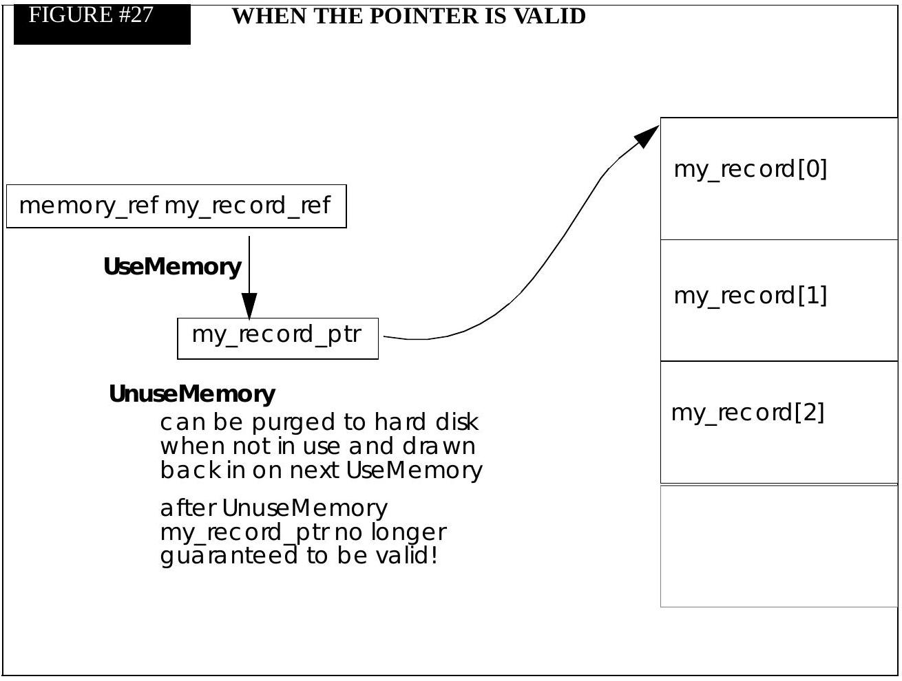
Once you are finished using the pointer returned from UseMemory or UseForLongTime, call the following:
(void) UnuseMemory (memory_ref ref);Essentially, UnuseMemory decrements ref's access counter. If its access counter goes to zero, the allocation is then free to relocate or purge.
It is therefore important that all UseMemory and UseForLongTime calls get eventually balanced with UnuseMemory, otherwise unwanted locked memory fragments will result.
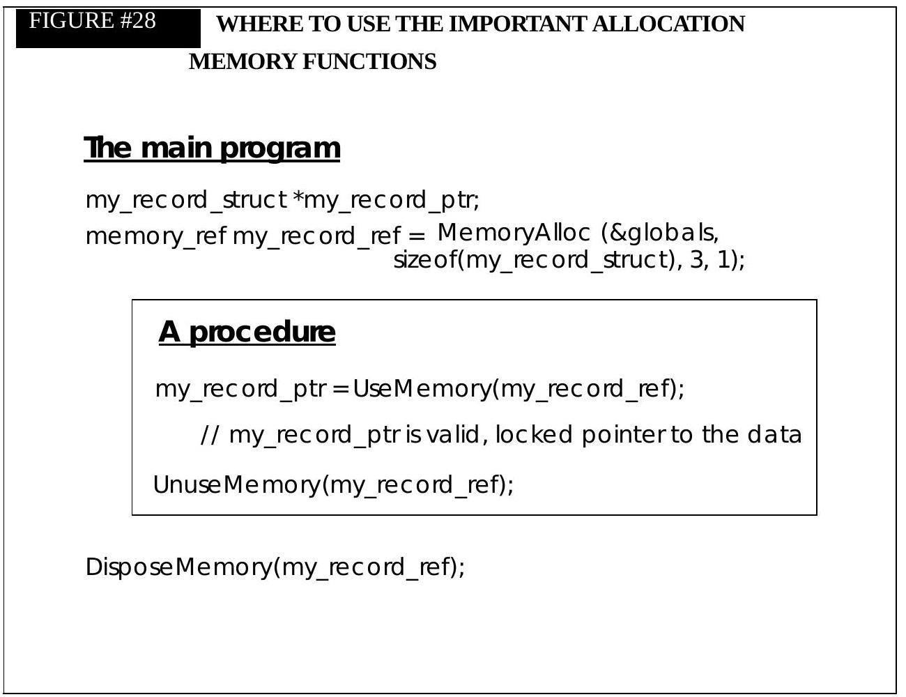
You can obtain a pointer to a specific "record" within a block of memory by calling the following:
(void PG_FAR*) UseMemoryRecord (memory_ref ref, long wanted_rec, long seq_recs_used, short first_use);This function is similar to UseMemory except a pointer to a specified record of an allocation is returned.
The wanted_rec is the (zero-indexed) record number you need a pointer to. The record size (originally defined in rec_size for MemoryAlloc) determines which physical byte the resulting pointer will reference. For instance, if the record size were, 128 bytes, a UseMemoryRecord for wanted_rec of 10 would return a pointer to the 1280th byte.
The seq_recs_used parameter should indicate how many additional sequential records beyond wanted_rec record you want access to. The purpose of this parameter is for future Allocation Manager enhancements in which partial block(s) can be loaded into memory from a purged state. In such a case, UseMemoryRecord needs to know how many additional sequential records, besides wanted_rec, you would like to have loaded into memory if the allocation has been purged.
For example, suppose a block of memory consisting of 1000 records is temporarily purged (which really means its contents have been saved to a "scratch" file and the block currently does not physically exist in memory). Full access to all records would require the Allocation Manager to load the entire allocation (all 1000 records). UseMemoryRecord, however, could get away with loading only a few records within that allocation, but it needs to know how many sequential records you intend to access beyond wanted_rec.
If you want to use all records following wanted_rec, whatever that quantity might be, you can also pass USE_ALL_RECS (value of -1) for seq_recs_used.
If first_use is TRUE, the block's access counter is incremented (same thing as results from a UseMemory call); if first_use is FALSE, the access counter remains unchanged. The purpose of this parameter is for situations where you intend to randomly access many records from the same memory_ref within the same routine, but you essentially need only one UseMemory to lock the allocation; otherwise, you would need to balance every random access with UnuseMemory.
Thus, setting first_use to TRUE is essentially sending the Allocation Manager the message, "Please lock the allocation," then subsequent UseMemoryRecord calls with first_use as FALSE is like saying, "I know the allocation is already locked, so just give me another pointer."
An UnuseMemory call must eventually balance each UseMemoryRecord call that gave TRUE for first_use.
NOTE: OpenPaige loads the whole allocation specified in UseMemoryRecord (does not do partial loads). However, to guarantee future compatibility, you should assume that all records in the allocation lower than wanted_rec and all records greater than wanted_rec + seq_recs_used are purged, not loaded, and therefore not valid should you attempt to access them with the same pointer.
If you simply want a copy of a single record from an allocation, call the following:
void GetMemoryRecord (memory_ref ref, long wanted_rec, void PG_FAR *record);Record number wanted_rec (zero-indexed) in ref is copied to the structure pointed to by record. The access counter in ref is unchanged. Hence, GetMemoryRecord provides a way to get a single record without the need to balance UseMemory and UnuseMemory.
It is your responsibility to make sure record is sufficient size to hold a record from ref.
NOTE: GetMemoryRecord will work correctly regardless of the memory_ref's access counter state and regardless of whether or not the allocation has been purged.
(void) SetMemorySize (memory_ref ref, long wanted_size);
(long) GetMemorySize (memory_ref ref);SetMemorySize changes the logical size of ref to wanted_size. GetMemorySize returns the logical size of ref.
For both functions, the "size" is not a byte size, but rather a record quantity. A SetMemorySize(ref, 10) for an allocation whose record size is 500 bytes, the allocation is set to 5000 bytes, i.e. 10 * 50; SetMemorySize(ref, 10) for a 1-byte record size allocation would result in a logical byte size of 10, and so on.
If SetMemorySize fails for any reason, an OpenPaige exception is raised (see “Exception Handling").
GetMemorySize returns the current size of ((number of records within) ref.
Changing the size of an allocation whose access counter is non-zero might fail! (A non-zero access counter means sufficient UnuseMemory calls have not been made to balance UseMemory calls, resulting in a locked allocation).
NOTE: GetMemorySize will work correctly regardless of the memory_ref's access counter state and regardless of whether or not the allocation has been purged.
(short) GetMemoryRecSize (memory_ref ref);
(long) GetByteSize (memory_ref ref);GetMemoryRecSize returns the record size in ref (which will be whatever size you gave MemoryAlloc or MemoryAllocClear when the allocation was made). This function is useful for generic functions that need to know a memory_ref's record size.
GetByteSize returns the byte size of ref (as opposed to the number of records as in GetMemorySize). Essentially a memory_ref's byte size is its record size times number of logical records.
NOTE: Both functions above will work correctly regardless of the memory_ref's access counter state and regardless of whether or not the allocation has been purged.
Can I make my record size bigger after it is allocated?
No. You can only change the number of records. You can create a new memory_ref and copy the old data into the new one using pgBlockMove.
(void PG_FAR*) InsertMemory (memory_ref ref, long offset, long insert_size);
(void PG_FAR*) AppendMemory (memory_ref ref, long append_size, pg_boolean zero_fill);InsertMemory — inserts insert_size records into ref's allocation at record position offset, then returns a pointer to the first record inserted. The new record(s) are not initialised to anything—the allocation size is simply increased by insert_size and one or more record(s) is moved to make room for the insertion.AppendMemory — does the same thing except the "insertion" is added to the end of the memory block: the allocation is increased by append_size and a pointer to the first record of the appendage is returned. If zero_fill is TRUE, the appended memory is cleared to zeros.Both InsertMemory and AppendMemory assume record quantities, not byte sizes (i.e., InsertMemory for a ref whose record size is 100 will insert 200 bytes if insert_size = 2).
For both functions, the access counter in ref is incremented (or not) according to the following rules:
ref's access counter is zero upon entry, the requested memory is inserted, the access counter is incremented by 1, and the allocation is set to its "used" state (locked, unpurgeable);The reasoning behind these rules for the access counter when inserting memory is the common situation wherein multiple insertions need to occur within a loop. Since InsertMemory and AppendMemory allow an access counter of 1, each repetitive insertion can avoid the requirement of calling UnuseMemory.
CAUTION: For insertions with an access counter of 1, the pointer you had prior to InsertMemory or AppendMemory might be invalid after memory has been inserted (the block might relocate). Therefore, always update your pointer with whatever is obtained from the function result.
UnuseMemory after InsertMemory or AppendMemorySo do I need to do a
UnuseMemoryafter these?
InsertMemory and AppendMemory really are the same as SetMemorySize to a larger number of records, then a (single) UseMemory. So you need to do a single UnuseMemory() after a series of repetitive inserts. In other words, if you called InsertMemory() or AppendMemory() 100 times, you only need to do one UnuseMemory().
struct my_special_struct
{
short index_number;
}
for (i = 0, i < 100, i++)
{
my_new_record = InsertMemory(the_ref, i, sizeof(my_special_struct));
my_new_record.index_number = i;
}
UnuseMemory(the_ref);(void) DeleteMemory (memory_ref ref, long offset, long delete_size);DeleteMemory deletes delete_size records in ref beginning at offset. Both delete_size and offset are record quantities, not bytes.
The access counter is not changed by this function. However, the access counter must be zero when this function is called.
NOTE: All references in the Chapter to "purging" and "purged blocks" imply virtual memory, in which a block's contents are saved to a scratch file so that the allocation can be temporarily disposed. If the scratch file was not set up when the Allocation Manager was initialized, there will be no purging.
NOTE: The topic covered herein is not to be confused with "purging" resources on the Mac. Allocation Manager knows nothing about the Mac other than basic things about the file system. It handles its own "purging" without the Resource Manager.
An allocation is said to be "purged" when additional memory space needs to be freed, thus an allocation is saved to a "scratch" file and it is temporarily disposed.
The priority for purging, i.e., what memory_refs should get purged first, can be controlled by calling the following:
(void) SetMemoryPurge (memory_ref ref, short purge_priority, pg_boolean no_data_save);The ref allocation's purging priority is set to purge_priority. The purge_priority can be any number between 0 and 255, with 0 as the lowest priority (will get purged first above all others). The purge_priority parameter can also be NO_PURGING_STATUS (OXFF), in which case it will never be purged.
If no_data_save is TRUE, the contents of ref do not need to be saved to a scratch file when purged. Another way to state this is a ref with TRUE for no_data_save is known to have nothing in its contents of any value or consequence; thus, Allocation Manager can simply purge it without saving any of its contents.
An example of a memory_ref that could be set for no_data_save would be an "offscreen bitmap" buffer. After it is used to transfer an image, an application might not care if all its contents get temporarily disposed, because on the next usage whole new contents (new bits) will be created all over again anyway.
ref's access counter state and regardless of whether or not it is purged.memory_ref whose access counter is nonzero will not be purged, even if its purge priority is zero.NO_PURGING_STATUS on a memory_ref that has already been purged will not take effect until it is unpurged. In other words, changing purge status does not automatically reload purged allocations—you still need to access its pointer (such as UseMemory) if you want its contents loaded into memory.(pg_error) MemoryPurge (pgm_globals_ptr globals, long minimum_amount, memory_ref mask_ref);MemoryPurge will purge memory_ref(s) until at least minimum_amount of memory (in bytes) has become available.
The globals parameter must be a pointer to the same structure given to MemoryAlloc (which is also the mem_globals field within the structure given to pgInit).
If mask_ref is non-null, that memory_ref is considered "masked" (protected) and will not be purged during this process.
All purgeable, unlocked allocations will be purged, one at a time and in the purge priority they are set for (lowest purge priorities are taken first) until minimum_amount of available space has been achieved.
If minimum_amount fails to become available, even after purging every eligible allocation, MemoryPurge will return an error (see "Error Codes" in the Appendix); if successful, NO_ERROR (0) will be the function result.
The minimum_amount specified is for the total memory available, which means if there is already enough or nearly as much available as minimum_amount, very little will get purged.
pgInit for max_memory minus the total physical sizes of all existing memory_refs—see pgInit.MemoryPurge gets called for you as required for allocations and resizing blocks. The function has been provided mainly for freeing memory for objects that you are not allocating with the OpenPaige Allocation Manager.minimum_amount can be allocated, because the available memory might not be contiguous.(void) pgMemShutdown (pgm_globals_ptr mem_globals);Call this function once you are through using the Allocation Manager. Be sure it is called after pgShutdown.
NOTE: This function is not necessary if you will be doing ExitToShell() on Macintosh.
See “OpenPaige Shutdown”.
(void) UnuseAndDispose (memory_ref ref);UnuseAndDispose decrements the access counter in ref, then disposes the allocation. This function does exactly the same thing as:
UnuseMemory(ref);
DisposeMemory(ref);(pgm_globals_ptr) GetGlobalsFromRef (memory_ref ref);GetGlobalsFromRef returns a pointer to pgm_globals located from an existing memory_ref. This function is useful for situations where you do not have access to the globals structure. Any valid, non-disposed memory_ref, locked or unlocked, purged or not, can be used for ref. For more information on getting pgm_globals_ptr see “Get globals from pgref, paigerec_ptr, etc.".
#include "pgTraps.h"
(memory_ref) HandleToMemory (pgm_globals *mem_globals, Handle h, pg_short_t rec_size);
(Handle) MemoryToHandle (memory_ref ref);HandleToMemory accepts Handle h and returns a memory_ref for that Handle.
FUNCTION RESULT: After this function is called, the Handle is now "owned" by the Allocation Manager, which is to say you should no longer access nor dispose that Handle. Access to the Handle's contents must thenceforth be made using the functions given above (UseMemory, UseMemoryRecord, etc.).
The mem_globals parameter must point to the same structure as given to MemoryAlloc.
The rec_size must contain the record size for the new memory_ref, which must be an even multiple of the original Handle. If unknown, then make rec_size = 1.
It does not matter if Handle h is locked or unlocked, but it should at least temporarily be unpurgeable.
MemoryToHandle performs the reverse: it returns a Handle built from memory_ref ref. Again, once this call is made, ref is no longer valid and must not be given to any Allocation Manager functions.
NOTE: The term Handle is typedefed from the Windows HANDLE, so the two terms are synonymous.
NOTE: These functions do not perform huge copies. Rather, they convert Handles to memory_refs and vice versa by appending some special information before and after the data contents, or removing this appendage. So it is generally safe to do HandleToMemory, MemoryToHandle under fairly tight situations that could not withstand the doubling of a Handle's size.
There are two compiled versions of OpenPaige software, one for "debug mode" and one or "non-debug" or runtime mode.
In debug mode, memory_refs are checked for validity, including the verification of appropriate access counters, each time they are given to one of the functions listed above. While this significantly reduces the speed of execution, it does aid substantially in locating bugs that would otherwise crash your system.
For example, calling SetMemorySize for an allocation that is currently "in use" (access counter nonzero) could fail and/or crash your program. Under debug mode, however, you would be warned immediately if an attempt to change the size of an allocation was made on a locked block.
There are two sets of Macintosh (or Power Mac) object code libraries: one for "debug" and the other for "non-debug." As a general rule, you should use the debug versions to develop your application, then switch to non-debug before release (non-debug runs much faster).
NOTE: Object code for "debug" mode is not supported on Windows. This is because Windows General Protection Mode can be used instead and is generally superior.
Debug/non-debug is controlled by the following #ifdef in CPUDefs.h:
#define PG_DEBUGIf that #define exists, the source files are compiled in "debug" mode.
To run OpenPaige debug libraries, you must include pgDebug.c in your project. When doing so, you can place a source-level debugger break at the location shown below; when the Allocation Manager detects a problem, the code will break at this spot.
char pgSourceDebugBreak(memory_ref offending_ref, char *debug_str)
{
mem_rec PG_FAR *bad_mem_rec; // This gets coerced to examine it
char *examine;
}
/* ****** DEBUG BREAK - MEMORY ERROR! ****** */
examine = debug_str; // <~~ Place debugger break here!
bad_mem_rec = (mem_rec PG_FAR*) pgMemoryPtr(offending_ref);
pgFreePtr(offending_ref);
/* ****** DEBUG BREAK - MEMORY ERROR! ****** */NOTE: The error message string is a pascal string.
The debugger assert is simply a debugger break with one of the following messages:
Out of memory — Block of requested size cannot be allocated (or block cannot be resized). If virtual memory has been enabled, this will only happen if the block is so huge there is insufficient, contiguous memory available.Purge file not open — Memory needs to be purged but "scratch" file doesn't exist or is closed.Attempt to resize locked memory — Allocation is locked, yet a SetMemorySize has been attempted.NIL memory_ref — memory_ref is a null pointer and/or an address inside of it is null.Bogus memory_ref address — An address in a memory_ref is bad (would result in a bus error for Mac).Internal damage in memory_ref — memory_ref's address OK but certain characteristics are missing (so it is assumed “damaged" or overwritten).Overwrite error — last 1 of 4 bytes beyond the logical size of a memory_ref has been overwritten.Access counter invalid for operation — access counter is illegal for given function. Examples:
SetMemorySize and access != 0 (illegal); UnuseMemory and access counter == 0 (illegal); DisposeMemory and access counter != 0 (illegal).Bogus memory_ref — memory_ref given is not a memory_ref but some other address.Operation on disposed memory_ref — memory_ref given has been disposed.Error in purging — An allocation was writing to a scratch file and I/O error resulted (such as out of space).Error in un-purging — Read error occurred while recovering a purged allocation from scratch file.Attempt to access record out of range — UseMemoryRecord asking for a record beyond the size of the allocation.Structure integrity failed — Structural damage has occurred to the style_info or par_info run. For example, a style run might (incorrectly) reference a style_info that does not exist.The standard purge function is a built-in part of the Allocation Manager that purges (disposes) memory that is not being used to make room for new allocations. The blocks to be purged are saved to a "temp" file so they can be resurrected later when asked to be used by OpenPaige or by the application.
If necessary, you can replace the standard purge function with one of your own. To do so, first declare a function as follows:
PG_FN_PASCAL pg_error my_purge_proc (memory_ref ref_to_purge, pgm_globals_ptr mem_globals, short verb);In the pgm_globals structure (same one passed to MemoryAlloc), the purge field contains a pointer to the purge function. What you need to do is place a pointer to your purge function, as defined above, into that field:
paige_rsrv.mem_globals.purge = my_purge_proc;The paige_rsrv variable is the same structure given to pgInit, and mem_globals is the Allocation Manager subset (same one given to MemoryAlloc).
When the Allocation Manager purges memory, it locates memory refs that are purgeable and passes each of them, one at a time, to the purge function; additionally, when a memory_ref needs to be reloaded (unpurged), the purge function is called again to unpurge the data. The standard purge function handles this by saving the contents of the memory_ref to a temporary file, then setting the ref's byte size to sizeof(mem_rec); then when unpurging, the allocation is resized to the original size and data is read from the temp file.
The temporary file reference used by the standard purge function is stored in the purge_ref_con field in pgm_globals (see "Memory globals").
In addition to purging and unpurging, the purge function is also called to initialize "virtual memory" and to completely dispose an allocation that is currently purged.
Whether the purge function is getting called to purge, unpurge, initialise or dispose an allocation depends on the verb parameter, which will be one of the following:
typedef enum
{
purge_init, // Initialise VM
purge_memory, // Purge the reference
unpurge_memory, // Unpurge the reference
dispose_purge // Purged ref will be disposed
};For each verb, the purge function must perform the following:
purge_init — "Virtual Memory" must be set up. When purge_init is the reason for the function call, ref_to_purge will be NULL. The standard function initialises the temporary file (whose file reference will already be contained in mem_globals > purge_ref_con).purge_memory — The ref_to_purge memory must be purged. The Allocation Manager will only call with purge_memory if the reference is not yet purged; i.e., it won't try to purge the same reference twice. The standard purge function saves ref_to_purge's data to the temporary file and sets the physical allocation size to sizeof(mem_rec).unpurge_memory — The ref_to_purge memory must be unpurged. The Allocation Manager will only call with unpurge_memory if the reference has been purged; i.e., it won't try to unpurge the same reference twice. The standard purge function resets the physical size of ref_to_purge and loads the data from the temporary file.dispose_purge — The ref_to_purge is already purged but is about to be disposed. The purge function does not dispose the memory; rather, it does whatever is necessary knowing that the purged allocation will be disposed forever. The standard purge function "deletes" the saved data on the temp file, and does nothing else.FUNCTION RESULT: The purge function should return NO_ERROR (zero) if all was successful; otherwise it should return the appropriate error code per pgErrors.h.
The following structure is used by the Allocation Manager (and is also a subset of pg_globals):
struct pgm_globals
{
short signature; /* Used for checking/debugging */
pg_short_t debug_flags; /* Debug mode, if any */
pg_handle master_handle; /* HANDLE for master list (Windows only) */
pg_handle spare_tire; /* Used to free up some memory in tight situations */
master_list_ptr master_list; /* Contains list of all active memory_refs */
size_t next_master; /* Next available space in master_list */
size_t total_unpurged; /* Total # of bytes allocated not purged */
size_t max_memory; /* Maximum memory (set by app) */
size_t purge_threshold; /* Amount extra to purge */
void PG_FAR *machine_var; /* Machine-specific generic ptr */
mem_debug_proc debug_proc; /* Called when a bug is detected */
purge_proc purge; /* Called to purge/unpurge memory */
free_memory_proc free_memory; /* Called to free up miscellaneous memory */
long purge_ref_con; /* Reference for purge proc */
memory_ref purge_info; /* Machine-based purge information */
memory_ref freemem_info; /* List of pg_ref(s) for cache feature (2.0) */
long next_mem_id; /* Used for unique ID's assigned to refs */
long current_id; /* ID to use for MemoryAlloc's */
long active_id; /* Which ID to suppress, if any, for purging */
long last_message; /* Last message in exception handling */
pg_fail_info_ptr top_fail_info; /* Current exception in linked list */
void PG_FAR * last_ref; /* Last reference - used by external failure
processing TRS/OITC */
pg_error_handler last_handler; /* Last app handler before Paige */
pg_error last_error; /* Last reported error */
#ifdef PG_DEBUG
memory_ref debug_check; /* Used for special-case debugging */
memory_ref dispose_check; /* Used for special-case debugging on DisposeMemory */
short debug_access; /* Used with above field */
#endif
void PG_FAR *app_globals; /* Ptr to globals for PAIGE, etc. */
long creator; /* For Mac file I/O */
long fileType; /* For Mac file I/O */
};For more information on pg_globals, see "Changing Globals". For more information on error codes, see "Error Codes"
OpenPaige provides a fairly straightforward method of detecting runtime errors (such as disk I/O errors, memory errors, etc.) without the requirement of checking every function result or excessive code.
This is accomplished by using a set of predefined macros: PG_TRY, PG_CATCH, and PG_ENDTRY.
Although this mechanism is patterned after exception handling in C++, you do not need to be using C++ to utilize OpenPaige error detection features (nor are any C++ "header" files or libraries required).
Anywhere in your application that calls an OpenPaige function that can fail for "legitimate" reasons, such as allocating memory or reading/writing files, you simply bracket your code as follows:
PG_TRY (&mem_rsrv)
{
/* ... make calls to OpenPaige functions here such as allocating memory, or pgNew, or pgCopy, etc -- anything that can abort from an error. */
}
PG_CATCH
{
/* ... if any error causes OpenPaige to abort a function, this part of your code is executed; otherwise this part is not executed. Hence you would do whatever is appropriate here such as an error alert to user. */
}
PG_ENDTRY;
{
/* ... code is executed here if no error; also it is executed here if the code under PG_CATCH does nothing to abort the program any further. */
}The above example shows the simplest form of error detection: none of the code under PG_TRY is necessarily required to check for errors at all since anything fatal within OpenPaige (such as out of memory or a disk error) will throw CPU execution into the first line of code under PG_CATCH. This is done automatically.
The parameter mem_rsrv after PG_TRY must be a pointer to the global structure given to pgMemStartup earlier (see "Software Startup" for information about pgMemStartup).
NOTE: PG_TRY, PG_CATCH, and PG_ENDTRY macros are automatically available by including Paige.h (the actual definitions for these exist in pgExceps.h which is #included in Paige.h).
If your code executes under PG_CATCH that means OpenPaige aborted something due to a fatal error. You can learn what the error code was by examining the memory globals (same structure given to PG_TRY) as follows:
mem_rsrv.last_error;PG_TRY, PG_CATCH, and PG_ENDTRY can be "nested" throughout your application, in as many places as required. What literally occurs is that the CPU gets forced to the PG_CATCH that corresponds to the most recent PG_TRY; then if the code under PG_CATCH decides to abort that section of code, it can force an additional exception using pgFailure (given below), in which case the next most recent PG_CATCH (from some other place in your program, if any) gets executed. In short, TRY and CATCH can be effectively "daisy chained" in this fashion so any fatal error can cycle up through any level of nested subroutines - pall without the need to even check for errors!
There are many situations where your code might need to "force" an exception after detecting additional errors while executing code between PG_TRY and PG_CATCH. There are also many situations where your PG_CATCH code needs to abort the entire
subroutine, returning control to some other part of the program. The following functions are available for this purpose:
(void) pgFailure (pgm_globals_ptr globals, pg_error error, long message);This function forces unconditional execution to the code under PG_CATCH that belongs to the most recent PG_TRY. For example, if you use pgFailure while executing the code under PG_TRY, then the first line under PG_CATCH in that section will get executed; if you use pgFailure under PG_CATCH, then the first line under PG_CATCH belonging to the previous PG_TRY (somewhere higher up in your program) gets executed. You would most often use pgFailure when executing PG_CATCH to completely abort an operation.
The globals parameter must be a pointer to pgm_globals (same structure given in pgMemStartup). The error and message parameters are stored in globals -> last_error and globals -> last_message, respectively, and can be any value(s) appropriate.
(void) pgFailNIL (pgm_globals_ptr globals, void PG_FAR *allocation);This function can be used to force an exception if allocation parameter is a null pointer. The globals parameter must be a pointer to pgm_globals (same structure given in pgMemStartup).
What actually occurs when pgFailNIL is called is the following:
if (!allocation)
pgFailure(globals, NO_MEMORY_ERR, 0);
#include "pgSetJmp.h" // which is included in Paige.h
(void) pgFailError(pgm_globals_ptr globals, pg_error error);This function can be used to force an exception if error parameter is non-zero. The globals parameter must be a pointer to pgm_globals (same structure given in pgMemStartup).
What actually occurs when pgFailError is called is the following:
if (error)
pgFailure(globals, error, 0);
#include "pgSetJmp.h" // which is included in Paige.h
(void) pgFailError(pgm_globals_ptr globals, pg_error acceptable_error, pg_error actual_error);This function can be used to force an exception if actual_error parameter is non-zero and it does not equal acceptable_error. The globals parameter must be a pointer to pgm_globals (same structure given in pgMemStartup).
A typical use of this function is to force an exception for file I/O errors unless the error is nonfatal. For example, there might be some code that keeps reading a data file until end-of-file error occurs. In such a case, you would want to abort if an error was detected other than end-of-file error.
What actually occurs when pgFailNotError is called is the following:
if (error)
if (actual_error != acceptable_error)
pgFailure(globals, actual_error, 0);
#include "pgSetJmp.h" // which is included in Paige.h
(void) pgFailBoolean(pgm_globals_ptr pgm_globals_p, pg_boolean b);This function can be used to force an exception if b is TRUE. The globals parameter must be a pointer to pgm_globals (same structure given in pgMemStartup).
What actually occurs when pgFailBoolean is called is the following:
if (b)
pgFailure(globals, BOOLEAN_EXCEPTION, 0);If you are using C++ and its TRY/CATCH mechanism, you can "bridge" an OpenPaige failure to the standard C++ exception handling by calling "Failure" (defined in C++ headers). Here's an example:
PG_CATCHFailure(mem_globals.last_error, mem_globals.last_message);memory_refLet's take a simple but common example of using this method to detect insufficient memory when attempting to create a memory_ref. Here's how it would look (the
mem_globals variable is the same structure that you gave to pgMemStartup when you initialize OpenPaige):
{
memory_ref SomeAllocation;
PG_TRY(&mem_globals)
{
SomeAllocation = MemoryAlloc(&mem_globals, 1, 100000, 0};
/* More code follows, but only gets executed if above allocation was successful. */ }
/* If above code succeeded, PG_CATCH does *NOT* get executed. */
PG_CATCH
{
/* If it gets here, your allocation failed! */
DisposeFailedMemory(&mem_globals);
CautionAlert( ... ) /* Alert user that attempt failed or whatevs */
}
PG_ENDTRY;
/* ^^ Must be given to balance PG_TRY statement */When you execute the above code, by virtue of making the PG_TRY statement, OpenPaige now knows that any failure to create memory should invoke the exception handler and jump to your PG_CATCH statement. Hence, if MemoryAlloc fails, the CPU is immediately forced to the line that contains PG_CATCH. At that place in your code you can do whatever to recover or alert the user or raise your own exception, etc.
The above example is the simplest of all cases since it only creates one memory_ref, hence, there really is nothing to "recover." It gets slightly more involved when you create, say, multiple memory_refs and you need to dispose the allocations that succeeded. One way to handle this is by setting them all to NULL so you know which ones succeeded in PG_CATCH:
{
memory_ref allocation1, allocation2, allocation3;
allocation1 = allocation2 = allocation3 = MEM_NULL;
/* ^^^ set all to zero ^^^ */
PG_TRY(&mem_globals)
{
allocation1 = MemoryAlloc(&mem_globals, 1, 100000, 0);
allocation2 = MemoryAlloc(&mem_globals, 1, 100000, 0);
allocation3 = MemoryAlloc(&mem_globals, 1, 100000, 0);
}
/* if ALL above code succeeded, PG_CATCH does not get executed */
PG_CATCH
{
/* if it gets here, ONE of the allocations failed! */
if (allocation1)
DisposeFailedMemory(allocation1);
if (allocation2)
DisposeFailedMemory(allocation2);
if (allocation3)
DisposeFailedMemory(allocation3);
}
{
PG_ENDTRY;
}
}In the above example, PG_CATCH gets automatically executed upon the first failure of the three MemoryAllocs. At that time, we dispose only the memory_refs that are non-NULL (which means they were successfully created).
NOTE: We call DisposeFailedMemory instead of DisposeMemory. This is a special "dispose" that OpenPaige provides for this case. It disposes the memory_ref regardless of its locked or "used" state so it doesn't jump into the low-level debugger.
The previous examples illustrate where OpenPaige itself, by virtue of MemoryAlloc, automatically invokes the exception handler. There will be other cases, however, when you want to cause a similar exception for your own error checking (but you haven't called an OpenPaige function). One example of this would be calling NewHandle and having it return NULL (this indicating it failed). Here's how to do that:
{
Handle h;
PG_TRY(&mem_globals)
{
h = NewHandle(100000);
pgFailNIL(&mem_globals, h);
/* Jump to PG_CATCH if h == nil */
}
// more code if above succeeds
PG_CATCH
{
/* if it gets here, NewHandle() failed */
}
PG_ENDTRY;
}In the above, we use pgFailNIL, which checks for h being a null pointer and if so, throws an exception (causing PG_CATCH immediately to execute).
There are other pgFailxxx functions to raise an exception in other ways. Using pgFailure, for example forces an exception unconditionally (see pgSetJmp.h to see the various functions and/or the docs on this).
There is the possibility you might need to recover from a failed pgNew (also pgCopy would be same thing). You do this the same way as in my second example of creating allocations—except that, for a pg_ref, you call a special error-recovery dispose:
{
pg_ref MyNewPG;
pg_ref = MEM_NULL;
PG_TRY(&mem_globals)
{
MyNewPG = pgNew(.., ..);
}
/* If ALL above code succeeded, "PG_CATCH" does NOT get executed. */
PG_CATCH
{
/* If it gets here, then OpenPaige did not succeed and raised an exception */
pgFailureDispose(MyNewPG);
}
PG_ENDTRY;
}The function pgFailureDispose is called for situations like the above when none or only part of the pg_ref may have been created.
NOTE: pgFailureDispose can accept a "null" pg_ref, so if you initially set the pg_ref to MEM_NULL you can pass it to pgFailureDispose safely.
pg_ref, paige_rec_ptr, etc.So I am buried deep within a bunch of functions and I need to do a
PG_TRY/PG_CATCH.All I have is a
pg_ref.How do I get the globals I need for
PG_TRY?
The availability of "memory globals" will generally depend on the kind of program you are developing.
In a regular application, you generally keep memory globals around as a static record that is accessible by any module of the program. Hence, the "availability" of globals is merely a matter of design, usually by including the necessary application header file. Example:
//Inside one of your application headers:
extern pg_globals pgm_globals mem_globals;Hence, mem_globals is available anywhere you include the above header.
For certain circumstances where only a memory_ref (or a pg_ref) is available, however, you can also get the memory globals by calling GetGlobalsFromRef.
Suppose, for instance, all you had available is ref, where ref is a memory ref (or a pg_ref). You can get a copy of memory globals as follows:
pgm_globals_ptr mem_globals;
mem_globals = GetGlobalsFromRef(ref);Getting a pgm_globals_ptr from a paige_rec_ptr:
pgm_globals_ptr my_pgm_globals = pgp -> globals -> mem_globals;
PG_TRY (my_pgm_globals)
{
/* ... */
}
PG_CATCH
{
/* ... */
}
PG_ENDTRY
{
/* ... */
}Because of the workload involved, chapter 27 ("Customising OpenPaige") is intentionally missing. The issue will be rectified but for now, users are referred to chap27.pdf in this directory.
A style sheet in OpenPaige is a text and/or paragraph format that is "shared" by various characters in a document. Although a style sheet contains the same info as regular formats, affected text essentially "points" to these styles. A change to a single style sheet will change every place in the text that uses that style.
NOTE: The style_info record structure is described in "style_info".
(short) pgNewStyle (pg_ref pg, style_info_ptr new_style, font_info_ptr style_font);Establishes a new style sheet and returns a unique ID code for that style.
FUNCTION RESULT: No text is changed from this function; all that occurs is new_style is added internally to pg, style_font is added (if it does not already exist) and assigned to the new style; the style is assigned a unique number which can be referenced in subsequent calls that affect such styles. The reference number for the style will never equal zero.
new_style can contain anything that a regular text style contains.
(void) pgRemoveStyle (pg_ref pg, short style_id);Removes the style sheet referenced as style_id. Immediately after this call is made, style_id will no longer be valid.
However, the text is not affected. The style_info that used to be a style sheet simply changes to a regular style run item; locations in the text that are set to style_id will retain their styles but each occurrence will no longer be linked with the style_sheet reference.
(short) pgNumStyles (pg_ref pg);
(short) pgNumParStyles (pg_ref pg);Returns the total number of style sheets in pg; pgNumParStyles() returns the total number of paragraph style sheets.
short pgGetIndStyleSheet (pg_ref pg, short index, style_info_ptr stylesheet);
short pgGetIndParStyleSheet (pg_ref pg, short index, style_info_ptr stylesheet);Returns the nth style sheet found in pg. The style sheet to return is given in index (zero-indexed quantity); pgGetIndStyleSheet() returns a regular (text) style while pgGetIndParStyleSheet() returns a paragraph style sheet.
Using these in conjunction with pgNumStyles() and pgNumParStyles() can provide "random access" to style sheets existing in pg.
If the requested style sheet is found and stylesheet is non-null, this style_info or par_info is initialised to the settings of the sheet.
FUNCTION RESULT: If index style sheet exists, its ID is returned. If no such style sheet exists, zero is returned.
short pgFindStyleSheet (pg_ref pg, par_info_ptr compare_style, par_info_ptr mask);This function returns the style sheet ID, if any, whose style_info fields precisely match compare_style. If no match is found, zero is returned.
The mask parameter can be used to do partial or selective comparisons. If mask is non-null, only the style_info fields that are non-zero in this structure are compared.
For example, to locate a style sheet that had a specific value in style_info.user_id, clear the mask to all zeros except user_id set to -1.
short pgFindParStyleSheet (pg_ref pg, par_info_ptr compare_style, par_info_ptr mask);This function is identical to pgFindStyleSheet except in that it is used for paragraph style sheets.
(pg_boolean) pgGetStyle (pg_ref pg, short style_id, style_info_ptr style);Returns the style_info record belonging to style sheet style_id. The style_id must be valid.
NOTE: If you want to get the associated font, use pgGetFontInfoRec.
If style_id is not a valid stylesheet ID, the function returns FALSE and the style_info record is not set to anything certain.
(void) pgChangeStyle (pg_ref pg, short style_id, style_info_ptr style, font_info_ptr style_font, short draw_mode);Changes the style sheet style_id to the contents of *style. All text is affected that is set to this style sheet. Every character in the text that is set to this style—or subset thereof—will change as follows: if the style_info attribute is the same as the original stylesheet, that same attribute changes to the new setting. If the attribute is different (i.e. has been changed by user), that attribute remains unchanged.
For example, suppose you created a style sheet for Helvetica-Bold-Italic and applied that sheet to the whole document. The user underlines a word (making it Helvetica-BoldItalic-Underline), then you change the style sheet to Times-Italic. The underlined word will change to Times-Italic but will retain the underline.
If style_font is non-NULL, the font is also changed (otherwise the font already assigned to the style is retained).
If draw_mode is non-zero, the text is redrawn in the mode specified (see "Draw Modes" for more about the display modes for pgDisplay). In most cases, draw_mode should be best_way.
(void) pgSetStyleSheet (pg_ref pg, select_pair_ptr selection, short style_id, short draw_mode);
(pg_boolean) pgGetStyleSheet (pg_ref pg, select_pair_ptr selection, short PG_FAR *style_id);The pgSetStyleSheet function changes all the text in the specified selection to style sheet reference style_id.
NOTE: This differs from pgChangeStyle since, in this case, you are changing a selection range to assume the format of a specific style sheet—you are not changing the style sheet itself.
The selection parameter operates in the same way as all functions that accept a select_pair (see "Selection range" for more information about the select_pair record).
If draw_mode is non-zero, the text is redrawn in the mode specified (see "Draw Modes" for more information about display modes for pgDisplay). In most cases, draw_mode should be best_way.
To find out what style sheet, if any, is applied to an area of text, use pgGetStyleSheet.
FUNCTION RESULT: pgGetStyleSheet returns the style sheet belonging to the specified selection range. On return, if *style_id contains zero, no single style sheets affect the selected text, otherwise the stylesheet ID is placed in *style_id. Additionally, if the function result is TRUE, the style sheet is consistent throughout the selection range.
For more on styles and masks see “Changing Styles”.
NOTE: If the function returns TRUE, yet *style_id is zero, that means there are no style sheets anywhere within the selection. But if the function returns FALSE and *style_id is zero, there are some style sheets within the selection but they are not consistent.
(short) pgNewParStyle (pg_ref pg, par_info_ptr new_style);
(void) pgRemoveParStyle (pg_ref pg, short style_id);
(short) pgNumParStyles (pg_ref pg);
(short) pgGetParStyle (pg_ref pg, short style_id, par_info_ptr style);
(void) pgChangeParStyle (pg_ref pg, short style_id, par_info_ptr style, short draw_mode);
(void) pgSetParStyleSheet (pg_ref pg, select_pair_ptr selection, short style_id, short draw_mode);
(pg_boolean) pgGetParStyleSheet (pg_ref pg, select_pair_ptr selection, short PG_FAR *style_id);All of the above functions are identical to their counterparts, but are used for paragraph format style sheets. OpenPaige maintains a separate list for paragraph formats.
style_sheet_id "negative"?I was walking through the
style_inforecords in thepg_refand noticed that some of them have negativestyle_sheet_idvalues. How/why does this happen?
If your pg_ref has any stylesheets applied to text, when you change any of that text to additional style attributes, OpenPaige negates the style_sheet_id. This is how it keeps track of "offspring" style sheets; upōn closer inspection you might notice that the "parent" style sheet ID is the compliment (negation) of this value, i.e. of parent sheet is 17, a
style_info.style_sheet id of -17 was originally style number 17 before changes were made.
Would it be possible for me to set up the style_info records myself and put my own
style_sheetid, then usepgAddStyleInfo, or would this cause problems for OpenPaige?
Actually, I do not think that method will work… and in fact after investigating the source code more carefully there are some problems with my suggestions to implement "global" stylesheets.
First, I'll outline what the problems are and then I'll suggest workarounds.
Problem number 1 is the fact that OpenPaige maintains style sheet ID's in ways that you might not expect. For example, to keep track of "clone" stylesheets (sheets that get altered slightly but still affected by global changes), OpenPaige negates the stylesheet ID so it knows who the "parent" style is. Due to this, I have a feeling your pg_ref would get messed up if you start assigning your own ID's.
Problem number 2 has to do with a field in style_info called used_ctr. This field gets incremented for every occurrence of that style in the text stream and gets decremented every time that style is deleted from the text. Once it decrements to zero, OpenPaige will delete the style_info record. For "stylesheet" info records, however, it starts the used_ctr at 1 so it doesn't get deleted, except at the moment of calling the delete-stylesheet function, in which case the used_ctr is decremented so it deletes once no text is using it.
The reason no. 3 is a problem is that OpenPaige forces this field to zero when you add new style_info records, even if you only use the lower-level pgAddStyleInfo.
I think you will be better off by literally adding stylesheets the "normal" way (e.g. pgNewStyle, pgChangeStyle, etc.), also don't try to force your own "ID" into the target pg_ref.
When I say don't "force your own ID" I mean just let OpenPaige assign ID's to the stylesheets. That doesn't mean you can't have your own ID's (such as your resource ID's) and it also does not mean you even need to do anything with the stylesheet ID's that OpenPaige returns. But, I wouldn't mess with stylesheet_id in the style_info records.
In light of this, I would slightly modify my suggestions in the last message as follows:
pg_ref, use pgFindStyleSheet to do an actual comparison against your style(s).pgFindStyleSheet to see if it exists, then change it by referring to it with the "local" ID OpenPaige returns from that function.refcon fields in the style_info record to store my own "ID" numbers to identify exact style sheets. Specifically, the fields you can choose from in style_info for this purpose are user_id, user_data, and user_data2. Remember that OpenPaige sees no significance on any of these fields, but they can mean something to your app—original resource ID's for example. Note that pgFindStyleSheet allows a mask to compare only certain fields. An interesting approach would be to slap in your own "ID" in one of the user_xxx fields, then simply compare that one field for locating stylesheets in question.As for not using an "invisible" pg_ref, that's no problem if you do something along the line of my above suggestions.
When creating a Paragraph Style Sheet, does the
par_inforecord need to be filled out completely?
Yes.
If so.... how does one fill in the fields in the
par_inforecord such asstyle_sheet_id,procs,maintenance, andused_ctr?
This is actually ultra-simple and takes only one line of code. You simply begin with a "default par_info" record that you get from OpenPaige globals. If your potential style sheet is called MyParStyleSheet, you do the following to initialise:
par_info MyParStyleSheet;
MyParStyleSheet = paige_globals.def_par;The paige_globals is of course your pg_globals struct given originally to pgInit. The above statement copies the default paragraph style, including all the default hooks, etc., into your paragraph style. Furthermore this method guarantees compatibility with any future versions (even if we add stuff to par_info such as new hooks, your style will get initialised correctly).
Does the paragraph style sheet mechanism ignore [some] fields?
I think it might ignore style_sheet_id in this case and I know it always ignores used_ctr and maintenance. But that shouldn't matter if you do the above.
"Named" styles differ from OpenPaige's ordinary style sheets by combining both style_info and par_info style sheets into one, composite format that can be applied to the document. The composite style sheet can be given a name, and can be applied by calling the appropriate OpenPaige function using the name only.
long pgNewNamedStyle (pg_ref pg, pg_char_ptr stylename, const style_info_ptr style, const font_info_ptr font, par_info_ptr par);Creates a new, named style sheet and keeps the resulting style in pg.
The stylename parameter is the name of the style; this is a cstring and can be from 1 to 64 bytes long (including the terminating null character). If the same, exact named style already exists it is replaced by this style.
The style, font, and par parameters define the text style, font and paragraph formats, respectively. However, any of these parameters can be NULL, in which case only the non-NULL attributes are applied.
For example, a NULL par parameter indicates that only text formatting (not paragraph formatting) will be change when this stylesheet is applied to text. If style is NULL, only font and/or par would be applied; if font is NULL, the style (if non-NULL) is applied using the current font of the targeted text.
Creating a new named style sheet does not affect the document until you apply it to one or more characters using the functions listed below.
A value is returned from this function, which will be an "index" number, identifying this style, that you can use with some of the functions listed here that require an index value. This index number is optional; you can ignore it and still apply the style sheet to the text by using its name.
long pgAddNamedStyle (pg_ref pg, pg_c_string_ptr stylename, const short style_id, const short par_id);This function does the same thing as pgNewNamedStyle except that existing style sheet ID number(s) are provided instead of style_info and par_info records.
If the named style already exists, style_id and par_id replace the style and paragraph styles.
A value is returned from this function, which will be an "index" number, identifying this style, that you can use with some of the functions listed here that require an index value. This index number is optional — you can ignore it and still apply the stylesheet to the text by using its name.
void pgApplyNamedStyle (pg_ref pg, select_pair_ptr selection, pg_char_ptr stylename, short draw_mode);The style sheet identified by stylename is applied to the text within the specified selection. If selection is NULL, the current selection is used. Text is redrawn using the draw_mode parameter (or not redrawn if draw_mode == draw_none).
If stylename does not exist, this function does nothing.
Since stylename represents a composite style (text and paragraph), each of them get applied differently. If a text style (style_info) is part of the style, only the characters within the selection are changed; if a paragraph format (par_info) is part of the style, the whole paragraph(s) within the selection are changed.
Hence, if you want to apply the style_info to entire paragraph(s) you must provide a selection range that covers the paragraph(s), otherwise you may not get the expected results.
void pgApplyNamedStyleIndex (pg_ref pg, select_pair_ptr selection, long index, short draw_mode);This is identical to pgApplyNamedStyle() except the style sheet is identified by its index number (the value returned from pgNewNamedStyle.
pg_boolean pgGetAppliedNamedStyle (pg_ref pg, select_pair_ptr selection, pg_char_ptr stylename);Returns the named style, if any, that is currently applied to the specified selection.
If there is indeed a named style applied, the name is returned in stylename.
NOTE: The selection range can have other style(s) applied, in which case pgGetAppliedNamedStyle() might still return TRUE if the text also contains the style sheet.
long pgNumNamedStyles (pg_ref pg);Returns the number of named style sheets in pg. The number of named stylesheets is simply the number you have created; it does not necessarily mean any of them are applied to any text in the document.
pg_boolean pgGetNamedStyle (pg_ref pg, long named_style_index, named_stylesheet_ptr named_style);Returns the named style record for named_style_index. The index is any value between 1 and pgNumNamedStyles().
If the style sheet exists, the named_style record is initialised and the function returns TRUE. If named_style is NULL, the function merely returns TRUE if named_style_index is valid. The named_style structure is defined as follows:
struct named_stylesheet
{
pg_char name[FONT_SIZE];
short stylesheet_id;
short par_stylesheet_id;
};The stylesheet_id and par_stylesheet_id are the style and paragraph stylesheets, respectively. If either are zero they are not a part of this composite style.
long pgGetNamedStyleIndex (pg_ref pg, pg_char_ptr stylename);Returns the index value for style sheet stylename, if one exists. This will be a number between 1 and pgNumNamedStyles() if stylename was found; else, zero.
void pgDeleteNamedStyle (pg_ref pg, long named_style_index);Deletes the named style indicated by named_style_index. The "index" value can be anything between 1 and pgNumNamedStyles().
NOTE: The text is not affected by this function, even if a style is deleted that has been applied to one or more characters. (The characters will still retain that style until some other action changes their format).
void pgRenameStyle (pg_ref pg, long named_style_index, pg_char_ptr style_name);Renames the style indicated by named_style_index to a new name given as style_name. The index value can be anything between 1 and pgNumNamedStyles().
The following record structure is passed to certain low-level hooks (and can also be used for complex style and format manipulations):
OpenPaige uses this structure to "walk" through a run of style (including paragraph styles). In other words, given a starting position in text, OpenPaige will initialise a style_walk to reflect that position's style, font and paragraph format; then, by calling special "style walker" functions, the style information can increment or decrement so the current formatting is always known. The purpose of the style_walk method is to avoid the necessity to constantly look up the style, font or paragraph info while walking through a series of text bytes.
From top to bottom, each field can be described as follows:
current_offset — Indicates the current, absolute offset (from beginning of text) in the pg_ref.
cur_style — A pointer to the current style_info record.
cur_par_style — A pointer to the current par_info record.
cur_font — A pointer to the current font_info record.
next_style_run — A pointer to the next style_run record for styles. To determine the number of bytes from current position to next style, the formula is:
style_walk.next_style_run -> offset - style_walk.current_offset;next_par_run — A pointer to the next style_run record for paragraph styles. To determine the number of bytes from current position to next paragraph style, the formula is:
style_walk.next_par_run -> offset - style_walk.current_offset;prev_style_run — A pointer to the previous (or "current") style_run record for styles. To determine the total number of bytes for this style (number of bytes this style applies to), the formula is:
style_walk.next_style_run -> offset - style_walk.prev_style_run -> offset;prev_par_run — A pointer to the previous (or "current") style_run record for paragraph styles. To determine the total number of bytes for this paragraph style (number of bytes this paragraph style applies to), the formula is:
style_walk.next_par_run -> offset - style_walk.prev_par_run -> offset;style_base — A pointer to the first style_info record (element 0 of style_info array). This is used to index the style_info records quickly.
par_base — pointer to the first par_info record (element 0 of par_info array). This is used to index the par_info records quickly.
font_base — A pointer to the first font_info record (element 0 of font_info array). This is used to index the font_info records quickly.
last_font — Contains the font index number for the pointer at cur_font. The purpose of this is to avoid reïnitialising cur_font for every style change if the font remains the same.
t_length — The total length of text for the pg_ref associated to this style_walk.
superimpose — Used for a temporary workspace when building a subset of styleinfo based on superimposevar, allcapsvar, smallcapsvar or alllower_var.
style_run recordsThe last element in a style_run array is a "dummy" entry whose offset field will be greater than the total text size of the pg_ref. For example, if the total text size of a pg_ref is 100 bytes, the final element in the array of style_run records will contain a value in style_run.offset of > 100.
Hence, if you are examining a walker to determine the amount of text that applies to a style, be sure to account for this.
For example, if walker.next_style_run -> offset is greater than walker.t_length, use walker.t_length in your calculations. The same is true for walker.next_par_run.
OpenPaige provides the following functions to support a style_walk record:
(void) pgPrepareStyleWalk (paige_rec_ptr pg, long offset, style_walk_ptr walker, pg_boolean include_pars);To initialize a style_walk record, call pgPrepareStyleWalk. The offset parameter should contain the starting text offset (relative to the start of all text). When this function returns, the style_walk pointed to by walker will be initialised to the styles of offset.
Once you are through using the style_walk, make one more call to pgPrepareStyleWalk, but pass NULL for walker; this tells the OpenPaige code you are through using the fields. Every pgPrepareStyleWalk must eventually be balanced with a second call with NULL.
The purpose of the include_pars parameter is to enhance the speed when walking through style runs, but the caller does not care about paragraph format runs: if include_pars is FALSE, pgPrepareStyleWalk will only initialise the walker for style runs (not paragraph formats)—in which case all paragraph format-related fields in the walker will be null pointers. If include_pars is TRUE then all paragraph format runs will be included. Generally, if the intention is to examine only style_info runs, include_pars should be FALSE.
style_walk walker;
pgPrepareStyleWalk(pg, 0, &walker);
// style_walk code goes here
pgPrepareStyleWalk(pg, 0, NULL);
// tells OpenPaige I'm throughThis function advances the styles in walker by amount bytes. The amount parameter can be negative, in which case the styles are decremented.
All this does is reset the fields in walker to reflect the styles that apply to the current text position (in walker) + amount. If the same style, font and paragraph format applies to all text, you would keep getting the same answers regardless of the value in amount. The function result from pgSetWalkStyle returns TRUE if the style has changed from the previous setting. For example, if the style applied to the current text position (before pgSetWalkStyle) is Plain, and calling pgSetWalkStyle now sits on text that is Bold, the function returns TRUE.
(pg_boolean) pgWalkNextStyle (style_walk_ptr walker);
(pg_boolean) pgWalkPreviousStyle (style_walk_ptr walker);These function advance walker forward to the next or previous text style, respectively, and, if appropriate, to the next or previous paragraph style. The amount from the current position to the next text style is passed to PgWalkStyle for amount. It is the developer's responsibility to determine that there really is another style before making this call. (Another style exists if walker.next_style_run -> offset is less than walker.t_length). The function result from pgSetWalkStyle returns TRUE if the style has changed from the previous setting. For example, if the style applied to the current text position (before pgSetWalkStyle) is Plain, and calling pgSetWalkStyle now sits on text that is Bold, the function returns TRUE.
(pg_boolean) pgSetWalkStyle (style_walk_ptr walker, long position);This function sets all fields in walker to reflect the styles that apply to position. The position parameter is absolute, i.e. it is the amount in bytes from the beginning of all text. The result of this function is identical to pgPrepareStyleWalk except walker must already be initialised. The function result from pgSetWalkStyle returns TRUE if the style has changed from the previous setting. For example, if the style applied to the current text position (before pgSetWalkStyle) is Plain, and calling pgSetWalkStyle now sits on text that is Bold, the function returns TRUE.
OpenPaige contains a low-level function you can use to force specific character widths for any given text format.
For example, a cross-platform, OpenPaige-based application might need to render exact, identical placement of characters drawn in the same font between Macintosh and Windows. As most developers realise, the subtle differences between fonts, even between fonts that are supposedly the same family and type, will not always render the same text widths between platforms, or between changing resolution or printers.
The following function has been created to help with a solution:
void SetFontCharWidths (pg_ref pg, style_info_ptr style, int PG_FAR *charwidths);This function causes the rendering of all text drawing in style to match pre-determined character widths defined in charwidths.
The charwidths table must be a pointer to 256 int values, each element must correspond to that same ordinal value of the style's character set. For example, charwidths[0] represents the width of a null (0) character; charwidths[' '] represents the width of a space character, charwidths['A'] represents the width for an "A" character, etc.
NOTE: The character table applies only the precise, composite text format represented by the style parameter. This includes the associated font_info record (which is defined by the value in style -> font_index).
After this function is called, any text that is drawn in the precise format represented by style will be rendered using the widths in charwidths.
SetFontCharWidths() is defined in pgtraps.h.SetFontCharWidths() makes a copy of the character widths; hence, you do not need to keep its array of int values around.pg parameter is required to have access to OpenPaige globals as well as access to a font table (unique to the pg_ref). However, the character table you set becomes universal and global for all pg_refs that use exactly the same style.CAUTION: Nearly every file input/output issue can be addressed by referring to "File Standards, Input & Output". Rarely will a developer need this chapter on File Handlers.
In fact, if you are looking to this chapter to help solve an input/output issue, you should probably contact Tech Support to see if it is absolutely necessary. In nearly every case, the "File Standards, Input & Output" will be sufficient to handle file saving and retrieving.
The basic ingredients necessary to achieve the feature set listed above are:
An OpenPaige document is saved to a file as a series of data components, each component being independent of the other. It does not matter what order they are saved (or what order they are read when the file is open) and it does not matter if strange or unrecognized components are embedded anywhere in the file stream.
Every component consists of:
When a file is "opened" and each component is scanned, if OpenPaige recognizes the data type (in the component header) it processes the information; if it does not recognize the data type it can simply skip over it. Thus, compatibility between versions, platforms and applications become possible since no single unknown component can throw OpenPaige for a spin or crash the application.
NOTE: The term file is being used here only to describe sequentially stored data. This does not always imply a physical file on disc. An OpenPaige "file" can just as well be a block of memory such as the system scrap or "clipboard" or it could be a sequence of bytes sent over a modem, or any other type of medium that might support data transfer.
The term handler is used here to describe a function which handles reading or writing a specific data component. Within OpenPaige, there are specific functions to handle each piece of data from an OpenPaige object; a set of pointers to these functions are maintained using the following record:
typedef struct
{
pg_file_key key; // Parameter file key
pg_short_t flags; // Internal use
pg_handler_proc read_handler; // Called to handle "read" data
pg_handler_proc write_handler; // Called to handle "write" data
file_io_proc read_data_proc; // To read data
file_io_proc write_data_proc; // To write data
}
pg_handler, PG_FAR *pg_handler_ptr;OpenPaige maintains an array of pg_handler, essentially one element for each data component that can be saved to a file. The key field in the pg_handler record contains a unique code that is included in the data component for which the handler is responsible.
write_handler and read_handler — contain pointers to functions that will process the data component that is transferred to or from the file, respectively.
Both handler functions are declared as follows:
PG_PASCAL (pg_boolean) pg_handler_proc (paige_rec_ptr pg, pg_file_key key, memory_ref key_data, long PG_FAR *element_info, void* aux_data, long *unpacked_size);When a pg_handler_proc is called, pg contains the record structure of the OpenPaige object being written (or read into). The key parameter will contain the key code that will be written to the data component header (if writing) or the key code that has been found in the header (if reading). The key will be identical to the value found in the pg_handler associated with this function.
key_data — is a memory_ref (memory allocation) that must be filled in with data to write (when writing) or contains the data that has been read (when reading).
element_info — parameter is an optional value that can be included in the header when writing and will be read and provided to this function when reading; aux_data is used by OpenPaige internally to provide information for some of the standard handlers (aux_data is ignored for all "custom" handlers added to the pg_handler list by the app) — see the Table "Standard Handlers", which describes what each of these parameters will hold for standard handlers.
unpacked_size — parameter is a pointer to a long which the handler function must set to the actual (physical) size of the data being read or written, in bytes. This may differ from the byte size in key_data.
For example, suppose a special read handler is used for compressed text (ASCII text compressed in some way). The size of key_data might be much smaller than the uncompressed text size that is inserted into the pg_ref. In this case, *actual_size should be set to the uncompressed size, since it is the "real" size of the data.
For writing, *actual_size should be set to the original size of the data that will be written to the file. In a similar example of compressed text, *actual_size in the case of a write handler should be the uncompressed size of text (text size before it is compressed into key_data).
FUNCTION RESULT: Both functions must return TRUE if it is through handling this key.
NOTE: A TRUE is the usual and normally expected response; the purpose of a possible TRUE or FALSE result is for special read/write cases where the same key is handled more than once. A FALSE result essentially tells OpenPaige to call the handler function again (see “Repetitive Handler Loops" below).
CAUTION: For simple read or write handlers, be sure to return TRUE or an endless loop can result! See “Repetitive Handler Loops”.
The read_data_proc and write_data_proc contain the function that will physically read the data to be processed by the handler function or to write the data processed by the handler function, respectively. For "normal" OpenPaige data components, these will get set to the standard i/o function, but either can be changed by the application for custom data transferring that is local and private to the respective component.
When writing to a file, each individual "handler" function is called to write its own data component. This is fairly straightforward because OpenPaige simply walks through the list of available pg_handler records and calls each write_handler function, one at a time.
When reading a file, if the component is recognized (i.e., if OpenPaige can find a pg_handler that contains the same key as found in the component header), the handler is called to process the data.
For example, when a file was saved, the write handlers typically saved blocks of text, style records, paragraph formats, font records, etc., all as individual components, each with its own code (from the key field in its pg_handler record) to identify the data type. When this file is "opened", the components are read, one by one; if the data type is recognized, which is to say if a pg_handler record can be found that contains its code, its read_handler function is called to process the data; if the type is not recognised, i.e. if no handler can be found to match, it is skipped.
This simultaneously guarantees future compatibility since no single data element involves hardcodes recognition and allows applications to save their own data structures by installing their own pg_handlers. If some other application or platform read the file, the unrecognized data components are simply skipped with no adverse effect!
In certain situations, it may be required for OpenPaige to call the same read or write handler more than once.
An example of this would be saving a huge data structure by breaking it into smaller components, writing each component as a separate "key."
One way to accomplish this is to return FALSE from a write handler which results in the same handler function to get called again; OpenPaige will keep calling the handlers until TRUE is returned.
Additionally, the value set (by you) in *element_info will remain unchanged between repetitive read-handler calls, so you can use that feature to know what to do (or where you are in the data, etc.) for each repetitive loop. The first time the handler function gets called, OpenPaige will set *element_info to zero.
Writing more than one data component using the same write handler is accomplished in the same way as repeating read handlers (by returning FALSE and using *element_info).
However, when using a write handler in this fashion, it may be important to observe the following:
*element_info will be what gets written to the data component's header. Later when your read handler is called, the same value in *element_info will be given to you that was associated with the same data component.For example, you could set up the first data component in a series of (potentially) many and return FALSE (indicating you want to get called again). On the subsequent call, however, you discover there are no more data components to be written, therefore you can simply call SetMemorySize(key_data, 0) and return TRUE indicating you are through.
NOTE: If you will simply be saving OpenPaige documents in the standard manner without any additional data, you may skip this section completely.
The most basic method of saving an OpenPaige document is to use only the standard, "built-in” handlers. If that is all your application needs to do (if you simply want to save OpenPaige objects with no special data types or custom handlers), you do not need to install any handlers as the defaults will be initialized automatically.
If you need to save or read additional data types, you can install your own handler(s) by calling the following function:
(void) pgSetHandler (pg_globals_ptr globals, pg_file_key key, pg_handler_proc read_handler, pg_handler_proc write_handler, file_io_proc read_data_proc, file_io_proc write_data_proc);globals - must point to the same structure given to pgInit.
key — is the handler ID number you wish to install; this can be one of the predefined handler keys or it can be a custom ID specific to your application.
read_handler and write_handler — should contain a pointer to a valid pg_handler_proc function, or NULL. These are the functions that will get called to handle data components that have been read or components that are to be written, respectively. If either parameter is NULL then the existing function for that key, if any, is left unchanged (or, if no handler yet exists for that key the standard, i.e., default, function is assumed). For example, to change only the read handler for a specific key, you would pass a pointer in read_handler and NULL for write_handler.
read_data_proc and write_data_proc — should be either a NULL pointer, or point to a valid file_io_proc (see "The file_io_proc"). If non-NULL, the respective function will get called to physically read or write the data to the file for that key; if NULL, the existing I/O function for that key remains unchanged (or, if no handler yet exists for that key the standard, i.e., default, function is assumed).
NOTE: Setting a handler that already exists simply replaces the function pointers in that handler per the parameters given above; if the handler does not exist it is added.
If you want to get a copy of an existing handler, call the following:
(pg_error) pgGetHandler (pg_globals_ptr globals, pg_handler_ptr handler);globals — must be a pointer to the same structure given to pgInit.
handler — parameter must point to a pg_handler record (cannot be null); however, you only need to set the key field for the handler you wish to get a copy of. When the function returns, a copy of the read_handler and write_handler will be put into the handler record provided.
If the handler is not found (if no existing handler matches with the value you put in the pg_handler's key field), NO_HANDLER_ERR is returned.
The following is a list of the standard handler "key" codes; if you want to read and write special data using your own unique code, you should always define it at least greater or equal to the #define CUSTOM_HANDLER_KEY.
CONTROL_MOD_BIT is used mainly with "arrow" keys. This causes the selection to advance to the next word (right arrow) or to the previous word (left arrow).
// Macintosh-specific keys
typedef enum
{
mac_pict_key = PLATFORM_SPECIFIC_KEY, // Mac Pictures
mac_control_key, // Mac Control
mac_sound, // Sound record
mac_quicktime, // Quicktime Pic
mac_print_key, // Mac print record
mac_rgb_key, // RGBColor
mac_code_rsrc, // Mac code resource
mac_quickdraw, // QuickDraw object
mac_custom_object, // Custom object
mac_dsi_extend1, // Reserved DSI 1
mac_dsi_extend2 // Reserved DSI 2
};
#define CUSTOM_HANDLER_KEY(PLATFORM_SPECIFIC_KEY + 1024)
// App can use this for keys.key codes can be any 16-bit value but must be positive numbers.
NOTE: Contact regarding registering keys which you wish to make public with . will assist you in assigning numbers which will prevent duplication between applications. Those wanting to read custom data must use the author signature settings.
When used against keys, the author will let you know when you have your own document and not some other app's. See "Application Signature" (this chapter).
To completely remove a handler, call the following:
(pg_error) pgRemoveHandler(pg_globals_ptr globals, pg_file_key key);This function removes the handler indicated in key. If no such handler exists, the function returns NO_HANDLER_ERR.
If you want to restore the list of pg_handlers to the defaults, call the following:
(void) pgInitStandardHandlers (pg_globals_ptr globals);globals is a pointer to the same structure given to pgInit.
This function reinitializes the list of pg_handlers to the defaults, and it will remove all custom handlers that have been installed.
The usual reason for calling pgInitStandardHandlers is to remove all custom handlers you have installed and/or to restore any you might have deleted.
You do not need to call pgInitStandardHandlers if you have not installed, changed or deleted any handlers, nor do you need to call pgInitStandardHandlers if you want to leave the handlers as-is throughout the application session.
This feature is for using OpenPaige to open only a few file keys in a document. For example one might want to open format and shapes of a document, but not the text, or perhaps display the text using a different format. This is used to implement stationery or templates.
OpenPaige handles such partial reads as follows:
Reading only certain data elements—but not all—is possible by passing a list of file keys to pgReadDoc that specify which elements to include for reading; OpenPaige will skip over all other keys that are not in this list.
However, reading only certain data components from an OpenPaige file might require some knowledge of dependencies among these components.
CAUTION: For example, if you read the OpenPaige text (by virtue of including text_key in the list of file keys to be read), you must also include text_block_key or the file can crash; yet if you read no text at all then you must not include text_block_key.
On the other hand, if you elect to read only style_info records but no text, then you must not read the style run information (because the "run" info will contain offsets into text that will not exist).
The following guidelines should therefore be observed:
paige_key regardless of how many (or how few) other keys are used. The paige_key must also be the first element in the key list given to pgReadDoc.To read "text only" without any styles, include ONLY the following keys, in this order:
paige_keytext_block_keytext_keyYou can also read "text only" without styles and include certain other data items such as "shapes" by including:
paige_keytext_block_keytext_keyvis_shape_keypage_shape_keyexclude_shape_keyTo read everything except text, include all the keys you want to read except for the following:
text_block_keytext_keyline_keystyle_run_keypar_run_keyselections_keyIf you read style_info records (by including style_info_key in the read), you must also include font_info_key or else using the styles will crash.
pgReadDoc for only the style info from an OpenPaige file saved with pgSaveDocThe following is an example of reading only the styles from an OpenPaige file and omitting the text:
pg_ref newPG;
pg_file_key keys[3];
keys[0] = paige_key; // Always include this one
keys[1] = style_info_key;
keys[2] = font_info_key; // Must include this if style_key wanted
newPG = pgNewShell(&paige_globals);
pgReadDoc(newPG, &filePosition, keys, 3, NULL, filemap);CAUTION: IN ABOVE EXAMPLE: The usual reason for reading styleinfo records is to obtain a list of styles to apply to some other pg_ref. If you start "using" the pg_ref above, i.e. if text is inserted and formatted, many of its style_info records will be removed! This is because OpenPaige will delete
styleinfo records that are not applied to any text (which will not occur until you attempt to apply new styles or change the text). The exception to this is the existence of stylesheet records: those will not be deleted.
file_io_procIf you want to provide your own function for reading or writing, the function pointer given to $p g$ SaveDoc or pgReadDoc must be declared as follows:
PG_PASCAL (pg_error) file_io_proc (void* PG_FAR data, short verb, long PG_FAR *position, long * data_size, file_ref filemap);This will get called whenever pgSaveDoc wants to write something, or when pgReadDoc wants to read something.
The data parameter points to the data to be written (if this is a write function), or a pointer to the data to be read (if this is a read function); for read functions, *data will contain enough space to read the data requested.
CAUTION: The data parameter is not always a pointer, sometimes it is a memory_ref indicated by the verb parameters - see below.
typedef enum
{
io_data_direct, // Read or write data directly
io_data_indirect, // Read or write data in/from memory_ref
io_get_eof // Return file size
};If verb is io_data_direct, data is a pointer to the contents to be read to or written from.
If verb is io_data_indirect, the data parameter is a memory_ref (not a pointer to the data). Read functions must set the appropriate memory size of data and set its contents to the bytes read from the file; for write functions, the byte to be written are contained in data.
If verb is io_get_eof, this function should set *data to the byte offset for end-of-file. (OpenPaige will call this function with verb == io_get_eof to know how large the input file is; hence, if you require any kind of logical end of file, such as reading only a part of a file, you can set that value at this time).
position - is a pointer to the file offset to read or write. The file offset is always relative to the start of the file.
data_size — will point to a long word containing the number of bytes to transfer.
filemap — contains the machine-specific reference to use for file I/O. (The standard Macintosh fileioproc assumes filemap contains a file reference).
For reading or writing (as opposed to getting end of file for verb = io_get_eof), this function must do the following:
*position by adding to it the number of bytes transferred,*data_size to the actual bytes transferred (which will usually be the same as requested, barring file errors), and The function result must be 0 for no errors (successful) or some kind of error code (unsuccessful). The error code should be an OpenPaige-defined error—see "Error Codes".
I want to be able to check the disk to see if my file will fit before I call pgSaveDoc. How do I check to see if my data will fit on the disk?
You can check for the actual size that will be created before a save simply by using a custom write_io_proc. The proc will simply increment the offset for each of the kinds of data you want to save. It will count the times it is called and be multiplied by the size of the data being saved. You don't actually write during the proc, just advance the counter. It will then pass back the eventual position and will be very fast.
It may be desirable to transfer a file to something other than a disc file, such as to and from a block of memory, some communication line, etc.
To do so, you simply replace the file_io_proc with one of your own, or if you simply read and write to "memory" you can pass a built-in function for this purpose, pgScrapMemoryRead (for reading) and pgScrapMemoryWrite (for writing).
The following is an example of "writing" a document to the Macintosh "scrap" by simply replacing the file_io_proc with a custom version to fill in a Handle and calling pgSaveDoc:
// This function "writes" OpenPaige object pg to the scrap.
#include "defprocs.h" // must include this for prototype of pgScrapMemoryWrite
void PutToScrap (pg_ref pg)
{
file_ref data_ref;
Ptr scrap_data;
long file_position;
/* Our "filemap" will simply be a memory_ref that will get filled with the data that is "written" */
filemap = MemoryAlloc(&paige_rsrv.mem_globals, sizeof(pg_char), 0, 0);
file_position = 0;
pgSaveDoc(pg, &file_position, NULL, 0, memory_write_proc, filemap, 0);
scrap_data = UseMemory (filemap);
PutScrap(file_position, PG_SCRAP_TYPE, scrap_data);
UnuseMemory(filemap);
DisposeMemory(filemap);
}pgScrapMemoryRead and pgScrapMemoryWrite are defined in defprocs.h. For both functions, the filemap is simply a memory_ref created by your application; pgScrapMemoryRead will "read" from the contents of the memory_ref as if it were a file, and pgScrapMemoryWrite will set the memory_ref's contents as if it were a file being written to.Almost without exception, applications will usually have one or more data elements that need to be saved along with an OpenPaige document. If nothing else, an app will typically want to save the window size or position and other similar items.
The best (and most compatible) way to save your own data elements is to save each data type (using the function provided below), and create your own "read" handlers that will recognize the data when the file is opened.
In actual practice, you don't really need to create a "write handler" function as such for saving custom data. In fact, in many situations the creation of a write handler function (given to pgSaveDoc to call) will reveal difficult situations for your application.
While this may appear inconsistent with the information in this section, it is not. To write your data components, you should first call pgSaveDoc and then save your data using the following low-level function that OpenPaige provides for this purpose:
#include "pgFiles.h"
(pg_error) pgWriteKeyData (pg_ref, pg_file_key key, void PG_FAR *data, long data_length, long element_info, file_io_proc io_proc, file_io_proc data_io_proc, long PG_FAR *file_position, file_ref filemap);NOTE: You need to #include pgFiles.h to use the above function.
This function takes a data component and a file key and writes them to the specified file offset in the standard OpenPaige format (so it can be processed later from pgReadDoc).
key - parameter must be your file key (the value to be recognized later, during pgReadDoc, that will match up with your installed read handler).data — must point to the data you wish to save and data_length must contain the data size, in bytes; the data can be anything and length can be any size (assuming it will successfully fit on file).element_info — can also be any value you want; whatever this is, it gets saved in the data component header and will be returned to you in the element_info parameter when your read handler function is called later on.io_proc, file_position and filemap — are (and should be) identical to the same parameters you would gave to pgSaveDoc.data_io_proc — is an optional pointer to a different function that should write the physical data to the file. This function is effectively the same as the write_data_proc function that exists in a handler record. If this function is NULL then the same I/O function given in io_proc is used (or if io_proc is also NULL then the standard default write function is used).file_position — parameter, in particular, should point to the value of the file offset that was set when pgSaveDoc returned—it is assumed that you first called pgSaveDoc, then called $p g$ WriteKeyData above, hence the ending file offset after pgSaveDoc should be the starting file offset of pgWriteKeyData.To read the document saved above, you must install your own read handlers to process all the custom data elements saved. Each read handler should contain the same code given to the key parameter when the data was written with pgWriteKeyData.
The read handler you install will contain a pointer to a function (which you create) declared as follows:
PG_PASCAL (pg_boolean) pg_handler_proc (paige_rec_ptr pg, pg_file_key key, memory_ref key_data, long PG_FAR *element_info, void* aux_data, long PG_FAR *unpacked_size);In the process of reading the document (by pgReadDoc), when a file key is found to match one of your handlers, your function, as defined above, will get called.
key — parameter will be the file key that matched your handler (which could be important if you installed, say, the same function for several different data components).
key_data — will contain the data — the same data you wrote when you called pgWriteKeyData. The data size will be:
size_of_data = GetMemorySize(key_data);element_info — will point to a long word containing the value you originally gave to element_info when calling pgWriteKeyData.
aux_data — is to be ignored (except in special cases noted elsewhere in this document).
The way you process the data, what you do with it, etc., is completely up to you; pgReadDoc does not care what happens with this data.
CAUTION: The key_data allocation will get disposed when you return from this function; therefore you need to copy its data if necessary because it will not be preserved.
pgReadDoc will not crash. (Your app, however, might crash if you completely depend on the items saved if it never sees them).The following is an example of saving a Macintosh picture to an OpenPaige file, then reading that picture from the file when it is opened:
/* This function accepts a PicHandle and all the other things previously given to pgSaveDoc and writes the picture to the file in the standard OpenPaige fashion. An error, if any, is returned. */
short save_mac_pict (pg_ref pg, PicHandle the_pict, file_position *offset, file_io_proc io_proc, file_ref filemap)
{
short error;
long data_size;
data_size = GetHandleSize((Handle) the_pict);
HLock((Handle) the_pict);
error = pgWriteKeyData(pg, mac_pict_key, *pict, data_size, 0, io_proc, NULL, offset, filemap);
HUnlock((Handle) the_pict);
return error;
}// The read handler I need to install:
PG_PASCAL (void) ReadPictHandler (paige_rec_ptr pg, pg_file_key key, memory_ref key_data, long PG_FAR *element_info, void *aux_data);
/* This function gets called BEFORE pgReadDoc to install the readpicture handler.*/
void setup_pict_handler (void)
{
pgSetHandler(&paige_rsrv, mac_pict_key, ReadPictHandler, NULL, NULL, NULL);
}
/* The function below will get called by OpenPaige sometime during the pgReadDoc */
PG_PASCAL (void) ReadPictHandler (paige_rec_ptr pg, pg_file_key key, memory_ref key_data, long PG_FAR *element_info, void *aux_data)
{
PicHandle read_pict;
Ptr data_ptr;
long data_size;
data_size = GetMemorySize(key_data);
read_pict = (PicHandle) NewHandle(data_size);
data_ptr = UseMemory(key_data);
BlockMove(data_ptr, *read_pict, data_size);
UnuseMemory(key_data);
/* At this point, you would do << whatever >> with the PicHandle, such as place it in a global, insert it into the text stream, etc. */
}NOTE: The sample does not install a "write handler" since the data was written with pgWriteKeyData.
It is often necessary to obtain the pg_ref from within a handler function. However, you will notice that the handler function provides you with a paige_rec_ptr, not a pg_ref.
pg_ref from an OpenPaige record pointerTo get the pg_ref, assuming the paige_rec_ptr parameter is called "pg", simply do this:
pg_ref the_pg_ref;
the_pg_ref = pg -> myself;Not all of the handler key codes are used to transfer data to and from files.
format_init_key — is used to signal the application that a style, paragraph or font record has been loaded from a file. This gives an application a chance to initialise any of these records, setting custom function pointers, etc.
Also, the format_init_key is used to inform your application when the file begins and ends, i.e. "prepare-to-read/prepare-to-write" and "end-read/end-write".
The format_init_key has a verb which indicates which is being initialised; this verb value is given in key_data. Coërcing key_data will indicate one of the following:
enum
{
init_start_verb, // Prepare for file read
init_style_verb, // style_info init
init_font_verb, // font_info init
init_par_verb, // par_info init
init_end_verb // File is done
}init_start_verb and init_end_verb — are given to flag "begin" and "end" of the read or write session for the file.
The other verbs work as follows: For every style_info, par_info, or font_info record that is fully reconstructed after reading data from a file, the appropriate handler function is called (if one exists) for the respective key (style_init_key, par_init_key, or font_init_key).
When this occurs, the aux_data parameter points to the appropriate structure to initialise; the element_info parameter points to the structure element number (which element in the array of the styles, paragraph styles or fonts).
For example, if the handler for format_init_key is called, *aux_data will be a style_info_ptr, which you would coërce as follows:
style_info_ptr style_to_init;
style_to_init = *aux_data;Function pointers in style_info and par_info records will be set to the default functions before being passed to the initialisation handler.
Since application-specific elements usually comprise the contents of extra struct (set with pgSetExtraStruct, etc. See "Storing Arbitrary References & Structures"), when OpenPaige writes this data it makes consecutive calls to the write handler for each extra struct entry.
When doing so, the parameters are set as follows:
element_info points to the extra struct ID number
aux_data points to the long data set in extra struct.When the write handler is called, you must fill key_data with the appropriate data to write.
When the extra struct data is read later on, OpenPaige will call the read handler, passing the data in key_data, and *element_info with the original element_info given to you (and possibly modified by your function). However, for read handlers, OpenPaige won't do anything with the data — you must call pgSetExtraStruct, or whatever else is appropriate from within your extra struct read handler.
There is one additional handler key—the exception_key—that does not transfer data; rather, it is used to report an error.
If any errors occur during file transfer, OpenPaige will call the exception_key handler function, if any. When this occurs, it is the responsibility of the handler function to handle the error as follows: upon entry, the element_info parameter will point to the error code (which will be one of the values defined in pgErrors.h).
If the handler function decides to continue the file transfer, it must set *element_info to zero (i.e., *element_info = 0); to abort the transfer, leave *element_info alone (or set some other appropriate non-zero error code).
NOTE: It is generally a good idea to continue file transfer, i.e. set *element_info to zero, if NO_HANDLER_ERROR is given. It is also a good idea to set *element_info to zero if GLOBALS_MISMATCH_ERROR is given (see next section). Otherwise, you will defeat the ability to "skip" over unrecognized data elements. The NO_HANDLER_ERROR is passed to the exception handler mostly as a debugging tool.
(See also “Error Codes”).
pg_globalsThere might be certain cases when you want to change the behavior of an application if an OpenPaige-based document is opened which was originally saved with a different pg_globals than the defaults.
Considering localisation issues, for example, might demand that you keep a set of pg_globals for each document in case different values were used for decimal tab, a different default script such as Kanji, etc.
A file saved (in version 1.01 and greater) includes a copy of the critical fields of pg_globals at the time it was saved; when that file is reopened and one or more critical field(s) of the original globals does not match the current fields in pg_globals, the exception_key handler is called indicating the mismatch.
By "critical fields" is meant the portions of pg_globals that are typically changed by the application (as opposed to volatile static values such as function pointers) such as character values, default style and default font.
To recognize a "globals mismatch" between the current settings and the document currently being read, set a handler for the exception_key and observe the following:
exception_key handler is called.exception_key handler is GLOBALS_MISMATCH_ERROR.memory_ref in the "last_message" field of the memory globals.To access the "new" globals record you would do something like the following (the "pg" parameter is assumed to be the paige_rec_ptr passed to the exception_key handler function):
memory_refdoc_globals_ref;
pg_globals_ptr doc_globals;
doc_globals_ref = (memory_ref) pg -> globals -> mem_globals -> last_message;
doc_globals = UseMemory(doc_globals_ref);
// do whatever you want with these doc-specific globals
UnuseMemory(doc_globals_ref);pg_ref(s)Many applications have the need to save more than one pg_ref to a file. For example, an application that employs "headers" (each one a pg_ref) may need to save these along with the main body.
Steps to saving multiple pg_refs to one file are as follows:—
filePosition.pgSaveDoc() for the first pg_ref, passing filePosition for the file_position parameter. You do not need to set any special file handlers (unless you are saving something else that requires it); just pass NULL for the keys parameter.pgTerminateFile(), passing filePosition once again.pg_ref to save, simply repeat steps 2 and 3 above.That is all there is to saving multiple pg_refs. The only important thing to remember is to leave filePosition alone after step 1.
The method outlined below for reading multiple pg_refs assumes you already know in advance how many pg_refs there are in the file (if this is not the case see the section below, “Unknown OpenPaige Object Quantities”).
filePosition.pg_ref if you have not already (you can use pgNew() or pgNewShell() depending upon your requirements).pgReadDoc() passing filePosition and the newly created pg_ref.pg_ref to read, repeat 2 and 3.The steps to retrieve multiple pg_refs shown above assumes you know, in advance, how many pg_refs are contained in the file. If that is not the case, the recommended method for determining the number of pg_refs is to use pgVerifyFile() after each pgReadDoc() to verify whether or not there is another valid OpenPaige element.
The intended purpose for using pgVerifyFile() is to verify whether or not a file is truly an OpenPaige file as opposed to something else (like a text file). However, this function can also be used as a test for multiple pg_refs: after each pgReadDoc(), if pgVerifyFile() returns NO_ERROR, then the current file position is, in fact, another OpenPaige file.
#include "pgErrors.h"
/* The following function reads an undetermined number of multiple pg_refs written to a file. For demonstration purposes we are assuming the first pg_ref was written to the physical beginning of the file. Upon entry, fileRef is the file ID (a file opened for read access, specific to your OS). The "refs" parameter is a pointer to an array of pg_refs, large enough to hold the most possible pg_refs that will be in a file. The function result is the number ofpg_refs successfully read. */
int ReadMultiplePG (int fileRef, pg_ref *refs)
{
long filePosition, oldPosition;
memory_ref fileMap;
short PG_FAR *file;
int readQty;
pg_ref pg;
// Set up what OpenPaige expects for the "filemap" param:
fileMap = MemoryAlloc(&mem_globals, sizeof(short), 1, 0);
file = (*short *) UseMemory(fileMap);
*file = (short)fileRef;
UnuseMemory(fileMap);
filePosition = oldPosition = 0; // Set first file pos
// (Note, "oldPosition" is only used for a work-around to a 1.2 bug)
readQty = 0;
while (pgVerifyFile(fileMap, NULL, &filePosition) != NO_ERROR
{
pg = MakeNewPG(); // This would be whatever your app does for new pg_ref
refs[readQty] = pg; // Place in caller's array
// Read the next object:
if (pgReadDoc (pg, &filePosition, NULL, 0, NULL, filemap) != NO_ERROR)
break; // Exit if errorΩ
// Since successful read, increment the quantity read
readQty++;
}
DisposeMemory(fileMap);
return readQty;
}There are certain cases when you need to write your own data structure directly to the file.
For Macintosh, an example might be writing a QuickTime movie in which a built-in system function is required that will write its own data by passing a file reference. For such cases it is desirable to temporarily bypass OpenPaige's standard I/O function when the physical data for a specific key is read or written.
As mentioned earlier, and handler can have its own private io_proc for reading and/or writing. Hence, the way to bypass the standard function for a specific key is to set the read or write function to one of your own.
The private read or write function for a handler is called only to read or write the physical contents of the data element, not the key actual header. For example, if you set a private write function for a picture, OpenPaige will call your write function when it comes time to write the picture contents but after it has already written the key header (key ID, element info and data size), at which time the next file position will be passed to your write function.
The data size you write does not need to match the data size already written to the key header; OpenPaige will adjust the header's data size if you return a new file position that is different than it expected.
Additionally, the "data" processed by the write handler (the handler for the file key, not the io_proc) does not necessarily need to be the same data that gets written by the I/O function.
For example, suppose you wanted to write the contents of a picture directly to the file. This could done by a write handler placing a mere reference to the picture into the data buffer (for Macintosh, the 4-byte PicHandle itself could be returned from the write handler as the data to be saved); then the private I/O function associated with the picture handler could take this data and write the real picture to the file. Note that the real data—the picture contents—might be hundreds of kilobytes but the data returned from the write handler was only 4 bytes. This "trick" is therefore a good way to write large data structures without the need to make a copy of the data.
The following example shows how a write handler + an associated private I/O function would write pictures directly to a file. You can use this example as a starting "shell" to write any similar structure.
/* Prototype for the private write function for the picture data:*/
PG_PASCAL (pg_error) WritePictProc (void* data, short verb, long *position, long PG_FAR *data_size, file_ref filemap);
// The io_proc to write
/* The following function accepts a PicHandle to be written to the data file defined by the rest of the parameters. The "refcon_info" is <whatever> so you can identify what the picture is for later when the file is opened. In this example, the basic I/O proc is NULL (implying the standard) but the data-write function is WritePictProc -- which gets called to physically write the data. Note that I am passing off as "data" a pointer to the PicHandle itself. But what really happens eventually, by virtue of the WritePictProc is the contents the picture get written instead. */
static pg_error SavePicture (pg_ref pg, PicHandle the_pic, long *file_position, file_ref filemap, long refcon_info)
{
return pgWriteKeyData(pg, mac_pict_key, &the_pic, sizeof(PicHandle), refcon_info, NULL, WritePictProc, file_position, filemap);
}
/* WritePictProc gets called by OpenPaige to physically write some data to the file. In this < special> case I have passed a PicHandle as the "data" whose size is sizeof(PicHandle) but I will really end up writing the picture contents. OpenPaige will adjust the data element header to reflect the correct written size. */
PG_PASCAL (pg_error) WritePictProc (void* data, short verb, long *position, long PG_FAR *data_size, file_ref filemap)
{
Handle pict, *data_ptr;
pg_error error;
data_ptr = data; // This points to a PicHandle
pict = *data_ptr;
/* I will now make it easy on myself and call OpenPaige's standard write function, but this time I am giving it the real data instead of the dummy "data" which was a pointer to a PicHandle */
*data_size = GetHandleSize(pict);
HLock (pict);
error = pgStandardWriteProc(*pict, io_data_direct, position, data_size, filemap);
HUnlock(pict);
return error;
}When writing your own I/O remember the following:
key_data's memory size to at least 1 byte. This is because OpenPaige will think there is nothing to write (which is a correct assumption since "zero data" is one of the legitimate ways to terminate a write handler being called repetitively). It is therefore necessary to return some kind of data from your handler even if it is only dummy "data" (consult the example above where a PicHandle is being used as the "data" so OpenPaige is sure to call the write function).*position parameter to reflect correct, next sequential file positions—that is how OpenPaige knows you write a different number of bytes than was originally expected.*position updated to *position + data size or pgRead might crash. Unlike write functions you must not try to change the file position to anything other than its starting position upon entry + data size upon entry.pgScrapMemoryWrite or pgScrapMemoryRead—or some other special I/O function for general writing, make sure your private I/O functions for individual keys will handle this appropriately. For example, in the sample shown above for writing pictures, a call to pgStandardWriteProc will fail if pgSaveDoc gave pgScrapMemoryWrite as the general I/O function.To avoid any possible conflict between your own custom handler ID's and other OpenPaige-based files, you can set a unique author ID that gets saved with the document and that ID can be examined at any time during or after pgReadDoc.
To set or access such an identifier, use the following functions:
(void) pgSetAuthor (pg_ref pg, long author);
(long) pgGetAuthor (pg_ref pg);Calling pgSetAuthor stores author into pg; this value can be anything and is always saved along with a document if pgSaveDoc is called.
To get the current author value, call pgGetAuthor.
Both functions can be called at any time and can be called from within handler functions.
NOTE (Macintosh): It is recommended that you use the same "author" ID that you are using to identify your own application signature (i.e. the "creator" OSType).
If you might be reading someone else's OpenPaige file (that might have identical custom key values that you used), you should check your signature in the author field of the paige_rec given to you in the read handler:
pg_boolean MyReadHandler(paige_rec_ptr pg, pg_file_key key, memory_ref key, memory_ref key_data, long PG_FAR *element_info, void PG_FAR *aux_data, long PG_FAR *unpacked_size)
{
if (pg -> author == ME)
{
// process the data...
}
// else do nothing
return TRUE;
}NOTE: When your own file is saved, call pgSetAuthor to set a unique "ID" so you will recognize your own signature per the above example. The "author" field gets saved with the file.
For the purposes of reading a file (pgReadDoc), it might be desirable to create a completely empty pg_ref without the requirement to pass many parameters to pgNew. To do so, you can call the following:
(pg_ref) pgNewShell (pg_globals_ptr globals);The globals parameter must be a pointer to the same structure given to $\mathrm{pglnit}$.
FUNCTION RESULT: This function will returns a new pg_ref that has nothing in it, including all shapes that are completely empty.
The idea is to pass this pg_ref to pgReadDoc, in which case every important data component, including wrap_area and vis_area, will get initialized.
CAUTION: If for some reason you have suppressed the read handler for vis_shape_key and/or page_shape_key (which process the visarea and shapearea), or if one of these shapes do not exist in the file, your pg_ref will result in an empty shape for the vis_area and/or page_area. This is because pgNewShell simply creates empty shapes assuming they will get set in pgReadDoc. An empty vis_shape will cause an OpenPaige object to be completely "invisible" and an empty page_area can cause an OpenPaige object to hang, crash or also be invisible.
At times it may be necessary or desirable to examine some of the incoming data during the pgReadDoc process.
The way you can do this is to set your own handler function for the data you wish to examine, but call OpenPaige's standard handler function to actually process it.
Although a unique function can be set for any handler key, OpenPaige only uses one function for handling all standard keys for reading and one for all writing. The function for handling all standard keys, which is made public in defprocs.h is declared as follows:
#include "defprocs.h"
(pg_boolean) pgReadHandlerProc (paige_rec_ptr pg, pg_file_key key, memory_ref key_data, long PG_FAR *element_info, void *aux_data, long PG_FAR *unpacked_size);From your own handler function, you could first call pgReadHandler to bring in the information then you could examine the resulting contents within pg.
NOTE: The read handler places the appropriate data into pg. (To learn exactly what is transferred for each file key, consult the table "STANDARD HANDLERS").
The following table shows what is transferred into a paige_rec for every call to the standard read handler. This information can be useful when implementing the "Examining Incoming Data" method as given above.
Generally, the table shows what each parameter contains when the read handler is called; this is assuming that the standard write handler originally saved the data. The associated data will exist within the pg_ref after the read handler returns.
NOTE: Unless specified otherwise, the contents of key_data are always "packed" into a special compressed format. If necessary, you can "unpack" the data by calling the standard read handler (see "Examining Incoming Data").
TABLE #7 | STANDARD HANDLERS | | |
| Handler Key | key_data contents |
*element_info |
aux_data |
|---|---|---|---|
paige_key |
All non-memory_ref fields such as version, platform attributes, etc. |
— not used — | — not used — |
text_block_key |
Array of text blocks (no text or other mem structures will exist yet within the blocks). | Number of records | — not used — |
text_key |
Text for one block (each block of text is saved separately, one belonging to each text block record). | Absolute byte offset for beginning of text | — not used — |
line_key |
Same as text_key except data is array of point_start records instead of text. |
Absolute byte offset for first record. | — not used — |
style_run_key |
Array of style_run records. |
Number of records. | - not used - |
par_run_key |
(Same as styles). |
Number of records. | — not used — |
style_info_key |
(Same as styles but data is style_infos). |
Number of records. | — not used — |
par_info_key |
(Same as styles but data is par_infos). |
Number of records. | — not used — |
font_info_key |
(Same as styles but data is font_infos). |
Number of records. | — not used — |
vis_shape_key |
Array of rectangles | Number of rectangles. | — not used — |
page_shape_key |
(Same as vis_shape_key). |
Number of rectangles. | — not used — |
exclude_shape_key |
(Same as vis_shape_key). |
Number of rectangles. | — not used — |
selections_key |
Array of t_select records. |
Number of records. (Note: this is number of t_selects, not pairs. Selection pairs will be *element_info / 2. |
— not used — |
extra_struct_key |
set by app only | extra struct ID |
*long as set in extra struct |
applied_range_key |
array of longs |
Number of longs. |
— not used — |
doc_info_keys |
The doc_info record |
— not used — | — not used — |
exception_key |
— not used — | Error code | — not used — |
containers_key |
array of longs (refCon) |
— not used — | — not used — |
exclusion_key |
array of longs (refCon) |
— not used — | — not used — |
Occasionally, if you write data from a write handler (as opposed to the "direct" approach of calling pgWriteKeyData) but need to do repetitive writes for several different data elements, it becomes necessary to write some data, return FALSE from the write handler, then get called again until you finally return TRUE.
For example, suppose you create a write handler to save multiple items embedded in a style run. Sometimes it proves useful to perform the "repetitive write"loop by returning FALSE from the handler so OpenPaige calls your function repeatedly until all elements are written.
To help this situation, OpenPaige always sets the aux_data parameter to a long* (pointer to a long), with the long set to zero the first time it calls your handler but left as is for the remaining calls.
What this provides is the ability to monitor your own reentrance.
For example, in the case of writing elements from each style_info record in the pg_ref, you might want to know which element was last written (so you know when to end the callbacks to the write handler). Basically, aux_data points to a refcon value that you can set to anything, and that value can be examined in each callback.
aux_data in write handlers to pass data to yourselfpg_boolean MyWriteHandler(paige_rec_ptr pg, pg_file_key key, memory_ref key_data, long PG_FAR *element_info, void PG_FAR *aux_data, long PG_FAR *unpacked_size)
{
long PG_FAR *counter;
counter = (long PG_FAR *)aux_data;
if (*counter == 0) // being called for first time
// do whatever if called first time
counter += 1; // This value will be in tact next time
// We might terminate when, say, the counter hits 10:
return (*counter == 10);CAUTION: The aux_data parameter only points to a long when it is not being used for something else, i.e. if the file key is one of the standard OpenPaige keys that uses aux_data the above example will not work. As a rule, all "custom" key values are guaranteed to give you aux_data as a long* to a refCon value initialised to zero when your handler is called for the first time, but all standard OpenPaige keys (non-custom) will not necessarily provide this feature.
You can create ???putrefies??? that all "share" a common set of style, paragraph, font records and named style sheets. The purpose of this feature is to minimise the extra overhead required to save a large quantity of individual OpenPaige documents and/or to provide a method to create a "master document".
This feature is enabled by programming the following steps:
pg_ref which you will keep in memory. This will be the "master" set of all text formats; subsequent pg_ref creations will "share" all the formats from the master. You probably won't ever display or draw the master pg_ref so you can create it with pgNewShell(&paige_globals).All subsequent pg_refs should be created for "shared" formatting (shared with the master pg_ref. If using the direct API, you call the following function in lieu of pgNew():
pg_ref pgNewShared (pgNewShared (pg_ref shared_from, const generic_var def_device, shape_ref vis_area, shape_ref page_area, shape_ref exclude_area, long attributes);This is identical to pgNew() except the first parameter — shared_from — is a pg_ref instead of a pointer to OpenPaige globals. This should be the master pg_ref (the one created in step 1).
All other parameters are the same as pgNew(). However, for any parameter that is NULL, those structures are also "shared".
For example, if def_device is 0L, the same window device in the master pg_ref is used; if vis_area is OL then the same physical vis_area shape is shared from the master pg_ref, and so on. If you don't want the new pg_ref to share its vis_area, page_area, or exclusion_area, do not pass 0L for these values.
NOTE: about exclusion area(s): Most often, you won't be creating a pg_ref that begins with an exclusion shape. For shared pg_refs, however, not providing an exclusion shape to pgNewShared() will result in the inability to create a non-shared exclusion later on. The work-around is to create an empty shape for the exclude_area parameter.
If you create a custom control (instead of using OpenPaige API), you can share the control with the master pg_ref by sending the following message:
SendMessage(hWnd, PG_SHAREREFS, flags, master_pg);After this message is sent, the hWnd (control) will be sharing the structures from master_pg (the pg_ref created in step 1).
The flags parameter indicates which structure(s) you wish to share, which can be any of the following bit settings:
#define PGSHARED_FORMATS 0x0001 // Style, font, para infos shared
#define PGSHARED_GRAF_DEVICE 0x0002 // Common graphics content
#define PGSHARED_VIS_AREA 0x0004 // Shared vis area
#define PGSHARED_PAGE_AREA 0x0008 // Shared page area
#define PGSHARED_EXCLUDE_AREA 0x0010 // Shared exclusion areaProbably, you only want to set PGSHARED_FORMATS.
You do not need to do anything special to dispose a "shared" pg_ref or control. Just dispose the pg_ref (or close the control) in the same way that you would if they were not shared.
However, you must never dispose the master pg_ref while any shared pg_refs or controls are still alive.
Saving the individual shared pg_refs or controls works the same as before: when you call pgSaveDoc() or pgCacheSaveDoc(), OpenPaige realises that some of the} structures are shared with a master pg_ref, and therefore those structures are not saved to the disk file. Hence, you eliminate excess file overhead. This is also true for saving a control with PG_SAVEFILE or PG_CACHESAVEFILE, as well as saving with the OpenPaige Export extension to "native" format.
Reading a shared pg_ref or control also works as before (pgReadDoc(), pgCacheReadDoc(), or PG_READFILE and PG_CACHEREADFILE). However, you must first create an empty "shared" pg_ref or control before reading the file.
The ability to read a shared document assumes that the master pg_ref is intact, i.e. that it contains all the appropriate styles and formatting that existed at the time you saved each document.
To accomplish this you merely save the master pg_ref (using pgSaveDoc). Then later (probably when your application initialises), create an empty pg_ref then read it in with pgReadDoc(). The file-read sequence for shared $p g _r e f(s)$ is therefore:
pg_ref, residing in memory.pg_ref that you read from a file, create the pg_ref with pgNewShared() then read the file.The information in this section has been provided for OpenPaige users who need to access a pg_ref's text block array.
One of the more common reasons to access a text block is to examine an array of line records to determine specific locations of characters and/or to alter line positions.
For performance and portability reasons, OpenPaige splits large blocks of text into smaller portions rather than maintain one continuous text stream. The approximate size of a block is determined by the max_block_size in pg_globals: when any block of text exceeds pg_globals.max_block_size, OpenPaige will split it into two or more new blocks.
Every block of text in a pg_ref is represented by the following record:
typedef struct
{
long begin; // Relative offset beginning
long end; // Relative offset ending
rectangle bounds; // Entire area this includes
text_ref text; // Actual text data
line_ref lines; // Point_start run for lines
pg_short_t flags; // Used internally by OpenPaige
short extra; // Reserved
pg_short_t num_lines; // Number of lines
pg_short_t num_pars; // Number of paragraphs
long first_line_num; // First line number
long first_par_num; // First par number
point_start end_start; // Copy of ending point_start in block
memory_ref isam_end_ref; // Used by DSI (do not co-opt)
tb_append_t user_var; // Can be used for anything
}Each field, from top to bottom, has the following meaning:
begin, end — defines the absolute beginning and ending offsets for this block of text (relative to the beginning of all text). The text size:
text_block.end - text_block.begin. }bounds — defines the outermost bounds, as a rectangle, for the calculated text (by "calculated" is meant how the text will appear once all word wrapping, etc. is computed for this block). This is not necessarily the actual shape of the drawn text, rather the rectangle's four sides represent the leftmost, topmost, rightmost and bottommost areas.
text — the memory_ref containing the text. Passing this value to UseMemory would return a pointer to the first text byte.
lines — the memory_ref containing an array of point_start records (see below). Passing this value to UseMemory would return a pointer to the first point_start.
flags — define certain states of the block with one or more of the following bit settings:
#define NEEDS_CALC 0x0001 // One or more lines need recalc
#define NEEDS_PAGINATE 0x0002 // Needs re-pagination
#define SOME_LINES_GOOD 0x0004 // One or more lines probably OK
#define SOME_LINES_BAD 0x0008 // One or more lines not calculated
#define BROKE_BLOCK 0x0010 // Terminator char deleted
#define ALL_TEXT_HIDDEN 0x0020 // All text in block is hidden!
#define BOUNDS_GUESSED 0x0040 // Best guess only for bounds rect
#define LINES_PURGED 0x0080 // Lines purged but block OK
#define BELOW_CONTAINERS 0x0100 // Lines below last container
/* FLAG 0x0200 NOT USED */
#define NO_CR_BREAK 0x0400 // Does not break on a CR
#define SWITCHED_DIRECTIONS 0x0800 // System text direction has switched!
#define LINES_NOT_HORIZONTAL 0x1000 // Point starts are not always horizontal
#define JUMPED_4_EXCLUSIONS 0x2000 // One or more lines hop across exclusions
#define NEEDS_PARNUMS 0x4000 // Requires paragraph "line" computation
/* FLAG 0x8000 NOT USED */num_lines through first_par_num — If COUNT_LINES_BIT is set in the pg_ref attributes, these fields are used to track line and paragraph numbering. The first_line_num and first_par_num values define the first line number and paragraph number in this block, respectively, while num_lines and num_pars indicate the number of lines and paragraphs found in this block only. If COUNT_LINES_BIT is not set, all these fields are zero.
end_start — Contains a copy of the ending point_start record (point_start for the ending line of text in this block).
NOTE: Most of the fields in a text_block are only accurate if the flags field has neither NEEDS_CALC, NEEDS_PAGINATE nor SOME_LINES_BAD set.
Text lines are represented by a series of point_start records; for every text block, an array of point_starts are maintained in the lines memory_ref.
typedef struct
{
pg_short_t offset; // Position into text
short_t extra; // Tab record if 0x8000, otherwise full-justify
short baseline; // Distance from bottom to draw
pg_short_t flags; // Various attribute flags
long r_num; // Wrap rectangle record where this sits
rectangle bounds; // Points that enclose text piece exactly
}
point_start, PG_FAR *point_start_ptr;Any line of text might have a number of point_start records to represent its character positions. Generally, a point_start will exist for every display change in a line. This includes style changes, tab positions and of course line-feed and line-wrap changes.
The meaning of each field, from top to bottom, is as follows:
offset — the text byte position for this point_start, relative to the start of text for this block. Hence, an offset of zero implies the first byte for the block.
r_num — the rectangle element in page_area where this point_start first intersects. If zero, it intersects the first rectangle in page_area (a shape, such as page_area, is a series of rectangles). If the pg_ref is set for repeating shapes, the actual physical rectangle number can be computed as r_num / rect_qty (where rect_qty is the number of rectangles in the page_shape). To determine "page number", compute the modular value of r_num and add one.
extra - either a tab record element or a full justification value. If high bit is set (0x8000), the low-order bits define a tab record element index from the paragraph style applying to this text. If high-bit is not set (0x0000), the value in extra defines the amount of slop, in pixels, to compensate for full justification drawing.
baseline - amount of offset from line's bottom to draw the text, in pixels.
flags — contains bit setting(s) for various attributes for the text within this point_start (see section Line Flags below).
bounds — defines the bounding rectangle around the text for this point_start.
The length of text for each point_start is determined by the next point start in the array, i.e., text length of array[0] is array[1].offset - array[0].offset. The point_start array is always terminated with a dummy "record" for this purpose.
If you examined any array of point_start records, a point_start's flags field will reveal much of the information you often want to know. The flags will be a combination of bit settings as follows:
#define NO_LINEFEED_BIT 0x0001 // Line does not advance vertically
#define LINE_HIDDEN_BIT 0x0002 // Line is invisible
#define BREAK_PAGE_BIT 0x0004 // Line broke for exclusion
#define BREAK_CONTAINER_BIT 0x0008 // Line breaks for next container
#define SOFT_BREAK_BIT 0x0010 // Start breaks on soft hyphen
#define CUSTOM_CHARS_BIT 0x0020 // Style(s) are custom, not OpenPaige
#define HAS_WORDS_BIT 0x0040 // One or more word separators exist
#define TAB_BREAK_BIT 0x0080 // Tab character terminates this line
#define WORD_HYPHEN_BIT 0x0100 // Draw a hyphen after this text
#define NEW_PAR_BIT 0x0200 // New paragraph starts here
#define NEW_LINE_BIT 0x0400 // New line starts here
#define LINE_GOOD_BIT 0x0800 // This line requires no re–calculation
#define RIGHT_DIRECTION_BIT 0x1000 // Text in this start is right-to-left
#define SOFT_PAR_BIT 0x2000 // Soft carriage return ends line
#define PAR_BREAK_BIT 0x4000 // Paragraph ends here
#define LINE_BREAK_BIT 0x8000 // Line ends here
#define TERMINATOR_BITS 0xFFFF // Flagged only as terminator record
#defube HARD_BREAK_BITS (PAR_BREAK_BIT | SOFT_PAR_BIT | BREAK_CONTAINER_BIT | BREAK_PAGE_BIT)As mentioned, every array of point_start records has at least one dummy "record" as a terminator. This record will always have the value TERMINATOR_BITS in the flags field.
For any point_start, if LINE_GOOD_BIT is not set, all remaining fields are not to be considered valid.
The following functions are available to find and otherwise access text blocks in a pg_ref:
(long) pgNumTextblocks (pg_ref pg);
(long) pgGetTextblock (pg_ref pg, long offset, text_block_ptr block, pg_boolean want_pagination);pgNumTextBlocks returns the total number of text block records in pg. There will always be at least one, even if no text exists.
pgGetTextBlock will return a copy of the text_block record in *block that contains offset (which is an absolute position relative to the start of all text).
If want_pagination is TRUE, the block is calculated if necessary. Note that if want_pagination is FALSE, there it is possible to get a block whose line records are not intact; paginating the block, however, can be time consuming particularly if it is are down the list of many blocks.
The function result of pgGetTextBlock is the record number (element number from the array of text blocks within pg).
I want to write a "Find" function; I therefore need to walk through the text within a
pg_ref. I do not want to "copy" the text to look at it; that would be too slow. Is there a way to do this?
When speed is a critical issue and you have the need to look at OpenPaige text, you are best off looking at these structures directly. The following code sample shows various "hacks" to do this:
/* To look at the text_block records, we need to get access to the paige_rec within the pg_ref: */
paige_rec_ptr pg_rec;
text_block_ptr blocks;
long num_blocks, num_bytes;
char *text;
pg_rec = UseMemory(pg);
// Then get the pointer to the text_block array:
blocks = UseMemory(pg_rec -> t_blocks);
/* To know how many text_block records exist, get memory sized of t_blocks: */
num_blocks = GetMemorySize(pg_rec -> t_blocks);
/* Also note that "blocks" is also an array, i.e.: blocks[1] is next block, if any blocks[2] is the one after that, etc. ~OR~ blocks += 1 advances to next block.
Now, to get the text, just do UseMemory(blocks -> text), as: */
text = UseMemory(blocks -> text);
// To get size of text in bytes, we can compute either as:
num_bytes = GetMemorySize(blocks -> text);
// or as:
num_bytes = blocks -> end - blocks -> begin;
// Once we are done, make sure to UnuseMemory()
UnuseMemory(blocks -> text);
UnuseMemory(pg_rec -> t_blocks);
UnuseMemory(pg);Occasionally, an OpenPaige user needs to enhance a word processing environment beyond the built-in feature set of OpenPaige. This particular chapter discusses the methods required to provide widows and orphans, keep paragraphs together, and other forms of paragraph and line manipulation.
For basic pagination techniques and how to build repeating shapes to contain your text see "Pagination Support". For information about the line_adjust_proc hook, which is the key hook used in this chapter, see "line_adjust_proc".
For purposes of clarity, we will define the following technical terms used in this discussion:
pg_ref (usually a rectangle) in which text will flow. For the purposes of this discussion, we assume that the pg_ref contains multiple pages, i.e. "repeating shape" feature is enabled, providing the appearance of multiple page breaks.OpenPaige formats the drawing positions for each line of text by building an array of records that define the text offset and bounding coördinates for groups of characters. If no changing styles or tabs exist in the text, a single line is usually represented by one of these records; for lines that change styles and/or contain tab characters, a line will consist of many of these records.
The record that composes a line (or part of a line) is called the point_start, which is defined as follows:
typedef struct
{
pg_short_t offset; // Position into text
short extra; // Tab record if &0xC000 = 0
short baseline; // Distance from bottom to draw
pg_short_t flags; // Various attributes flags
long r_num; // Wrap rectangle
rectangle bounds; // Rect enclosing text exactly
}
point_start, PG_FAR *point_start_ptr;For a block of fully paginated text, OpenPaige will create a point_start record for all style and screen position changes. By screen position changes, we mean either some extra horizontal jump (such as a tab character), or a new line (from word-wrapping or CR).
The bounds field in the point_start always represents the exact display location and dimensions of the text, i.e. bounds.top_left will contain the top-left pixel coördinate of the text, and bounds.bot_right will contain the bottom-right pixel coördinate of the text.
NOTE: The bounds dimensions always represent the display dimensions, not necessarily the character dimensions (for example, if extra line spacing or leading has been added to the text, bounds.bot_right.v might be larger than the actual characters' descent).
The display positions represented by the bounds rectangle are always unscaled and unscrolled. In other words, their coördinates always reflect the position of the text relative to the top-left origin of your window, whether or not the document is "scrolled" and whether or not the document is "scaled".
Implementing widows and orphans, keeping paragraphs together, etc., can be accomplished dynamically by intercepting the point_start array for each text_block record that is paginated, and making the necessary adjustments.
The recommended method for doing this is to set the paginate_proc within the pg_ref. OpenPaige will call this function after it is through paginating a text_block record.
NOTE: OpenPaige performs pagination on a text_block level, not a "page" or "line" level. For example, if a large document had to be paginated, OpenPaige would walk through the text_block array and paginate the text for one text_block record at a time; the paginate_proc hook gets called after the completion of pagination for each text_block.
The concept of using the paginate_proc is to make adjustments to the line array (point_start records) after OpenPaige is done calculating the lines within a block; several code examples are shown below for typical applications.
point_start ArrayAlthough we can't tell you how to write your custom feature, we will attempt to provide enough information here to do almost any form of paragraph or line adjustments.
text_block Members (IMPORTANT!)If you alter any of the point_start records within a text_block it is important to also make adjustments to the following members:
text_block.bounds — This defines the bounding rectangle for all text within the block. Essentially, text_block.bounds is the union of all point_start.bounds. Hence if you move some lines up or down you should also adjust the bounding area as recorded in the text_block.
text_block.end_start — This is a copy of the last point_start in the block. If you change the last point_start, copy its contents to this member.
An obvious requirement for manipulating paragraphs or lines is to determine what kind of line you are looking at, i.e. is the line at the beginning of the paragraph, somewhere in the middle, or at the end.
The easiest way is to examine the flags field of the first and last point_start of the line as follows:
If NEW_PAR_BIT is set in the first point_start, the line is the BEGINNING OF A PARAGRAPH.
if (starts->flags & NEW_PAR_BIT)
// line begins a paragraphIf PAR_BREAK_BIT is set in the last point_start, the line is the ending of a paragraph.
if (starts[num_starts - 1].flags & PAR_BREAK_BIT)
// line is last one in paragraph, i.e. ends with CR.NOTE: A line can, of course, have both NEW_PAR_BIT and PAR_BREAK_BIT set at the same time, which means the paragraph has only one line (or is no more or less than a CR character).
Another obvious requirement is the ability to move a line up or down (to adjust for a page break or to force the line to begin on the next page, etc.).
The easiest way to adjust the line's vertical position is to walk through num_starts records and move each bounds rectangle with pgOffsetRect. Suppose you wanted to move the line "down" 10 pixels; you would do so thus:
pg_short_t counter;
for (counter = 0; counter < num_starts; ++counter)
pgOffsetRect(&starts[counter].bounds, 0, 10);However, you must also adjust the line_fit rectangle, because OpenPaige uses that rectangle to place the next line it computes. Hence, in addition to the above, you must also do:
pgOffsetRect(line_fit, 0, 10);All subsequent lines will follow suit (vertically) from the bottom position of line_fit when your function returns. In other words, OpenPaige starts the top of the next line at the precise position of line_fit -> bot_right.v. Hence, if you want your line adjustment to affect future lines as well (i.e., if you move a line down you want all subsequent lines to move down by the same amount), you do nothing except adjust the current line and OpenPaige will handle the rest.
It may become necessary to examine one or more lines prior to the current line given in the adjust_proc.
One example might be a situation where the current line is the middle of a paragraph but you need to know the position of the first line in the paragraph.
Since the starts pointer actually points to a specific element in the entire array of point_starts that have been computed thus far, you can simply decrement it to examine line(s) before the current position, if they exist.
However, the only point_start elements that are guaranteed to exist in the array are all the elements for the current paragraph; this is due to the fact that OpenPaige breaks apart large blocks of text into smaller sections—but never in the middle of a paragraph.
To obtain the first point_start of the current paragraph, you can decrement the starts pointer until the flags field contains NEW_PAR_BIT. Here is an example:
for (;;)
{
if (starts -> flags & NEW_PAR_BIT)
break;
--starts;
}You can do the same thing to back up to start of the previous line, with a slight alteration:
for (;;)
{
--starts;
if (starts -> flags & NEW_LINE_BIT)
break;
}CAUTION: Be sure there are truly previous point_start elements before backing up the starts pointer. The simplest way to check this is to examine the offset field of the start; if it is zero, there are no elements before it.
if (starts -> offset == 0)
/* We must not "back up" because starts is the FIRST START.*/NOTE: The "first start" does not necessarily mean the start of the whole document, rather the start of the current block of text. The first start however will always be the beginning of a paragraph.
For purposes of custom pagination of paragraphs, you probably need to compute the vertical location of page boundaries.
CAUTION: The information given here assumes that repeating shapes are enabled to achieve a multiple-page effect. If you are using some other method for page breaks, this information might not apply (mainly because we do not know how you have implemented page sizes and breaks).
The following is a list of very useful low-level utility functions that you can use to find out about the current "page" that a line will display in:
#include "pgShapes.h"
pg_short_t pgGetWrapRect (paige_rec_ptr pg, long r_num, co_ordinate_ptr offset_extra);This function returns sufficient information to construct the exact "page" rectangle for a given line of text. (NOTE: it is prototyped in pgShapes.h and is intended to be called from low-level hooks such as adjust_proc).
The r_num field must be the value in r_num from the first point_start of the line. When this function returns, offset_extra gets set to the amount to adjust the original page rectangle to obtain the actual, physical page location (remember we are dealing with "repeating shapes", which means the pg_ref has only one page shape which repeats; this function computes the physical page position based on that information).
For purposes of obtaining only the vertical positions of the page, the function result can be ignored.
Here is an example of obtaining the page rect for a line of text in question (while in the adjust_proc):
rectangle page;
co_ordinate offset_adjust;
pgShapeBounds(pg -> wrap_area, &page);
/* start with actual page area */
pgGetWrapRect(pg, starts -> r_num, &offset_adjust);
pgOffsetRect(&page, offset_adjust.h, offset_adjust.v);
/* We now have the "real" page area for the line beginning at "starts" */If your application implements page break characters, you can determine if the line has terminated with a forced page break by examining the ending point_start flags field:
if (starts[num_starts - 1].flags & BREAK_PAGE_BIT)
// line ends with forced page break char.BREAK_PAGE_BIT only gets set if the line terminates with a physical page-break character (it does not get set just because more lines won't fit on the page.
Using the appropriate OpenPaige library (or compiling OpenPaige with #define UNICODE) will help you create a Unicode-aware application.
To compile an application using the OpenPaige Unicode library (or to build the OpenPaige Unicode library) you must provide the pre-definitions UNICODE and _UNICODE. It is best to use the preprocessor settings in your compiler for these definitions (not CPUDEFS.H) because your Windows headers require these definitions to resolve various macros.
OpenPaige Unicode expects absolute Unicode in every respect. This includes anything whatsoever that has previously been declared as a char or unsigned char.
For example, pgInsert() expects your character(s) insertions to be wide characters (16 bit). The font name(s) in font_info are expected to be 16-bit characters as well. If you are using the custom control, all strings are assumed to be Unicode (the "OpenPaige" window class, the default font name, etc.).
Text positions and offsets are also Unicode-aware; they therefore must be considered character offsets and not byte offsets. For example, if the insertion point (caret) is sitting between characters 4 and 5, pgGetSelection() will return position 4 even though the physical byte position is 8. Similarly, pgTextSize() will return the total (Unicode) character size, not the physical byte size. Every structure within OpenPaige Unicode assumes Unicode-based text; this design has been implemented for transparency and ease of upgrading.
To support both Unicode and non-Unicode in a portable fashion, a new generic type has been declared:
#ifdef UNICODE
typedef unsigned short pg_char, *pg_char_ptr
#else
typedef unsigned pg_char, *pg_char_ptrMost parameters in OpenPaige API have changed from pg_byte and pg_byte_ptr to pg_char and pg_char_ptr.
For historical purposes, the older type pg_byte is still valid but it maps to pg_char.
If you need to declare a true byte (8-bit value), OpenPaige provides the following:
typedef unsigned char pg_bits8, *pg_bits8_ptr;Most of the file I/O supported by OpenPaige Unicode will be transparent to your application. If an older OpenPaige file is opened and/or if an OpenPaige Unicode-aware program opens a non-Unicode OpenPaige file, the text will be translated appropriately with no required intervention from your application.
Even if you are running the non-Unicode version of OpenPaige, reading OpenPaige Unicode files will still be converted to 8-bit ASCII text.
The OpenPaige import/export extension will translate Unicode to ASCII or ASCII to Unicode, whichever is appropriate. For example, when importing a text file the importer checks for the existence of Unicode (or not) and will convert the characters as necessary during the import. This will work (more or less) even if you are running the non-Unicode OpenPaige library - if Unicode text is being imported it will be converted to nonUnicode, 8-bit ASCII.
Exporting text and RTF, however, will export non-Unicode ASCII by default. If you need to export Unicode text, the following flag has been added to the export definitions:
# EXPORT_UNICODE_FLAGAfter you have created the export object, set EXPORT_UNICODE_FLAG in the export_bits member.
filter = (PaigeExportObject) new PaigeRTFExportFilter();
filter -> feature_bits |= EXPORT_UNICODE_FLAG;NOTE: Unless specified otherwise, these support utilities can be called even if the runtime OpenPaige library is non-Unicode (version 2.0 or above).
pg_boolean pglsPaigeUnicode (void);Returns TRUE if the current runtime OpenPaige library supports Unicode. This function works for all 2.0b1+ versions, with or without Unicode support.
NOTE: A "TRUE" merely means that the library — not necessarily the OS — supports Unicode.
pg_boolean pgInsertBytes (pg_ref pg, const pg_bits8_ptr data, long length, long position, short insert_mode, short modifiers, short draw_mode);This function is identical to pgInsert() except the data to be inserted is considered to be 8-bit characters. The purpose of this function is to provide a way for a Unicode application to (still) be able to insert 8-bit ASCII if necessary (calling pgInsert() assumes Unicode characters).
Calling this function in a non-Unicode OpenPaige library will do the same thing as pgInsert(). If called in a Unicode OpenPaige library, the bytes are converted internally to 16-bit Unicode characters.
You can force text to be saved as Unicode even if you are running in a non-Unicode environment. To do so, set the extended attribute SAVE_AS_UNICODE using pgSetAttributes2() before calling pgSaveDoc(). When this attribute is set, the text is converted to Unicode (16 bit characters).
NOTE: While converting Roman or "English" characters will generally convert to 16 bit characters properly, complex double byte languages such as Japanese may not convert correctly. To work around this problem you need to supply the necessary character conversion functions as described below.
In certain cases, OpenPaige is required to convert Unicode to non-Unicode, or non-Unicode to Unicode. In every case, one of the two low-level "hook" functions are called as shown below.
Both of these functions are style_info hooks, i.e. they apply to individual text formats. Initially, an internal function is used as the default. For bytes_to_unicode_proc the standard (default) function merely converts 8 bit characters to 16 bit characters and unicode_to_bytes_proc performs the reverse. For special languages, scripts, etc. you would need to provide your own conversion functions to replace the defaults.
long bytes_to_unicode_proc (pg_bits8_ptr input_bytes, pg_short_t PG_FAR *output_chars, font_info_ptr font, long input_byte_size);Upon entry, input_bytes is a pointer to a buffer of bytes (8 bit characters); input_byte_size defines the number of bytes.
NOTE: The input is considered a byte stream even if they are logically "double byte characters” such as Japanese text.
If output_chars is NULL, no conversion is to occur; instead, this function should simply return the number of characters that would result from a conversion to Unicode.
If output_chars is not NULL, the converted characters are to be output to this buffer; note that the actual size of the output_chars buffer will be large enough to accommodate the conversion, assuming that each and every byte in input_bytes will be converted to a 16 bit value.
The font parameter will contain the current font of the text (which typically will contain language and script information).
NOTE: All the characters provided are guaranteed to be rendered in this font, i.e. the conversion function will never be called with "mixed" fonts.
FUNCTION RESULT: The function should return the total number of characters converted (that were placed into output_chars) or the number of characters that would be converted (if output_chars is NULL).
NOTE: This is a character count, not a byte count.
long unicode_to_bytes_proc (pg_short_t PG_FAR *input_chars, pg_bits8_ptr output_bytes, font_info_ptr font, long input_char_size);Upon entry, input_chars is a pointer to a buffer of 16-bit characters; the number of characters is given in input_char_size.
NOTE: input_char_size is a character count, not a byte count.
The converted characters are to be output to the output_bytes buffer.
NOTE: The actual size of the output_bytes buffer will be large enough to accommodate the conversion, assuming the possibility that all characters might result in double byte sizes (e.g., Japanese conversions, etc.).
This function only gets called if the characters in input_chars are, in fact, Unicode; a call will never occur otherwise.
The font parameter will contain the current font of the text (which typically will contain language and script information).
NOTE: All the characters provided are guaranteed to be rendered in this font, i.e. the conversion function will never be called with "mixed" fonts.
FUNCTION RESULT: The function should return the total number of bytes converted (that were placed into output_bytes.
NOTE: This is a byte count, not necessarily a character count.
The Unicode conversion hooks are members of style_info.procs; their respective names are:
style_info.procs.bytes_to_unicode; // Non-Unicode to Unicode
style_info.procs.unicode_to_bytes; // Unicode to Non-Unicode#define error codesThe following error codes are defined in pgErrors.h.
NOTE: These defines are not brought in by Paige.h: In addition, they vary slightly from platform to platform.
// Mac Windows
NO_ERROR 0x0000 0x0000 // No error// Mac Windows
NO_MEMORY_ERR MemFullErr 0x0000 // Insufficient memory
NOT_ENOUGH_PURGED_ERR 0x0101 0x0101 // Can not purge enough space
NO_PURGE_FILE_ERR 0x0102 0x0102 // Purge file not available
LOCKED_BLOCK_ERR 0x0103 0x0103 // Can not resize locked block
NIL_ADDRESS_ERR nilHandleErr 0x0104 // Address is NIL (not valid)
BAD_ADDRESS_ERR 0x0104 0x0105 // Address is bogus (not valid)
BAD_LINK_ERR 0x0105 0x0106 // Something wrong with internal refmemory_ref-specific errors// Mac Windows
CHECKSUM_ERR 0x0200 0x0200 // memory_ref checksum error
ACCESS_ERR 0x0201 0x0201 // Access failed on memory_ref
BAD_REF_ERR 0x0202 0x0202 // Bogus memory_ref
REF_DISPOSED_ERR 0x0203 0x0203 // memory_ref has been disposed
FILE_PURGE_ERR 0x0204 0x0204 // Error on file when purging
FILE_UNPURGE_ERR 0x0205 0x0205 // Error reading purged file
RANGE_ERR 0x0206 0x0206 // Access out of range
PURGED_MEMORY_ERR 0x0207 0x0207 // Attempt to operate on a purged block
DEBUG_ZERO_ERR 0x0208 0x0208 // Access is zero debug check
DEBUG_NZ_ERR 0x0209 0x0209 // Access is non-zero debug check
NO_ERR_HANDLER_ERR 0x020A 0x020A // No exception handler
PG_PSTRING_TOO_BIG_ERR 0x020B 0x020B // Conversion to Pascal string error// Mac Windows
NO_HANDLER_ERR 0x0300 0x0300 // Key handler not found
NO_SPACE_ERR fnOpnErr 0x0301 // File has insufficient space
NOT_OPEN_ERR fnOpnErr 0x0302 // Requested file not open
FILE_LOCK_ERR fLckdErr 0x0303 // Disc write-protected
WRITE_PROTECT_ERR wPrErr 0x0304 // Medium write-protected
ACCESS_DENIED_ERR permErr 0x0305 // Access permission denied
EOF_ERR eofErr 0x0305 // Attempt to go past end of file
IO_ERR ioErr 0x0306 // Hard input-output error
BAD_TYPE_ERR 0x0301 0x0308 // File of inappropriate type
UNICODE_ERR 0x0309 0x0309 // File is Unicode, platform can't handle
NO_FILE_ERR 0x03FE 0x03FF // File not found
SOFT_EOF_ERR 0x03FF 0x03FF // Logical end-of-file "error" abortLOCKED_PG_ERROR 0x0400 // Attempt to change a locked pg_ref
ILLEGAL_RE_ENTER_ERROR 0x0401 // Illegal re-entry
BAD_PARAM_ERROR 0x0402 // Bad parameter in function
GLOBALS_MISMATCH_ERROR 0x0403 // Globals in doc don't match pg_globals
DUP_KEY_HANDLER_ERROR 0x0404 // pgWrite or pgRead key that already exists
BAD_REFCON_ID_ERROR 0x0405 // Bad refCon number of exclusion
STRUCT_INTEGRITY_ERR 0x0406 // Style structures bad
USER_BREAK_ERR 0x0407 // User-invoked debug break
CARET_SYNC_ERR 0x0408 // Caret and caret bit out of synch